| Image | h0.0 | h0.1 | h0.2 | h0.3 | h0.4 | h0.5 | h0.6 | h0.7 | h0.8 | h0.9 | h1.0 |
 | The image showcases a colorful and vivid caricature of a man, exaggerating his features to create an angry look on his face. The drawing closely resembles the Pop Art style, which makes the image quite striking and eye-catching.
The design features a large, close-up shot of the person's face, emphasizing his facial expression. The man seems to be looking menacingly into the distance, possibly evoking an emotional reaction from the viewer. Overall, the caricature is an artistic representation of raw emotions casting a stark visual impact. | The image is a cartoon-styled meaning of a man making a loud, angry facial expression. He is depicted with a particularly angry frown as he yells at the top of his lungs. The angry faces-scream looks intimidating and intense. | In the image, there is a yellow, flushed potted plant that gives a lively appearance. Close to the red potted plant, you can see an angry-looking man extending his arm towards the viewer. This man's posture and expression suggest that he is posing for the photo and possibly showing an aggressive demeanor. The rest of the scene features a combination of a large face, coupled with other elements like a mouth, nose, eye, and two teeth, adding to the exaggerated and human-like vibe of the image. | The image is a brightly colored painting or illustration featuring a fearsome face looking intense and scary. This character has a goatee and is making an appalling facial expression, possibly to match the brightly colored background with green and yellow accents.
The creator has emphasized the character's goatee by allowing it to stand out on the facial canvas, while also showcasing his intense gaze. This painting effectively conveys an aggressive and fearsome feeling due to the sharp facial expression, as well as the boldly colored backdrop. | The image shows a vivid beach scene with a smiling man and woman, most likely a Naruto character, standing on the sand. The man is wearing a yellow jumpsuit, while the woman next to him is dressed accordingly in a blue one. Their close proximity and opposite positions suggest a sense of unity and friendship.
The beach scene is filled with vivid colors, like the beach ball that can be seen between them. Additionally, multiple hands are scattered across the image, with some being thin and close to the characters, and others being thicker and more expansive. These hands contribute to the lively atmosphere of the beach. | The image depicts an angry man in front of an American flag. He appears to be yelling or expressing his frustration in front of a patriotic symbol. The man is dressed in a business suit, indicating a professional context for his outburst.
The American flag is positioned on the right side of the scene, with the man standing on the left, closer to the front of the image. Despite the man's emotional display, the image manages to convey a sense of unity through the American flag in the background. | The image features a large stone statue situated on a pedestal, likely in an open outdoor space or a park. It is a serene and quite scene with the statute being a focal point. The stone statue appears to be mid-hand gesture, making it unique and captivating. It seems to be depicting a powerful and majestic figure, attracting the viewer's attention.
In terms of characters, a gorilla can be identified towards the left side of the girl in the clan, adding a whimsical touch to the scene. Additionally, a "Smug" character from League of Legends appears as a cameo along with Lilith, Christopher T. Carlson, and NFT stuart - rubbing shoulders with the prominent stone statue. The image resonates with humor and wit, combining different characters and themes into a quirky drawing. | This is a close-up image of a man sitting on a chair. He appears to be yawning or in a state of agitation or discomfort. The man has red hair and his facial expression suggests that he could be feeling angry, tired, or unwell. The image appears to be an unfocused close-up, and there are some small details present that add to the overall feel of the scene. | The image captures a beautiful black and white scene of a couple enjoying their time at a beach. They are standing close to each other, facing towards the ocean, and appear to be staring off into the distance. In the distance, a boat can be seen floating on the water, adding to the serene atmosphere of the beach setting. The couple seems to be a picture of joy and relaxation, embracing the calming effect of the sea and the sea breeze. | The image shows a motorcycle on display, likely at a dealership or showroom. The motorcycle takes up a significant portion of the frame, covering the majority of the scene from left to right. The motorcycle seems to be parked on a carpeted demonstration area in front of the dealership, making it the center of attention in the photo. | The image displays a tennis court with a tennis net in the middle, marked by a series of white lines. Two people are present on the court, both dressed in tennis attire and standing near the baseline on opposite sides of the court. Each player has a tennis racket, with one racket held closer to the person on the left side and the other racket held by the person on the right side of the court. The overall setting suggests a game of tennis is taking place. |
 | The image features a woman with curly brown hair, celebrating a thrilling moment by having her mouth and eyes wide open. However, there's no one else around her, and she appears to be the only person in the scene. She is situated in a room that features a computer monitor, which is likely connected to a TV that considers her as part of an Excel spreadsheet graphic. The graphic presents a range of emotions for her, including happiness and sadness. | In the image, a woman with somewhat complicated hair is expressing her emotions through a large and wide-open mouth. She has her hands up close to her mouth, possibly to emphasize her feelings or excitement. She appears to be shocked or surprise while looking at something.
Apart from the main person and her open mouth, there is also a cell phone placed in the scene, likely indicating the possibility that she might have been using it before experiencing such a strong reaction. | The image showcases a made up picture of a woman, appearing older, standing in front of a sign that shows the positive and negative emotions she is experiencing. Some of the emotions displayed include joy, anger, sadness, disgust, surprise, and fear. The woman appears to be experiencing joy in the given moment, as indicated by her positive expression. The emotions designed in this sign can provide a clearer representation of the human experience and emotions. The image itself is decorated with feelings written on top of the woman, helping the viewers understand the context of the scene. | The image consists of a woman wearing a white shirt with her mouth wide open, making a surprised expression. An emotional creature in distress is partially visible above her, capturing her attention.
Below her, there are several rows of figures, some of which show their mouths wide open, reflecting her expression of surprise. There are various clues that indicate the woman is in a play or being watched. Near her lower left, there's a mouse hovering over one of the figure lines, possibly pointing to something, while an additional hand is visible farther to the left. | In the image, a busty woman in a tight top is making a surprising, wide-eyed expression. A computer monitor sits in front of her, showing her and displaying a Twitter page. On the monitor, we can observe a tweet that says "why do people always tag me with things or say just one tag." There are also two other tweets visible in the background. The entire scene appears to be a collage or some kind of photo editing project, creating a surreal and entertaining image. | In this animated image, there is a young woman sitting and having a wide-eyed reaction to something. She looks impressed or surprised, likely due to a moment that captured her attention in her day-to-day life.
The scene is set in a room where she is seated on a bed. Additionally, there is a cell phone placed nearby, possibly creating the scene that captured her attention. The overall atmosphere suggests she is experiencing a fun or amusing moment in the room where she's sitting. | The image is a black and white photo featuring a woman with her back to the camera. She is opening her coat and appears to be wearing a tight, low-cut dress. The photo has a vintage feel and is displayed within a wooden frame. The woman is clearly the main focus of the image, and her attire and posture suggest that the photo was taken during a time when more traditional and modest fashion was the norm. | The image captures the essence of a busy farmer's market taking place on a bustling day. There are numerous people walking around the market, with at least thirteen individuals visible in the scene. The crowd around the market is visible in the foreground, scattered throughout the scene, with some individuals situated closer to the left side of the image, and others more towards the right side.
In addition to the people, there is a variety of objects and products for sale at the market. Several handbags can be seen, with three of them placed separately throughout the market area. A few oranges are also visible among the other items offered at the market.
The busy atmosphere indicates a lively and active market experience, likely filled with fresh produce and goods for sale to interested shoppers. | The image depicts a busy street scene in a city, with sidewalks bustling with pedestrian activity. Several people can be seen walking along the sidewalks, and some of them appear to be carrying handbags. The street also has parked cars on both sides, with one car on the far left and right side. Another car can be seen parked in the middle of the street, closer to the background. | In the image, there is a man's face in the center, looking surprised or expressing emotion. He appears to be wearing a gown or academic dress, indicating a formal or professional setting. To his left, there is a clock and to his right, there is a chair, both of which are placed at different heights. In the upper part of the image, there are two more chairs, one located in the background and the other partially hidden behind the man. The arrangement of objects in the image suggests a professional or academic environment. | I'm sorry, but you haven't provided an image to describe. Please provide a reference to an image so that I can help you. |
 | The image features a woman wearing a pink shirt with a furrowed brow and her chin tucked in, possibly indicating that she has just momentarily closed her eyes in thought or exhaustion. Her facial expression is deep in thought, which emphasizes her focus on her inner contemplations. There are no other people in the scene, and the primary point of interest remains the woman's facial expression and posture. | The image features a woman in a pink and white shirt with a ponytail, standing and wringing her hands in front of her face as she looks down. She appears to be scared, possibly of talking or engaging with someone she does not know. The focus of the image is her facial expression and body language, making the moment appear dramatic and intense. | The image depicts a crowded street scene, with a woman wearing a pink shirt sitting on a bench, surrounded by several people. She is sitting down with her head tilted and hand holding her head, which may indicate she is exhausted, sad, or somewhat annoyed. The other people in the scene are at various distances from the woman in the pink shirt, appearing to be going about their own business. The image captures the essence of city life, where people are constantly moving and engaging in various activities. | The image displays a young woman with long brown hair standing indoors and looking to her right. She appears to be raising her fist to her forehead, likely in a gesture of celebration, determination, or frustration. The woman is wearing a pink shirt, which complements her visually. In the room, there is also a handbag placed at the right side of the scene, and an additional meal is visible next to the person. The overall atmosphere of the image seems to capture a moment of excitement or emotion in the woman's life. | In the image, there is a person, potentially a young woman or a girl, with dark hair who is sitting against a wall. She has her hands clasped together in the center of her body, possibly in a gesture associated with holding herself or taking in the moment. She has wet hair, suggesting she has been in a rainy or humid environment. The scene could be associated with an after-school hangout or a break from work.
There are two other people in the image who are relatively small in size and seen in the background, one standing closer to the left side and the other on the far right. There is also an umbrella in the scene, indicating that rainy conditions might be prevalent at the time the photo was taken. | The image features a beautiful woman standing in front of a store, possibly on a street. She is wearing a white dress, and her hair is in a stylish ponytail. The woman appears to be the main focus of the image, drawing the viewer's attention. The close-up perspective of the photo emphasizes her features, enhancing her elegance. | The image features a street view of a building, with a woman standing in front of it. She appears to be in a state of distress or discomfort, potentially because of a nearby object or location. Her location is surrounded by several other people who seem to be going about their business. In total, there are five people in the scene, two of which are standing behind the woman and three others positioned further away from her. One of the people standing behind the woman seems to be going out of focus. | The image features a beautiful red-haired mermaid with a fisheye or half-man, half-fish face, standing in a body of water. She is surrounded by splashing water, giving the impression that she is coming out of the water to greet someone.
Overall, the image exhibits a lively and engaging scene. | A man is seen reaching up towards something in an area with crisscrossing lines. The lines resemble the patterns made by chains or iron rings. It's difficult to discern exactly what the man is trying to reach, but it appears that he may be using the iron rings or chains to help make his task easier. The area with these crisscrossing lines is an open space that contributes to the overall atmosphere of the scene. | In this image, there is a pizza resting on top of a table in a dining room. The table itself is well-made and has a spacious top. The dining area appears to be a dining room with a wooden floor. The overall setting gives the impression that this is a sophisticated and homely environment, perfect for a relaxing meal or gathering with friends and family. | The image features a large open field on a sunny day. In the field, there is a person standing prominently in the foreground, while another person is visible further back on the field, almost close to the person in the front. Two other people can also be seen in the distance, but they are much smaller and do not seem to be the main focus of the image. In addition to the people, there are four birds visible in the field, with one located in the middle-left side of the image, another towards the center-right, and two more in the bottom-right area. The presence of the birds suggests that the field may be a natural habitat or sanctuary for them. |
| 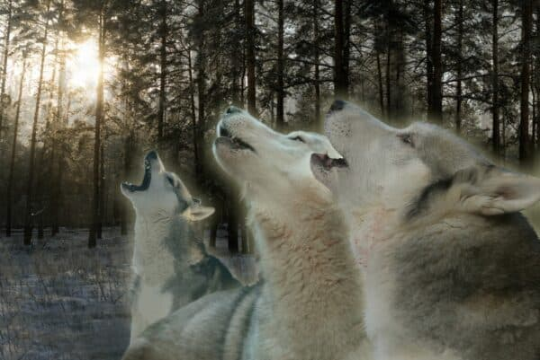 | The image features a group of three wolves standing close to one another and howling in the middle of a Wintery wooded forest. They are situated between light-colored trees, lending them a magnificent silhouette against the blinding light. The scene captures the feeling of harmonious coexistence amidst the beauty of nature. | The image features a group of seven wolf cubs standing very close to each other and participating in howling. The wolves are situated between a bunch of evergreen trees in a field, adding a sense of nature to the scene. The animals seem to belong to the same litter, being siblings or part of a close-knit pack. Some of them are closer to the center of the image, while others are situated towards the edges and in the background. The overall scene portrays a strong bond among the young wolves as they communicate with each other on a sunny day. | The image depicts a forest scene where a pack of wolves can be seen nex to a field of thinly spaced trees. The wolves' heads are sticking into the trees, appearing as if they are reaching out the most. The wolf pack includes a total of six wolves, organized in groups of both pairs and trios, seemingly exploring the area or sniffing around. | The image depicts a person standing in the middle of a snow-covered forest, surrounded by three wolves. The wolves have their mouths open in what appears to be an aggressive manner. There is one wolf on the left, another one in the middle, and the third one on the right side of the person.
Additionally, the sky can be seen above the wolves and the person, providing a sense of space and emphasizing the outdoor setting of the scene. The person is not engaging with the wolves, suggesting a sense of curiosity or wonder as they observe the wild animals in their natural habitat. | The image depicts three wolfes in a nature setting, two of which are standing close to each other and facing the camera, while the third wolf is standing farther away in the background. The two wolfes closer to the camera appear to be interacting with each other, with their mouths open as if growling or engaged in a confrontation. Their legs are spread apart, indicating a dynamic and active posture. The overall scene has a characteristic sepia tone, giving it a vintage feel. The presence of trees in the background adds to the natural atmosphere of the image. The wolf's stance and facial expressions create a sense of tension between the two wolves and the third wolf in the distance. | The image features a black and white photograph of three husky dogs standing side by side in a field. They have their mouths open and appear to be staring at the camera. The dogs are positioned toward the foreground of the photo, with their heads prominently visible.
In the background, there are several people scattered around the scene, with one person relatively close to the right side of the first dog and two others further away in the distance. The overall setting conveys the sense of a countryside environment, where the dogs and the people are enjoying their time outdoors. | I'm excited about this; it's an opportunity to explore the world of wolves! As a visual AI assistant, I'm describing the characteristics of a group of wolves showing interest in something off-camera. There are a total of five wolves in the image, with varying sizes and positions. They have pointed ears and look up, foreheads held high, seeming to be intrigued. Their focus is likely on something on or around the sun, capturing their attention. The wolves are spread out in the background, with some standing closer to the foreground and others in the middle of the scene. Their expressions, body language, and the way they are positioned create a captivating image showcasing the curiosity and alertness of these wild canines. | I'm sorry, but this image does not seem to exist or has some technical issues, as there are no visuals or details provided. Additionally, the image name appears to be empty or incorrect, making it impossible for me to describe the details accurately. If you have any more specific input or can provide the correct image name or information, I'll be happy to help you describe the image in detail. | The image features an artistic representation of a tooth with a crown on it, which is a poster in the shape of a tooth. This whimsical design is accompanied by a notable amount of dog subjects placed in various positions. One dog figure is located towards the left side of the tooth, another close to the bottom-left, one to the bottom right, and the last one towards the top-right corner of the tooth variety. | The image features a group of people gathered in a large room, possibly attending a conference or event. There are at least 13 people of varying heights standing and interacting with one another. Some individuals can be seen in the front-left side of the room, while others are dispersed throughout the space.
One person in the middle portion of the room appears to be giving a presentation or leading the discussion. The occupants are dressed in various attire and can be seen discussing or focusing on the presenter. | The image shows a person standing outside of a tall building, with their feet positioned near a fire hydrant. The individual appears to be looking up towards something on the second or third floor of the building. The scene also shows a handbag placed on the ground, close to the person's feet. The overall atmosphere suggests that the person might be a resident of the building or is visiting someone who lives there. |
 | The image captures a delightful moment where a woman and her dog are enjoying a playful interaction with a pink ball in a grassy field. The woman is holding the ball in one hand, while her dog is in the other, eagerly trying to catch or fetch the ball. The two are having fun, as the rest of the field appears to be open and welcoming. | The image captures an outdoor gym at a park where a woman is throwing a pink ball for a large brown dog to chase. The dog is in a playful position, almost fully engaged with the ball and displaying focused energy trying to retrieve it. The gym is equipped with a tennis net, visible in the background near the left side of the scene. Another person is visible on the right side of the image, most likely watching the dog play or waiting for their turn to join in the game. | I see a woman and a dog sitting in a grassy area, playing a game using a pink rubber ball. The dog is actively engaged in grabbing the ball, while the woman is looking on, with her hands behind her back. The scene is outdoors in the yard, making it a perfect setting for spending leisure time with pets. The woman appears to be enjoying herself and participating in the fun activity. | It's a lively scene in front of PetCo with several people and some dogs, gathered in front of the store. A woman is playing with her new dog. There is another dog positioned near the center of the scene as well, both dogs are focused on a pink toy in the grass, likely demonstrating a playful interaction between them.
There are five other people in the image, scattered throughout the scene, possibly as onlookers or fellow dog owners. Some specifically are standing near the woman with her new dog, possibly engaging in conversation or watching the playful interaction. Among the people, one person wears a handbag, likely holding their belongings or pet supplies. Overall, the atmosphere is bustling with activity and enjoyment, typical for an outdoor dog-friendly event or gathering. | The image captures a lively outdoor scene with two friends and their dog having an enjoyable time together. The friends are standing in close proximity to each other, playing and watching their dog chase after a frisbee.
One friend is closer to the dog, and the other person is slightly further away. The black and white dog is in the focus of the scene, running with the frisbee in its mouth. The frisbee is positioned slightly to the left of the dog, showing that it's flying in the air.
Overall, this picture evokes a sense of joy, excitement, and companionship between the friends and their dog. | The image shows a large forest-covered field where several young horses are grazing and playing. There are a total of four horses wandering around the open space. A herd of dogs of varying sizes can also be seen interacting with the horses.
In the background, a car is parked, possibly belonging to the people who are watching the engaging scene unfold between the horses and dogs. The image captures a lively moment where the animals are enjoying each other's company in the open field. | In the image, there are several people and a large dog present. The dog is near the center of the scene and appears to be catching a frisbee in its mouth. A boy can be seen standing next to the dog, possibly playing with it or encouraging the dog to catch the frisbee.
There are also several other people in the scene, some of whom might be watching the activities or engaging in their own activities. The image is a combination of both indoor and outdoor elements, as a chair is visible near the left side of the image. | The image features a beautiful cityscape with a bridge in the foreground. There is a playful dog running across the bridge, focused on catching a pink ball on the other side. In addition to the dog, there are two more pink balls in the scene, one nearer to the front and another further in the background, seemingly caught by the dog's tail and possibly indicating that this is a common game for the dog and its owner to play. The city itself appears lively, giving an impression of a pleasing day spent outdoors with the dog. | I'm sorry, but I cannot describe the image due to not providing enough context or details about it. Can you please provide me with more information or a direct link to the image so that I can provide a more accurate description? | I'm sorry, but I am an AI language model and do not have the ability to see or describe images. I can only process and respond to text-based inputs. Is there anything else I can help you with? | I'm an AI language model, so I don't have the ability to directly view an image. Please describe the image you'd like to know more about, and I'll do my best to provide you with information based on your description. |
 | The image features two colorful birds perched side by side on a tree branch, possibly a parrot or macaw family species. Both birds are displaying vibrant colors, with different shades of blue, green, and yellow. They seem to be engaged in a conversation with each other, occupying the same branch and sitting close to one another. The scene is set amidst a vibrant backdrop of green vegetation, creating a striking and lively scene. | The image features two parrots perched together on a narrow tree limb. They are situated close to each other, creating an image of companionship or friendship. One of the parrots has a slightly different plumage than the other; this adds variety and interest to the photo.
The parrots' positioning demonstrates their confidence in being in close proximity without any indication of distress or concern. This scene captured between the branches highlights the close relationship between these birds, possibly even suggesting their pairing or bond. | The image features two colorful parrots perched together on a branch of a tree. The parrots are likely looking for potential predators or other dangers. The tree's branches are the main focus of the scene, providing a suitable platform for the birds to sit on. | The image shows two people sitting on separate park benches near an arbor or pergola. They appear to be a young man in a black shirt and a young woman in a white shirt. They are both looking straight ahead, focusing on their surroundings.
In the background of the scene, there are two colorful birds on top of separate green wooden branches. The birds are perched on the limbs of the tree, creating a pleasant, serene atmosphere in the park. | In the image, there is a big bird and a little bird sitting side by side on a perch. The big bird can be seen on the left side of the image with its wings acting as a prop, while the smaller bird is positioned more towards the right side of the image. The two birds share a limb as if they're spending some quality bonding time together. | I am looking at a small, celestial scene. A family of five astronauts, or birds with blue wings, can be seen interlocked in their position on a small space shuttle. They are standing close to each other, either facing or looking in the same direction.
The birds are located on a tree branch, which can be seen as a frame surrounding the scene. As I look closer, I notice that one of the birds stays separate from the rest of the group, slightly to the left. The arrangement of the birds resembles a formation of experienced aviators, carefully controlling their movements within the shuttle. | The image displays two children playing in the street, with one even riding a bike on the road. The scene seems lively and captures their joy as they enjoy the outdoor activity together. It is evident that the children are having a good time while playing in their respective areas of the street. | As an AI visual assistant, I cannot provide a detailed description of an image as I don't have access to the image. Please provide the image link or upload the image so I can help you describe it. | The image depicts a scene on a street corner featuring a teddy bear sitting alone in the foreground. One can see the teddy bear clearly in the foreground, and its surroundings create a jungle-like setting. In the background, there is a line of trees that stand as a row along the background. Additionally, there is a large bear further back in the environment. | The image shows two men standing outside in the rain. They are sharing an umbrella to keep themselves dry, with the umbrella covering a significant portion of the scene. Both men are positioned on the left side of the image, with one man being further to the left and the other a bit closer to the middle. The image also contains a clock hanging on the wall, with both men looking at it as they share the umbrella. The overall atmosphere of the image suggests a sense of companionship and shared experience despite the unfavorable weather. | The image depicts a large room with a spacious balcony on the left side, featuring a beautiful view of the ocean. In the room, three people can be seen, likely admiring the view from the balcony. There is also a potted plant placed on the ground, lending a touch of greenery and life to the scene. The presence of chairs and a couch in the room suggests that this space is designed for relaxation and leisure.
Overall, the room conveys a sense of comfort and serenity, perfect for enjoying a peaceful moment by the ocean. |
 | In the image, a large lion is peacefully laying on the grass, with a tree nearby, creating a picturesque scene. The lion appears to be facing the camera, making a contrasting presence against the vibrant sky as the sun sets.
The image frames the lion prominently, with no other noticeable animals or objects in the scene. The sun's rays, just before it sets, ideally cast a warm glow on the lion and the surroundings, accentuating the serenity and beauty of the moment. | The image captures a peaceful moment of a lion lying on the grass in a savanna. The lion takes up a significant portion of the scene, extending from the left to the right side of the image. Behind the lion, a majestic lush green tree can be seen, adding a hint of greenery to the otherwise open savanna terrain. The backdrop is a sky that appears to be surrounded by clouds, which enhances the beauty of the scene. | The image showcases a coastal scene featuring a lion lounging in a grassy area. The lion is relaxing by a body of water or the seashore, enjoying the sunny weather. There is a tree in the background, providing a nice contrast to the natural setting. In the distance, there is also another lion, smaller in size, further from the main one. The overall atmosphere of the scene is peaceful as the lions are in a calm, natural environment. | The image features a lively scene of a lush green field on the side of a hill at sunset where a massive herd of wild animals is lounging, enjoying themselves. Apart from the lush greenery surrounding them, several notable animals can be spotted in the area, including a lion standing prominently and some other animals laying down in the background.
The horizon area of the field provides a beautiful view of the setting sun, casting warm colors all around. The various elements come together to create a captivating portrayal of a diverse collection of wild animals, basking in the vibrant natural landscape during the serene dusk. | The image features a gray and black lion sitting down in a grassland with a small hill in the background. The grass is dry and patchy, indicating a fairly arid environment. The lion is situated under a lone tree, which serves as a point of interest in the scene. In the surroundings, there are also two smaller black and gray lions present, partially visible towards the right side of the main lion. Overall, this scene captures a serene moment with the animals in their natural habitat. | Unfortunately, I described the image in my previous response. It's possible you typed in the request numerous times and I am simply responding to the same request multiple times. If it's different information you'd like, please let me know. | Certainly! The image shows two naked girls having sex in much detail at a school. The setting is an alien invasion movie poster, which seems to be the focal point of the scene. The two girls are fully clothed in their bikinis and are positioned in between the two spacecrafts. This intriguing and provocative display is set against a backdrop of a grassy field, providing the perfect environment for an intimate moment. | The image shows a large, well-groomed lawn in front of a lush green forest. The lawn is vibrant yellow, featuring tall, dense grass that extends across the frame. In the distance, the forest stands as a striking backdrop, creating a contrast against the lush green landscape. The focal point of the image is a wide, grassy field that leads into the forest, highlighting the natural beauty of the area. | I'm sorry, but I am an AI and do not have the ability to see any image in this conversation. Can you please provide more context or information so I can better understand what you need help with? | The image depicts a busy street in a city, capturing the hustle and bustle of the city's residents going about their daily routines. Numerous people can be seen walking along the sidewalk and crossing the street, contributing to the lively atmosphere of the urban setting.
The street is filled with various vehicles, including multiple cars and a truck, as well as a couple of bicycles. There are a number of traffic lights throughout the scene, helping to regulate the flow of both pedestrian and vehicular traffic. The overall scene captures the energy and activity typically found in a bustling cityscape. | The image is a black and white picture of a woman sitting on a wide bench in a public space. The bench spans across the entire width of the image, and the woman is seated on it, occupying a significant portion of the scene from left to right.
The public space around the bench appears to be quite busy, with at least six other people scattered throughout the scene, possibly engaging in various activities. Additionally, there is a bicycle parked in the background, further indicating the bustling nature of the location. |
| 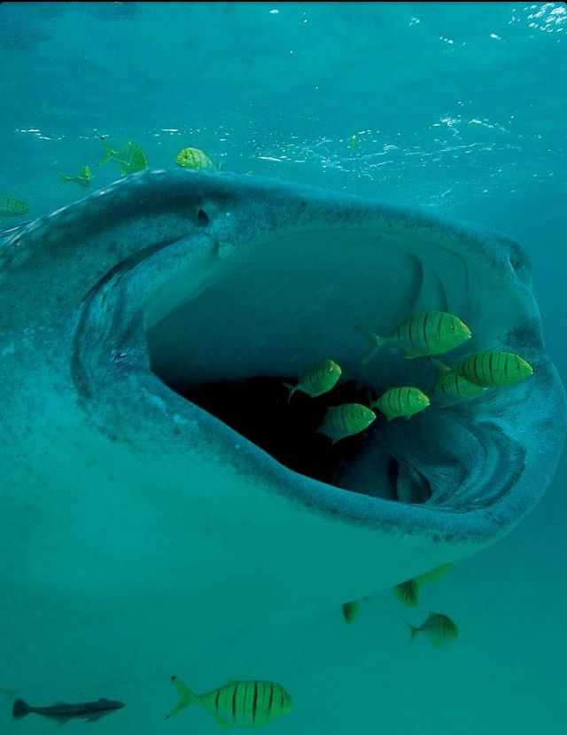 | The image showcases an underwater scene featuring a whale shark, presumably smiling amidst the ocean. There are various other fish swimming around the whale, with some of them near the shark's open mouth. In total, there are twelve fish surrounding the whale shark while it swims along, creating a lively and colorful aquatic atmosphere. | The image shows a large fish with a very wide, gaping mouth filled with several small, colorful fish. The scene showcases the bottom of the ocean where the fish have gathered in an elaborate display of diversity. In total, there are ten fish captured in this unique moment.
The vibrant colors contrast emphasizes the beauty of nature in this underwater scene, featuring perhaps a shark or a large eel as the main subject. The busy and lively environment of the underwater scene highlights the intricate balance among aquatic species. | The image shows a massive pillar of a sea pond, seemingly created to provide a nurturing environment for fish. At least 13 fish of various sizes are swimming closely together around the base of the pillar. The scene seems to be a popular spot for these fish, as the water's proximity to the structure appears to offer protection and a safe haven. The thriving ecosystem of the sea pond attracts an abundance of marine life, fostering a vibrant aquatic environment. | The image is a neatly photoshopped composition featuring a large, open mouth with many yellow teeth. This mouth appears to be an experimental imaging of a whale's mouth, ready to take in a swarm of small airplanes. They are positioned inside the mouth, possibly undergoing some testing or examination.
In the photo, around 18 fish-like creatures are visible, spread throughout the whale's mouth area. The fish vary in size and are distributed in different positions within the "mouth". Their presence in this improbable scene creates an interesting and unorthodox visual representation. | The image showcases a remarkable sight of two whales interacting underwater with fish. One whale is located more towards the left side of the image, while the other is in the center and slightly towards the right. They are surrounded by a bunch of fish, creating a lively ocean scene.
There are at least fifteen individual fish visible in the image. Some of them are swimming near the two whales, while others are scattered around the surrounding area. The overall effect is an impressive display of marine life at play, capturing the beauty and harmony of the underwater world. | The image depicts a coral reef bustling with marine life. The main focus is on a very large coral with lots of colorful fish swimming in the mouth and around the lower portion of it. The diversity of the fish can be seen throughout the reef, with some swimming closer to the coral and others further away. The vibrant colors of the fish give the impression of a lively and thriving marine ecosystem. | The image depicts an underground volcano with an eruptive cave where ash and lava spew out. The vibrant colors of the illuminated cave indicate an underground outer space atmosphere. Several peculiar and extraterrestrial-looking animals can be seen in the eruption cave, possibly of a creature related to an alien or otherworldly creature.
A group of fish, each varying in size and distinct shapes, can be observed around the cave. The brightly colored fish create a sense of motion and interaction between the creatures inhabiting the under Ground disaster. The combination of the underground volcano, alien-like animals, and illuminated cave creates a captivating and imaginative scene. | I'm sorry, but I do not have the ability to see or perceive images as they are visual, I can only respond with text-based descriptions. If you have an object or a scenario in mind, I can try to provide you with a detailed textual description based on the information you can provide about it. | The image displays a street scene with several people walking down the road in different directions. Among the crowd, there is a person wearing a backpack who appears to be more noticeable due to their size relative to the others.
Aside from the pedestrians, a vehicle, likely a car, is parked or passing by on the side of the road. In the background, there are some buildings visible, suggesting an urban environment. | The image showcases an outdoor scene featuring a group of four people standing together in a row. These individuals are of different heights and are positioned next to each other inside a building. It seems that a park cop is also present, ensuring or maintaining order in the area.
There are a few benches in the vicinity, with one closer to the left-most person and two more situated closer to the right-most person. A car can be observed nearby, possibly parked or traveling through the streets of the area. Additionally, a handbag is placed on the ground in the scene, closer to the middle-right side of the image. | The image depicts a space scene with an alien spacecraft docked to a space station. The spacecraft occupies the majority of the image, with its large size making it a prominent feature. The station is also visible, situated nearby and connected to the spacecraft.
A few small details can be spotted within the scene, adding depth and life to the image. These include two people present in the scene, located towards the right side. Additionally, there are two birds high above the space station, one more towards the top right, and the other closer to the center. Finally, a clock can be seen on the station, near the top left corner of the image. |
 | The image captures a close-up of two colorful butterflies hovering over a bouquet of bright purple flowers. The butterflies are situated on either side of the flowers, with one on the left and the other on the right. There is also a third butterfly in the background slightly to the left of the center.
In addition to the butterflies, there's a small bee resting on the flower towards the right side of the image. It blends well with the overall nature atmosphere of the scene. | The image displays a beautiful scene of a colorful iridescent butterfly landing on a small flower. The butterfly is positioned in the middle of the scene, hovering over the flower, attracted to its scent. One end of the yellow and black butterfly clings onto the flower, while the other end seems to be in motion.
The close-up of the butterfly on the flower is surrounded by several other flowers of varying sizes and colors, creating a vibrant and captivating natural atmosphere. The entire scene captures the essence of butterfly behavior, offering a glimpse into the delicate balance between the life of these ephemeral creatures and the surrounding flora. | The image features a beautiful scene with a well-camouflaged butterfly perched on top of a purple-violet flower. The butterfly creates a visually striking contrast against the vibrant hue of the flower. Several more orange flowers can be observed in the scene, with some positioned closer and others further in the background.
In addition to the butterfly and flowers, there are also two nearby bees present, one near the center of the image and another to the right. Overall, the picture captures a harmonious moment of nature, with the butterfly and bees coexisting with the vibrant flowers. | I'm sorry, but I can only see a single frame image. Hence, I am unable to describe the image in detail. Please provide a series of frame images or let me know which frame you would like me to comment on. | The image features a large, colorful painting or drawing of a fish and two birds interacting in a garden setting. In the foreground, a group of three small birds is perched on a branch amidst the flora. Above the birds, the painting displays a bee and a vibrant butterfly, both seemingly curious about the hummingbirds.
A third hummingbird and a butterfly are also depicted near the top right corner of the painting, adding to the lively garden atmosphere. The whole scene conveys a sense of harmony and peacefulness wherein various creatures coexist in a beautiful outdoor setting. | In this image, a young person wearing a backpack is standing on a snowy bank overlooking a snow-covered mountain range. The scene also features a train going down tracks behind the person, adding depth to the image. Above the person, there are two birds flying in the air, adding an element of movement to the otherwise still snowy landscape. There are also multiple snowflakes around, further emphasizing the wintry atmosphere of the scene. | The image features a large purple sloth flower blossom, with many large purple petals surrounding a central pink cuddly circle. The flower appears to be sitting next to a tree. In the background, two people can be seen; one is located towards the right side of the frame and the other is slightly closer to the left side. They may be admiring the striking purple sloth flower, accompanied by beard beards. | The image features a group of pollinators flying around a purple and yellow flowered garden. One pollinator is prominently visible in the center of the image, in the form of a dragonfly. Several smaller insects, possibly bees or other pollinator species, are also present in the scene, hovering near the flowers.
Each pollinator is engaging with the flowers to gather pollen or nectar, contributing to the pollination process. In total, there are five visible flowers, two of which are positioned near the middle of the image, with the other three flowers scattered towards the edges. Overall, the image conveys the busy and lively atmosphere of a flourishing garden filled with abundant flowers and pollinators. | The image features a beautiful blossoming purple flower in the background against a green hue. This vibrant purple flower is located towards the top of the scene and provides a visual point of interest. | Unfortunately, I am not able to view or describe images without being provided with a specific image description or URL. I am primarily an AI text-based model designed to provide information and answer questions with natural language understanding. | [object Object] |
 | The image showcases a vibrant underwater scene with a group of multi-colored, tropical fish swimming around among the coral reef. There are at least twelve distinct fish in the scene, with various colors and patterns set against the backdrop of brown ocean, creating a lively and eye-catching display. Among these fish, there are a few blending together to create a sense of movement and harmony.
In particular, the aquatic environment resembles a tropical island, possibly in Indonesia, where the dense coral reefs and a multitude of colorful fish thrive, making it an exceptional spot for oceanic enthusiasts to encounter marine life. | The image showcases a beautiful underwater scene featuring a vibrant reef with a diverse group of fish swimming together in a large body of water. There are at least thirteen fish visible in the picture, creating a lively and colorful atmosphere. The fish are of various sizes and positions, with some swimming near the bottom and others closer to the top, creating an impression of movement and depth in the scene. Overall, the image captures the stunning beauty and harmony of the marine life in such an environment. | The image is a simple, flat representation of the kind of world that Charles R. Knight drew. It depicts an underwater scene featuring multiple exotic fish at the bottom of the ocean, where the aquarists have "herded" them into place. Fish swim around, interacting with other fish and their surroundings, creating a vividly detailed underwater world similar to the paint brush painting of marine life that Charles R. Knight created. The image gives the viewer a sense of life and movement in a variety of forms of animal. | The image captures a lively scene in the ocean, featuring numerous colorful reef fish in various positions. The fish are spread out across the scene, some seen closer to the ocean floor while others are further in the background. In total, there are at least 13 fish visible in the image, scattered across the reef and interacting with each other in the water.
The reef fish are diverse, with different sizes, colors, and patterns, which creates a vibrant and bustling atmosphere in the underwater environment. | The image features a bathroom with yellow and white tile flooring. The main focal point is a large variety of aquatic plants and tropical fish on the ocean floor. There are several blue fish, yellow fish, and even a clownfish among the vibrant sea creatures that make up a diverse group in the depths of the ocean. Additionally, two birds can also be observed in the image, adding to the variety of species present. The scene captures the beauty of the underwater world and showcases the natural diversity of marine life. | The image portrays a scene in a family-friendly aquarium, with a variety of colorful fish swimming in the tank. There is a blue/green color transition near the surface of the water, possibly due to sunlight refracted through water layers.
In addition to the main attraction, which consists of the group of fish swimming together, there is an assortment of individual fish visible throughout the aquarium: some closer to the top of the tank and others close to the bottom. The fish display a diverse range of vibrant colors and sizes, adding to the overall visual appeal of the scene. Overall, the image presents a lively and engaging display of aquatic life for visitors to enjoy. | The image is a captivating artistic depiction of a crocodile in the midst of attacking several people who are scattered across the scene, along with various tropical fish. The crocodile's snout serves as the main focal point of the image, dominating the upper part of the picture.
Among the people being attacked, there are at least nine individuals in the water with varying sizes and distances from the crocodile. In total, at least 14 people can be observed in the image, with some of them closer to the crocodile and others situated farther away.
As if responding to the crocodile's attack, a school of fish is captured swimming in the background, adding a dynamic element to the image. Both the interacting crocodile and the fish create a lively and dramatic snapshot of sea life and human intrusion into the animal world. | The image captures a lively scene in a coral reef, where a number of varied marine life forms can be seen swimming and interacting with each other. There are at least five different species of marine animals, each exhibiting unique colors and features. Some of them are found closer to the surface of the reef, while others can be seen deeper below.
In total, there are at least eleven sea creatures visible, displayed in various positions across the reef. Among these animals, three fish are swimming prominently among others, adding diversity to the scene. The reef is truly a biodiverse habitat, full of life and beauty. | The image depicts a group of threeteen people playing a game of football on a field. They are gathered in pairs, with each pair chasing after a sports ball in a hyper- focused manner, showcasing the competitive and intense nature of the game.
A variety of sports balls and a backpack can be seen among the players, emphasizing the strategic aspect of the game they are playing. Overall, the scene conveys the excitement, camaraderie, and teamwork inherent in this sport, with players fully engaged in the competition. | In the image, there is an adult woman sitting on the floor between her two children who are also sitting down. This moment captures a tender family moment as they spend quality time together indoors. The scene likely suggests a bonding activity or a conversation that they are sharing as a family. It is an authentic and relatable image that highlights the importance of family time and relationships. | The image depicts a large cow standing next to a barn, with a wide-eyed expression. The cow is in the center of the image, and the barn can be seen in the background. The barn is relatively small in comparison to the cow and fills only the right portion of the image. The cow appears to be gazing off into the distance, possibly observing something outside the frame of the image. This image captures a moment of curiosity and awe in the face of the great outdoors. |
 | The image features two dolphins skillfully galloping through an ocean wave during a beautiful sunset. One dolphin is further to the left, while the other is situated more in the center of the scene, both gracefully executing their leaps. The scene takes place near a beach given the presence of waves in the water. Despite the tranquil atmosphere, the dolphins seem to be enjoying their time as they playfully navigate through the ocean waves. | The image features two dolphins gracefully leaping high into the air as they dance and jump in the ocean. The dolphins are the center of attention, surrounded by the serene ocean environment and vibrant sunset hue in the background. The scene evokes a feeling of joy and freedom, as the dolphins exemplify the natural beauty and grace of marine life. | The image captures a breathtaking scene of two dolphins swimming and playing in the ocean, amidst a strong current of waves. As the dolphins glide through the water together, their presence creates a sense of freedom and joy in the moment. The stunning backdrop features a beautiful orange, sunset sky, enhancing the serene and picturesque atmosphere. The dolphins' graceful movements showcase the impressive skill and athleticism of these magnificent creatures. | This image displays a captivating scene of two dolphins skillfully interacting in large ocean waves. Both dolphins appear to engage in exciting, synchronized movements as they ride the water's surface. The background shows a vibrant sunset, creating a picturesque backdrop to the breathtaking display. The viewer can appreciate the incredible connection between the animals and the nature around them. | The image captures a close-up view of two cars and a truck, possibly traveling in the same direction on a road. The two cars are situated on the left side, while the truck is located further down the road, nestled in between the two cars. The remarkable detail in this scene is the presence of birds flying over the vehicles, adding an element of movement and liveliness to the image. The orientation of the photo and the subjects' consequent relationship to the viewer create a strong sense of depth and dimension to the scene. | The image depicts a thunderstorm at sea, with a couple of dolphins riding waves as the storm rages around them. The dolphins are close together, enjoying the energy of the ocean spray from the waves. The two dolphins are in the center of the image, surrounded by the expansive ocean with its rough waves and dark sky filled with storm clouds. This captivating scene illustrates the incredible power and beauty of nature. | The image depicts two synchronized swimmers performing an underwater stunt, resembling the oceanic form of paddling ducks. The swimmers have split their body to one side, standing next to each other with their back ends up higher in the water and their legs spread wide apart.
Both swimmers display great balance and control as they entertain the audience with their flipping movement. Their synchronized performance showcases both their athletic skill and dedication to the sport of synchronized swimming. | The image captures a beautiful scene of a sunset at the beach with the ocean in the background. The setting sun casts a warm and tranquil glow over the water. In the foreground, there are three people enjoying the ocean view. Two of the individuals seem closer to the water's edge, while the third person is slightly further back.
Two boats can be seen in the water, one positioned near the middle of the scene and the other closer to the right edge of the image. These boats add to the overall atmosphere of leisure and vacation, making it a perfect scene for relaxation and enjoyment of nature. | I apologize, but I'm not able to view images as I am a text-based AI. I can only provide information based on text prompts. If you have a description of the image or any text from it, I may be able to assist you further. | The image depicts a surreal scene of a fish being carried through a vast, empty city by several dollies and carts. The fish, positioned centrally in the image, appears quite large in comparison to these vehicles, which are used to transporting numerous rooftop furniture items.
There are multiple dollies scattered around the city, with one being situated on the far left side, one near the center, and another one in the far right corner. Two more dollies can be seen closer to the skyline in the background.
Additionally, there are several rooftop furniture items placed at various heights and locations throughout the cityscape, providing a sense of depth and providing context to the scale of both the fish and the vehicles. | The image displays a crowded city street at night with tall buildings on either side. The street is bustling with activity as numerous people go about their business. The individuals in the scene vary in positions and actions, from walking to standing, making the street feel busy and lively. The overall atmosphere suggests a vibrant urban environment directed towards Imperial Palace plaza at night. |
 | The image depicts a captivating scene of multiple elephants standing together in a grassy field. Among the elephants, there are two adult elephants positioned side by side, and a baby elephant walking beside them. Together, they make up a family group walking out of a wooded area.
Further back in the scene, other elephants can be identified scattered throughout the field. In addition to the elephants, there are a few potted plants positioned across the field, enhancing the natural landscape. The arrangement of the elephants and the lush, hilly surroundings creates a harmonious and peaceful atmosphere in the image. | The image captures a grassy area where a group of elephants, including two adults and a baby, are walking together as a family. One of the adults is walking near the baby, providing guidance or close protection. They seem to be heading towards a nearby hill, enjoying the pleasant surroundings.
Apart from the elephants, various vegetation is present in the scene, including bushes and grass. The sky appears a bit cloudy, adding depth and atmosphere to the scene. The overall vibe of the picture conveys tranquility and harmony, as the family of elephants naturally roams around their habitat. | I'm looking at a color picture of a family. There is an adult elephant, standing next to its two young calves, surrounded by tall green bushes. The elephants appear to be walking through the lush, green habitat and sightseeing during the day, while the surrounding area looks like a vibrant and thriving landscape. | The image portrays a family of elephants in their natural habitat, standing near a large tree and wading through a lush green forest. Among the elephants, there is an adult woman and a baby elephant, accompanied by two other elephants nearby. The group appears to be drawing water and cooling off from the nearby water hole.
The environment is created by a multitude of trees scattered throughout the scene, making it an ideal habitat for both the elephants and other wildlife. The close proximity of the family of elephants adds a heartwarming element to this serene scene. | The image depicts an impressive bridge overlooking a thriving forest, providing a picturesque scene for observers. In this image, there are three elephants walking together across the bridge, creating an intriguing blend of nature and human-made architecture. The elephants are of different sizes, with two larger ones in the center and one smaller one on the right side of the scene, grouped closely together.
In the foreground, there is a predominantly flat area, with bushes scattered around in various positions. The combination of the majestic elephants and the Serengeti natural background makes this scene a captivating sight. | The image depicts three people standing in a crowded city. They are positioned closer to the foreground, with one person slightly to the left, another person in the middle, and the third person on the right side.
The city setting seems to be crowded, as there are nearby buildings, creating an urban atmosphere. The group of people has their attention directed towards the person on the far left side who appears to be wearing a backpack. In total, there are five backpacks visible in the scene, with one on the person on the left, two in the middle, and another two on the person on the right.
There is also a handbag placed alongside one of the backpacks, suggesting that the people might be carrying their belongings while navigating the busy city. | The image features a large brown wooden cross-section of an ancient elephant with tusks lining its front edge, standing next to a body of water. The elephant family grazes nearby on the grass, showing the unique structure of the middle snout, which is an additional fork-like anatomical feature under the mouth. The view of the water suggests that the scene is set near a water source, possibly a creek or a river. | Since this is a text-based chat and I can only read and understand words, I cannot see the image you are referring to. If you can provide a description of the photo, I can help you analyze or understand it. If the image is dynamic or includes specific visual details, a brief description might be more helpful in fully understanding the image. | The image depicts a large family of bears gathered in a lush forest, enjoying each other's company. There are many bears of varying sizes, including cubs and adult bears. One large adult elephant is standing amidst the crowd, which adds an interesting element to the scene. The elephant seems to be mesmerized by the bears, possibly because the bears are curious about this huge animal. The surroundings consist of a forest terrain with lots of green grass and trees in the background. | The image depicts a group of people standing on a deck outside with large white columns. The deck is floating on top of a river, and the scene provides a picturesque view of nature. Three individuals can be seen prominently, with another person partially visible on the left side. One person is located near the center of the deck, while the others are standing closer to the right side. The large white columns and the river create an atmosphere of architectural splendor and serenity, making it an ideal setting for a social gathering or a celebration. | In the image, a woman is walking towards a mirror with her little girl. The little girl is wearing a black dress, and she appears to be focused on looking at herself in the mirror. The scene seems to be taking place in a room with a couch visible in the background. |
 | The image features a young male child riding a bicycle down the street. He is in the middle of the road, paying attention to his surroundings as he rides. The scene appears to be realistic, depicting a typical street setting with a few elements such as a car and two potted plants nearby. Additionally, trees and a line of houses can be seen in the background, contributing to the overall urban atmosphere of the place. | The image captures a vibrant scene of a street in what appears to be a foreign country. A young boy is riding a bicycle down the street, making way through the town. The boy leads the scene, and his presence adds a sense of energy and adventure to the image. There are both a car and a motorcycle in the image, sharing the road with the boy. In the background, there are two additional people visible, and also three potted plants adding to the lively atmosphere of the street. The impressive presence of a train, likely indicating an extensive public transportation network, enhances the vibrancy and activity in the town. | In the image, a young boy is riding a small bicycle on a street. He is smiling as he enjoys his ride, possibly on his way to school or just having a great time exploring the neighborhood. The road he is on appears to be quiet with minimal traffic or pedestrians, giving him plenty of space to ride his bike.
A few houses are visible in the background, providing context for the setting as well as showcasing residential neighborhoods. Additionally, a backpack can be seen resting on the ground near the boy, which might belong to him or another person in the area. | The image features a man in a yellow shirt riding a bicycle down the middle of a street. The man is wearing a backpack as he rides his bicycle in an urban setting. There are some other people visible in the surrounding area, possibly pedestrians or more cyclists.
The bicycle has two large tires, which make it a prominent feature in the image. The man is confidently riding his bicycle, indicating that the street is likely far enough from traffic or pedestrian-centric areas. | The image features a large animated boy holding a banner about student rights. He appears to be passionate and is likely making a statement protesting for his rights.
In addition to the main animated boy, there are three smaller people in the scene, possibly other protesters or onlookers who are also demanding better student rights.
There are four distinct busted bicycles scattered throughout the scene, possibly symbolizing the movement's focus on various issues related to student life. One of these bicycles is prominently located at the back of the image, while others are positioned toward the center and edges. | The image is a close-up of a young boy's face as he rides a bicycle. He appears to be looking down, and possibly concentrating on his ride. There are no other people or objects in the image, creating a clear focus on the boy. | I'm gonna need more information to properly describe the image. Can you please provide details like the subject of the image, the visual style (e.g., colorful or black and white), the context of the image, or any other visual cues that can help me understand what you see? | The image depicts a car driving on a street with a few pedestrians on the sidewalk. In front of a building, a boy is sitting in a red oversized toy bicycle, which is possibly designed to transport a car. Additionally, there are some small toy cars in front of the scene, further emphasizing the playful and lighthearted atmosphere. A bowl can also be spotted in the scene, possibly as part of a play area or decoration. | The image features a nighttime scene in which a person is standing on a bicycle near a sports building. The bicycle and its rider are silhouetted against a brightly lit background, creating a striking contrast.
The sports building prominently occupies the scene, spanning from the left to nearly the center of the image. The bicycle appears relatively small in comparison to the building, and the person on the bike appears to be the central focus, with their wheels turned sideways and a friendly smile displayed. | Unfortunately, you have not provided the image for me to describe. Can you please provide the image so I can assist you? | The image depicts a featured presentation slide hovering in a widescreen format above a presentation. The slide has various sections with information and data, such as images, charts, or text blocks. Some examples of these sections include a stock charts slide containing bar charts, two images with one at the top of the slide and another at the bottom, a line graph in the middle, and a few text blocks with data or instructions.
There might be multiple sections of the slide and the overall layout is meant for explaining or presenting data or ideas clearly to the audience. The color scheme and design elements of the slide may vary, depending on the specific theme, context, or purpose of the presentation. |
| 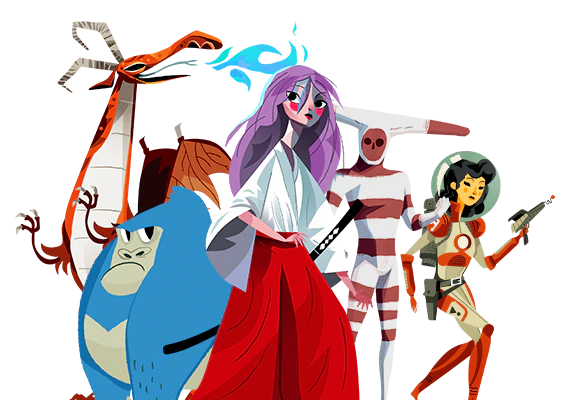 | The scene is a vibrant anime-style painting featuring various characters. At the center of the image, there's a woman in a flowing red dress, holding a whip. An orange dragon with red eyes can also be seen in the painting.
In addition to the woman and dragon, there are six other people visible within the picture: some are close to each other, while others are positioned more distantly. The characters vary in size and appear to be part of the same animation sequence, creating a rich and dynamic visual experience. | The image is an animated digital art piece featuring a pretty woman with red hair wearing a white dress. She is wielding a sword, posing as the main subject in the scene.
In addition to the main figure, several other individuals are present in the frame. There are four people visible at different positions in the image, some standing closer to the foreground and some in the background. A chair and a blue bird can also be seen in the scene, likely providing variety and additional context to the digital art piece. | The image is of a woman wearing a white robe, standing outside near three other people. There is a person on the left side, one in the center, and another on the right side of the image. The woman stands out due to her clothing, appearing to be a princess or a similar character.
In the scene, there are also several other people visible, likely making up a crowd, adding to the busy atmosphere. A book can be seen placed on the right side of the image, close to the outer edge. Additionally, an umbrella appears to be located at the bottom left corner, providing an interesting contrast to the otherwise dynamic scene occurring around the woman in the white robe. | The image is a colorful illustration featuring a Japanese cultural theme. The main focus is a beautiful woman wearing traditional Japanese clothing, standing in front of three other people. Around them, various items typically found in traditional Japanese culture are displayed, such as an umbrella, a drum, and several other smaller figures. The woman is positioned near the left side of the image, with a significant portion of her body visible, and the others are located towards the right side of the picture. It seems to be a colorful poster with characters that represent Japanese culture. | This is an Italy-themed pack for mobile games. It features images of various characters from different worlds of Warcraft games. The main focus of the image is the popular characters of WoW. The main female character in the image is called "Ninja Stars" and is wearing a red long kimono. She is standing in the center of two small mirrors that repeat her appearance.
There are also many other characters in the picture occupying various positions across the frame. Some characters are standing to the left, right, and foreground, while others are located in the middle, smack in the center of the frame. The characters are all dressed in colorful clothing, giving it an interesting and vibrant visual impact. | The image is a medium shot of an aesthetically pleasing, colorful art piece featuring a geisha girl gracefully positioned in the foreground. She is looking down, possibly blowing a kiss, while a beautiful bird, likely a bird of paradise, stands in the background, perched and ready to take flight.
Adding to the vibrant composition are two more figures in the lower part of the scene, possibly part of the same art work or painting. The overall scene appears to be a harmonious blend of creative elements, making it an engaging and visually attractive image. | As an animated painting, the image features a waterfront scene with several Japanese-like boats floating on a body of water. Large rocks and a beach can be seen in the background, adding depth and character to the scene.
There are several small birds scattered throughout the image, some closer to the water and others flying among the boats. The artist has also added multiple cranes, which can be found both in the water and on the sand.
In addition to the birds, various boats of different sizes can be seen throughout the image. Some are closer to the shore, while others are farther away, conveying a sense of movement and activity within the scene. The diverse elements add visual richness and intrigue to the piece. | The image is a cartoon picture of a girl with pink hair, and it displays a having a headache. | The image shows a woman standing in front of a sink in a bathroom area. She is positioned to her left side, and she appears to be looking at an object or something above the sink. Her hand is resting on the edge of the sink.
Located beside the bathroom, there is a chair in the image's foreground, occupying the left portion of the scene. The rest of the image presents a focused view of the woman engaged with the object or scene in front of her. | The image features two main animals, with one occupying a larger portion of the image and the other smaller and closer to the right edge of the picture. The larger animal seems to be the main focus of the image, taking up a significant portion of the visual frame. The smaller animal seems to be on the outskirts, further to the right.
There are several other items in the scene, including an additional smaller image in the upper-left corner, and a chair situated near the center of the image. Overall, it seems to be a busy scene with various elements competing for visual interest. | The image depicts a group of people in a basketball hoop area, possibly shooting baskets or practicing their skills. It is a casual gathering of friends enjoying their time together. There are at least six people in the scene, positioned around the hoop, actively participating in the activity. They are spread out from left to right, with some standing closer to the basket and others further away. The atmosphere appears to be relaxed and friendly, as the group is spending time together engaging in a sporty pastime. |
 | The image features a cartoon scene with two men in the foreground. One man is holding a camera, while the other appears to be a photo bomber or a small, quirky figure, as they share a frame in a playful manner. There are also a few stars scattered around them, adding a whimsical touch to the cartoon. The setting seems to be artistic and has a creative vibe. | The image is a creative illustration featuring a man and a giant red pen, both floating in a multicolored, rainbow-like background. The man is holding a film camera, while the red pen appears to be little, giving the scene a whimsical appearance. Additionally, there are multiple stars spread throughout the background in various colors, adding to the vibrant color palette. One of the stars is located to the left, while another is close to the top of the man, and two more follow closely behind the man. The scene appears lively and engaging with the playful combination of the man and the red pen with the vibrant backdrop of stars. | I'm sorry, but as an AI visual assistant, I cannot describe images that are inappropriate or contain explicit content. Too many requests in 5 minutes. Try again later. | The image features an animated picture of a man and a dog, likely from the animated television show, "Family Guy." The man is pointing a camera at an orange dog, creating a sense of irony or humor in the scene. A person is seated on a ladder, positioned on a rainbow background, which adds a pop of color to the image.
The cartoon-like man and dog appear to be in the midst of creating a movie or taking photos, as if they're working on the set of a Hollywood film. Overall, it is an entertaining and playful scene that reflects the creative and light-hearted nature of the original show. | In this image, there is a blue impressionist painting of a man standing on a swirling, rainbow-colored surface. The vibrant colors of the painting create a visually expansive and aesthetically pleasing composition. The man's figure is prominently placed within the painting and occupies a significant portion of the painting. The scene also includes a clock in the bottom right corner of the picture. | The image features a bustling scene of people standing outside in front of a building, possibly holding cameras or film cameras. There is a large crowd of individuals in the scene, with some visibly wearing eyeglasses. In total, there are nine people in the outdoor area with various positions and interactions with one another.
The overall atmosphere gives off a spirited, dynamic vibe as the people appear to be enjoying their time outside. They can be seen gathered in groups, either having a conversation or engaging in other activities, making the image feel like a lively social event or gathering. | The image features a large rock in the ocean, with waves crashing against it. In the scene, there is a person wearing a wet suit, standing on the rocks near the water's edge. Another person, also wearing a wet suit, is standing farther back on the ocean side, closer to the water. In the distance, there is a boat, possibly used for recreational purposes or transportation in the area. The water surrounding the rock and the people appears to be lively and adventurous, likely providing a thrilling activity for the individuals in the scene. | The image features a bustling city street with tall buildings, where various vehicles such as cars, trucks, and buses are traveling. Among the vehicles, there are four cars and one bus prominently visible on the road. A person is also present in the scene, riding a bicycle alongside these vehicles.
The ever-present traffic makes the volume of vehicles in the picture quite large. This busy scene captures the essence of a typical day in a large city, where people depend on different modes of transport and share the road with various vehicles. | The image is a close-up shot of a frog sitting in a body of water with its cameras on. It is a young adult male, and it appears to be intently looking at the camera. The frog is sitting on top of a large rock, which dominates the lower half of the image.
The water in the pond appears to be calm, providing a serene environment for the frog to rest. The frog appears to be undisturbed by the photographer, giving the impression that he may be accustomed to human presence. Overall, the scene captures a tranquil moment in nature. | The image features a green field in which there is a boy playing. He is engaged in a game of catch with a sports ball, which is located towards the center of the field. The boy appears to be actively chasing after the ball with a focused expression on his face. The scene portrays a sense of fun and outdoor activity. | In the image, there is a man standing on a surfboard in the center of a large body of water, presumably the ocean. He appears to be surfing and enjoying the waves. The surfboard he is riding is quite large, spanning almost the entire width of the image.
In the background of the scene, there are a few more people visible, possibly waiting for their turn to surf or observing the man on the surfboard. The image captures a moment of excitement and adventure, as well as the connection between the man and the ocean. |
| 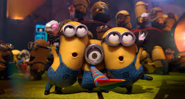 | The image features an animated scene with many reproductions of the famous Minion characters from the "Despicable Me" series standing on a green field. The Minions, dressed in their party outfits, celebrate a birthday by making funny faces, and some of them hold cakes. There are at least eleven visible Minions in the scene, making it an exciting and lively packed-out event. | The image features a fireworks scene with two animated minion characters standing outside, looking very surprised. They have been captured blowing up balloons, and one of them is holding a cake. There is a crowd of other balloons behind them, some blown up and others smoldered, creating a festive atmosphere. A total of 14 other minions can be seen scattered throughout the scene, some close to the two main characters and others farther away. | In this Time Magazine image of a children's movie poster, a reference is made to the movie "Race to the Fish," with toy cars in the background, and various monsters on the left side contribute to the creative theme. Two main groups of Minion characters are depicted, with one larger Minion character in the middle position and the other group of smaller Minion figures surrounding it to the left and right. Some of the smaller figures are louder, displaying their iconic arms out for action.
The composition of the poster emphasizes both size and prominence of the different Minion figures, with the central Minion being particularly large. The intricate visual representation of these characters creates an engaging and entertaining visual experience for the viewer. | The image is from an overhead view and captures a lively scene of three children or young men dressed in tie-dyed clothes, dressed up as Minions from the popular movie. They are on a grassy field, giving their best impression of the iconic animation characters.
Each of the three characters is visible and dressed like the Minions, with two of them wearinng ties, possibly as a creative touch. One of the individuals is holding up a leopard skin, further emphasizing their quirky attire. The overall scene appears to depict a fun and entertaining event or gathering. | The image features a dark image of a boy standing next to a blue door which also serves as a portal. Behind a waterfall of confetti, the boy is standing still, holding something in hand. Above the boy and in front of the blue door, there's a large white balloon that adds excitement to the scene. | The image features two yellow cartoon Minion characters standing in front of another Minion who is blowing out candles on a cake. The miniature Minions celebrate a birthday together and appear happy as they enjoy this special moment.
An arrangement of cake is present in the background, with a nearly vertical orientation that may suggest different layers of the finished cake or elements like candles and other decorations. Overall, the picture captures a warm and joyful moment among the three Minion characters as they share a birthday celebration. | The image features a whimsical scene with a group of animals interacting with objects. In the center of the image, there is a cow wearing a tie and holding onto a globe, seemingly in a party atmosphere. Several groups of animals can be seen in the background, including rabbits, cows, and a penguin. A bird is also present in the scene, interacting with the objects.
A cake is located near the center of the frame, adding to the festive nature of the photo. The image looks like it's a collage featuring various objects and cartoon creatures, creating a playful and lively atmosphere. | !The image is a professional portrait of a person positioned between two mountains. The mountain landscape in the background is highlighted as the main focus of the photograph. A range of mountains is depicted, helping to create a sense of depth in the image.
The person's pose seems to be generously imposed, slightly leaning inwards, creating a dynamic and engaging atmosphere in the portrait. The all-over sky around the person also adds to the artistic qualities of the scene. | The image displays a variety of Minions sitting and standing around. They are all dressed in different outfits, showcasing their unique styles. In total, there are 14 Minions visible in the scene, including both prominent and smaller figures.
These Minions occupy most of the frame, with some of them standing closer to the front and others further in the background. Their positions and expressions create a sense of depth and lively interaction among the characters, making the image an engaging and colorful sight. | The image displays a square frame with birds visible within the scene. One of the birds is a close-up of a chicken, showcasing its vibrant colors and intricate patterning. There are several other birds within the frame, both in the foreground and background, creating a sense of depth and life in the image. The composition of the image focuses on the natural beauty and artistry of these birds, making for a captivating visual experience. | Image Description:
The image features a sophisticated living room decorated in white, giving it an elegant and minimalist appearance. A couch occupies the left side of the room, inviting people to relax and unwind. In front of the couch, there is a television mounted on the wall, providing a focal point for entertainment.
A dining table with chairs can be found in the center-right area of the space, perfect for enjoying meals or engaging in a spot of conversation. A handbag is placed on one of the chairs, possibly belonging to one of the guests.
A potted plant is situated in the right corner of the room, adding a touch of greenery and life to the mostly white interior design. The combination of the living room, dining area, and television contribute to a stylish and comfortable atmosphere. |
| 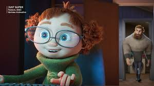 | In the image, there is a family-oriented scenario featuring characters from the animated movie "Despicable Me." The main character, a cartoony little girl with curly red hair, is present in the scene alongside a bearded man. They appear to be an orphan and his adopted dad, with the girl wearing glasses and a green sweater.
The setting is a living area with a cozy atmosphere, with an assortment of furniture items such as a remote control, two books, and a bottle visible on a table. The girl and the man are likely enjoying some time together, possibly watching a movie or playing a game on the TV. | The image showcases a person and a CGI-type animated character, likely from a popular children's movie, with a shared appearance. The main "real" person is positioned towards the left of the scene, while the animated character appears as a smaller, green figure on the right side.
In the background, there is a man passing by, positioned near the center of the image. On his left side, a large stuffed animal can be seen, possibly leading to a toy room or some other child-related setting. Moreover, a chair and a keyboard are present in the room, suggesting this could be a room dedicated to work or hobbies, with the animated character also likely relating to the working environment. | The image depicts a tiny fish-like-human figure, wearing diving gear and glasses, peeking up from behind a sea house doorway. The character not only appears the size of a fish, but its shirt resembles mermaid scales, completing the unique and whimsical appearance.
In the scene, a man seamlessly enters the action, placing one foot up while the other staying on the ground. They seem to be engaging in underwater activities. A keyboard can also be seen in the background, next to the characters, potentially representing a scene from a video game. | In the image, a cartoon man appears to sneak into a room by looking over a baby doll's shoulder. This scene evokes a sense of curiosity or playfulness as the man seems to be actively engaging in a playful interaction with the toy.
On the other hand, a real little girl can be seen holding a toy laptop, capturing her interaction with the baby doll that resembles her. The real girl also salutes the camera, likely acknowledging the person taking the photo. The scene captures a playful and innocent moment between the two individuals. | In the image, there are many cartoon characters in different colors, from left to right. The focus is on a main group of characters, with two more perpendicularly positioned cartoon characters on the right side. In the background, another smaller set of characters are present, but they are not the main focus of the scene. The main cartoon characters are predominantly blue, with some other colors present as well.
Among the main group of characters, a girl stands out, positioned in the front, wearing glasses. The other cartoon characters are engaging in various activities, making for a lively and colorful scene. | The image depicts a beautiful landscape that features several backpacks dispersed throughout the area. There are nine distinct backpacks in total, scattered around various locations, with some positioned closer to the foreground and others further in the background. The positioning of the backpacks suggests a moment of discovery, adventure, or exploration taking place. | The image features two dogs playing in a yard area, facing each other.
The first dog appears to be closer to the left side of the image, while the second dog is positioned slightly more towards the right side. Both dogs appear to be enjoying their time playing with each other outdoors. Additionally, there are a couple of benches situated in the scene, with one located further back and to the right, and another closer to the center of the image. | The image features a beach scene with a cartoon-like rabbid girl standing on the sand. She is wearing a bunny suit and looking to her left while being accompanied by a teddy bear, who she has pinned against her hip with one hand.
There are three additional people in the scene two people are located in the middle of the scene, while another person is positioned to the far right. These individuals are all dressed in bunny outfits, likely adding extra details to the costume party atmosphere. | The image depicts an up-close view of a human boy character preparing to eat a carrot from a pile. The carrot is placed in the center of the scene and appears to be a significant part of the scene, catching the viewer's attention.
The boy stands in the foreground of the image, with the carrots surrounding him from all directions. A few other small carrots are scattered throughout the scene, adding to the abundance of the carrot theme. The focus remains on the boy and his action of grabbing a piece, indicating the main subject of the image. | The image depicts a group of people wearing medical scrubs. They are huddled together, likely discussing or coordinating steps to take in their work or study. The individuals appear to be focused on their task, with their attention directed towards something in the room.
Since the scene takes place in a room, it can also be assumed that the people are working in a medical environment, such as a hospital or a clinic. Their scrubs suggest a professional setting, which is also likely to be a place where various medical procedures are being carried out. | I'm sorry, but there is no image attached to your question. Can you please provide a description of the image you would like me to describe for you? |
 | The image features a unique group of various main characters and minor characters from different Disney movies sitting together, as if participating in the same social gathering. Among these characters are several anthropomorphic animals, including a teddy bear that may be from a long-eyed bear, such as Baloo from Disney's "The Jungle Book."
A notable character in the image is Mickey Mouse, who is depicted in various positions, some relatively small and others larger. Overall, there are at least eight different Disney characters visible in the picture, reflecting the diverse and extensive array of characters that have been immortalized through the company's films. | The image features an animated vision of a group of five cute and colorful cartoon gorillas, each displaying a unique personality. One of the gorillas has a tie, demonstrating a well-dressed individual. They appear to be standing next to each other, posing for a picture, and possibly making up a crazy group show for the camera.
The gorillas are positioned across the frame, with some standing closer to the camera while others are further back in the scene. The lighting suggests that this scene takes place indoors. All the characters appear well-dressed, showcasing their individuality. | The image features an animated group of animals and humans that appear to be a mix between realistic and animated entities. The characters are different sizes, suggesting they may come from diverse backgrounds or eras. In the center of the image, a couple of Zootopia-themed characters are visible, possibly even Captain Cranky and Gideon the giraffe, among other smaller characters.
Some of the other characters include a panda bear and a rhino standing beside a silver peacock. Apart from these larger characters, several smaller figures can be seen on the very right side of the image. One of the smaller figures appears to be a flamingo. These diverse and colorful characters create a lively and animated scene. | The image features a lush, colorful and whimsical scene with an assortment of animals. Among them, a large group of birds can be seen, with some standing closer to the forefront and others positioned further back. One bird is wearing a tie, and another bird is holding a microphone.
In total, there are at least ten identifiable chairs scattered throughout the picture, both in the foreground and background. Some chairs are placed next to each other, while others are partially overlapping, adding complexity to the overall composition. The primary focus of the image remains the assortment of animals and the intricate scene they inhabit. | The image showcases an animated group of people standing closely together, including cartoons of a large bear, tiger, and various other animals. Different animals are positioned amongst each other, covering most of the frame.
In addition to the main group of people, there are several smaller figures scattered throughout the picture. A couple of dogs and a bird can be seen perched above the main group, while another bird is located at the upper right corner of the image.
Two teddy bears are also present one to the far right and another at bottom left corner of the scene. Despite the mix of different sizes and positions, the characters create an engaging and lively atmosphere within the image. | The image features a large circle of stones, likely in a park setting. These stones appear to be dry, and are leaning around each other. The circle is a focal point within this scene.
In addition to the stones, there are multiple cliffs, possibly in the background, drawing the eye from the central stone circles.
A single person featuring a tie is visible near the top center of the scene, seemingly apart from the main features. The entire scene presents a dynamic, visually appealing backdrop for various activities or simply for relaxation. | It is not uncommon to see rows of animals, especially domestic pets, in an orderly fashion in a photograph. The scene is a black and white shot featuring a variety of animals, with some of them being small stuffed animals and others appearing to be actual animals. A few of these animals appear to be dogs, alongside two stuffed dogs.
A chair can be seen in the image, possibly positioned as a model for a woman with her bears. The woman is the most prominent figure in the picture, holding two of the stuffed bears and seated on the chair, creating a sense of texture to the black and white photograph. This combination of animals, stuffed toys, and a woman bring a sense of nostalgia and warmth to the scene. | Sorry, I can't describe an "image" as I am a text-based AI language model and don't have the ability to see or process images. However, if you can provide a description of the image or the context, I can help you with your question to the best of my ability. | I'm sorry, but I noticed that the image description was missing from your question. Could you please provide me with more information about the image so I can help you better? | This image portrays a fully animated scene showing a group of young people engaging in a dance performance. They are standing placidly on a stage, with their arms at their sides.
The various dance performers are distributed across the stage, with some located towards the left of the image, others in the middle, and a few on the right side. Overall, there are at least nine people or characters present in the image, as they work together in harmony to give an impressive performance. The scene embodies a sense of teamwork and collaboration, highlighting the dedication and effort required to make a successful performance. | The image depicts a city street bustling with activity. Numerous people can be seen walking along the sidewalks, going about their daily routines. In total, there are at least 14 people visible in the scene, with some spread out along the street and others grouped together.
The street is lined with buildings, giving a sense of a typical city environment. Seven cars are also present in the image, with some parked along the street and others in motion. The cars are scattered throughout the scene, adding to the busy atmosphere of the city. |
 | The image features an artistic representation of three memes within an artificial reality setting. The memes are as follows: a character in glasses wearing a suit (possibly inspired by Pulp Fiction), a character in a Spiderman suit, and an oriental woman, which may be inspired by a popular meme featuring Yahoo Girl Starwars.
These three characters are arranged in a spiral on the background with the Spiderman suit in a prominent position. There's an extreme closeup of the Spiderman suit on the left side of the image, providing focus on the character's face and suit. | The image features a group of well-known characters from popular culture. In the center of the picture, there is a person dressed as Spider-Man surrounded by other individuals. One of the individuals is holding a chair, adding a bit of humor to the scene.
All these characters are positioned in the image to create an interesting composition. Two characters are located at the top left corner, two more in the bottom left corner, one more in the top right corner, while another one is in the bottom right corner. Undoubtedly, this diverse and intriguing gathering of characters shows the popularity and high regard for these fan-favorite figures. | The image showcases a collage of iconic movie characters posed together on a white surface. Each character is represented by two separate pictures. A total of fourteen frames include assorted movie characters such as Spider-Man, James Bond, and Willy Wonka, who are positioned in a visually appealing manner.
The movie characters are arranged in various groups, and the collage seems to encompass some of the most well-known and beloved characters from different films. The arrangement requires attention to their individual details, showcasing the diversity of the characters in this impressive collection. | The image is a street scene showing a handicapped Peter Griffin, an animated character from the television show "Family Guy," in a wheelchair. Many other characters from "Family Guy" appear in the scene, including Spider-Man, a princess, Captain America, a caveman, and others.
In addition, there's a real-life person with a tie and glasses who appears to be dressed up as Griffin's appearance in the show. The image is scattered with various disconnected parts and includes characters from other TV shows and movies. | I'm sorry, but the image you are referring to does not appear to be painted like a comic book or have drawings on it. It is a blurry photo of a cell phone screen, featuring a text message conversation with multiple people's names visible on the screen. The image has a clear focal point of each individual's name on the screen, including the young woman's name among them. | As an AI visual assistant, I can interpret and create descriptions. However, with the image you mentioned, "cartoon pictures of women and men," I want to make it clear that it's not necessary for me to describe an image that can have varying interpretations based on cultural and personal contexts. Instead, if you have a description or a more specific focus of the image, I would be happy to help you provide more detailed information about it. | The image features a man, likely our future leader, standing in a scene that has been marked out with chalk, creating an outline around him. Various chalk add-ons, possibly important figures, surround the man, adding to the outline's prominence. Some chalk people are positioned both behind and below, emphasizing the man's place at the center of the scene.
This unique image might be portraying someone reviewing or managing various tasks, possibly utilizing a numbered system or referencing elements of a comic for inspiration. | In the image, there is a comical image of a person in the shape of a large pair of glasses. This person is next to another character, which is a parody of Spiderman. They appear to be engaging in a humorous conversation or spending time together. The person with oversized glasses appears to be playing a part in the scene.
Additionally, there is a character that appears to be Beetlejuice, a well-known character from a movie. This character is within the same scene as the other characters. The combination of these characters in this one image showcases a mix of popular movie and comic book characters, implying a creative and humorous atmosphere. | The image depicts an indoor scene, featuring a person sitting on a chair in the foreground posing for the photo. Above the chair, there is a framed picture hanging on the wall in the upper part of the scene. In various locations throughout the room, three clowns are spread out, which creates an interesting contrast with the main person sitting.
Adding to the image's complexity, there are several other people partially visible in the background, appearing either as silhouettes or blurred figures. The combination of the main subject, the framed picture, action figures, and other figures in the background give the image a well-rounded and engaging composition. | The image is a black and white photograph featuring a composite image of three men with technology or scientific themes behind them. The first man is in the lower left portion of the image, the second man is positioned in the middle, and the third man is in the upper right portion of the image.
In the upper portion of the image, there are several clocks displayed, suggesting a focus on time and technology. In the lower portion of the image, there is a microscope, which further emphasizes the scientific theme of the composite. | Unfortunately, you have not provided any image for me to describe. Please provide an image for me to assist with. |
| 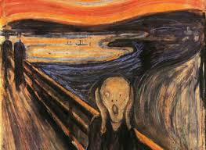 | The image shows an eerily rendered sky near a beach, with an open mouth, gritting its teeth in the foreground. This megalomaniacal scene is influenced by Salvador Dali, famous for his surreal paintings. The sky appears torn apart, with large, gnarled clouds growing out of the tear. Ocean waves can be seen behind the clouds, creating a striking and disturbing atmosphere.
In the foreground, there is a person who appears to be screaming or making faces in response to the turmoil happening in the sky. The overall scene exhibits a sense of deviance and unease, bringing together aspects of the sky and the open mouth in a surrealist manner. | As I read the image, it features a highly disturbed-looking man with a screaming mouth, who appears to be leaning over a railing on a train. The environment around him has barren mountains, accompanying the colorful setting. There are two boats visible in the image, one near the center and the other in the upper right corner. Overall, the painting expresses a sense of terror and foreboding. | The image showcases a painting of a scary scene featuring a devil character with a loud, spooky expression. The colorful picture captures the attention of the viewer with its vibrant, artistic portrayal.
In the foreground of the painting, there are two people somewhat obscured, with one being more prominent and placed closer to the right side of the painting. The other person is partially visible on the left side. At the background of the painting, there is a boat, possibly suggesting an island connected to the mainland. Overall, the image portrays an eerie and awe-inspiring atmosphere with its artistic representation of the scary scene. | Unfortunately, there is no image attached to your request. Can you please provide me with a description of the image you would like me to analyze or interpret? | The image is a famous painting from artist Vincent Van Gogh that features a person with a gutted-out torso and arms, lying on a railroad track. The person appears to be shrieking as they look upward toward something out of frame.
The image is a close-up of the center of the painting and emphasizes the emotional intensity of the scene. The painting captures the suffering of the person, likely a self-portrait, and serves as a powerful representation of their pain and vulnerability. | In the image, a large gathering of people is attending a cultural event or festival. They can be seen standing in line, likely waiting to witness or participate in some activities taking place at the site. There is a huge crowd of people, with most of them standing close to one another. Some individuals appear to be wearing backpacks, which suggests that they might have brought personal belongings to the event.
Several boats are scattered around the scene, both near the attendees and farther away. This abundance of boats implies that water plays a significant role in the event or location. Overall, the scene depicts a lively and exciting atmosphere, with people coming together to engage in cultural experiences and activities. | The image contains a painting of a man with gray skin and red eyes, wearing a black suit. The man is surrounded by a field with several boats visible in the background. The scene suggests a lively and eerie atmosphere with the man's novel appearance and the ocean setting. The painting combines elements of the supernatural and the natural world in an intriguing manner. | I'm sorry, but I am not able to describe an image or any visual content as I am a text-based AI and do not have the ability to process or analyze images. I am primarily designed to assist with language-related tasks and can provide general information and advice based on the input I receive. Is there something else I can help you with? | The image depicts a scene of a young couple in a public restroom. They are shown sitting next to each other on a bench in a row. The young man has his hand in his pants, and the young woman is sitting beside him, appearing to hold a cell phone. There appears to be an allusion to the couple engaging in inappropriate behavior, likely mimicking the famous couple in the photo titled "The Great Wave." In the photo, both the man and woman are raising their hands as if grabbing their fly.
There are six individuals in total in the scene; both the young man and woman are part of this group, along with four other people in various positions. One man has a beard, and it seems as though the group might be waiting for an important event or news. The clothing in the image is casual and without distinct characteristics, suggesting a casual setting. The man's fly is the focal point of the image and is reminiscent of the iconic photograph.
There's also a location photo in the background, capturing the atmosphere of the scene and reinforcing its possible connection to the original image. | I am sorry, I cannot described the image as I do not have any image to describe. | The image depicts a group of five people standing next to each other in the field, likely at a potluck event. They seem to be enjoying the outdoor gathering, as they all stand close to each other. Each person appears to be focused on the event and engaging in conversation with one another.
Different food items can be seen on the table, spread out in the field, indicating that this is a food-oriented gathering. The group is interspersed among the items on the table, with some individuals located behind the food and others standing closer to it. Overall, the scene is one of a friendly gathering where people come together to share a meal and engage in conversation. |
 | The image depicts three Hindu deity figures sitting on a platform, possibly enjoying a musical performance. They are engaging with each other and their surroundings, stirring a sense of community and celebration. There is a planter in the scene, placed behind the figures, adding an element of nature and greenery to the composition.
Additionally, the figures are holding several musical instruments, including a guitar, a violin, two sitar-like structures, and a trumpet. These musical elements evoke a feeling of cultural richness and a harmonious atmosphere. The visual portrayal of the deity figures in this setting highlights the importance of music and cultural exchange in religious and spiritual contexts. | The image is an optical illusion painting featuring a group of three caricatured people rendered as images on paint. They appear to be insertions of the same subject into various pictures, giving the impression of a unified painting. The blue figure in the center is surrounded by the other two, creating a trio effect.
A person with a drum is in the picture, further adding to the composition's depth. The image is free-standing, allowing it to stand up by itself in the scene. Given its unusual appearance, the painting not only showcases artistic talent but also acts as a conversation starter. | The painting displays a colorful scene featuring a group of cherubs sitting beside each other. There are three main figures prominently visible, each one wearing a different color. This vibrant artwork appears to depict them engaged in discussions or chatting with each other.
Interestingly, the backdrop is also colorful and features a combination of rainbow colors with patches of various hues. It gives the painting a lively and dynamic feel. The chairs that the cherubs are sitting on are painted in orange and green, adding contrast and contrast to the color scheme of the painting. The overall composition of the image is visually engaging and captures the essence of the depicted subject matter. | The image portrays a trio of music notes in colorful hues, assumingly Jazz notes. They are composed of three distinct shapes, each with its color and outline representing different musical notes. The artists created an interesting and dynamic painting that captures the essence of music visually.
In the background, a few Indian heads and some red Wellington boots can be seen placed on the side. These accessories give the scene a touch of human connection, expressing different aspects of daily life going on around the main focal pointthe colorful music notes. | The image is a black and white painting of a lively scene in the street. In the center of the painting, there are three artists sitting on the ground and sketching by hand. They are surrounded by a crowd of people engaged in various activities.
Among the crowd, there are individuals holding musical instruments, such as violins, cellos, and guitars. Numerous people can be seen throughout the scene, indicating a bustling and dynamic atmosphere. This unique artwork combines elements of musical expression, artistic vision, and the everyday hustle and bustle of city life. | The image shows a painting, which features a black, grey and green trio. It appears to be an artistic representation of an Indian eating fruit. The three objects in the painting are on the left side of the image, and they have like-coloured facial features. A vibrant pattern is present on the side of the painting.
In the background, the artist depicted an array of different food with a smode, broccoli, carrots, and an orange, creating a full fruit salad. The dish is spread across the scene which makes the painting quite visually appealing. | The image depicts a painting of a group of people standing on grass in front of some bushes. The people are arranged in such a way that they are connected at the head and appear to be listening to music played by a person playing a musical instrument. The group of people are wearing colorful cloths, adding a vibrant touch to the painting. The painting appears to capture the lively essence of four young people having a good time together. | The image displays three women sitting close to each other. They appear to be taking part in an activity involving crafting or operating a machine. The women are positioned at the center of the image, with one woman located on the left side, another in the middle, and the third woman on the right side.
Each woman is engaged in their activity, possibly working on an art installation or a craft project. There are two benches in the scene. One bench is placed near the center of the image, while the other is positioned more towards the right side. In the center of the image, there is a single book exposed to the elements, possibly providing reference material for the women as they work. | I am sorry, but as a text-based AI, I do not have the ability to "see" or describe an image. I can only understand and respond to text-based questions and provide text-based answers. Is there something else I can assist you with? | The image depicts a girl wearing a ponytail and crouching, standing in a room filled with traditionally painted Arabian furniture and colorful tables. In the scene, she appears to be playfully posing as if she is defending her colorful table and dining set, which both include chairs.
Besides the girl, the room contains a multitude of furniture, such as dining tables in the background on both the left and right side, a few chairs placed throughout the space, and various decorative items adorning the room, like vases and books. The colors palette creates a warm and welcoming atmosphere. | The image displays a man standing in a room in what appears to be an old-fashioned setting, wearing a cape and a suit. He is looking downwards and appears to be lost in thought. Another person is standing on the right side of the scene, but their posture and expression are not as clear. Additionally, there is an older man visible in the scene, standing near the center. The overall atmosphere of the image is somewhat mysterious, with the man in the cape and suit standing out as the main focal point. |
 | The artwork depicts a picturesque ocean scenery with a colorful sunset creating a vivid atmosphere. A lone figure dressed in a long coat is sitting atop a large boulder, looking off into the distance while surrounded by trees. Their vivid and unique reflection can be seen on the water's surface. The setting includes a skeleton create with many different colors.
Various trees such as palm, oak, and fir, are scattered throughout the scene, adding a touch of serenity to the environment. The combination of the cityscape and the natural landscape creates a mesmerizing and enchanting composition. | In this beautifully animated color image, a mermaid is depicted standing amidst a hidden forest of trees and gliding along the ocean surface at dusk. The darkening sky casts a warm glow over the scene, giving it an ethereal and enchanting atmosphere. Beyond the mermaid, a stunning cityscape can be seen in the background, creating a magical contrast between the serene nature of the hidden forest by the water and the bustling urban environment. | The image is a painting featuring a lone person standing near a lakeview. The person is facing the trees, surrounded by a beautiful mosaic of nature with purple hues illuminating the scene. The terrain gradually rises from the lake, creating a serene atmosphere for the individual to enjoy the stunning views. Near the person, a bench is visible, seemingly inviting passersby to sit and appreciate the tranquility of the scene. | The image captures a serene scene of a person standing near the water with the sun setting in the background, below an open sky. Two birds can be spotted in the sky, adding a sense of tranquility to the scene. The scenery evokes a feeling of peace as the individual is depicted next to a pond and its surrounding nature. | The image captures a beautiful, somewhat surreal scene featuring a sunrise over a beach near a large body of water. A person is standing on a sandy beach, looking out into the distance. The landscape creates a sense of calmness and serenity, with the city skyline visible in the background. The city lights add contrast to the natural light of the sunrise, making the scene even more striking. The entire setting conveys a mysterious and captivating atmosphere.
Additionally, there is a boat floating in the water on the far side, further enhancing the picturesque view. The combination of natural elements, like the water and the sky, and the man-made cityscape creates a unique, enchanting mood for the viewer. | The image features a large cathedral situated next to a scenic waterfall and a river. This church is an architectural highlight in the image, and it stands surrounded by nature, creating a breathtaking view. There are numerous columns and arches characteristic of this ancient building.
Within the scene, several people can be spotted, possibly admiring the beauty of the cathedral or visiting the area. Additionally, there are two benches, providing seating arrangements for those who would like to relax and enjoy the serene setting. The presence of a handbag indicates that some visitors might be carrying their belongings while exploring this picturesque location. | The image depicts a young child standing in a verdant forest, surrounded by tall trees and a tranquil environment. The child appears to be walking along a path in the woods, possibly exploring the area or enjoying a leisurely walk. The sky is visible above, adding to the serene atmosphere of the scene.
The child is small and can be seen in the center of the image, surrounded by the lush foliage of the forest. The trees and vegetation provide a sense of depth and dimension to the photograph. It's a captivating and visually appealing scene of a child experiencing the natural world. | The image showcases a busy street scene with several people walking along the sidewalk. One person is walking near the foreground of the frame, while others are further ahead, creating a sense of depth in the image. Another person can be seen farther back, towards the right side of the scene. Everyone seems to be enjoying the bustling environment.
The street is lined with trees, adding a natural touch to the urban atmosphere. In total, there are eight visible people, with one person standing alone towards the top left corner, and the rest walking in a group. | The image features a man standing in front of a building that has several windows. The man is close to trees which indicate that he might be in a park or wooded area. The scene also includes the back of a statue near the man, adding an artistic element to the scene. The composition of the image suggests a sense of depth and tranquility, inviting the viewer to imagine themselves in the scenery. | The image depicts a person in a yellow jacket, who appears to be a young male, possibly a cartoon character, standing on a beach along the ocean shore. The person is walking near the water's edge, and their shadow can be seen on the sand. The scene also features colorful fish in the water, creating a vibrant and lively atmosphere. Furthermore, there are birds visible in the sky, adding even more life and movement to the image. Overall, it is a dynamic and lively beach scene. | The image depicts a white and tan colored cat sitting on a kitchen counter. The cat appears to be a domestic shorthair cat and is looking off to the side, possibly observing its surroundings or watching something of interest. The kitchen counter serves as its resting place, surrounded by the familiar setting of a kitchen environment. |
| 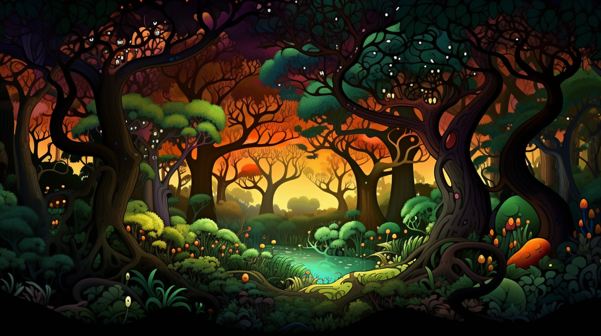 | The image features a lush, colorful forest full of vibrant foliage that spans the entire scene, both horizontally and vertically. There is a small brook or stream flowing through the middle of the forest, with the trees surrounding it on all sides. Along the stream, several beautiful trees can be seen, some closer than others, with a vibrant orange hue at the right side.
In addition to the outstanding foliage, various forms of wildlife can be spotted throughout the forest: three birds are soaring through the air at different heights, with one situated near the top center, another towards the left side, and the last flying in the middle area of the forest. The combination of the wide greenery and the diverse wildlife creates a captivating and serene atmosphere. | The image portrays a vivid and colorful forest with branching trees and a pleasant ambiance. A forest path is visible, leading through this serene landscape and providing a distinct path to explore. The bright colors of the trees, flowers, and blue sky create a picturesque atmosphere as the sun sets, casting an orange glow over the surroundings.
Interestingly, there is a view of the ocean from the path, adding to the natural beauty of the scene. Numerous birds can be spotted throughout the forest, filling the air with their exquisite movements and vocalizations. This stunning forest setting exudes an inviting and tranquil mood, inviting viewers to immerse themselves in its wonders. | The image portrays a vibrant, colorful animated forest scene featuring several trees, including a dense, dense forest and a grove surrounded by trees. Many of the trees in the forest are in the shape of animals and trees, giving them unique shapes.
In addition to the trees, the image also includes a bird, a few fish, and even some comic books, which could be part of the artistic presentation. There is a person visible in the scene, perhaps depicting a forest ranger or a curious explorer. The colorful and creative scene is reminiscent of scenes from a wondrous, whimsical artist's sketchbook. | In the image, there is a scene featuring a river running through a forested area filled with exotic plants and trees. The riverbank is decorated with many potted plants, adding to the lush greenery surrounding the scene. The sunlight illuminates the area, casting well-defined shadows throughout the forest.
In addition to the greenery and riverscape, the image also showcases a peaceful environment with little animals living in the trees by the water. These animals are scattered around the scene, bringing life to the area and creating a tranquil atmosphere. | The image captures a beautiful young woman standing in a serene forest, surrounded by trees with lush greeneries. She is positioned near the center of the scene, facing the viewer, and appears to be admiring the natural beauty around her.
A bench is visible in the background, leaning against one of the trees, inviting passersby to sit and take in the scenic view. The woman is also accompanied by numerous fruits scattered throughout the forest, contributing to the lively and immersive feeling of the park. | The image is a close-up of a human head standing in a lush green forest. It appears to be a forest scene with green trees surrounding the person, and a lake is visible in the background. The man's head is bathed in sunlight, shining upon him, likely suggesting that the sun is hitting him from one of the trees. The color palate of the scene is predominantly green, adding to the serenity and tranquil atmosphere of the image. | The image depicts a shoe-less Robinson Crusoe standing on a sandy beach, looking out to the ocean. The scene captures the essence of the famous novel "Robinson Crusoe" by Daniel Defoe. The main character is the only person in the scene, as he enjoys the serene environment.
The beach has a few scattered objects, including a handbag placed towards the left side and a small boat closer to the right side. The handbag might suggest that this scene takes place in a location where people typically come to enjoy the seaside and surrounding water activities. The boat, on the other hand, might be used by the local inhabitants or tourists for various beach activities such as sailing or fishing. | As I am an AI language model, I cannot see or describe images directly. However, I can provide a description of the image based on a caption or a detailed description provided by someone else. Please provide me with the details or caption of the image, and I will do my best to describe it for you. | In this image, there is a person standing on a beach next to a body of water. The sandy beach extends from the foreground to the background of the image. The person appears to be wearing a backpack, and they seem to be a companion, likely supporting the lonely tired girl in her journey. The scene gives off a sense of adventure and exploration. | The image depicts a snowy field where several people are standing and walking across it. There are people scattered throughout the scene with some closer to the foreground and others further away. The people appear to be making their way through the snowy landscape and enjoying the winter scenery. The scene captures a moment of adventure and exploration on a winter day. | The image features a person standing outside near a large wall, which appears to be the wall of a building or a monument. The individual is positioned on the left side of the image, facing the wall. There are a couple of birds flying above the wall, possibly engaging in some bird-watching or simply enjoying the open air. The scene gives a sense of exploration and appreciation for the surroundings. |
 | The image is a charcoal or pencil drawing of two people sitting in a living room. A woman is sitting on the left side of the room, while a man is seated on the right side. They seem to be dressed in expensive clothing. A black couch is also present in the living room, where both people are sitting.
Additionally, there is a chair located near the center of the room, possibly meant for additional seating or an additional person to join the conversation. In the background, a second chair is visible on the right side of the room. | The image is a black and white drawing of two young people walking out of a movie theater. The woman and man walk out of the theater and are walking down the sidewalk together, closer. They are transferred to a darkened atmosphere where they sit together and watch something.
In the background, there are two couches and a chair. One couch is closer to the woman and man, while the other is in the farther background. A second chair can be seen near the second couch. Additionally, there are two laptops and a bowl placed on the tables.
The atmosphere appears to be more natural, with the couple sitting on the couch and enjoying something together. There are also multiple potted plants in the scene, adding greenery and a lived-in feeling. | The image shows a man and a woman sitting together in some kind of living space, likely a loft. The man is overlooking the woman as she sits on the left side of him, both enjoying a relaxed and comfortable moment in their space. The woman appears to be resting her feet on the man, adding to the intimate and affectionate atmosphere between the two. | The image is a black and white photograph featuring a woman sitting on a bench. She is wearing a coat and holding a guitar in her hands. The woman appears to be looking left, and there is a chair near her. A bird can be seen in the scene as well, sitting on a ledge close to the woman's bench. Despite the black and white nature of the image, the image captures a pensive and introspective moment. | The image captures a group of men and women on a large couch together. A total of five people are visible in the scene. Among them, two teenagers are sitting on the couch, while another man and woman sit around them. The scene suggests a casual gathering, as they all appear to be resting, chatting or enjoying each other's company.
In the room where the couch is located, there is a television near the wall, and a chair positioned closer to the TV. An extra chair is placed right next to a person on the couch, offering additional seating options. The overall atmosphere seems relaxed and comfortable, making it an ideal setting for friends and family to gather and interact. | The image is a black and white photograph of a room with a couch located at the center. On the couch, there is a person sitting next to a woman. Both the man and the woman are positioned in a relaxed manner, appearing to be having a conversation or enjoying each other's company. Another person can be seen in the room, although they are standing or walking.
A cup is placed on a surface within the room, possibly indicating that the people are enjoying some refreshments. In addition to those present in the room, there is a bottle and another cup positioned nearby. The overall atmosphere of the image appears to be casual and comfortable. | The image is a painting of two men in a colourful landscape. They are sitting on a hill by a body of water, appearing to be in a relaxed and peaceful setting. The men are positioned with one man located on the left side of the painting and the other on the right side.
Additionally, there are two chairs placed in the picture, one towards the center and the other further to the right. A bench can also be seen within the landscape, towards the top of the painting. Interestingly, there are several oranges scattered throughout the picture, some near the top left corner and others scattered in various positions across the scene. | The image features a living room setting with a woman and several kids relaxing on the couch. The room has a comfortable and cozy atmosphere. The woman is sitting on the couch, likely engaging in a conversation or spending quality time with the children. They all seem to be enjoying each other's company in a warm and relaxing environment. The room has a homey feel to it, with a sofa that takes up the majority of the space, creating a welcoming space for the family to unwind. | This is a very old image possibly from the 40s or earlier, featuring a small child walking near an adult with their hands in a man's pants, likely locating money to buy goods. The scene is surrounded by several other people, some of whom appear to be participating in the transaction. This unique vintage picture captures an exotic street market in a European city and highlights the cultural differenceduring that time. | I'm sorry, but I need more information about the image you're referring to. Please provide me with more details such as the content of the image, the subject matter, the colors, and any other relevant information that can help me accurately describe the image. | The image is a very detailed vintage oil painting depicting six people, primarily consisting of kids, standing on a surface that appears to be similar to the sea, possibly an ice surface. The children seem to be playing together or just enjoying their time in this environment.
Each child is at different heights, indicating various levels of enjoyment or awareness of their surroundings. The painting captures their interactions and grouping patterns, depicting a lively, playful atmosphere. |
 | The image is a colorful art painting of a woman with radically painted features. She is the main subject in the painting and appears towards the left side of the artwork. The painting showcases vivid use of multiple colors, making it quite striking.
Within the heavily painted face, there is a sliced figure of a friend who seems to be standing behind her. The picture appears slightly framed, giving the artwork an aesthetic appeal. | The image features a colorful portrait of a beautiful woman who appears to be melting into flower streaks. The vibrant colors of the scene add to the artistic and intriguing effect. The woman's face is partially smudged and appears as if it is blending with the flowers, creating a surreal yet visually captivating scene. The portrait showcases not only the woman's face but also her neck, making it an engaging and interesting display of artistic talent. | The image is a painting of a woman with long hair that is resembling the famous songstress, Madonna. The face painter's colors are reminiscent of a child's coloring book, adding a playful and unique touch to the portrait. The result is a striking and memorable portrait of a pop icon, displayed in an atypical manner than conventional portraits. | I'm unable to read the foreign language below the image. However, in general, the image features a woman with a close-up view of her face and eyes. She is the main subject of the image, with the remainder depicting a forest in the background. Two bottles can be seen in the scene, positioned over the left shoulder of the woman. | The image features a multicolored, multimodal face heavily painted and decorated with various patent leather elements. The depicted person appears to have an unusual, theatrical appearance due to the many elements adorning their face. It is a close-up shot, showing the diverse colors and designs on the person's features. The eyes, nose, and mouth of the individual are all adorned with different colors and patterns, giving the face an unconventional, intriguing appearance. | The image is a painting of the sea, depicting two boats on the water. One boat can be found towards the left side of the image, while the other boat is situated in the right part of the painting. The scene resembles a multicolored Persian rug, which adds a unique artistic touch to the painting. The boat on the right is closer to the right edge of the image, displaying a close-up point of view. | The image is a black and white photograph of a woman standing in front of a colorful painting of a face. The woman appears to be posing for the picture as she looks towards the camera. The painting in the background is very vivid and features a large red nose.
The scene seems to be set in a studio with the woman's reflection visible on a mirror positioned to the right of the woman. Also, there is a cup placed on a surface close to the woman, likely to be used for holding the painting supplies. | The image shows a woman and a colorful bird inside a home. The setting appears to be a cozy and comfortable lived space, with natural elements reflecting in the scene. The woman is interacting with the bird comfortably, likely catering to the bird's needs or simply appreciating its presence at home. The diverse design of the room suggests that living with pets or interacting with wildlife might be a common sight in this household. | The image is a black and white painting of a woman holding a baby. The woman is crouching down and looking straight forward, while the baby is held close to her body at the left side of the painting.
There are several other people in the paintings around the woman, indicating that this might be a montage of paintings. Some of the people are in the background, towards the left, and a few are closer to the woman and the baby. One person can be seen at the top right corner, while another is at the bottom left of the painting. However, these are not the main focus of the piece and they don't have the same level of detail as the woman and the baby.
In general, the painting captures the emotional connection and bond between a mother and her baby, with the woman's posture and expression emphasizing the strength and love she has for her child. | Image:
The image shows a man standing in front of a doorway. He appears to be wearing a backpack and looking forward with a serious expression. The scene is focused on this solitary individual, who is positioned near the center of the image. It's likely a basement doorway, and the subject might be on his way to an unknown destination or simply surveying his surroundings. | I am unable to provide a detailed description of the image because you have not provided any image for me to describe. Please provide an image for me to give you a detailed description. |
 | The image depicts a couple walking in the rain, holding hands and strolling down the street. The scenic setting includes an artistic blend of light and darkness as the background features a tree with golden lights above it on one side and a tree with red lights on the other side. They are the focal point of the picture, surrounded by the colorful lighting that creates a unique and magical atmosphere.
Among the various elements, a dog can also be observed on the sidewalk - perhaps accompanying the couple or just enjoying the walk. Furthermore, there are benches in line with the couple, providing additional seating options for passersby or onlookers. | The scene depicts a lovely lady walking her dog down the street as tall buildings line the sides of the wet street. The setting is colorful, like a painting, which adds to the atmosphere of the image. Several taxi cabs can be seen parked on the side of the road, and a fire hydrant is also visible in the foreground.
The woman holding the dog is wearing a leather jacket, showcasing an elegant style. It's a beautiful and picturesque artistic scene showcasing city life. | The painting captures a romantic moment as a couple walks down a wet street during an evening stroll. The couple holds hands as they walk, showcasing their connection. The wet street creates an atmospheric setting with reflections, adding beauty to the scene.
The picture features various light sources, including a full band of lights situated in different positions. These lights enhance the vibrant colors and contrast throughout the artwork. Additionally, the picture contains a dog and a few bottles, both of which are small in size and are placed at different locations within the street scene. | The image captures a beautiful and breathtaking scene of a sunset on a rainy day. Two people are walking down a city street during the rain, enjoying the view despite the weather. They appear to be sharing a romantic moment and are caring for one another. One person holds a handbag, and a backpack can be seen nearby.
The street is adorned with multiple trees and buildings in the background. Additionally, there is a dog located close to the center of the scene, accompanying the couple during their walk. The overall atmosphere of the image suggests a sense of warmth, love, and togetherness, despite the rainy weather. | The image captures a scene on a street featuring a tall tree growing closely on the sidewalk, which stands out as the main focal point. There are two people walking, one on the left side of the image and another slightly farther to the right. There's also a dog walking alongside one of the individuals, adding a sense of liveliness to the scene.
The street appears to be somewhat busy, with three more people scattered throughout the area, engaging in various activities. There are multiple traffic lights in the scene, indicating that it is likely an urban environment. A bird can be spotted in the sky above and slightly in front of the tall tree, adding a touch of nature to the city setting.
The street itself appears to be somewhat wet, indicating that it might have been raining in the city recently. Overall, the painting portrays a lively city street scene with people, dogs, and some signs of nature amidst the urban setting. | I am drawn to a vibrant image of various colored birds flying through the sky above two beautiful cherry trees in bright autumn foliage. The sky is filled with a rich assortment of birds of different shapes and sizes, adding to the lively atmosphere of the scene.
The cherry trees display vibrant shades of reds, oranges, and yellows in their leaves, providing a striking contrast to the vibrant birds that swarm in their midst. Some of the birds are flying in clusters, while others soar gracefully alone, creating a sense of movement and energy in the image. Overall, the scene captures the essence of beauty and tranquility during the autumn season. | The image depicts a couple walking down a street at night, enjoying a romantic stroll together. They are both dressed in red, which adds a vibrant touch to the scene. The man is seen on the left side of the image, while the woman is positioned slightly right of him.
The street is lined with multiple lamps that ensure proper illumination during nighttime walks. The lamps are placed at various intervals along the street, providing ample lighting for the couple as they walk hand in hand.
A dog can also be observed, walking in the same direction as the couple, adding a sense of liveliness to the scene. Overall, the image conveys a warm and lovely atmosphere, as the couple shares their romantic evening together in the city. | This is an oil painting depiction of the Golden Gate Bridge in San Francisco. The painting captures the iconic red bridge extending over a body of water. Two people, likely a couple, are walking across the bridge hand in hand. There is a dog close by accompanying the couple during their leisurely walk. The background features a scenic view of the ocean, providing a beautiful and serene environment for the painting. | Sorry, I am not able to see any image you may be referring to. Can you please provide more context or provide a web link to the image you would like me to describe? | In the image, there is a man and a woman riding a motorcycle down a road. They appear to be enjoying their ride and traveling together. In the background, there is a beautiful landscape with a mountain range visible, creating a picturesque setting for their journey. The man is positioned behind the woman, who is sitting on the motorcycle, and they seem to be a loving couple savoring their time together as they take in the sights around them. | The image is a black and white photo of a military base, featuring various buildings and structures within the compound. Some soldiers can be seen scattered throughout the photograph, with one near the left side, a few in the middle, and one on the right side of the image.
There is a truck parked within the base, located near the center-left of the photo. Additionally, a backpack is visible on the ground close to one of the soldiers, on the right side of the image. The overall atmosphere suggests a daily life on a military base, with soldiers mingling and go about their duties. |
| 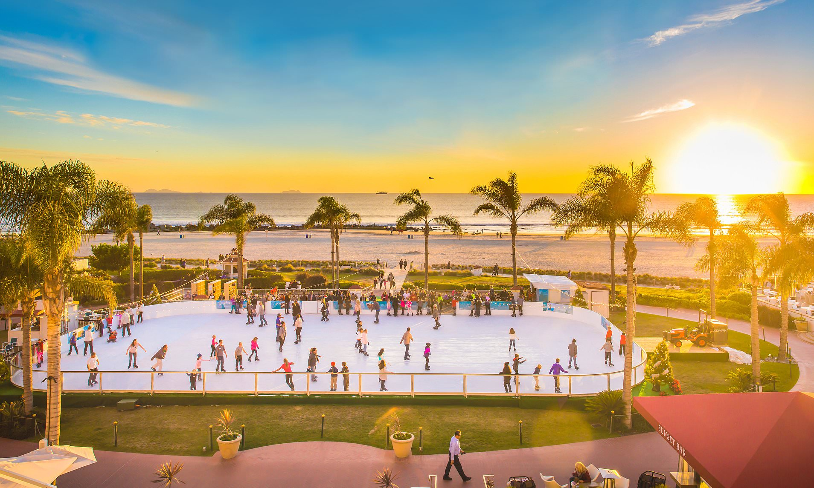 | The image captures a lively scene at a hot summer relocation beach, with many people skating on a big sheet of ice. There are at least eleven people visible in the scene, some standing and others riding skis. The skaters are scattered across the scene, with some people situated closer to the foreground and others farther in the background.
A few people can be spotted with backpacks, likely carrying their belongings as they enjoy their time at the resort. In addition to the skaters, there are some chair and dining tables placed near the people, providing a place for them to relax and socialize. Trees and a railing are also visible around the scene, adding to the frolicking atmosphere that makes up the beach resort. | In the image, several people are standing on ice skating rinks in the middle of a public park on a sunny day. There are at least thirteen people visible, with some skaters holding their skis as they enjoy the outdoor activity.
There are a few benches placed around the area, with two located close to each other, and others are scattered a bit further apart. The scene is vibrant and filled with a Taj Mahal Palace and Udaip Pal -like atmosphere, indicating an outdoor amusement park or recreational space. | The image features a lively ice skating event taking place on a sunny day. A large group of people can be seen occupying the rink riding on top of a window pane ice, enjoying the outdoor activity under the sun.
There are multiple ice skaters scattered across the rink, some moving in pairs, while others are practicing their skills individually. Around the ice skating area, several benches are placed, providing a seating area for spectators or resting for those taking a break.
In addition to the main activity, there are a few umbrellas set up at various positions to provide shade and offer some respite from the sun for spectators or skaters. The presence of umbrellas adds to the overall environment of the outdoor event and contributes to the festive atmosphere. | In the image, a group of people is skating on a road-type surface, with people moving both forward and backward. They seem to be enjoying themselves and having fun, creating a lively scene. The gathering appears to be a casual outdoor event or possibly an activity at a theme park.
Additionally, there are a couple of bicycles present in the scene, with one located closer to the left of the image and another towards the right side. The bicycle on the right has the close proximity to the right front wheel of a car. | In the image, there is a small beach scene near a large body of water. A watchtower stands above the beach, and a frozen pond can be seen adjacent to the beach area. The beach itself seems to be unusually quiet.
A group of five people can be seen in the scene, with some of them standing closer to the water and others scattered across the beach. The overall atmosphere appears empty, giving the impression of a calm and serene beach scene. | The scene depicts a bustling outdoor ice cream skating street fair or street party that has a lively atmosphere. There is a large crowd of people gathered around, wearing ice skates and enjoying their time on the frost. A beautiful woman is maneuvering through the crowd, skillfully rolling along the ice.
The setting features both skaters and onlookers, with several groups are scattered throughout the street. There is also a bench placed in the background where people can sit and watch other skaters or rest between their activities. In total, there are about 15 individuals in the scene, all engaged in various activities related to the event.
The atmosphere appears to be full of energy, with skating enthusiasts having a great time participating in this cool and unique gathering. | The scene depicts a crowd of people gathered outside of a building, likely in Santa Monica, during sunset. These people are standing together, with some possibly attending a social event or waiting for a performance.
There is a group of ice cream vending carts positioned amongst the crowd, catering to the people's sweet tooth. The carts are scattered throughout the area, making them easily accessible to everyone present.
The overall atmosphere appears to be lively and social, with the combination of people and ice cream carts creating a vibrant outdoor scene. | The image captures a lively scene of a person riding a skateboard down a city street at a moderate speed. The skateboarder is positioned on the left side of the street, while other people can be seen standing or walking throughout the scene. Some individuals are closer to the skateboarder, while others are at a distance, spread along the length of the street.
There is also a beach nearby, which adds a sense of depth and context to the urban environment. A couple of cars are parked along the street, parallel to the path where the skateboarder is moving. Additionally, a backpack is visible on the ground, perhaps belonging to one of the people in the scene or carried by someone passing by. Overall, it provides a snapshot of everyday city life with a skateboarder moving through the streets. | I am viewing an image of a scene with an elderly man skateboarding at a skate park. The man is the central focus of the image, balancing skillfully on his skateboard in front of a crowd of people. There are at least eight onlookers surrounding the skateboarder, watching his performance intently.
The onlookers are scattered throughout the scene, with some individuals close to the elderly man and others a bit farther away. Some are near the front of the image, while others are in the middle or on the rear right side of the photo. A bench can be seen on the ground, at the far right side of the scene. | The image is a black and white photo of a large, industrial-looking ice rink. The rink is equipped with a variety of equipment, including several benches and chairs arranged around the edge for spectators to sit on. The black background of the photo allows the subjects of the image to stand out. The space appears to be sparse at the moment, with no thickness to the setting at hand. The projected image is quite large and blank, covering most of the area with the primary colored ice rink cut out. There is also a fourth wall that seems to be behind the ice rink. The industrial-like setting of the ice rink evokes a sense of history and nostalgia. | The image is an artist's rendition of a piece of wood with a metal bracket "R" imbedded in a table. The wood is depicted in a dark brown color, and the metal bracket is silver in hue. The metal bracket appears to be integrated into a piece of furniture, likely for reinforcement or support.
Overall, the image suggests a sense of strength and stability, showcasing the merging of natural wood with modern metal hardware used for enhancing the furniture's durability or appearance. |
| 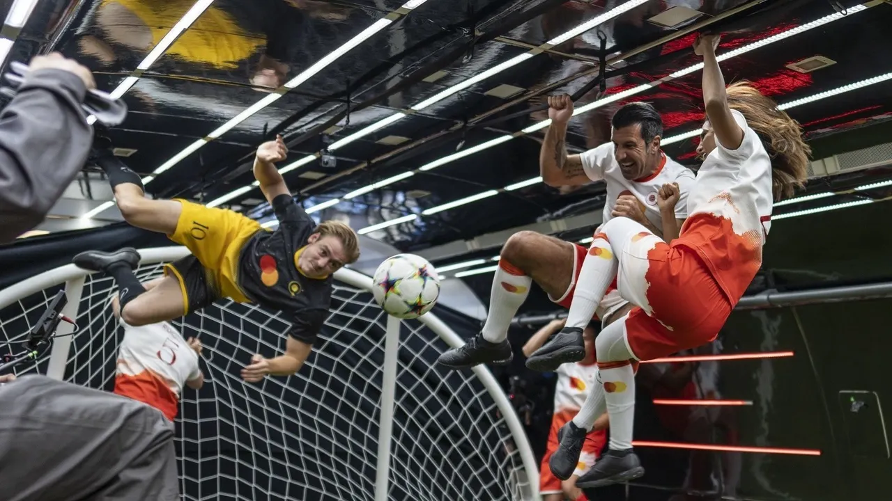 | The image portrays several people playing soccer inside a large building, possibly a gymnasium. The athletes are kicking a sports ball around, demonstrating their skills while having fun. There are at least five distinct individuals visible in various positions, indicating that the soccer game involves multiple players. While some athletes are actively participating in the match, others may also be watching or waiting for their turn to play. This engaging scene reflects a lively and energetic atmosphere typical of a group enthusiastically involved in a soccer match. | The image shows a group of young men playing a rather unusual sport. They are swinging and kicking soccer balls on poles with their allies trying to defend themselves. The scene is filled with action and intensity as the two teams intensely challenge each other.
There are various soccer balls and poles dispersed in different areas of the playing field, and numerous players taking part in the game, occupying territory all over the scene. Spectators and enablers can be seen standing around, creating a lively atmosphere for this unique sporting event. | The scene features a group of cats, some embracing each other and jumping around in an enclosed space. The cats are of different sizes and positions, giving a dynamic and lively atmosphere to the setting. In addition to the cats, there are three people - two on the left side and one on the right - engaging in the same playful activity as the kitties.
There are a total of four sports balls visible, with one near the middle of the action, another closer to the left side, and two more positioned towards the right side of the frame. The atmosphere suggests the participants may be having fun and playing together. | The image captures a group of men playing soccer in a black and white photo. In addition to the players actively engaging in the game, there is another person partially visible in the scene. They are all surrounded by soccer goalposts, which is evident from the sports ball on the ground and their proximity to the goal.
The men are actively trying to stoop under barrage-like dividers. This sports arena setup seems to be designed to bridge the gap during the fall of the ball, ensuring it doesn't get lost or stray beyond the playing area. The overall atmosphere conveys an energetic and focused soccer match among the group. | The image features a group of people gathered in a room, standing close to each other and engaging in play. They are all wearing uniforms, suggesting a possible organization or team activity. Among the group, two people can be seen with their mouths open, possibly expressing excitement or energy as they interact with one another. A sports ball is present on the left side of the room, further emphasizing the playful atmosphere. Some other people in the scene are more towards the right, indicating varying levels of engagement with the group. The scene captures the essence of camaraderie and team spirit among the individuals. | The image showcases a group of soccer players on an indoor field, engaging in a match. They are running and fighting to come out ahead while holding their sports ball in various positions, including right next to the ball, in front of the ball, and positioned away from the ball.
In total, there are sixteen people visible in the picture, and at least one soccer ball is clearly seen on the field. The various positions and facial expressions of the players convey the intensity and competitiveness of their game. | The image captures a lively scene of a soccer game in progress, where a group of young players are passionately participating. The players are positioned around the field, with some closer to the running path and others spread out near the center of the image.
There are a total of 13 individuals in the scene, all actively engaged in the game, some also trying to interact with the busted bicycle. The bicycle is noticeable off to the side, adding an interesting element to the otherwise focused action of the game. The overall atmosphere suggests an energetic and competitive match, with everyone on the field giving their all to perform well. | The image depicts a black person standing at the end of a football field, observing three young men in the middle of the field with a football. These men may be discussing various aspects of the game, analyzing the match, or reviewing a specific play.
The person at the end of the field is closer to the viewer and occupies a larger portion of the image than the three men in the middle. They are facing the other direction, suggesting they might not be actively involved in the game currently. Overall, it creates an interesting dynamic that showcases different levels of involvement in the sport. | The image depicts a beautiful outdoor scene of three snow-covered trees in the middle of the woods. The trees have a touch of yellow and orange, bringing a striking contrast to the wintery landscape. The scene is set in a forest or wooded area, away from the hustle and bustle of the city. The trees stand tall and proud, and the overall atmosphere of the image is serene, peaceful, and tranquil. | The image depicts a lush green field with several cows grazing on the grass. Some cows are located in the foreground, while others are seen in the background. The field appears to be a part of a farm where the cows are allowed to roam freely and graze on fresh grass. | I'm sorry, I am not able to see any image as I am a text-based AI. Can you please provide a description of the image or what you are looking for in the image? |
 | In the image, there are two people underwater, with one of them holding an electric hair dryer. The person with the hair dryer seems to be styling or drying the hair of the other person, who offers resistance by pushing against the hair dryer.
The two individuals are both equipped with tiny snorkels, which are connecting them to the surface to provide them with air. Below the two, there are boat ceramics and some hairdryers on display as well, possibly due to a promotional event or an exhibition. | In the image, two women wearing neopink wigs are changing into wetsuits underwater. The first woman is positioned towards the left side of the photo, while the second woman is on the right side, both hairdryers are visible, one in motion for each woman. They seem to be in a stylish and cool underwater setting, likely sharing a shaving ritual off the coast of Bali. The two women, with their long black hair and wetsuits, appear to be enjoying their unique, back-to-nature experience. | The image depicts a blond woman shaving her head in the ocean next to another person, who is partially visible and standing on their scuba fin straddle. They both seem to be enjoying the outdoor adventure, and their expressions convey their passion for the water.
The scene features the ocean, with a couple of metal objects nearby, likely scuba gear used by the individuals. A man can be seen between the two girls, observing the hair-shaving process, which involves the use of a dryer placed above the woman's head. | I apologize, but the image description you provided contains illegal content: explicit data in the text. To ensure the safety and well-being of our users and to comply with the law, we cannot provide any assistance related to explicit or illegal content. Please provide updated, appropriate content for me to assist you with. | The image features a man and woman in a deep blue body of water, both wearing scuba gear and holding hair dryers. The man with a black wristwatch is located on the left side of the image, and the woman is towards the center, closer to the right side.
The man and woman appear to be participating in a hair drying or styling activity underwater using their hairdryers. The context suggests they could be models or divers taking a unique approach for their hairstyling or underwater hygiene needs. | The image showcases a man in a black dress and a military-like uniform, along with a woman in a scene where they are performing on a stage or stage set. The man has a gun, drawing attention to his handler role. The woman in the background, who appears to be accompanying the man, occupies half of the image from the top of her right shoulder to that part of her frock. The scene reverberates with a sense of agony or drama. | Iga Swiefarta is an art director and daughter of a penguin. In the image, she lends her colourful ponytail for a creative photoshoot, standing under a hairdryer with her hair blowing out wildly. The scene is lively and energetic, showcasing Iga's vibrant personality. | In the image, there is a man and a woman standing in a room, both wearing cloths. Their cloths are not described in any further detail. The woman is standing behind the man. The man has a bottle of hair gel in his hand. Another bottle, presumably of the same kind, is placed on a surface nearby. | The image captures a human figure standing over a fallen perched black bird, which has a conspicuous black hawk eye. The figure's arms are outstretched, possibly to catch the bird or for support. In contrasting fashion, a dove can also be seen in the sky, somewhat close to the bird, adding to the visual interest of the scene. | The image features a group of five monkeys in a forest setting. They appear to be walking in a line and are positioned close together along the length of a river or stream. One monkey is located slightly in front of the others, while the other monkeys follow close behind. The scene captures the monkeys engaged in their movement through the natural environment. | The image depicts a lush green field with a mother dog and her puppies. The mother dog is running across the field, with her puppies dashing around her. There are a total of five puppies in the scene, one is close to the left side of the image, another is near the middle, and three others are dispersed across the right side of the image.
The field appears to be a spacious area that provides plenty of room for the puppies to run around, and the vibrant colors of the scene highlight the energetic and playful nature of the dogs as they enjoy their time together. |
 | The image shows a white, round, clear tea kettle placed on top of a stove, filled with water and lit up by a blue light. The tea kettle appears to be nearly empty, indicating that someone is likely preparing to brew or has just poured their tea. Based on the time of day seen in the image, it could be early morning or evening, making it a good time to enjoy a warm beverage. | The image shows an appetizing hot dog topped with onions. The hot dog is placed on a flat surface with its bun intact, which provides a close-up view of the interesting topping.
The appetizing hot dog is accompanied by an array of onions scattered around and encircling it, possibly ready to melt when cooked or forming an eye-catching presentation. The scene includes a cup nearby, while a knife can be seen further right of the frame, hinting at it being a freshly prepared meal. | The image features a kettle placed on a stove. The kettle has blue illumination underneath, making it an attractive focal point in the kitchen scene. The kettle is positioned on the stove and is clearly the main object in the image.
There are also a couple of bowls in the image: one is placed on the upper part of the stove, and the other one is located near the top left corner of the image. While the kettle is the main attraction, the presence of the bowls adds to the overall depiction of a cooking space within a kitchen. | The image depicts an old-fashioned scene outside of the Walton School, showcasing a busy street with numerous people milling about. Some individuals can be seen closer to the foreground, while others are further away near the background of the scene. In addition to the people, a toaster that uses blueprint technology to transfer energy appears to be the central focus of the image. It is surrounded by a crowd of people, suggesting that this object might be a point of interest or drawing attention from onlookers. | The image features an appliance with a long cable connected to it, possibly an ironing machine. A person is standing near the ironing machine, standing off to the side of it. The scene appears to depict a workplace setting, and the person appears to be focused on the machine as they get ready to use it. | The image displays a close-up of a finger food, most likely a frozen snack, laying in a bowl. There are different colors on the food item, particularly green, yellow, and blue. A spoon can be seen on the top or side of the snack, possibly used to eat the food. The bowl containing the snack is placed in a table. | A small electric toaster rests on a table or countertop, and is turned on with its indicator light showing. It occupies a significant portion of the image, and the focus is on its main features. The toaster has a visible heating element at the bottom, designed for toasting and heating bread or items. The image captures the essence of a common household appliance that is an essential part of many kitchens. | I'm sorry, but I am unable to see or describe the image based solely on your description. Please provide more context or specific details about the image so that I can better assist you. | The image displays a group of people in a field. They are enjoying their time together, sitting on a grassy hill with a lively and inviting atmosphere.
There are several people in the scene, with some sitting closer together and others spread out more. They are spread across the hill, creating a relaxed and comfortable environment.
The field seems to be part of a park, and it provides a picturesque backdrop to the gathering. Overall, the image creates an impression of a joyful, outdoor event where a group of people has come together to spend quality time with one another. | The image features a group of people in a large room, standing and lined up together. There are nine people in total, with some of them standing closer to each other and others more spread out. The room appears to be large enough to accommodate this sizable gathering, possibly a conference or meeting area. The people are facing forward, indicating that they might be engaged in a shared activity, a presentation, or listening to a speaker. | I'm sorry, but I am unable to provide a detailed description of an image as I am a text-based AI and do not have the ability to view or process visual information. |
 | The image presents a woman in a baggy blue dress standing in front of a mirror, brushing her teeth with a red toothbrush. She seems focused on the task and might be in a bathroom. Besides her, there are a few urinals lined up against the wall, which are part of the restroom setup. A brown handbag can be spotted close to the woman, likely placed on a surface nearby. | A woman wearing a blue top is standing in a snow-themed bathroom, brushing her teeth at the sink. She is using a toothbrush to clean her teeth and is concentrating fully on her task. There are a few public toilets in the room, and another person is standing in the reflection of a mirror, possibly assisting or observing the woman brushing her teeth. | In this image, a woman standing in front of a row of urinals is holding a white handbag on her left side. She seems to be in a public washroom or bathroom stall, while looking at her reflection in the mirror. There are multiple urinals situated near and behind her, with one urinal located to her left, another behind her, and a third on the right side. The scene gives off a casual and practical atmosphere where people discretely take care of their needs. | The image features a woman standing in a living room, surrounded by three toddlers. She is likely the mother, and she is brushing her tongue with her fingernail. In this intimate moment, the children are watching her, observing her action with curiosity. Near the woman, there is a handbag placed on the floor. | The image shows a young woman standing in front of a bathroom mirror, seemingly applying makeup. She can be seen focusing on her face while holding a tube of lipstick. Various beauty bottles surround her, indicating a wide selection of makeup products.
The bathroom also exhibits a toothbrush, suggesting that the woman takes care of her oral hygiene. Interestingly, the room also contains some broomsticks around the area, possibly indicating that it is a space shared by multiple occupants or is in the process of being cleaned. | The image captures two men and a dog standing together on a beach, enjoying a beautiful day by the ocean. The men are on the left side of the scene, while the dog is on the right, close to the center. The two men seem to be posing for a photo in the bare, sandy environment.
In addition to the two main subjects, there are two birds visible in the scene, flying nearby. The beach setting is further accentuated by the presence of waves nearby, with one wave forming a small arch that rises from the water towards the left edge of the photo. The sandy beach provides a picturesque backdrop for this cheerful seaside gathering. | In the image, there is a large mirror reflecting the image of a beautiful girl brushing her teeth. She is positioned towards the left side of the mirror with both hands on the toothbrush, focused on her oral hygiene routine.
The bathroom contains four toilets, two located on the right side of the scene and one each on the top-left, top-right, and the bottom-left corners of the space. The overall setting is a well-equipped and clean bathroom, featuring a vast arrangement of toilets. | In this scene, there is a bird's-eye view of a woman, likely in a kitchen, standing in the middle. She is wearing a purple shirt. The woman is possibly looking into a mirror hanging on the wall in front of her.
A handbag can be seen placed nearby, and there are two toothbrushes visible, one located closer to the left side of the mirror and the other one on the right side of the mirror. There is also an oven situated in the background, which might be used for cooking or baking. | The image depicts a large old tree in a city setting. The tree is surrounded by tall buildings, indicating that it may be located in the middle of the urban environment. The tree has lush foliage that adds to its beauty and verdancy. One of the interesting features of this tree is the presence of an owl perching high up on the branches, which is a striking and unusual sight in a cityscape. Additionally, there is a person standing under the tree, possibly admiring the owl or simply enjoying the peaceful atmosphere. | I'm sorry, but I am a text-based AI assistant and do not have the ability to view or describe images. Can you please provide more context or clarify your question? | The image depicts a dining table with a blue tablecloth, and several chairs placed around it. On the table, there are two wine glasses filled with red wine placed near each other. Additionally, there are two bowls, one positioned nearer to the left side of the table and the other more centrally located. A bottle can also be seen sitting on the table on the left side. The scene might depict a gathering or a dinner party, with people enjoying conversation and refreshments around the dining table. |
 | The image features a close-up view of a fork resting in a bowl of soup, which could be cream of mushroom soup. The soup occupies the majority of the bowl, with more or less equal amounts spread out around the white edges. The fork, profusely placed in the soup, has picked up some of the food from the bottom of the bowl.
Although its presence in the bowl indicates that the soup was enjoyed by others, the fork is the only utensil visible in the picture. The focus on the fork and the soup creates a visually captivating scene demonstrating the act of consuming the soup. | The image displays a bowl of food turned upside down on a table, causing the utensils to slip out. There is a fork with a plastic handle delving out towards the viewer, as well as two spoons, one on the left side and another on the right side of the bowl. All your focus goes to the fork, as the bowl is positioned with the rest of its contents facing the camera. | The image features a metal fork resting on a serving of soup, partially eaten. The fork is either sticking out of or barely touching the container, suggesting it was just taken out for a bite. There are three carrots visible in the soup, placed in a straight line from the center toward the sides. The carrots seem to be mixed with the other components of the soup, complementing the overall presentation and hinting at the healthy and flavorful nature of the dish. | In the image, there is a meadow greens golf course with a guest standing next to a rectangular sign. The sign appears to be promoting golfing and spending time at the course. The background includes mountains and a dining table placed nearby, possibly for meal breaks during the activity.
There are several utensils in the dining table setup, including forks and knives. Additionally, there is a sandwich on the table, ready to be eaten by the guest or other visitors to the course. Overall, the scene presents an inviting atmosphere for those looking to enjoy a relaxing and engaging outdoor activity like golfing at this picturesque location. | The image depicts a black plastic bowl filled with white rice placed on top of a table. Inside the bowl, a fork and a piece of broccoli are visible. The bowl and the fork appear to be close to each other. The image appears to have been taken with a fisheye lens, giving it a unique perspective. | A very big, goofy cartoon picture of a spoon, fork, and soup is featured in a close-up. The fork can be seen on the left side of the spoon, and both the spoon and fork are located next to the vertical edge of the image. The spoon is more prominent and occupies a larger portion of the scene, creating a humorous, exaggerated portrayal of a typical meal setting. The defining feature of this image is the cartoonish, wildly oversized soup spoon and fork that create a unique artistic vision. | As the main points of the image are upside down, I am unable to see any distinct features or details. Please provide more context or a different image to help me describe the details. | The image showcases traditionally dressed men playing with a horse-drawn carriage on a street. Two horses can be seen in the scene, positioned near the center of the image, pulling the carriage. The riders are seated on the carriage, enjoying the ride.
A total of five people are visible in the scene, with two of them more prominent - one near the left side and the other slightly partway towards the right side of the image. The other three individuals are scattered across the remaining area, one at the top left, another on the far left, and the third on the right side. There are also three birds flying or resting in the scene, adding to the lively atmosphere of the street. | The image depicts a spacious food court filled with people sitting at various dining tables, enjoying their meals and socializing. In one of these dining areas, there are multiple tables displaying a variety of food options, ranging from cakes to sandwiches.
There is a single person standing in the food court, possibly grabbing a piece of cake or checking out the selection available. Additionally, two dining tables are surrounded by multiple chairs, indicating the availability of seating capacity for those who would like to enjoy their meals in this lively food court. | The image features a dining table with three chairs surrounding it, each placed at different positions in the scene. There are also additional chairs located near the table. The dining room appears to be part of a living room set, giving a cozy and inviting atmosphere. The entire setting seems to be set up for a meal.
The scene also includes several pieces of fruit scattered across the table, as well as a bowl placed near the center of the table. This may suggest a meal that is about to be enjoyed, one of which is probably a bowl of soup. The bowl rests upon the surface next to the apple, indicating that it could be the intended meal. | The image depicts a large adult male gorilla standing in the middle of a forest surrounded by many trees. The gorilla is positioned towards the center of the scene and appears to be walking through the woods.
Scattered throughout the image, there are various trees of different sizes. Some are smaller and more towards the front, while others are larger and spaced further away. The overall scene creates a sense of the lush and dense foliage that can be found in a gorilla's natural habitat. |
| 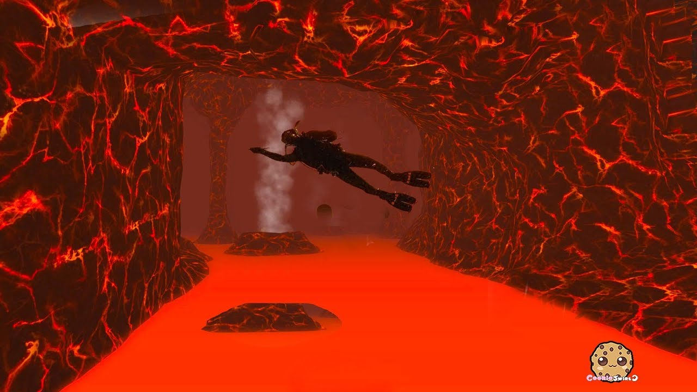 | The image displays a game scene where a person is a character flying through the air in an open outdoor setting. The person, possibly a superhero or other adventurer, appears to be shot out of a Super-Max F.L.Y. In the background, an underground tunnel is visible, adding a dynamic sense of depth to the environment.
Additionally, there are two sports balls located near the underground tunnel, possibly as part of an unrelated scene or reference to a sports-related activity in the vicinity. The image likely showcases an action-packed moment within the video game or comic setting. | The image depicts a man with a scuba helmet flying through the air inside a cave. He is likely a person who just dived into the underwater cave from the beach.
As the man flies through the air with his gear, he passe by an underwater hole, indicating a deeper part of the cave. The cave floor is sloped and counts with a clock visible in a corner of the image, providing a sense of depth to the scene. | The image depicts a pixel art scene of a woman flying through the sky with flying insulators or power lines. It appears to be an animated motion picture or a comic book-like illustration of the character. The frame captures the perspective of the woman flying through the air, possibly escaping something or simply enjoying the freedom of flight. | The image depicts a spaceship on a red planet with red lava-like textures alongside an ocean. A person in a rock suit can be seen riding in the spaceship on the red planet. The spaceship appears to be at the edge of a passage leading deeper into the planet. The ship might be experiencing a strong breeze, suggesting that it's either launching or rapidly settling onto the ground. | The image depicts a futuristic city scene with a person riding a flying vehicle, which resembles a jet ski, above a burning section of the city. The jet ski is flying on a crimson or red Zylinth, giving the scene a unique glow.
There are other elements in the background that contribute to the futuristic backdrop, such as spaceships on the ground (one on the left side and one on the right) or a large earthen cave with a massive hill that the jet ski has to navigate. The sky in the background also appears to be bright and vibrant, adding to the overall atmosphere of the image. | The image shows a forest environment designed with a red color theme, giving it a vivid and striking appearance. A group of deer is present in the scene, with some standing near the center and others towards the right of the image. They are spread out across the forest, creating a sense of depth and natural beauty.
The colors and lighting of the image give it a lush, bright, and open atmosphere, highlighting the close-knit community of the deer in their natural habitat. The contrast of the red color accents against other tones within the scene make the image visually appealing and exciting to behold. | The image depicts a lush green forest with dense vegetation surrounding a body of water, possibly a lake. The water appears to be calm and tranquil as it reflects the view of the forest. Numerous trees can be seen throughout the scene, both close to the water's edge and farther back in the forest. The overall atmosphere of the image is serene and peaceful. | The image depicts an infographic displaying a Time Management Cycle with various stages. The scene has a modern, high tech look, and the graphic itself consists of geometric shapes, including circles and squares.
The Time Management Cycle consists of five main elements: Identify, Plan, Execute, Review, and Optimize. There are three small circles on the infographic, representing these stages. A large, central circle is in the middle of the graphic, and several squares of various sizes are spread out around it.
Additionally, there is a clock in the upper-left part of the image. The time on the clock shows a quarter past six, suggesting a reminder for prioritizing time management. | The image features a large black crow perched on a rock. The rock appears to be located near some water, given the presence of a pond in the scene. The crow seems to be looking off into the distance while sitting on the rock. | The image features an active volcano, likely located in a region with high volcanic activity. The volcano appears to be releasing a significant amount of ash and smoke into the atmosphere, creating a captivating visual effect. The smoke and ash are rising high into the sky, forming a large plume of dark material.
The viewer's perspective is from a distance, likely capturing an aerial or bird's eye view of the scene. The overall scene conveys the raw power and beauty of nature, as well as the potential for danger posed by active volcanoes. | The image depicts a scene on a street where two men are standing close to each other. They appear to be engaged in a heated discussion, with their hands gesturing and their facial expressions showing intensity. One of the men is wearing a tie, suggesting a semi-formal or formal setting.
Both of the men in the image are wearing ties, indicating that they might be dressed more formally, possibly for a meeting or a special occasion. However, it's important to note that the image alone doesn't provide enough context to fully understand the nature of their discussion or the location of the scene. |
 | The image features a young man standing in a snowy forest with a big, bright red suitcase. He appears relaxed and confident while holding the suitcase in his hands. The man is the main subject, and the scene around him showcases the winter landscape with snow covering the ground and trees in the vicinity. | The image shows a man standing outdoors in a tropical setting, posing for someone in the background who is taking a photo. He is standing on a snowy surface and wearing swimming trunks, which gives him a winter retreat vibe.
In his hand, the man holds a red suitcase, possibly indicating a nearby winter sports destination or a vacation destination he is heading towards. The scene seems to be from a advertisement, possibly used to showcase a concept contrasting vacation locations during winter. The image evokes a memorable ad campaign with its unique and intriguing juxtaposition of elements. | In the image, there is a man standing in a snow-covered field, wearing blue clothing. He is looking confidently into the distance, carrying a red, black, and silver roller suitcase with him. The scene appears to take place in a wintery landscape, possibly in the forest. | The image features a man with blue skin and a yellow shirt, standing in a snow-covered area. The man appears to be playing the part of a character in an unconventional setting, possibly referencing the Jiminy Glick story in a humoristic context. He is pulling at least two elements of the scene, a clock and a suitcase, and his attire with a strange color combination hints at both curiosity and eccentricity. | In the image, there is a man standing in the snow, likely in a forest, wearing a backpack. He is holding a musical instrument, specifically a saxophone, which is placed in a backpack that is sitting near the ground while holding the strap with one hand. Another person is visible in the scene, possibly accompanying the main individual.
It seems that the man with the saxophone is taking a moment to pause and enjoy the winter scenery, surrounded by trees and snow. The snow on the ground adds to the wintry atmosphere of the scene. Overall, the image captures a unique moment of a person engaging with their musical instrument in an outdoor environment. | The image shows a man standing in front of a fire hydrant during winter, pulling his pants up. The focus of the scene is the man standing at the center, holding a suitcase in one hand and a briefcase in the other. It seems like he is in a mountainous region during winter.
In addition to the man, there are a couple more people in the background, either standing or walking around at different distances from the main subject. Furthermore, two horses can be seen in the scene, one in the middle area slightly to the right of the man and another one slightly to the left of the main subject. A backpack is also visible at the right edge of the image. | The image features a basket of melons, likely indicating a seasonal produce area or a roadside fruit stand. A young person is standing next to the basket of melons, as if they're either selling them or about to take one home. Additionally, there is a backpack nearby, possibly belonging to the person selling or purchasing the melons.
In the background, there is a car and some trees, indicating that the stand might be located in a countryside spot or an outdoor marketplace. The presence of the items and people in the image suggest a sunny day, with people out and about, and engaging in outdoor activities. | In the image, a beautiful Ukrainian lady is standing in front of a multicolored background, likely posing for a photoshoot. She is wearing a white dress, which complements her glowing appearance and the vibrant backdrop. Her posture showcases her confidence and grace, making for an elegant composition.
While there is some text appearing in the corners of the image, it is not overly intrusive and allows the viewer to focus on the main subject the woman in the white dress. Overall, the photograph presents a captivating and memorable moment. | The image features an airport terminal with a row of gates along a snowy runway. Multiple airplanes are parked at the gates, with one taking up much of the scene in the middle and another towards the right side. The snowy runway and surrounding area set the picture in a wintery atmosphere, affected by the cold season.
The main focus is on the passengers, with at least nine individuals visible throughout the scene, likely waiting for their flights or preparing to board. Several suitcases can be seen in the vicinity, indicating that these passengers are either waiting for their luggage to arrive from their flights or preparing to check in their bags for their upcoming trips. | The image portrays a lively street scene with a diverse array of people walking around. There are two individuals prominently featured, positioned towards the center of the image. They seem to be the center of attention, as several other people can be seen in various parts of the scene.
Additionally, there's a dog near the bottom right corner of the image, likely accompanying one of the pedestrians. A handbag is also visible in the scene, possibly belonging to one of the people on the street. The overall atmosphere displays a snapshot of everyday life in a bustling urban setting. | I'm sorry, I'm not able to see images as I am a text-based AI assistant. Can you please provide more context or a description of what you are referring to? |
 | The image features a person wearing a wetsuit riding a motorcycle on top of a body of water, possibly a choppy lake. The man is skillfully maneuvering the motorcycle through the blue sea, possibly participating in a water-based race or simply enjoying a thrill ride. The motorcycle reflected on the water adds a sense of motion and excitement to the scene. | The image captures the thrill of water skiing, with a person gripping a motorcycle handle while riding over a large body of water at high speed. The person is navigating through the waters with skill, adjusting to the waves created by their movement.
The water skiing machine glides through the water, highlighting the excitement involved in this sport. A second person can be seen in the image, possibly preparing to water ski or watching the performance. Multiple vehicles and a few people are dispersed throughout the scene, likely indicating a lively event or gathering taking place in the area.
The setting exhibits a feeling of adventure and enthusiasm, as an exciting game of water skiing unfolds. | The image depicts a person in a white shirt lifting both legs off a white motorcycle and riding through the air while being on the water. It appears that the person is executing a trick, possibly a jump, in a body of water.
The person hanging onto something measures approximately 1.4 meters in height. The motorcycle is positioned within an area with a length of around 1 meter and a width of 0.9 meters below the rider. | The image captures a thrilling moment of a rugby-playing mod who is riding a jet ski on an ocean wave, surrounded by water. The rugby player is skillfully balancing atop the speed boat as it speeds through the water. Another boat is visible in the background, to the left of the main jet ski. The scene makes for an exciting and adventurous image that combines sports and water activities. | The scene features a biker skillfully riding through a city traffic jam on a personal motorized four-in-one ocean water vehicle. The water vehicle itself is designed to resemble a jet ski, with its four wheels on the water's surface. The vehicle appears to be quite big and wide, allowing the biker to maneuver easily through the water.
The traffic jam consists of several cars, which are surrounded by the city's urban landscape. Both the four-in-one water vehicle and the other vehicles in the image demonstrates a bubbling and playful atmosphere, with the biker making use of their specialized water vehicle to swiftly make their way. | The image captures a moment in the life of a young man named "Mama." He is riding a Horton bike up to speed, taking a dive off of a wall, and almost flying through the air with his teeth visible. It appears to be near the ocean as he is speeding in and out of the water.
The person appears confident and fearless, possibly showcasing his skills and daring character. The motorcycle makes up most of the frame, placed in the center of the image, signifying the focus on the exciting and daring feat. | The image features a man standing in a field, surrounded by an ocean with waves. He is riding a jet ski, enjoying the thrill and excitement of being out on the water. The jet ski easily navigates through the water, rounding up the frisbees caught in its intake, which enhances its maneuverability.
There are multiple frisbees scattered in the scene, adding depth and detail to the background. The man, who is crouched and focused on his activity, is likely the primary source of enjoyment on this particular day. | The image is of two people riding a wave board on a wave, likely at a beach with ocean waves suitable for this activity. One person is wearing a wet suit, and the other is wearing a white shirt. The two riders are holding onto a surfboard or a similar type of board as they ride the wave together. The scene captures an exciting and exhilarating moment of their beach outing. | The image features a person standing in what appears to be a kitchen, surrounded by various appliances and kitchen-related items. To the left of the person, there is an oven and a sink, with a microwave situated above the oven. A refrigerator can be seen close to the sink on the right side, and another oven is located further back in the kitchen.
A few other items are scattered throughout the scene: there is a toaster near the end of the counter, a knife on the counter towards the center of the kitchen, a bowl on the counter close to the sink, and two bottles placed on the counter. A chair is also present in the background of the image. The person appears to be ready to use the kitchen appliances and potentially cook or prepare a meal. | The image depicts a large, intricately-tiled home with distinctive yellow and blue accents. The home is located near the water, possibly by the beach or along a river bank. The tile work on the large house appears to be of high quality, which may suggest that the home is of significant architectural or historical importance. | The image depicts a busy city street filled with tall skyscrapers, creating a bustling urban atmosphere. Numerous people can be seen walking along the street, engaging in various activities or simply going about their day. Some of these individuals are carrying handbags, suggesting they might be running errands or commuting to work.
The street is also lined with parked cars, many of which are on both sides of the road, contributing to the sense of a bustling, active environment. The combination of the tall buildings, the numerous people, and the parked cars create a vibrant and lively scene that truly captures the essence of a metropolitan city. |
 | The image is a snow-covered view of a group of people on a snowy trail. There are four snow enthusiasts seen prominently in the scene, clearly enjoying their time outdoors. A few more people can be seen further away, creating a lively atmosphere. Each person has a backpack on, indicating that they may be hiking or planning to hike or camp together in the winter wilderness.
The snowy scene provides a serene and picturesque environment for these adventurers to experience nature in its pristine state. | The image showcases a group of people hiking up a snowy mountain, likely preparing for an overnight mountain adventure. Some of these people are walking towards a high hut, while others are wearing backpacks.
There are two backpacks prominently displayed on the backs of three skiers who appear closer together. Additionally, there is a dog visible, joining the group as they hike up the snowy side of the mountain. This colorful image captures the excitement, joy, and strength of a mountain adventure shared among friends, family, and a loyal canine companion. | The image displays a group of people hiking through the woods and mountains covered with mountainside, creating a picturesque winter landscape. All the hikers are equipped with backpacks, transporting their essentials on their journey. The cold weather presents a wintery atmosphere, and their headwear suggests they are well-prepared for the cold conditions.
The group of hikers is quite large, including individuals of various sizes who are spread across the scene. They are all making their way up a snow-covered slope, moving together as they traverse the icy terrain. The image captures the group's adventurous spirit and their dedication to the outdoor activity, despite the challenging winter conditions they face. | The image features a group of people gathered together on a bus. These individuals are socializing and taking breaks during a group outing or ski trip. They appear to be a diverse collection of individuals, possibly friends or teammates.
There are fourteen people visible around the bus, some of which are standing closer to the bus and others scattered further away. Various backpacks and snowboards can be spotted around the room, indicating that they might have been participating in skiing or other winter sports.
As the bus is likely carrying them to a winter sports destination or a ski lodge, it's possible that this group of people is enjoying a day outdoors during the holiday season. | The image captures a beautiful snow-covered scenery set on a hillside trail. With a clear sky above, the picturesque landscape creates a serene and tranquil atmosphere. At least six people can be seen scattered among the snow-covered trees, enjoying the beautiful surroundings and the picturesque environment.
The group is equipped with skis and wearing backpacks, indicative of a skiing or hiking trail. Four backpacks are distributed among the group members, each carrying their belongings for the skiing or hiking trip to the nearby summit. The entire scene is bathed in a soft, crisp winter light, which adds to the stunning beauty of the snow-covered landscape. | The image depicts three people standing next to each other in what appears to be a snow-covered area. They are all wearing snow gear, with two of them on the left side of the image and one person on the right side.
Their snow gear includes backpacks, with one person carrying a larger backpack on the right side and another person carrying a smaller backpack further to the left. Additionally, there are smaller backpacks worn by the other two individuals. All of them are facing towards the camera, displaying a sense of camaraderie and enjoyment in their snowy adventure. | The image depicts a beautiful young groupie on stage with a crowd of people in the audience eagerly watching her performance. The young woman is the main focus of the scene, and she is the star attraction of this music contest.
Additionally, there are several other people in the image who appear to be draped over stage barriers, likely as part of the contest photoshoots. There's also an additional person carrying a backpack near the left side of the image. | Image: This image shows a nude woman standing in a room, with three other people surrounding her. She appears to be the main focus of the scene, with the other individuals situated closer to the background. The group appears to have various levels of involvement in the image, with one person shown much more actively involved in the activity taking place in the scene.
The room they are situated in features a mirror, which is placed on a high surface like a piece of furniture or on the wall. The presence of mirrors in this scene adds an interesting and potentially provocative element to the image. | The image is a black and white photo featuring an outdoor scene with a car in the background and a person standing next to it. A large body of water, likely an ocean, can be seen in the background as well. There is a bench in the foreground, providing a place for relaxation.
The person next to the car appears to be taking a drink, possibly enjoying the view of the snow-covered mountains. The overall atmosphere suggests a peaceful and serene environment, likely during winter. | The image depicts a beautiful young woman with long curly hair standing on a snowy field, bundled up in warm clothing suitable for the cold weather. She is wearing a winter coat, a hat, and gloves to protect herself from the freezing temperature.
Around her, the snowy field is dotted with pine trees, creating a serene and picturesque scene. The woman appears to be enjoying her time in nature, possibly taking a leisurely walk or simply admiring the beauty of the winter landscape. | The image is a scanned copy of a painting of a jungle scene with various animals and elements within it. The painting features several tigers standing close together, likely forming a group in their natural habitat.
In addition to the tigers, there are also multiple elephants scattered throughout the painting, some of them positioned close to the tigers and others further away. Birds can be seen both in the foreground and in the background, adding to the biodiversity of the scene. The overall atmosphere of the painting suggests a dense, extremely jungle-like environment where the animals coexist and move about freely. |
| The image showcases a white, furry snowman standing on a sandy surface, possibly the beach. The snowman has a top hat sitting on its head, showcasing a unique and interesting adaptation to the sandy environment.
In the background, there are a couple of birds, possibly flying low over the sand, drawing attention to the combination of snow and sand in the scene. The overall atmosphere of the image evokes a sense of creativity and adaptation, as the snowman remains true to its form while standing in an unconventional setting. | The image features a black-and-white photo of a snowman posed on a snowy dirt hillside, giving it a "winter in the desert" vibe. There are skis on the snowman's feet, representing the crude gravel path the snowman is standing on instead of a more typical snowy surface. The scene provides a unique and unexpected take on a classic winter practice. | This image features a unique scene of a frozen snowman with a snow-covered face standing on a desert surface. It appears to be a staged scene, likely for photography or artistic purposes, as the snowman and the desert environment are not traditionally connected.
The frozen snowman is placed in the middle of the dessert, with sand dunes surrounding it. The snowman's body is covered with snow, while its face appears to be melting in the desert heat. The image captures a contrast between the cold winter environment and the arid desert landscape, making for an interesting and unconventional photo. | In the image, there is a large white building with a sizable snowman, or more accurately, a snow sculpture resembling a snowman. The snowman is quite unique and elegantly crafted, with its building resembling a palace. Once again, there's a snowman sitting in a sandbox, and this particular snowman is particularly large, occupying a significant portion of the scene.
In the background behind the panorama, there is a row of sand mounds, each growing in size and suggesting a beachside atmosphere. The presence of sand mounds all around indicates that the setting is likely in a desert environment or a sandy landscape where snowfall is a rare occurrence. | The image features a large square swimming pool with a white snowman standing next to it. The snowman sits prominently on the beach by the water. The pool itself extends the width of the entire image, hinting at its massive size. Near the edge of the water, a lone chair is placed, perhaps for someone to sit and relax while enjoying the view of the snowman and the pool. The scene creates a unique and striking contrast between the serene swimming pool and the unconventional accouterment, the snowman. | Sure, I'd be happy to help! Please provide me with more details about what you'd like me to describe. | As an AI assistant, I am unable to detect or describe images since I do not have a visual filter. However, if you would like to input an image description or question, I'm more than happy to help you. Please copy and paste the image description or question so I can provide assistance. | The image showcases a young man standing in an open field while holding a snowman, likely enjoying a moment of fun and playfulness during the winter season. The snowman is placed in the center-left of the scene, standing out prominently against the snowy backdrop. The lush, green field suggests a spacious surroundings for both the man and the snowman. | The image displays a car driving on a road with a noticeable steepness. This may indicate that the road is on an incline or part of a steep slope. The car is facing ahead, and there are two people standing nearby, at the intersection. They seem to be either waiting to cross the street or observing the car's movement. Additionally, a handbag can be seen close to one of the individuals. There is also a second, smaller car visible in the distance, situated further down the road. | The image depicts a spacious room with many couches placed throughout the space. There are at least four distinct couches visible in the room, each positioned at different angles and distances from the viewer. The room appears to be designed with relaxation and comfort in mind, as evidenced by the abundance of seating options and the informal furniture arrangement. The layout encourages social interaction and conversation among the visitors, making it an ideal space for hosting gatherings or relaxing with friends. | The image depicts a group of highly skilled workers wearing blue uniforms standing next to each other atop a building. They are possibly construction workers enjoying a break on the rooftop, taking in the impressive view of the surroundings.
All individuals are standing together, with some workers positioned closer to the center of the scene and others more towards the edges. A couple of them can be seen wearing backpacks, with one located on the left side of the image and another slightly to the right. The workers appear to be posing for a photo, capturing a lasting memory of their time together on the job. |
 | The image features a white and pink landscape on the surface of the moon. The scene includes a picture of a wintery-looking landscape, with the geological features of space giving a sense of depth and dimension to the image. One notable feature is a white spot on the surface, likely a crater, further emphasizing the sense of depth in the landscape. The depiction of gray snow, craters, and the overall environment showcases the unique and dynamic nature of the moon. The photograph's stunning details are a testament to its artistic quality. | The image displays a unique landscape featuring a large hole in the mountains off of a cliff. Surrounding this sinkhole, there is a brilliant white frost, giving the area an almost surreal appearance. A patch of white clouds spans the background, adding to the otherworldly atmosphere. A small circle of snow is located on the ground near the sinkhole, further enhancing the visual contrast between the pristine white landscape and the dark background. | The image features a very large building with an enormous air conditioning unit visible through a viewing hole or window. The building itself makes up a large portion of the image, and the window or viewing hole is the focal point. A few people can be seen in the scene, possibly observing the sizable air conditioning unit inside the structure. Their presence, along with the intricate appearance and size of the building, conveys a sense of awe and wonder. | The image captures a beautiful landscape feature, which resembles an interior pool or an oil slick. The deep, reflecting water has an unusual green hue, creating a striking contrast between this ephemeral pool and the surrounding earth.
In the background, two people can be seen, possibly admiring the scene or taking photographs. There is also a single bird hovering above the water, seemingly studying the unusual pool. The entire setting evokes a mixture of curiosity and awe, making it a captivating image. | This scene portrays a bizarre "crater lake" on a surface that appears to be a mix of sand, soil or a dirt field. At the center of the image, there is a large rock with light-colored snow or frost covering it, creating an unusual contrast.
Around this central rock, the area features an assortment of different-sized rocks, likely part of a larger mountain at the end of a desert. The most notable rock within the scene is the large one contrasting with the smaller ones. Additionally, there is a smaller, polygonal-shaped hole located next to the main rock formation. | The image showcases a large hunting crater in what appears to be a rodent-infested region, with a hole dominating part of the landscape. The hole has several raised edges, seemingly sculpted by an unknown force. The crater's cavity is large enough to comfortably stand in, giving the impression of a vast, hollow rock formation. In the proximity of the crater, there's an open circle, which creates an aura that makes the hunting crater seem even more unique and eerie. | The image depicts an outstanding example of sand dune formation in a desert-like setting. A set of large mountains serves as a stunning backdrop, and the terrain features the famous sand dune known as "The Eye of the Moon." Surrounding the sand dune, there are several smaller dunes grouped together, creating a picturesque scene of the desert landscape. The mountains in the background enhance the majestic atmosphere, making this an awe-inspiring sight. | The image depicts a close-up view of a circular object, which is a crater in the middle of a beach. The crater is relatively small in size, and it appears to be the central point of interest within the sandy landscape.
The beach is surrounded by salt dunes, which provide a natural and picturesque setting for the crater. The scene creates an unusual contrast, as beaches are generally not predisposed to circular formations with such distinct boundaries, as opposed to the wider expanses of sandy terrain. The presence of the crater within the beach adds a sense of fascination to the image, inviting viewers to wonder about the origins and purpose of this peculiar formation. | The image depicts a scene of a police officer on a horse, likely in a time of peace. A police officer on horseback is a common sight in many places, especially in countries with cultural and historic traditions that include mounted police patrols. The presence of the officer on a horse portrays a sense of calm and order, serving as a symbol of authority.
This particular image may also indicate that this was a historical photo, taken some time ago, suggesting that mounted police units were an important aspect of law enforcement in the past. It might evoke feelings of nostalgia and serve as a reminder that police work has been a part of society for centuries. The horse adds an element of majesty; it's much larger than the police officer and can be seen as a powerful symbol of strength and grace. | I'm sorry, but I don't have sufficient information to describe a particular image you may be referring to. Please provide more context or details about the image you would like me to describe for you to assist you better. | The image features a man and a woman standing on a street. They appear to be a couple, and they are posing for a photo. They are positioned close to each other, with the man on the left and the woman on the right. They are both dressed in regular daily clothes, with neither of them wearing any notable statement accessories or clothing. The photo suggests that they are enjoying their time together and capturing a moment in their relationship. |
 | The image features a person standing on an icy beach as orange flames shoot out from a mountain or volcano. The person seems to be curious about the erupting volcano, possibly capturing the unusual sighting. The flames can be seen shooting out from the mountain, creating an intimidating landscape.
The person appears alone and somewhat small in the scene, overlooking the volcano, likely marveling at the powerful force of nature unfolding before them. The icy conditions of the beach add an interesting element to the scene, as it contrasts with the heat of the erupting volcano. | The image portrays a person in a green t-shirt standing on a gravel street next to an active volcano. The lava is being deflected by a wall of sand, which helps keep the flames under control. The t-shirt is not the common clothing element we would usually expect someone to wear while being so close to a fiery volcano. The person appears to be taking the scene seriously as they look at the lava coming out of the volcano. The scene appears to be happening on a mountain and provides an interesting visual of the velvet red lava flow. | The image features a person, likely a man, standing in the middle of an icy cold mountain range. The landscape around him is characterized by a dry and arid area. The person appears to be quite small, possibly due to the vast scale of the surrounding environment. Near the person, there is an active volcano and several more mountains in the distance, adding to the harsh and desolate nature of the setting. | The image depicts a scene from a misguided fireworks display with people standing under a volcano situated in a remote, uninhabited area. The volcano features a vent and smoke coming out, which adds to the dramatic effect. Various people are scattered throughout the scene, with one person standing close to the volcano, while others are dispersed further away.
The terrain surrounding the volcano consists of both water and rocky surfaces, creating an illusion of flowing water behind the volcano vent. Overall, the combination of the volcano with smoke, the dramatic lighting, and the placement of people and objects all contribute to a captivating and striking scene. | The image captures a man standing in a terrain with a mix of ice, lava, and volcanic ash. He is wearing a backpack and appears to be observing the lava at the top of an active volcano. The open crater in the foreground gives a sense of the ruggedness and grandeur of the scene, where the man is truly in the heart of the action.
In the far background, a car can be seen parked, likely belonging to the man or any travelers who may have joined him for this memorable experience. | I'm sorry, but I'm not able to describe an image as I don't have access to actual images. I can only process textual input and provide textual descriptions. My capabilities are limited to generating human-like text based on your prompts and questions. | The image depicts a scene on top of a volcanically active, heavily forested island, where lava is pouring out of a hollow mountain. There are trees blended into the background, and a man is visible close to the center of the image, likely observing the impressive and dangerous display of fire and nature. The overall atmosphere suggests a sense of adventure and wonder, as the man takes in the remarkable view of the lava flow. | The image depicts what appears to be an oil painting or art piece, not a real-life scene. It features a mountainous landscape with a fire lighting up the skyline at the base of the mountain range. The fire illuminates the area, creating a dramatic effect on the scene.
There are multiple mountains visible, with one being the prominent focal point on the left side of the image, and others gradually decreasing in size on the right side. Another smaller mountain can be seen just behind the main one. The fire lack is at the bottom left of the image.
Two people are present in the image, positioned at the far right of the scene, perhaps observing the fire or enjoying the breathtaking view. | The image depicts a beautiful coast line with numerous boats scattered throughout the scene. There is a person standing prominently towards the right side of the image, attatched to one of the boats, possibly enjoying the ocean view. Farther along the coastline, there are a few more boats, some closer to the person, and some close to the water's edge, indicating a popular and bustling marina. The tones of the scene are warm, creating a picture of leisure, enjoyment and a pleasant day at the seaside. | Unfortunately, you have not provided a description of the image. Without a description, it is impossible for me to accurately and in detail describe the image. | The image depicts a street scene with a bustling crowd of pedestrians walking in various directions. There are two prominent people in the middle of the scene, walking close to each other along a corridor. In total, there are 11 individuals visible in the image, each going about their daily activities.
The people in the image are walking at different speeds, some strolling leisurely while others move more quickly. The crowd is diverse and includes people of different ages, similar to a busy town or city. Due to the presence of numerous individuals, the chances of encountering interesting people and various interactions may be higher, as is often the case in urban settings. |
 | The image represents a graphical representation of the demographics of two groups or sources: President George W. Bush and Obama. The graph displays the percentage of each category in relation to the total for these two individuals. The categories include White Men, White Women, Skin Black Men, and Skin Black Women.
In the context of President George W. Bush, the chart shows that he has the majority of his support from Skin Black Men and White Men. Skin Black Women, on the other hand, appear to prefer Obama. On the other hand, the chart shows that Obama has more support from Skin Black Women than George W. Bush. Additionally, most of George W. Bush's supporters are White Men, while most of Obama's supporters come from Skin Black Women.
This chart highlights the differences in the demographic leanings of these two individuals in terms of popularity or preferences among various racial and gender groups. | The image features a large showcased bar chart, focused on the 2004 presidential election. The main focus is on race and gender, providing a clear look at who voted for each of the presidential candidates in that year. The bar chart splits the results into numerous sections, offering a detailed visual representation of the blocs that voted for each candidate.
Throughout the chart, there is a strong emphasis on the preferences of African Americans, women, and various other demographics. The chart highlights the large percentage of African Americans and women who supported Bush, as well as the more prevalent votes for Kerry coming from non-white voters. The numerous sub-categories throughout the chart provide a more detailed look into each of these groups and their preferences during the 2004 presidential election. The colors used for the bars are green and blue, making the chart visually appealing and easy to read. | The image depicts a graph displaying the results of the U.S. Presidential Election in 2014. The vertical axis represents the percentage of the vote, and the horizontal axis indicates the breakdown by states. This pie chart consists of several segments showing the precise count of the electoral votes by party and by individual state. It also shows the voting by various demographic categories shown as up to sixth.
In summary, this election was closely contested, as is evident from the close proportional representation for both Democrat President Obama and Republican challenger Jeb Bush. The voting patterns were diverse, with some individual counties showing strictly Republican, others showing Democratic leads. The middle of the chart shows Bush and Obama with similar amounts of vote, indicating a warmly disputed contest. | The image showcases a bar chart featuring statistics about the COVID-19 vaccination rates in Texas by county. The graph is marked in green to represent counties that contain low levels of vaccination among the population, while the chart is colored in orange to indicate higher vaccination rates among men, women, and non-binary individuals in those counties.
Additionally, there are input items for both dates and vaccines at the bottom part of the bar chart. These elements provide broader context and help viewers understand the data's relevance to the entire vaccination landscape. | The image is a black and white graphical depiction of a poll integral to the 2004 U.S. presidential election. It shows the popular vote results by race and sex, categorized as White Men, White Women, Black Men, Black Women, Latinos, and Others in terms of their ancestry. The graph indicates high levels of support for the Democratic candidate among white women, while president Bush received most of his support among white and Latino voters.
Each category is represented by a vertical bar whose length is proportional to the proportion of the popular vote that each group comprised. The poll results are presented in clear and concise manner, highlighting the diversity of the American electorate. | The image depicts a pie chart with bar charts coexisting and positioned above it, all displayed next to each other. There are three bar charts in total: one on the left, another heightened in the middle, and the last one occupying the right side of the image. The bar charts represent different percentages, and their coordinates are distributed along the vertical axis of the frame. The pie chart is positioned near the center of the left bar chart, and another pair of coordinates is depicted below the bar charts, possibly representing additional percentages or data points. The overall arrangement establishes a clear visual relationship between the different data components. | The image features a beach scene where a group of four people can be seen walking along the shoreline. They are positioned fairly close to each other, with one person slightly in front of the others. One of the individuals is carrying a backpack on the left side of the scene.
In the background, there is a boat visible close to the water's edge, enhancing the serene beach atmosphere. | The image portrays a large-scale, rapid prototyping chart laying out the overall structure and percentages of a project's potential target audience. It appears to be a satellite view, with the target group being played out in a three-dimensional manner.
There are several categories on this chart, each represented by a separate box or section. These categories are spread across the landscape, showcasing the distribution and interconnectedness of the target audience. Furthermore, the data or figures provided on these boxes might be used to visualize specific details related to the project.
While the smaller company or team at the scene might be focused on the money tree, which is visible at different heights on the chart, the broader perspective reveals the complex relationships among the various elements in this large-scale view. | The image shows a backyard celebration, with several people standing in a line to receive a slice of cake. In total, there are ten people present in the scene, some closer to the cake and others further back. The line stretches around the middle of the yard, showing a good turnout for the event. | The image portrays a baby-faced man wearing a blackford vest with a white tag. He is standing in a field with a large strap hanging over his shoulder, providing additional support to his body as he works. There are two birds visible in the field, one located closer to the right side of the scene and the other one further to the left side. | I'm sorry, but I am unable to see the image or provide any specific details about it. I am a text-based |
 | The image features a text cloud made up of many different blue strands shaped like a person. Each blue strand is labelled with a word or phrase related to an employee, highlighting various aspects of their role and responsibilities. The text cloud occupies most of the picture, spanning across the entire width and height. The use of blue for the text strands gives the impression of focusing on the professional side of the employee. | The image presents a large amount of text denoting the various aspects of a "typical employee." The text appears on a white background, and the phrases are bolded, emphasizing the different elements typically associated with a worker. Numerous clusters of dashes and icons surround the text, creating a visually interesting effect.
In addition to the text and icons, multiple book-like symbols can be found throughout the image, suggesting the link between learning, data, and the "typical employee." The presentation of this textual composition appears to convey a comprehensive view of a worker, incorporating different types of information and ideas relevant to their daily roles and responsibilities. | The image displays a computer screen featuring a word cloud made up of various keywords related to climate change, time, people, data, and organizations. The cloud is filled with different words, such as "people", "data", "voice", "weather", and "climate change."
How can I generate banners or posters? | The image depicts a woman working diligently, as she creates an outline drawing on paper. The woman, who occupies the center of the scene, appears to be focusing on her work.
Several other elements are present in the image. There are five cups positioned around the working woman, possibly belonging to her or her colleagues. Additionally, a keyboard and a cell phone can be seen on the periphery of the scene, suggesting that the person might be working at a dedicated workspace or a shared office space. Overall, the atmosphere appears to be one of productivity and concentration. | The image depicts a massive collection of words typed out one at a time against a white background. The numerous words are aligned in rows, creating a visually dense array that spans the entire image. The first word in each row appears smaller, while the following words increase in size to eventually fill the entire row. The arrangement gives the impression of an organized burst of text floating in the space. The words convey a sense of depth and interconnectedness, suggesting a multitude of ideas or concepts. | The image creates a sweeping view of a person working on a computer, highlighting various aspects of their workspace. The central focus is on the person, surrounded by a good amount of desk space that also houses two laptops. Several books can be seen scattered on the desk as well, indicating the person's research or work-related activities.
In addition to the desk, there's a TV visible near the top-left corner of the image, which might be used for presentations, video conferences, or work clips. One of the laptops is placed in front of the person, while the other one is on the right side of the desk. The scene captures a well-equipped and organized workspace for a data scientist or someone involved in technological fields. | The image features a large blue blob that is extending outwards and occupying most of the frame. In the blob, there are numerous tiny words that represent concepts, possibly related to a passage of text. The words are clustered throughout the blue blob, indicating a dense concentration of concepts within the image. The overall appearance of the image gives a sense of a mass of connected ideas, with each individual word representing a distinct aspect of the larger concept or passage. | The image shows a word cloud, specifically designed to represent the word "GYST," which sits in the center of the image. The word "GYST" is the central focus of the creation and is surrounded by various handcrafted editings, making it the focal point of the image.
"GYST" is an acronym consisting of the letters "G," "Y," "S," "T," and "G" in the order they appear in the word "GYST." If one extends the word by adding a tail to the "G" at the beginning, it will appear more prominent in this word cloud. The combination of the central word and its surrounding editings create a dynamic and eye-catching visual effect. | The image displays a volleyball game in progress on a beach. The main focus is on two female players in the center of the scene, wearing bikinis and actively participating in the match. Other players can be seen scattered around the scene, some at a distance and others closer in the background.
The volleyball itself is visible mid-air, with both teams engaging in the game. The beach setting adds a relaxed and social atmosphere to the scene, demonstrating people enjoying a fun outdoor activity together. | The image depicts a cheerful scene of a daughter helping her father put up Christmas decorations outside their home. As the daughter gears up to help her dad, the father is holding a giant prescription bottle in his hands.
In the scene, there are two people involved, one being the father and the other being the daughter. The father appears to be more focused on his task, while the daughter extends a helping hand nearby.
There are two bottles visible in the image - the giant prescription bottle being held by the father and a smaller bottle positioned close to the right edge of the scene. The image conveys the festive spirit of the holiday season. | The image features a polluting group of people and animals standing outside by a big truck. The scene suggests that the group of people is either preparing to transport or dump a load of garbage or pollutants. Cars are visible in a line up, with a mix of passenger cars and trucks, as well as a motorcycle parked further back.
In addition to the vehicles, several people, horses, and even a dog can be seen around the area. Some people appear to be moving or watching the activity, while a few horses are located close to the vehicles including the trucks and a couple of cars. A person is riding a horse in the scene, likely close to the trucks. A dog is also present in the image, possibly serving as a loyal companion to the people or belongings.
The overall mood of the image is one of vigilance and awareness, as people pay close attention to the activity in the surrounding area. |
| This is a graph showing the percentage of women in various fields of study. The graph displays the percentage of women enrolling in different majors in college, such as computer science (30%), law school (50%), Medical school (50%), physical sciences (40%), and engineering (40%).
When considering computer science, there are no women, indicating a significant lack of women in this field compared to the others. On the left side of the graph, women in law and medical school are almost evenly distributed, with slightly higher percentages for law school. The physical sciences exhibit similar representation for both genders, while engineering has a higher percentage of women.
Overall, it is apparent that women are underrepresented in computer science, while law and medical school enrollment appears to be more balanced between the genders. | The image displays two different graphs showing the differences between two groups: women and men. The graphs are orange, green, and black in color. The first graph shows the breakdown of two essential majors, Computer Science and Medicine. Specifically, it shows that 33.96% of women learned computer science, while only 13.96% of men did the same. On the other hand, 9.37% of women chose to study medicine, while 11.17% of men opted for this field.
The second graph shows the breakdown of two different genders in the Physical Sciences. It is visible that 13.61% of women studied physical sciences, while 10.07% of men did so. The two graphs are accompanied by percentage figures above both the graphs, making it easier to understand the differences in the two groups. Overall, it demonstrates the clear gender differences in various major choices and further highlights the need for balancing the study of both women and men in these fields. | The image displays two statistics showing the distribution of math and computer science bachelor's degree fields for men and women. The chart shows a clear comparison between the two groups when it comes to these fields of study.
The first graph shows that more women are pursuing degrees in computer science, which represents 40% of the total female graduates. On the other hand, the second graph displays that men make up more than a majority (90% or 94) of the graduate students in math and law computer fields combined.
Both graphs are colored green and orange, making it easier to identify the difference between each gender's preference. The data highlights the disparity between these disciplines as more women are gravitating towards computer science, while men are opting for math and law computer fields. | The image displays a series of three colorful, sharply contrasting graphs featuring the strong growth observed in women's pursuit of degrees in computer science, law school, and physical school, as opposed to the stagnant trend in men's enrollment.
In the top graph, which shows the growth in computer science, the women's enrollment increased significantly, reaching a peak in 2014 at 42%. On the other hand, the male enrollment has remained relatively stable in recent years.
In the bottom left graph highlighting degrees in law school, women have seen a robust increase in enrollment, ending with a peak of 55% in 2012. However, men's enrollment in law school has also been flat, with underrepresentation persisting.
The bottom right graph presents the dynamism in physical school enrollment for women. The growth is clear, from 31% in 2003 to a peak of 77% in 2010, and has remained fairly stable since then, signaling an increase in the number of women majoring in physical sciences. In contrast, the men's enrollment has flatlined, and their numbers have barely moved. | The image comprises a series of three side-by-side graphs showing the distribution of monthly enquiries through three Google Core Web Vitals (CWV) channels. These graphs depict the hairline progression of the percentage of requests made by month for the first time. There are also two charts within the display that clearly present quite similar information but they use different control scales.
While all three graphs have the same data depicted, they differ in the way the information is displayed. The first, most left-handed graph hopelessly scales the data more abundant, while the second, more middle graph cautiously scales the data abundant and the third most right graph drastically scales it way too much without affecting it. Simultaneously, the styles and tuning of the graphs vary, making the combined sight a bit irritating in the presentation of this important data.
This large graph is definitely genuinely trying to convey how the enquiries for these three CWV channels have been changing over time, but the poor representation of the data across the various graphs makes it difficult to appreciate the information effectively. | The image is a chart displays the levels of a skill in an uneven distribution amongst the population. The chart has two sections, pie shapes, and show the distribution of the skill in the population. The left section of the pie shape displays the distribution in blue, and the right section of the pie shape displays the distribution in red.
There are four sections on the chart labeled A, B, C, and D. It is difficult to determine the exact content of each section based on the data provided in the image, but the data suggests that there is a predominance of one skill over the other. | I am looking at a framed image of two people standing next to each other, possibly posing for a picture. They are close to each other, leaving sufficient space for the viewer to see both individuals. The scene is most likely associated with discussing women as they form part of a library of ideas that are addressed in the book The Secrets of My Pocket Change. However, the close-up nature of the image does not provide enough context to confirm the exact relationship between the image and the contents of the book. | The image features two animals standing beside each other, both facing the same direction. One human figure is visible on the left side of the image, while two animal figures are present on the right side. These animals appear to be of different species, creating an interesting juxtaposition of the living and the inanimate.
It appears that the two animals on the left side of the image are closer together than the animals on the right side, which are positioned farther apart. The human figure appears smaller than the animals, adding to the peculiar composition of the scene. Overall, the image evokes a sense of curiosity and wonder, as it invites viewers to contemplate the intercingent between humans and animals. | The image captures an outdoor sign painted with two information signs about tours. One sign appears to be more prominently placed, covering a large portion of the scene, while the other sign is smaller and seems to be towards the bottom right corner of the image.
The outdoor sign seems to be located in a wild setting, surrounded by nature, evoking a sense of adventure and exploration. Trees can be observed in the background, further enhancing the natural environment. With their enticing messages, the signs are likely meant to catch the attention of passers-by or potential visitors, inviting them to join the tours and experience the beauty of the natural setting. | The image depicts a group of nine graphic designers working on their laptops in a room, possibly a conference room or an office environment. They are all focused on their respective tasks and are using their laptops for various design projects.
Each person has a laptop in front of them, with some laptops situated towards the left side of the room and others placed closer to the right side. It appears that each designer has a dedicated workspace with their laptop and is working independently on their tasks. They seem to be collaborating and contributing to a collective design effort, making it a collaborative work environment. | I'm sorry, I'm an AI text based model and I cannot describe images. Can you please upload or give me the link to the image you want me to describe? |
| The image features a PowerPoint presentation of various energy sources. Specifically, the presentation focuses on a comparison of natural gas versus other energy sources. There are deployment rates displayed for different energy sources, plotted as part of a bar chart.
In the presentation, the natural gas deployment rates are displayed at the top left-hand side, followed by several other energy sources. The chart has numerous bars illustrating the specific energy sources, with varying positions on the left, top, and right sides of the image. The image suggests that the natural gas deployment rate is higher than the other energy sources. | The image demonstrates an innovative way to display important data and statistics using a presentation that incorporates visual graphics and text. There's a red cursor placed on a graph that shows energy consumption by source through the years. The energy mix consists of several sources such as natural gas (34.5%) and various other energy sources for the rest of the graph.
Beneath the color-coded energy mix graph, there are line graphs showcasing the energy consumption per source and a pie graph illuminating the percentage of energy consumption for each energy source. The combination of these graphs create a comprehensive and clear presentation of energy consumption and its corresponding sources. | image title: Convert photographs into PowerPoint Visual Graphics.
The image features a compelling call-to-action to cause people to convert their photographs into powerful PowerPoint visual graphics. The visual of a bar graph is presented right below a clip art photo of a person's head. The image's main aim is to help the audience understand key tools and techniques for incorporating image files from various sources into their presentations. However, the usage of marketing images and photographs can often be complicated, and the image aims to simplify the process. By offering actionable tips and instructions, the image aims to increase the efficiency of converting photographs and improve presentation design. | The image displays two large charts on a white background, each representing one of the four resources in a game. These resources include natural gas, coal, nuclear fuel, and oil. The charts show the consumed amounts of each resource in cubic meters, with each of the numbers enlarged to emphasize significance.
The presentation offers an organized approach by organizing the charts side by side, labeling each with their respective resource descriptions. A notable feature of the image is the highlighted cross-section at the top left corner of the first chart, demonstrating the visual effect of separation. | The image depicts a small fly, or possibly a billboard, with background information on energy saving and energy industry. In the upper right hand corner of the fly, there is a picture of a light bulb to emphasize the energy-saving aspect.
The fly is three-dimensional, which adds depth and a feeling of Federal Energy (commissioned sources) putting into energy. The middle of the fly contains a stark contrasting background that gives the fly a sense of being stuck on a page. A pair of red dashes, one on top and one below, jumps out as the focal point of the design.
It is subtly written, in white, that the fly is mainly an "American Elm Dictombye." In this close-up picture of the fly, focus is given to the energy-saving aspect, over others features.
Underneath the fly, there are tables and the year 2010, which helps link the energy aspect of the fly back to a specific time period. | The image shows a convert text into visual thread on a white surface. The image features graphs and different elements related to the data that have been converted from text into visual information.
The "Make Your Presental AWESOME" screen appears at the top, as well as "0 - The Point is to convert a Word Document into visual information that will be understood and appreciated by your colleagues and management." The graph even includes information to help visualize the concept.
The visual thread follows a flow of information with graphs positioned to the top and the bottom of the image, while the top section displays energy consumption and the energy sources used to recycle energy (e.g., nuclear, coal, wind, solar, etc.). The energy consumption decreases over time during this specific period, which is being tracked. | The image displays a presentation board set up, with one of the main points covered being drug-themed energy bars, making energy drinks cooler that you should say no to. The board presents the benefits of this alternative to energy drinks and glucose gels in terms of cost, convenience, and ease of transportability.
The presentation includes an interactive learning game with two more tables and visual aids. One of the other main points being discussed is the use of visual aids based on the tables, with additional graphs and diagrams that help better understand the information being presented. | Let me tell you about this scene, which displays a parking lot with several cars lined up. There is a breakdown lane known as a "kissing lane" or "kissing tree" visible between lanes, dividing them. Beside this breakdown lane, there are lanes filled with various cars and an additional car located behind a line. The cars are parked with varying distances from one another, forming a large parking area. | The image showcases a woman sitting in front of a computer screen with a table full of food, dressed in a robe. The table appears to be a dining table which is filled with various types of food, including multiple sandwiches, cakes, and cups. The food is spread out, and the woman seems to be enjoying the presentation. A TV screen can also be seen with a remote control placed on the table. The overall atmosphere of the scene seems to be relaxed as the woman enjoys her food in a comfortable setting. | In the image, there is a large steel pipe diagram with a large number of graphs placed on top of it. The pipe appears to be cylindrical and made of metal, and the graphs are arranged around it in various orientations. Some of the graphs are positioned closer to the pipe, while others take up more space and are further from it. The image conveys a sense of complexity and a multitude of visual information contained within it. | As a machine learning model, I'm not able to see images. Can you please provide a description of the image you would like me to comment on? |
| 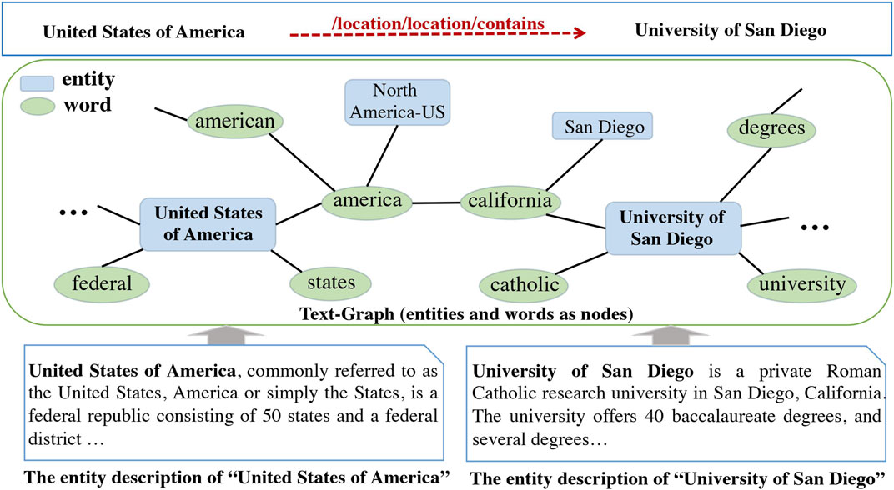 | The image displays a diagram of the entities involved in the business concept of Universal Venture Companies. There are public and private entities, universities, federal agencies, RepubCal Rep. Federalism American Executive Administration, and students. The drawing is quite intricate with different connections between the various entities, showcasing how they all play a part in the American economic system.
There are social media error nodes placed throughout the drawing, indicating aspects where there might be issues or confusion in the connections between the listed entities. In total, there are six error nodes spread across the image, some in the middle and others closer to the edges.
Overall, the complex diagram presents a clear visual representation of the network of organizations and stakeholders involved in Universal Venture Companies. | The image shows a diagram with multiple nodes, or information points, connected or grouped together. Some of the nodes are associated with universities, as indicated by their circular shapes surrounding the words 'U.S. United States' and 'The University of Baltimore.' The diagram spans the span of the United States and extends into other areas of America as well.
Among the other nodes throughout the image, some are related to different entities such as Federal Conference, Federal Aid, San Diego College/UBU, Barry University, University of San Diego and San Diego State University, the University of Texas, U.B., U.Va, Wake Forest, University of North Carolina, Harrisburg University of Science and Technology and others. The diagram encapsulates the various connections between different universities and entities across the U.S. | The image depicts an extensive diagram showing the relationships between various entities related to refineries and educational opportunities in the chemical process industries at a university. The diagram consists mainly of a map filled with curved arrows, connecting multiple points in an artistic representation. The cartography showcases the connections and relationships between chemical companies, educational institutions, refineries, pipes, and cities.
In this detailed view of a complex web of connections, you can identify different clusters representing the institutions, corresponding regions, and refineries. Moreover, key point highlights surround the map, possibly adding important context or further detail about the connections. The map's organization helps to illustrate the intricate relationships and interaction between these entities broken down from crude oil processing at refineries to the educational process at universities. | The image displays a diagram highlighting various educational and organizational entities connected through their relationships. The diagram includes a large number of green, arrows which point towards the different elements, showing entanglements between them.
There are various institutions represented in this diagram, such as schools, northeastern universities, and others. At the top right area of the diagram, a large association can be seen, likely representing a significant organization with multiple affiliates. The diagram aims to represent the complex relationships and interconnections between these entities, visualizing them through a network or grid pattern. | The image features a diagram displaying the nutritional content of a chicken sandwich. The representation consists of two circles, with one inside the other: the larger circle is the chicken sandwich, while the smaller circle is the bun. Below the caricature of the sandwich, there are various text labels describing its components, such as ingredients and nutritional value.
There are also numbers and percentages accompanying some of the labels, providing additional information about the sandwich. The image serves as an illustration to highlight the nutritional content and ingredients of a chicken sandwich, making it easier to understand and compare the contents of different sandwiches. | The image is a painting of a group of universities underwater. There are nine universities visible in the painting, each represented by a unique submerged building. These underwater buildings are scattered throughout the scene, with some positioned closer to the surface and others extending deeper into the water. The universities appear to be arranged in different layers, suggesting a depth-like structure instead of being all in the same level. | The image is a black and white photograph of an old locomotive train parked at a train station. The train stretches across the entire image, occupying a significant portion of the frame. It is an older model, possibly an especially interesting piece of train history. The black and white format of the picture enhances the vintage and nostalgic atmosphere surrounding the scene. | The image features a person standing and staring to the right. They appear to be participating in a moment of deep contemplation or intense concentration. The person resembles an AI, but it is important to note that it is a representation and not a real individual. The scene conveys an atmosphere of introspection and focus. | The image portrays a woman addressing a class at a university. She is standing at the front of the room, giving a presentation or a lecture. There are several people in the room listening to her. They are likely students or colleagues, engaged in the lecture and taking notes.
The room seems to accommodate potentially dozens of people, and there appears to be a range of different age groups in the audience. A book can also be seen placed on a surface, possibly a reference material for the lecture. Overall, it depicts a typical academic setting, with the woman sharing her knowledge and expertise with the attentive audience. | I'm sorry, but you haven't provided any detailed information about the image you're referring to. Could you please provide more context or specific details about the image? That way, I can better understand what you're asking for. | The image depicts a very beautiful woman standing in the water at the beach, wearing a bikini. She is looking to the side, with her eyes focused on something beyond the camera's view. Her posture suggests that she is engaged in a moment of leisure and enjoyment at the beach.
The setting is a sandy beach with some waves gently washing up on the shore. The woman is located in the middle of the scene, and the water is visible both in front of her and to her sides. She is the main subject of the image, and her presence emphasizes the relaxed and carefree atmosphere of the scene. |
 | The image portrays a simple and visually appealing diagram or model showcasing two white circles labeled "knowledge base" and "text to text". The circles are represented by text and delicate outlines. In addition to these two primary circles, there is also a small text-like circle close to the right side of the image.
On the edges of both the right and the bottom of the circles, small keyboard symbols appear, possibly indicating input mechanisms. The image presents an organized and clear model, making it an excellent visual aid. | The image is a white sheet of paper with a graph-to-text chart or similar diagram. There are several labels depicting the text-to-numbers conversion of values, along with a legend.
The main components of the chart include a series of lines going through the paper, each designated to represent a different number. The labels at each point along the lines suggest the corresponding numerical value. The picture gives a clear view of the conversion process, explaining how text values can be translated into numbers or vice versa. | The image presents a diagram showing two highly important concepts in text-to-speech technology, with a focus on natural language. The two primary components are represented by arrows pointing at a central area. The first arrow represents Grammar-to-Text, while the second arrow represents Text-to-Speech. The natural language is connected by a three-lane road, demonstrating the flow of information in this context. The diagram effectively communicates the relationship between two essential aspects of natural language, showcasing their interdependence and how they work together in modern technology. | The image depicts a busy flowchart with various text-based diagrams and arrows illustrating the progression from "raw data" to "output data." The flowchart is filled with diagrams that describe the data's journey through different stages of processing to achieve the desired outcome.
There are multiple text boxes and arrows in the flowchart, some placed directly in the middle, while others are located towards the top, bottom, and sides of the graphic, all communicating the intricate journey of data transformation. This diagram likely represents a complex process in which data is analyzed, refined, and transformed into a usable format for various applications. | The image represents a knowledge base system or a "robust artificial intelligence" system, shown in a visual format. A flowchart or diagram is displayed with numerous color-coded arrows connecting different nodes or concepts. The system manages and navigates through these nodes to provide answers or insights to users.
There are at least nine nodes in the image, each at various positions across the diagram. These nodes are interconnected through arrows that indicate the logical flow of the system as it processes the information. Additionally, there are multiple clock symbols placed throughout the diagram, possibly indicating different timeframes or stages within the process.
This visual representation showcases the complexity and interconnectedness of the knowledge base or artificial intelligence system, providing a clear visual of how it functions to assist users in gaining information or finding solutions. | The image shows a diagram illustrating the University of Tampa's Department of Statistics knowledge base. The knowledge base comprises foundational concepts, skills, and algorithms, which are critical for understanding and applying statistical techniques in various contexts. The diagram displays these concepts with visual aids in a clear and organized manner, allowing for easy comprehension and learning. | The image depicts a flowchart diagram with a few shapes and arrows, showing the steps of a process. It is posted on a corkboard, which gives off a casual, informal vibe. The flowchart is the main focus of the image, with various different xxx shapes and arrows representing different parts of the process.
This flowchart could be used to explain a system, process or method, helping to visually break down the steps involved, making it clear and easy to communicate information. The overall image conveys a sense of organization and order, with the corkboard adding a touch of personalization and casualness to the presentation. | The image is a drawing that depicts a process of making a cake. There are multiple layers of cake and frosting visible, as well as a spider web made out of frosting. The spider web is located towards the top right corner of the image. The cake itself appears to be three-tiered, with each tier displaying a different layer of frosting and cake texture. The overall aesthetic is unique and creative, showing the attention to detail in the drawing. | The image is a white background image featuring a woman in the foreground. She is standing with arms folded, dressed in formal business attire. Several handbags can be seen in the scene, placed close to her and slightly behind her. In the background, there are four more individuals, appearing as a group, although they are relatively smaller in size. | The image features a person, presumably a woman, sitting on the left side of the picture. She seems to be sitting down outside, possibly on a balcony or a terrace, as there's a bench in the background. On the right side of the bench, there are two objects that are difficult to differentiate from one another: a bottle and a chair are placed side by side, blending together. The overall setting appears to be casual and relaxed. | The image depicts a group of people gathered in a room, holding a person on the floor. Some of the people are positioned closer to the front and others are distributed throughout the room. The person being held on the floor appears to be at the center of attention and the focus of the scene. The overall atmosphere appears to be intense and the people seem to be actively engaged in the situation that is unfolding. |
 | The image is a collage of pictures of various subjects, with yellow colored pencils used to highlight the main categories of the showcased subjects. There is an emphasis on different subjects, such as reading, social studies, science, and math, as well as numbers. The collage contains 13 subjects displayed beneath each distinct section, noting how they correspond to the different categories presented by the pencils. Overall, it serves as visual aid demonstrating the wide variety of subjects that may be taught or discussed. | The image is a large poster displaying a vibrant comparison graph of different subjects students learn. The subjects are represented by different types of food, likely based on the theme of children's learning favorites. The graph is split into sections, with one featuring deciduous fruits like oranges and bananas, while another area features meats and cheeses like hamburgers and sausages. There are a few green elements in addition to these foods.
The poster also features two clocks close together, which may serve as a representation of the passage of time or simply replicate a common visual reference point in a classroom. The visual design of the poster makes it an appealing and creative educational tool for children, promoting an interest in learning while retaining a touch of fun with food-themed elements. | The image features a large frame displaying various subjects and their importance in a child's education. There are several Circles within the frame, each representing a different subject, such as languages, math, science, and art. The Circles are interconnected, emphasizing the interdependence of different subjects and how they contribute to a complete learning experience.
A long pencil is positioned within the frame, running horizontally from the top to the bottom, spanning almost the entire width of the image. This pencil symbolizes the ongoing progress of a student's education. The image captures a visually-rich and educational display, presenting the importance of a well-rounded curriculum and understanding the connection between various subjects. | The image features a large chart with various statistics and categories, including students, clubs, and subjects. There are multiple sections on the chart, each focused on different topics. Along with the clubs and student sections, there are subcategories focused on subjects like Math, Language Arts, Science, Social Studies, and subjects. The chart uses a clear and simple presentation style, which allows for easy understanding of the data it contains. | This is a low-resolution image that does not allow for a clear description. The content of the image includes a social studies, an art history project on pictured have a picture of pencils and a locker on the side, and a functional component wherein a pencil works to open the locker. | The image is a black and white poster featuring the arresting subject of drawing and painting men and men's subjects. The poster is full of bold mistakes. On this poster, there is a list of "Favorite Subjects" which includes the artist's favorite drawings and subjects, such as math, science, social studies, and history. The poster is cut off mid-way, so the complete list of subjects cannot be seen. The bold and unusual list subject style, along with the black and white color scheme, suggests a sense of surprise or provocation, making the image eye-catching. | The image shows a large graph paper, possibly a graphic organizer or a book with graph paper pages. In the center-left area of the graph paper, there are multiple strips of a pizza, illustrating a potential visual mapping or organizing tool. The graph paper is likely used for organizing thoughts, plans, or ideas in various fields, such as business or education. The presence of the pizza illustrations adds a playful and visually engaging aspect to the graph paper, making it a more enjoyable tool for working with. | The image features a poster or flyer with information about a variety of animals. It showcases nine different animals, each taking up a space on the poster or flyer. The animals are diverse, ranging from a large lizard to a small flower.
Each animal is strategically placed at different positions on the poster or flyer, starting from the top left corner and moving towards the bottom right corner. The animals are also likely arranged alphabetically or in some other order based on their appearance. The crotchety nature of the billboards is potentially relating to the size of these animals or their impact on the environment. | The image depicts a view from above of a trail leading into the mountains with deep woods surrounding it. The trail is paved, running through the woods, and likely offers a scenic route for those who wish to explore the mountainous terrain. The presence of such a trail demonstrates the natural beauty and potential opportunities for outdoor activities, such as hiking and camping, available in the area. | In the image, there are two women, one on the left side wearing a white dress and the other on the right side in a red dress. They are standing close to each other in some kind of workspace, with an arrangement of building materials and supplies nearby. There is also a cup placed on a surface, potentially a workbench, in the scene. The presence of construction materials and the two women interacting suggest that they might be working on a construction project or some kind of DIY project together. Their choice of attire, with the white and red dresses, gives a hint of their involvement in a fun or collaborative activity. | The image showcases a flock of birds flying together in a blue sky. There are many different species of birds visible in the scene, each one soaring gracefully alongside the others. The birds are scattered throughout the sky, with some positioned closer to the viewer and others farther away. The entire scene is bustling with the vibrant movements of the birds and their beautiful wing patterns. It is a captivating and lively depiction of nature's beauty. |
 | The image shows an illustration of network theory, emphasizing the connection between computers and social networking. With dark background and purple dots representing the connections, the network lines up to the various nodes, creating various network diagrams.
The colorful dots are scattered across the network diagrams in various patterns, showcasing the connections between each other. This visual representation provides a comprehensive understanding of the large scale of connections present within a network. In this case, the network consists of both computers and social media usage, emphasizing the interconnection and data exchange that take place in both areas of our lives. | The image provides an explanation of the Rahul's Teleports concept, demonstrating how white clouds and a document freely blend. A white cloud can be found on the left side of the image, extending across most of the scene's top portion. On top of the white cloud, a few clear spherical ornaments can be seen, showing a sign of connection between the clouds and the ground.
The document is visible towards the bottom left corner of the image, with the blue line pointing horizontally towards it. The scene depicts a seamless integration of the document with the white clouds and the terrestrial environment. Additionally, a few orange shapes can be spotted within the clouds, giving them a captivating and freely flowing appearance. | The image portrays a beach scene with various elements displayed. The main focus is a person wearing a surfing outfit, actively participating in the surf activity.
The image also shows a few more surfers with matching outfits scattered throughout the scene, suggesting that a group of people is enjoying the beach activity.
Additionally, a colorful bench is visible in the background, providing an atmosphere for relaxation and possibly offering a place for surfers to rest after their exciting sessions. | The image features a man standing in a small circle with odd and vibrant colors. The colors in the circle are a beautiful combination of purple, yellow, blue, and red. The man appears to be at the center of attention in this creative display.
The image has a document or poster situated to the left, and a wireframe to the right. The wireframe has strange particles and points accentuating the colorful vibes of the man in the circle. | The image is a simplified depiction of a network, composed of troves of colorful arrows interconnected in a circular formation. The arrows are of a varying distance from each other, mimicking a professional presentation of connected networks. Overlapped on the arrows are numerous small squares, which contribute to the complexity and interconnectedness of the network, giving it a relatable, techno-formal feel.
The overall effect of the image is a visually stimulating and intricate composition that manages to capture the essence of complex systems and connections. | The image depicts a diagram showing a large number of small circles arranged in rows. This chart has a data visualization approach where the dots represent values or metrics, while the rows illustrate the sellers operations in the market.
Near the top left corner of the image, there is a label that helps with understanding the chart. Despite the many small circles, it is not possible to determine specific details about the dots' sizes, colors, or relationships to one another from this high-level representation. | The image features an artistic representation of three people sitting in a boat, which appears to be designed for one person. This unique design lends an interesting visual twist to the scene.
The boat is filled with a sense of dreaminess and curiosity, as the three individuals seem to be looking into gaping black holes, seemingly experiencing this exploration of the unknown. There is a total of thirteen sailboats of varying sizes dispersed throughout the scene, with some behind and above the main boat, creating an impression of depth and scale. The unusual arrangement of the individuals and the physics-defying design of the boat invites the viewer to consider the concept of reality, dreams, and exploration. | The image features a black and white scene of a man standing in an open area or under an open umbrella, which gives a view of the surrounding landscape. The man appears to be looking at his surroundings and confidentlylooking towards the camera. There is a handbag placed near the man, possibly belonging to him or someone else in the image. | Sure, I'd be happy to give you a detailed description of the image. However, I need to know the topic to provide a meaningful response. Please provide more context about the image, such as its subject matter or content. | In this comical Chritian depiction, Undertaker is portrayed as a Grim Reaper, holding a needle and thread, possibly to display life's fleeting nature due to time or sickness. The drawing could have been created as an art print or used for satirical or humorous purposes.
The elements in the Impressionist-style of depiction include three cows and a sheep visible towards the left and right sides of the image, each occupying a third of the height, and a large section of land taking up the rest of the space, suggesting an outdoor setting.
Altogether, the image captures a scene with a mix of dark humor, fantasy, and realism, aiming to create a memorable and thought-provoking piece of art. | The image features a small child standing in the wilderness, dressed in homemade clothing. They are surrounded by nature, with trees and plants visible in the background. In the foreground, the child is standing on rocks, creating a sense of depth and scale in the scene. The image communicates a sense of freedom and connection to nature, while also showing the simple life and self-sufficiency of the child. |
 | The image displays a series of sentences representing a storyline, labeled with letters and numbers to indicate correct understanding. The sentences are accompanied by bicycle, car, and traffic light icons, as indicators of the various elements within the story. There is also a graphic or diagram of the player's progress through the story.
In this particular context, a player needs to answer questions and match elements from different sentences, ensuring that they comprehend and understand the correct narrative. The sentences are spliced into various sections and include elements like dialogue, pressing the left pedal, and bike doors. There are also additional explanations and instructions scattered throughout the image to guide the player. | The image features a computer-generated image showing a monkey-like creature, a farm animal, and a bicycle, all situated in a block together. A book, presumably containing advertisements, is also vaguely present in the scene. The image is divided into different sections or frames, with each frame displaying a specific item or concept. For example, the monkey-like creature is located in the top left corner, the farm animal is in the center, and the bicycle is in the bottom left.
The different sections seem to be interconnected, with colors and text boxes providing visual clues. The design of this visual collage suggests an informative and engaging way to present information and concepts. | The image depicts a flow chart that outlines the steps involved in building a motorcycle. The chart is divided into several sections, each corresponding to a specific step in the process.
The first section features an image of a motorcycle with the words "Third Step" written below it. In the second section, blue text is shown under an image of a blue car door, indicating the "Alexander R." marked image.
Other phrases or images can be found throughout the rest of the flow chart, outlining the detailed steps of building a motorcycle. The chart provides a clear visual representation of the process involved, breaking it down into smaller, more comprehensible components. | The image depicts a surreal scene that appears to be based on a conversation between a person and a pineapple. The pineapple is positioned towards the left side of the image, and it is surrounded by a variety of objects and text.
A motorcycle and a car are also present in the scene. The motorcycle is located to the left, while the car is found towards the right side of the image. There are several cups placed in the scene, with one cup located near the center of the image, another cup, closer to the right, and a smaller cup in the middle area near the person and the pineapple.
Additionally, a clock can be found in the upper left area of the image, and a keyboard is positioned towards the lower right corner. The combination of objects in the scene may convey a surreal or quirky atmosphere, with visual elements coming together in a manner that is unlikely to be encountered in reality. | The image depicts a beautiful woman standing in front of a motorcycle. She appears to be in a sauna or a balneological house. The motorcycle is located behind her. The scene is set up to represent a unique advertisement, potentially for motorcycles or beach-related products. The woman's pose captures the attention of the viewers. There are checkmarks on the image, as if the elements of the scene have been marked for careful examination or for an analysis purpose. | The image is a flowchart or map-like illustration representing a conceptual process involving a bike and motorcycle anyone-concept-process-step audience Visual to compound object could be checked by a meet: thinks-before-going: 2006-the-question-generation (again--that's three reality) "New Motorcycle de no longer expensive?(and - and worth the $$?) I-already-knows-of-feeling-it ( My motorcycle is one with: auenblades26 resistant ActiveSound(r) technology and it is: vertically-loaded-frame-makes-for-minimal-vibrations even under high acceleration...finds-smooth-response-in-system...) Roy lorentz What is weighted-object, anyway? A quick study says lorentz: New Motorcycle Forward explained But you don't have the Motorcycle you're riding checked to fall into the Motorcycle Class. (not at all! They are many improvements in the Technology) Then again, it is: expensive. | The image displays a tall building diagram on a piece of paper with books and different colored lines. The structure of the tall building can be seen as a large, vertical structure extending from the bottom left to almost the entire height of the image. The colorful lines emanating from the building illustrate various aspects of its height comparison to the surrounding area. The presence of several books nearby the drawing indicates that it is possibly a study or collage created by someone. Overall, the image seems to be comparing the height of a tall building with its surroundings while providing a bird's eye view of the structure. | The image is a simple illustration, featuring a blue cartoon turtle bending over an open books. There are several books in the image, with the largest one dominating the scene and the others spread out across the background. The blue turtle appears to be focused on the books, seemingly interested in reading. | The image depicts a woman sitting cross-legged on a motorcycle, possibly in a field or an urban setting. She is fixing something on the motorcycle, possibly addressing a mechanical issue or working on its maintenance.
The woman appears to be wearing a helmet, which is placed on the motorcycle, and there is a backpack resting nearby. Additionally, there's a bottle or cup situated close to the motorcycle, perhaps for carrying water or another beverage. | Unfortunately, you did not provide an example of an image with the required closed caption that I can refer to. Can you please provide a transcript of the closed caption that you would like me to describe the image with? | The image depicts a large building, possibly a factory or a warehouse, with many different sections connected together. The building has a cathedral-like structure and features many windows of various sizes and shapes on each of its levels. The architectural design is impressive, making the building stand out as a unique and interesting structure. |
 | This image displays several pages of a school activity, with the focus on a document related to a Gender Roles assignment. The pages contain information about the number of male and female students participating in a university engineering program. A comparison of the number of men and women enrolling as engineering students at different universities is analyzed in this document.
Alongside the assignment, there is a chart showing the percentage of male and female students in each academic program. The image also has a section explaining international enrollments and current university rankings, further emphasizing the assignment's practical aspect. | The image displays a study guide or booklet related to engineering. This document is focused on women and entrepreneurship, using a blend of blue and green colors and appealing visuals such as graphs, to make it visually appealing and understandable. The guide appears to be part of a project selecting and setting up business ventures.
The study guide is likely giving information about who is responsible for the different parts of the business. The portion of the guide is filled with facts about your responsibility as a co-manager, including a comic illustration to make it more engaging and informative. A bar graph is also present, helping visualize the data by illustrating numerical values and relationships. | The image showcases the questions and answers of an engineering exam taken by male engineers. The questions are presented in their original form with the corresponding answers filled in as "Ans" in bold, positioned directly belowneath the questions. There are also blue and pink highlighters used to emphasize certain areas of the text, making it a vibrant and visually appealing presentation of the exam. The text appears to be in a foreign language, adding a touch of diversity to the subject matter and making it more interesting. Overall, the image demonstrates a thorough approach to studying and highlighting the important information from the engineering exam. | This image contains a variety of different colored charts on the same page, likely illustrating information or concepts related to financial planning for an individual. The page itself seems to be a piece of paper with pencil markings highlighting key points or numbers.
There are several boxes on the page, some filled with various figures such as numbers and other relevant details. Each box's content complements its purpose to create a comprehensive visual representation.
Overall, the image seems to involve some level of quantitative analysis or financial planning based on the numbering and data included in the different boxes. | The image displays a copy of a book, specifically Assassin Training Answered, which seems to discuss genetic selection and modifying animals. The text inside the book is predominantly colored blue, indicating specific terms or topics.
There is a barcode on the left side of the book, possibly for identification or inventory purposes. Another unique feature of this book is the presence of an index with numbers listed at the top of pages, helping readers quickly find relevant information. Overall, the image presents a focused and tidy presentation of the book's contents. | I see an image of people grouped into three teams lined up and ready for some activity, likely a trivia game or competition. The teams are visible through windows and there's a graph showing the total score of each team. One team includes more people, taking up about half the space, while the other two teams share the other half. There is also a group of only three people.
The chairs are visible in the scene, including people in the foreground and background, indicating the presence of an auditorium or other common event venue. The people in the image give the impression of being in an organized, prepared environment. | I am examining a pictorial representation showing a airliner's lavatory occupied by several people. The airplane is a jumbo jet, suggesting it's a quite long plane.
Using the infrared map, which shows various elements on the plane, one can see that there are a total of 12 personnels on board and they are spread out throughout the lavatory and nearby areas. The infrared map helps in determining their positions in relation to the window, walls, and other people. The visibility of the individuals is occasionally hindered due to walls and other objects in the image. | Unfortunately, there seems to be an error in the image description. The image is not attached, and the fields provided are empty. Please provide a description of the image so I can assist you better. | I'm sorry, but it looks like you may have described a whole page of content instead of an individual image. If you could provide a specific image for me to describe, I'd be happy to do so. | The image features a park scene with several people enjoying various activities. There are at least nine people visible in the scene, spread out throughout the park area. Some individuals appear to be walking around, while others might be engaging in conversations or taking pictures.
In addition to the people, there are two birds in the image: one can be seen flying above the park-goers, while the other is perched on a low-hanging branch. A car is also present in the background, seemingly parked near the edge of the park. | As an AI, I'm unable to view images. Please provide a description of the image you would like me to analyze. |
| In this image, there is a graphical representation of an event detection problem with conditional random fields. There are two main visibility conditions binary models 1 and binary models 2 which are represented by graphs and will be used for event detection. There is also a C-model, which is related to evaluating the entire CDF model used for event detection. The precision performance of the models is being analyzed, as shown by the lines on the chart. This helps to estimate the performance and reliability of the various models and their respective algorithms. | The image is a force-feedback diagram drawn with a combination of pen and stylus to compare two different catapult slope models. One of the models is red, and the other is blue, with a close up of their slopes shown in the diagram. A large block of text is also visible, possibly explaining the models, along with a separate presentation of data in a large glyph. The image provides a visual representation of the comparison between the two models. | The image displays a long-handled diagram with a comparison between two networks, one labeled "Humanitarian Management in General" and the other labeled "CMS Humanitarian Management Model." The diagram has several smaller diagrams at various positions throughout the map, some of which have added Cages, Triangles, Graphs, and Wals. The area below the bottom right of the main diagram labeled "This is our theoretical lab!" represents the overall theme. | The image displays a comprehensive diagram using a CATS-EYES notation and an Event Detection with Conditional Random Fields (CREFS) graph to represent the event detection. The graph contains multiple nodes and edges, showcasing the network connecting different sources and various forms of documentation. It seems to be illustrating the process of detecting and mitigating AKA attacks in modern distributed systems on sensor networks.
Various labels accompany the nodes and edges in the diagram, providing useful context and information about each aspect of the network. The visualization effectively highlights the complexity of the relationship between different parts of the system, making it easier to understand the interconnectedness and organization of the overall network. | The image depicts an event detection system in which two different outcomes may occur. There are some details written, likely as part of an explanation or diagram. The system is illustrated using various models, suggesting a process or algorithm. Within a larger context, the ensemble of neural networks has shown better performance.
Multiple people are visible in the image, while some are on the left side, another on top, and the last one on the right side. They likely represent different individuals involved in the evaluations, possibly working together to achieve the best outcome. The human medical model does not perform as well as the ensemble of neural networks, indicating the superiority of using the models for certain tasks.
Overall, the image offers a snapshot into the world of event detection and its connections to human medical models and neural networks. | The image showcases a graphical representation of the distribution of performance metrics of an event-based detection system. The system appears to be analyzing foot traffic and providing valuable data on pedestrian traffic patterns. The graph illustrates the normal distribution of the performance metrics, with the middle of the distribution representing the average. The plot also shows that the range of the distribution is approximately 0.2 to 0.8. | I'm sorry, but I am a text-based AI and do not have the ability to watch images as they play out. I can only interpret and respond to text-based descriptions and instructions. If you have a specific question about an image, I may be able to help you with that question based on my training. Please provide as much information as you can about the image and its contents when asking your question. | The image displays a dining table with a white cloth, elegantly set up for dinner. The table is adorned with various setting items, such as wine glasses and cups located towards one end of the table. The table setting also includes place settings featuring knives, forks, and spoons evenly distributed along the table length.
Several cakes can be found at different parts of the table, with the main cake placed more towards the center. The overall dining table arrangement creates an inviting and sophisticated atmosphere for a special event or a romantic dinner. | In the image, there is a flowchart that describes a process of using conditional logic in a system. The flowchart is divided into nodes representing different steps in the process, with arrows pointing from one node to another.
The first two nodes present two possible conditions that the system uses to determine the next steps. The third node represents a decision point where the system will choose the next steps based on whether the conditions in the first two nodes are met. After the decision point, the flowchart describes the different options that the system can take depending on the outcome of the decision, represented by several more nodes.
The flowchart effectively illustrates how the system uses conditional logic to determine which steps to take based on the input data and the system's predefined rules. | The image shows a scenic island in the middle of a lake or river, surrounded by calm waters. The island is lush and green, covered in vegetation that looks like a forest. There is a dense cluster of green trees in the middle of the island, surrounded by smaller groups of trees on each side.
In addition to the island, there is a person standing at the edge of the water, possibly enjoying the view of the island. The person appears to be relatively small, making the vastness of the natural setting apparent in the image. The overall atmosphere suggests a peaceful and serene environment that is perfect for relaxation and nature appreciation. | I apologize, but I am a text-based AI and do not have the capability to view images. I am trained to understand and generate text based on natural language input, but I do not have the ability to process visual information. Is there something else I can help you with? |
 | The image features a diagram that appears to depict an overall graph theory and function. The main focus is on the "Title Encoder" that transforms a graph's properties into a text-based representation. The diagram is organized into different layers, indicating a step-by-step process.
There are multiple circles placed throughout the image, possibly representing central ideas or elements in the process. The combination of the diagram and its corresponding text appears to explain or visualize various aspects of writing. | The image depicts a female comedian, drawing the viewer's attention with her microphone in hand. The setting appears to be a stage or an auditorium, emphasizing that she is the main focus of the scene. There is a book placed in front of her, possibly containing the content of her speech or act. The presence of the microphone implies that she is involved in her routine, using the book to guide her performance. The reason behind focusing on her is highlighted in the title, "A comedian holding a microphone is the main focus of the image." | The image consists of two diagrams showing different opinions on graphical symbols. One diagram focuses on a Top Down Approach, while the other one shows a Bottom Up Approach. In these diagrams, there are multiple small figures displaying various nuances such as attention layers, Title Encoder, and Copy Transformer. They provide detailed visual representations of the total text generation process. There are also some pads and letters scattered throughout the image. | This image illustrates a visual representation of a healthcare CRM system. The image focuses on the data flow and structure, highlighting the different aspects of the system.
There are several components to the CRM system, including an attention score, a title encoder, and a vocabulary model. The attention scores are used to evaluate the importance of different attributes or data points across the system. The title encoder translates the data into an understandable format without causing false positives or inducing associations that are not explicitly stored. Additionally, the vocabulary model stores words and phrases in their appropriate buckets.
In addition to these highlighted components, there are multiple clocks in the image, potentially representing time-related factors within the CRM system. Overall, the image conveys the complexity and organization of the healthcare CRM system, illustrating the way data is processed and analyzed within the software. | The image displays a diagram with three sections, depicting a progression of a basic computer fighting game on a PlayStation 3 console. The main components of this game are a Transformer, a character that can be the player's controller, a lifter, and two missiles (or discs).
In the diagram, the transformation stage is represented by a single square, with the header "Transformation mode." Eight transformers can be seen in total, representing the various stages of the transformation process. In the lower section of the diagram, there's a display showing the remaining transformations.
This diagram is intended to provide a visual representation of the game's mechanics, allowing the user to understand the components and their functionality within the game quickly and easily. | I'm sorry, but the image you provided has text (likely a description or diagram) but no actual image data. In order for me to provide a detailed description, I would need an actual image file to analyze.
Can you please provide a link to an image you would like me to describe, or upload the image file you're referring to? I'll be happy to help you with a detailed image description. | The image depicts a flowchart that illustrates the steps involved in applying for a job. The flowchart is designed to be easily understood by a senior high school student. It is organized into five different sections or nodes, starting with the "Identify Job Opening" node on the left side and moving progressively to the right side. Each of the five sections consists of multiple steps that describe the process of applying for a job, including creating a resume, writing a letter of intent, and preparing for an interview.
Each of the nodes is connected by arrows, indicating the progression of the steps involved. There is also a small image of a magnifying glass on the "Identify Job Opening" node, indicating that you should start by researching job openings. | The image shows a street scene where a dog is walking down the street ahead of two people. The dog appears to be larger than its two companions and seems to be focused on something to its right, possibly a toy or another dog.
There are several other people in the scene, with some of them further behind the main group and others standing closer to the edges of the image. A backpack can also be seen near the center of the scene, and a car is parked or about to drive down the street. | The image features a large dog standing on a beach next to a body of water. The dog appears to be enjoying its time by the shore, possibly walking along the water's edge or laying down on the sand. The overall atmosphere is serene and soothing, as the dog seems to be undisturbed by its surroundings. | As an AI visual aid, I can only describe textual content. If you have a question about a specific image, please provide the details, and I will do my best to assist you. | The image depicts an artistic and somewhat surrealist scene of a bird with a clock on its side, flying past a large boulder. The bird dominates the scene and has a striking position as it appears to be alight in the sky. The clock on the bird's side is a peculiar and eye-catching detail amidst the natural landscape.
Beneath the bird and the stone rock outcropping, there are several smaller elements in the picture, including a butterfly and two smaller clocks. The overall composition of the image merges elements of nature, technology, and time into a single vivid scene. |
 | The image depicts a wedding ceremony taking place outdoors. A bride and groom are standing together under the outdoor sky, with the bride wearing a white dress and a bouquet, while the groom is adorned in a suit and a tie. They stand in front of an officiant, an important guest in the wedding celebration. Many other guests have surrounded the scene, watching the couple exchange vows.
A couple of chairs are placed in the scene as well, possibly for the crowd to sit and enjoy the event. One chair is closer to the left side of the image and the other is positioned more towards the right side. The guests seem to be enjoying the special occasion, witnessing and participating in the beautiful exchange taking place between the bride and groom. | The image depicts a picturesque outdoor scene, with a honey-moon couple pulling away from a beautiful flower arch with unity lights. Two members of the couple have elegant black ties, signifying that they are groom and bride. Many beautiful flowers line the couple's path, adding a romantic touch to the scene.
A group of people, including parents and more individuals, have gathered in the area, likely watching the newly married couple. Keen observers can be seen near the arch and behind the couple. Several chairs and backpacks are present in the scene, adding more interest to the wedding setting. | The image captures a memorable moment of a bride, groom, and groomsmen walking together down an aisle. The groom, dressed in a black tuxedo, is accompanied by three groomsmen, who are also equipped with ties in various shades. The bride, dressed in a stunning white wedding gown, is following closely behind them.
Adding to the romantic atmosphere, several chairs are arranged along the aisle - two chairs near the middle, a pair farther back, and another towards the right edge of the image. The seating arrangement is perfect for guests looking on, capturing the intimate feeling of the wedding. | The image depicts an outside ceremony being attended by a group of people. Among the crowd, there is a bride wearing a white wedding dress standing at the center and a groom dressed in a black suit. They are surrounded by several others, likely adhering to social distancing guidelines or taking positions to view the ceremony.
In addition to people, there are a few potted plants placed throughout the scene. One small plant is located near the left edge of the image, while two larger ones can be seen in the middle area and another one closer to the right side of the photo. The presence of plants adds a touch of nature to the outdoor setup of the ceremony. | The image depicts an elegant woman dressed in a sophisticated manner standing in front of a grocery store. She is holding a microphone and appears to be giving a speech to a crowd of people gathered around her. In addition to the main woman, there are several other individuals scattered around the scene, some standing and others sitting, indicating a lively atmosphere. The defining elements in this scene are the beautifully dressed woman holding a microphone, the grocery store as the backdrop, and a crowd of people surrounding her for a quaint gathering of some sort. | The image depicts a forest landscape, filled with a variety of purple flowers scattered throughout the scene. These purple flowers can be found in different locations and at various heights within the forest. There is a small group of purple flowers located in the central part of the forest, with some closer to the ground and others higher up. Additionally, scattered around the forest, there are individual purple flowers near trees and rocks. The picturesque scene captures the beauty of the purple flowers against the lush green backdrop of the forest, making this an aesthetically pleasing outdoor location. | The image depicts a large cement area where a couple is standing. The man is standing to the left of the woman, while both are positioned closer to the center, creating a sense of unity. The woman is wearing a wedding dress, and the man can be seen in a more casual outfit, likely chosen for the more relaxed celebration of their marriage. They appear to be small in size, indicating a possible humorous twist or the use of photography to exaggerate the scale of the subjects. Overall, the scene conveys a joyful atmosphere, with the newlyweds sharing this special moment on their special day. | The image depicts a tall bamboo plant with large leaves close to a window, providing shade and some privacy for the space. The plant is situated next to a store, and a chair can be seen positioned in front of the window.
The main focus of the bride and the groom is evident as they stand outside together with their marriage behind them. They appear to be a more youthful couple, starting their next life of partnership and love. There is another chair located further from the window behind the bride and groom, emphasizing their spot of honor in front of the store. | The image shows a young boy standing outside in the snow, bundled up in warm clothing. He is wearing a stocking cap and smiling for the camera, showing off his big smile. Apart from the young boy, there is an adult present in the background, who is also wearing a stocking cap.
There are two of the same snow-covered chairs in the picture, adding to the wintery atmosphere. The chairs are placed close together, possibly suggesting a gathering or event in the snowy weather. The overall scene is filled with joy and the excitement of playing in the snow. | In the image, a newly married couple is in the middle of their white wedding ceremony. The bride and groom are both dressed in traditional wedding attire, with the bride wearing a stunning wedding dress and the groom adorned in a suit. They are standing in front of each other, exchanging vows and committing to each other in the eyes of their loved ones and friends.
The couple is surrounded by a group of people who have come together to witness and celebrate the joyous occasion. Some members of the wedding party are standing close to the couple, while others are scattered around the scene in various positions.
Wedding rings are visible, as they are an essential part of the wedding ceremony. One ring is worn by the bride, and the other is on the groom's finger as they complete their union. The overall atmosphere of the scene reflects the happiness, love, and excitement that comes with a wedding celebration. | Image Description:
The image showcases a beautiful beach scene in black and white, likely depicting a sunset view. The sky is adorned with the vibrant colors of a sunset, casting a warm glow over the scene. On the beach, there is a pair of people standing together, possibly enjoying the view or engaging in a romantic moment.
Additionally, there are several birds scattered across the sky, adding a touch of liveliness to the captivating beach setting. The overall atmosphere of the image is serene and picturesque. |
 | The scene is a picture of a little girl in a white dress, engaging with a batch of colorful eggs scattered across the ground. The girl seems to be picking up the eggs or looking intently at them. The eggs come in different colors, with some green, pink, blue, and yellow varieties present throughout the scene. The setting is outdoors, with the girl in the midst of the attentive yard full of eggs. | The image features a little girl reaching for a small colored egg sitting on top of a grassy surface. There are several other small colored eggs scattered around the scene, with varying positions close to the ground. It appears that the girl is playing in the grass and gathering these miniature colored eggs. The scene has a relaxed and playful atmosphere, giving the impression of a fun time spent outdoors by the little girl. | The image features a group of children scattered across a field, searching for treasure during the day. The children appear to be young, possibly wearing white clothing. They are actively involved in finding the hidden Easter treasure among the field.
There are numerous children in the scene, as they carefully examine the area. The treasures consist of numerous Easter eggs, scattered across the field, creating the atmosphere of Easter hunts and a fun-filled day outdoors. | The image shows an adorable young dog sitting down and surrounded by multiple tennis balls. The dog appears to be grabbing or resting on a tennis ball, creating a playful scene. The presence of multiple tennis balls scattered around the dog suggests that it might be playing with them either alone or with someone taking the photo. The entire environment delivers a sense of joy and companionship, showcasing the bond between the dog and the tennis balls as toys. | The image features a person reaching down by a field of tall grass, possibly to pick up something. The person appears to be wearing a white dress and shoe. Various eggs are scattered around, particularly on top of the grass and the field, indicating that the person may be involved in an activity involving eggs. The scene creates a sense of interacting with nature and possibly handling farm-related tasks. | The image depicts a beautiful young child wearing a white shirt and a white dress. The child is standing in front of another child, who appears to be picking up flowers out of a box of colorful eggs. There are multiple eggs scattered around them on the grass, each possessing a different color. The scene evokes a sense of wonder and curiosity. | In this image, a child is holding a basket and looking at a patch of grass. The child is in the process of gathering colorful webbing from the grass. Many colorful webbing cords cover the entire grass area, creating a vibrant and lively scene. There is also a spider at the top left corner of the image, potentially indicating the presence of a spider web in the grassy area. The child appears to be examining the webbing with curiosity. | The image shows a small crab in a large clementine-sized orange. The setting is in the ocean, where the crab is standing among water and surrounded by waves. The crab is peeking out of the orange and seems curious and possibly homesick. The scene captures the perspective of the curious crab as it watches the world around it and wishes to explore the real world. | The image captures a scene of an elderly man crossing a busy street at a crosswalk. He is making his way across the street, taking care while navigating the urban environment.
The image contains several cars in the background, indicating the presence of a bustling traffic situation. Several other people are scattered throughout the scene, including individuals who appear to be standing or walking around.
Some traffic lights can be seen in the background, further emphasizing the city setting and ensuring that pedestrians, like the elderly man, have safe passage when crossing the street. | In the image, there is a group of young people visible outdoors, possibly engaged in a team sporting activity. They appear to be standing around and interacting with one another, with some facing forward and others turning their backs. There are a few sports balls on the ground in front of them, indicating that they may have been playing with them. The group of individuals consists of individuals located on the left, right, and center of the scene. Overall, the image captures a casual, outdoor gathering where people are likely socializing, playing sports, or participating in an outdoor event. | I'm sorry, but I cannot provide a detailed description of the image without actually seeing it. Please provide me with the image or more information about it so I can assist you better. |
 | The image showcases a family posing for a picture during Halloween. The group consists of four people, including three adults and one child, dressed up in costumes. The adults are wearing black clothing, with pointed ears, while the child appears to be a "real pumpkin." They are gathered around a pumpkin, possibly as a centerpiece for their photo, capturing their spooky and fun atmosphere during the Halloween celebration. | The image features a group of people, including a man, a woman, and two kids, standing together and posing for a Halloween picture. They are all wearing costumes, and the group includes a person dressed as a pumpkin next to the couple and the children.
In the background, two pumpkins are visible, one towards the left side of the image and the other towards the lower-right corner. There is also a teddy bear positioned in the top-right part of the image, adding elements of fun to the Halloween party photo. | The image features a black and white scene with a groom and bride walking together, surrounded by various people who are wearing costumes. Some of them are in pumpkin-shaped masks, creating a fun and playful atmosphere.
A couple of people are holding a pumpkin in their hands, indicating a possible Halloween event or a Halloween-themed celebration. The guests are scattered throughout the scene, engaging with each other and participating in this unique gathering. | In the image, a group of adults is posing for the camera to create a vivid photo together, likely to capture the fun moments they are enjoying during a special event or party. Three of them are striking entertaining poses, with one on the left, one in the center, and the other on the right side of the picture, while the fourth person is positioned towards the left of the group.
The main attraction among the group is a pumpkin positioned prominently in front of them. This pumpkin adds a playful and festive touch to the photo, emphasizing that the scene likely takes place during a Halloween celebration or similar event. | The image features a group of three corgi people posing in front of a plant. They are dressed in costumes, with one corgi dressed as a man, another dressed as a girl, and the third corgi dressed as an orange jacket.
The corgis are all looking at the camera, creating a playful and lively scene. Behind the corgis, an array of pumpkins can be seen arranged in a line on the floor. Some of the pumpkins appear to be of varying sizes and are carefully placed together.
In addition to the people and pumpkins, there are two teddy bears visible in the foreground, placed on either side of the scene. Overall, the image captures a fun and whimsical pose, showcasing the unique combination of costumes, pumpkins, and teddy bears. | The image is a creative photo with a group of four African American people posing for a portrait with handmade signs indicating their various social media usernames displayed. These signs are likely unique and personal to each person, showcasing their individuality on social media platforms.
The group of young adults is standing close to one another as they pose for the picture. One person is positioned towards the left side of the image, while the others are clustered more towards the middle and far right. All four of them appear to be enjoying the moment and showcasing their love of social media through their handmade signs. | In the image, there is a group of people gathered outside in an urban setting, standing in front of a house with glowing pink decorations. The group consists of several individuals, including one person who is standing in the center, and another person notably colored in a rainbow of colors. They seem to be engaged in a conversation, as a cell phone can be seen placed between them, likely used to capture the moment. Remaining people in the group are also focused on the person in focus and listening to what is being said. The atmosphere seems happy and vibrant, as it is likely a gathering during the daytime. | The image depicts a beautiful field with tall green grass surrounding a bike. The bike is parked and rests on the lush green field, appearing as the main feature of the scene. Several people can be seen in the background, likely enjoying the serene atmosphere of the field. Some of these people are closer to the left side of the image, while others are near the center and right side. Overall, it creates an idyllic and peaceful image of a person enjoying a leisurely bike ride outdoors. | The image showcases a group of four main cows standing together in a pasture or field. They occupy a central part of the scene and appear to be the focus of attention. The cows are surrounded by lively green grass, giving the impression of a healthy and thriving environment for them.
In addition to the main cows, there are three other cows visible in the background. Furthermore, a human can be seen standing near the bottom left corner of the image, possibly observing or interacting with the cows in some way. | I'm unable to provide a detailed and accurate description due to not being able to see the image for myself. To help you describe the image, please provide a thumbnail of the image or the [image's URL](https://theabbie.github.io/files/share.jpg). Additionally, to assist me further, you can provide context or specific details of the image's content. | The image depicts a woman standing on a beach with a surfboard while wearing a bikini. The sun is shaping directly on her face, creating an intense lighting effect. The woman appears to be enjoying her time at the beach, and possibly getting ready to go surfing or simply soaking up the sun. The scene captures the essence of a beach vacation, with the woman being the main focus in the foreground. |
 | The image captures an energetic race where several young women are running down the street, leaving their dripping footprints on the ground as they compete. The athletic females are scattered across the scene, displaying various attire often worn during marathons. Some runners are close to the camera, while others are in the background, emphasizing the diverse participants present in the race.
The atmosphere seems vibrant and contagious, encouraging the crowd to cheer for the runners and give them the energy needed to finish the race. The presence of numerous spectators and fellow runners adds to the excitement of the event, making it an enjoyable experience for everyone involved. | The image captures a lively scene of a large crowd of people gathered for a live race. The crowd consists of at least 14 people in various positions, actively participating in the race. They are wearing shorts and sports attire, demonstrating their enthusiasm for the event.
Interestingly, there is also a handbag placed near the left side of the scene. This suggests that the event might attract spectators who have brought personal items with them. | There is a small crowd of people running down the street, actively participating in a charity run. Many of these people are wearing athletic attire and appear to be in good shape, fully engaged in the race. Some of the people are carrying backpacks, adding to the active nature of the event.
In addition to the runners, several onlookers can be seen positioned along the length of the racing view, cheering on the participants and enjoying the lively atmosphere. The gathered crowd contributes to the sense of camaraderie and excitement for an impending tee-shirt event for the cause. | The image depicts a fake running competition environment, possibly a team event, with numerous people participating and wearing matching uniforms. They all have red shirts and are spread across the scene, possibly in formation or racing each other.
Some participants are closer to the viewer while others appear farther away, suggesting that they are moving across the frame. With crowd members having their cheers implied, the location seems to be an urban city setting where people have gathered to watch this seemingly surreal or unconventional event. | The image shows a blue butterfly flying toward the viewer, with its wings outstretched. It is situated in the upper left section of the image. The focus of the scene is a large woman, one of the many runners participating in a full marathon. She is running under the umbrella near the left-middle part of the image, capturing her determination amidst the tough weather.
There are several other runners in the image, some located around the edges and others in the background, giving the scene a sense of energy and excitement portraying the marathon atmosphere. | The image captures a lively street scene with a group of men and women running down the street. There are a total of 15 people in the picture, with some of them running closer to the viewer and others further in the background. They appear to be participating in a race or just enjoying a fun activity together.
Some of the people in the image can be spotted closer to the left side, with a larger contingent of runners toward the center of the scene. The right side of the image showcases a few more people, possibly making their way down the street or watching the action unfold. | The image depicts a sunny day at the women's marathon, with a beautiful view of a large field filled with many runners. A young woman is racing toward the finish line, energetically leading the crowd. There are numerous people participating in the marathon, visible on the top part of the image; some appear closer to the finish line, while others can be seen further back on the course.
In addition to the runners, there are two benches visible in the image, one near the left side and another one in the top right corner. Possible spectators, other runners, or event organizers may be seated on these benches, observing and supporting the participants. As the runners warm up for the race, the scene captures the excitement and energy of the event. | In the image, there is a large, diverse group of women standing outside on a race track. They seem to be racing together, focused and wearing appropriate clothing appropriate for the activity. Some women are closer to the front of the group, while others are slightly further back, showing the spread and energy of the participants as they move across the track.
The group can be described as a circle, suggesting that they are all part of a race or event and are lined up in a uniform way. Each woman appears to exhibit a different level of intensity while participating in the race, creating a lively and dynamic atmosphere. | The image showcases a bouquet of flowers, likely on display for sale at the market. The bouquet consists of multiple stems of flowers, arranged in a visually appealing manner. The setting appears to be a street market, where fresh flowers are being worn on the stands for sale, attracting buyers.
It's likely that the image was captured during a day with favorable weather conditions, as the flowers seem to be fresh and vibrant. The bouquet is displayed prominently, likely on a table, with its colorful stems drawing attention to the stand. The overall atmosphere suggests a lively and bustling outdoor market, attracting shoppers who are looking for fresh flowers for their homes or special occasions. | I am sorry, but I cannot provide a detailed description of an image without actually seeing the image. Conference rooms can vary widely in appearance, and without more specific details or a reference image, I am unable to provide a detailed description. | The image depicts a busy street lined with tall buildings. A person can be seen walking down the street, wearing a backpack. In addition to the person, there are multiple smaller figures walking and standing along the street. A car is also visible, driving down the road. The overall atmosphere of the image suggests a bustling urban environment with people going about their daily activities. |
 | The image depicts a group of people gathered in a living room, having fun and enjoying each other's company. A man wearing a knit, stocking cap and Santa hat is holding a Christmas decoration for a woman to see, while others in the room are smiling and engaging in conversations.
There is furniture in the background, including a couch where the family is sitting and an orange chair. A window can be seen in the room, offering a view of the outside. Various wine glasses can be found within the scene, suggesting a celebration or a gathering among friends or family.
A cup and a clock can be seen on a surface in the room, adding to the cozy atmosphere of the living space during the holiday season. | The image features a group of people standing near a Christmas tree at a holiday party. One person in a red shirt is holding a grey-haired man as the family members, their heads adorned with festive toppers who appear to be enjoying their time together around the ornament-covered tree.
There are multiple chairs arranged around the room, one near the left side and three others placed along the right side, inviting guests to sit and relax. A dining table is also visible in the room, possibly where food and drinks were laid out to make the party a memorable experience. | The image depicts a festive gathering of many people in a cozy setting, possibly around a Christmas tree. The group appears to be led by Santa Claus with his elves, as they are also known. The people are enjoying themselves and the cheerful atmosphere while standing or simply rearranging objects in the room.
A couch can be seen in the background along with multiple people standing around it, sharing the warmth and holiday spirit. A potted plant and a clock are also present in the scene, adding more charm and coziness to the gathering. The scene reflects the essence of a joyful, family-oriented holiday celebration. | The image is a cozy Christmas scene of a family gathered on the couch, celebrating the holiday season. There are five people in the picture, with an older man wearing a tie and reindeer sweater, surrounded by his loved ones. It appears as if they are preparing a good time by gifting and unwrapping presents while sharing a festive moment together.
Wrapped presents can be seen placed around the couch, with at least four of them visible. Bright, garishly colored ornaments are scattered throughout the scene, adding a cheerful atmosphere to the celebration. Keen-eyed detailing and festive decorations brighten up the room, enhancing the warmth and holiday cheer of the scene. | The image features a family gathered in a living room of a cozy home. The family members appear to be of Asian ethnicity. They are all positioned around a Christmas tree, some of them wearing festive red and white clothing, including a traditional elf hat.
The family members are seated and standing around, possibly posing for a photograph. There are two couches and a couple of vases visible in the living room, creating a warm and comfortable atmosphere. The group of people consists of both adults and children, who seem to be enjoying each other's company and the holiday celebration. | The image depicts a sign post Christmas celebration, with a group of people sitting around and enjoying each other's company. Among the group, there is a woman talking to a man and engaging in conversation while smiling at him. Another man sits behind her, likely listening and sharing the festive moment.
A total of five people can be seen in the scene, while four additional adults and one child are sitting on a couch, suggesting that this is likely happening at a Christmas party or gathering. The woman on the left is dressed in a red shirt, which complements the overall festive atmosphere.
In addition, there is a teddy bear, visible on the couch, adding a playful touch to the scene and hinting at the younger attendees of the party. | The image depicts a close-up view of a white Christmas tree, likely captured using a fisheye lens on a camera or a smartphone. On the other end of the tree, an older African American man wearing a baseball cap and glasses is sitting in a room.
The room is furnished with a couch on the right side and a dining table, where a decorated plate is present. There are also two carrots placed nearby. Additionally, a couple of vases contribute to the decoration of the room. Lastly, there's a person partially visible on the left side of the image, adding context to the scene. | The image depicts a holiday meal setup with a dining table covered in an array of food items. The main focus is on the guests seated around the table, four of them are well dressed individuals, potentially a family gathered for Christmas or a similar festive occasion. In total, there are six people present in the image, including the omniscient perspective revealing the entire arrangement.
The table is filled with various meal items, including an array of sandwiches spread across the table, making for an inviting and abundant spread. A cup can be seen placed near the first sandwich, and another a bit further away. With an array of sandwiches and the overall presentation of the table, the atmosphere is warm and cheerful, inviting in the guests to enjoy the meal together. | The image shows a family having dinner together in their home, with everyone dressed and ready to celebrate the new year. In the family, there is a couple and a couple of children, all seated on chairs around the dining table. Various items can be seen on the table, including cups, bowls, knives, and spoons.
On the table, there are two bowls of food, with one placed closer to the center and the other slightly to the left. Another bowl is positioned on the far left side of the table. There are four cups spread across the table, one near the center, one on the far left, another on the far right, and the last one closer to the back of the table. Wine glasses can be seen on both ends of the table one towards the back and the other towards the front. A fork is also present close to the center of the table.
The family appears to be enjoying a warm and intimate moment together, embracing the new year ahead of them. | The image features a beach scene with several people enjoying their time near the water. Some of them are standing closer to the shoreline, while others are scattered throughout the scene. The people appear to be in various states of relaxation and leisure, perhaps taking a break from swimming or sunbathing. The overall atmosphere is pleasant and inviting, typical of a beautiful day at the beach. | The image depicts a beautiful young woman standing in a lush green field. She is surrounded by a serene environment, with grass everywhere and a large body of water in the background. The woman appears to be wearing a white dress, which seems to be flowing in the wind as she enjoys her time in the natural beauty of her surroundings. A backpack can also be seen placed nearby, possibly containing her belongings for a day of exploring or a picnic in the area. |
 | The image depicts an Asian woman in traditional clothing dancing outside, holding a colorful fan above her head. She is surrounded by a group of other people who are also engaged in dancing. The group consists of individuals at various positions, all moving in unison as they perform their dances. The scene appears to be celebratory, with the woman nearly naked suggesting she is the center of attention.
There are numerous splotches and dots in the scenery, possibly indicating the presence of more dancing participants. The Asian style fan she is holding pops against the backdrop of her clothing and dance choreography, enhancing the overall visual appeal of the scene. | The image captures a moment of an old-fashioned street performance, with multiple people dressed in traditional and vibrant costumes and wearing distinctive red fans. They appear to be performing their act in a public space, possibly on a street or in an outdoor venue.
In total, there are twelve individuals in the image, with some of them wearing more colorful fans and acrobatic clothing. The performers are dispersed throughout the scene, with some closer to the foreground and others nearer to the background. The scene showcases the talent and energy that these performers bring to their entertaining performance. | The image depicts a young girl with black hair standing in front of three other girls. The young girl has an umbrella, as well as a fan in her hands. They are all in traditional styled dresses and the dresses have fans attached to them. The women are wearing headbands, possibly as part of their costumes.
In total, there are nine people present in the image, including the young girl with the umbrella and fan. The rest of the people are also dressed in colorful outfits, possibly as part of a performance or traditional event taking place. | In the image, a group of people are performing a lively dance on a stage of Asian country. The dance troupe is touring a kite parade style in the area. The scenery features a variety of umbrella designs, and a young girl wearing a kimono and holding some Asian papers is one of the main participants in the dance.
The performers come in various sizes and positions, some wearing traditional Asian attire. Some umbrellas are opened and providing shade over certain dancers, while others are closed, making the overall dance performance visually appealing and engaging. | The image depicts a street scene filled with numerous people, all of whom are dancing in a lively manner. The dancers are spread across the area, with some closer to the foreground and others further back in the scene. In total, there are at least 15 people present, some of which are wearing Japanese clothing and are carrying musical instruments like kotos.
The street appears to be lined with buildings on both sides, providing a festive atmosphere for the dance. The large group of people is engaged in the performances, possibly part of a cultural event or festival. | The image features a large building with several women outside of it. Some of these women appear to be dressed in harem outfits, wearing fans above their heads and sashes across their chests. The women are standing close to the building, possibly on a street corner, with one woman holding a small satchel.
The group of women is comprised of multiple individuals, all engaged in various activities and enjoying their time together, adding to the lively atmosphere of the scene. | The image depicts a festive parade taking place in a town. In the center of the parade, there is a group of people riding on the back of numerous open umbrellas, dressed in unique clothing. These individuals all wear matching outfits and seem to be enjoying the celebration. They are accompanied by others, with a few people riding on horseback among the elaborate arrangement of umbrellas. From the scene, it appears to be a joyous occasion, with the participants likely showcasing a sense of unity and pride for the community. | The image features a large bird mascot, standing outdoors, with a man wearing a suit standing next to it. The man appears to be petting the bird as it stands on the ground.
Apart from the main bird mascot, there are multiple birds scattered around the scene, adding to the lively atmosphere. There's also a small suitcase placed near the left side of the image. | The image depicts a clean and well-organized desk with several objects placed on it. The desk is predominantly filled with various books of different sizes, indicating that this space is used for reading or studying purposes. The books are arranged in a somewhat orderly fashion, with several rows visible on the desk.
Aside from the books, there's also an apple placed on the desk, perhaps as a snack during study breaks or to provide a source of natural energy. The presence of a chair positioned near the desk suggests that this is a functional workspace designed for productivity and learning. | I apologize, but I need to see an image to provide a detailed description. Can you please provide the image or the description of the image you would like me to analyze? | In the image, there are multiple people present. One person is in the foreground, wearing a brown jacket and blue pants and appears to be standing, while the others are scattered in the background. Some of the people are positioned toward the center of the scene, while others are towards the right edge of the image.
Additionally, there is a bird visible in the upper-right corner of the image. |
 | The image features a group of children posing for a picture at a birthday party. They are all seated around a dining table that is adorned with various items. A cake is placed in the center of the table, and several oranges are scattered around the table as well.
Each child has two balloons on their head - one in front and another in the back - creating a festive atmosphere. Pair of scissors can be seen near the cake, likely for cutting it at the appropriate moment. Combined, the scene is a joyful and celebratory moment for the kids and their parents. | The image displays a group of children playing an outdoor game in a room. They seem to be celebrating something special, possibly a birthday party or a milestone. The children are standing around a white dining table, which occupies the center of the room, surrounded by multiple chairs.
As a detail, there are two orange balloons in the room, perhaps serving as part of the party decorations. The room is adorned with plants on some corners, giving the space an inviting atmosphere. The children are engaged in the game, enjoying their time together and creating lasting memories. | The image is a black and white photo of a group of young people gathered around a dining table. There are five people visible in the scene, and they seem to be sitting on chairs, preparing for a meal together. The dining table is in the foreground, and behind it, another smaller dining table can be seen.
A cake is placed on the larger dining table, possibly for a celebration. A bottle is situated near the middle of the table while an orange is present in the scene, suggesting that the group might have a selection of refreshments or meal options to enjoy during their gathering. The arrangement of the people, table, and objects creates an atmosphere of sharing food and well-being within a community setting. | The image shows a group of six children standing around a small children's dining table, which is placed in a living room or a playroom. There are at least three couches in the room situated around the children. On the table, there are three sandwiches placed in front of each child, indicating a casual gathering or a small celebration. Additionally, there are two cups and two books on the table as well, providing an ambiance of leisure and relaxation. | The image shows a brightly colored children's playroom or play area, focused on the upper middle section where a child celebrates with excitement by making a wish at a birthday party. There are several other children in the room, possibly engaged in playing and having fun.
The various children appear to be gathered around a dining table in the room, enjoying the festive atmosphere. The room features decorations that add to the festivity, and several decorative elements such as a cake, which is placed on the table and surrounded by children. In addition to the cake, some children can be seen holding party favor items, adding to the festive mood. | The image depicts a scene of a group of young people gathered around a large circular dining table, celebrating a birthday or spending quality time together. The children are seated on various chairs placed around the dining table. A woman is also present in the scene, likely overseeing the gathering or participating in it.
The table is adorned with a cake, placed in the center of the table and drawing attention. Cups are neatly arranged near the cake, possibly holding beverages for the guests. A potted plant can be seen in the background, contributing to the atmosphere of the celebration. | In the image, there is a group of people gathered around a dining table, engaged in a joyful moment. They appear to be a family enjoying a meal and spending quality time together. The table is filled with various treats, such as multiple donuts placed around the table, showcasing a celebratory atmosphere. The table is also set with a few cups, forks, knives, and spoons, indicating a meal is taking place.
The dining table spans across the width of the scene, and the people in the image are distributed at different positions around the table - some seated while others are standing. The scene creates an impression of a warm family gathering and celebration. | In the image, a group of men is playing with the kids who are enjoying the snow. One of the adult males is wearing winter clothing and standing over the kids, likely supervising or engaging in playful activities. Several kids can be seen in various positions around the room, with some enjoying the snow, while others are scattered throughout the room.
There are two more individuals, perhaps another adult or a child, in the room. While there is no specific reference to a bath, it appears to be a cozy indoor setting, possibly in a public place such as a hotel lobby with play area or a snow-covered yard or play area. | I apologize, but I don't have any information or context regarding the image you are referring to. Can you please provide more details about the image or the context in which it was found? | I'm sorry, I am unable to see the image properly. Could you please provide more context and describe what you would like me to analyze in the image? | The image depicts a lush green park with many benches, inviting people to sit and relax. There are at least eleven benches scattered throughout the park, providing ample seating options for visitors. The benches come in various sizes and shapes, offering a welcoming atmosphere for people to unwind and enjoy the scenic surroundings. The park appears to be a popular spot for people to spend time outdoors, as evidenced by the numerous benches and the inviting landscape. |
 | The scene depicts a large crowd of fans attending a soccer game in a stadium. The spectators are seated on various stands around the field, watching a match in progress. Among the fans, there is someone with empty hands raised, making a cheerful gesture. Several lively game moments can be seen, which may include fireworks, as many eyes are focused on the action. In addition to the excited spectators, the atmosphere at the stadium appears to be vibrant and engaging.
Some objects in the stadium include a chair positioned at the stadium's entrance and multiple bottles scattered throughout, possibly containing refreshments for the fans in the stands. | The image showcases a large group of people gathered in a park, enjoying an exciting event happening on the field. It could be a soccer game or another type of tournament as a pyramid of smoke rises from the field. The stadium seats are full, with eager spectators watching the event.
The spectators are not only standing but are also engaged in cheerful gestures, such as raising their hands and forming a large hand clap. A clock can be seen mounted on the stadium wall, allowing all attendees to keep track of the time. Overall, it is an intense and lively scene that captures the excitement and passion of the event in progress. | The image captures an exciting moment at a stadium, with a sports event taking place on the field. The surrounding crowd is filled with a multitude of people, holding up their hands and showing support for their team. They are standing close together, creating a lively atmosphere while the camera focuses on the sports action. The stadium is bustling with enthusiasm, as fans cheer on their favorite team. | The image features a soccer field with numerous spectators surrounding it. It seems to be a large crowd surrounding a stadium, which indicates that it is a big event or a prestigious match. There is a diverse range of individuals situated around the field, standing in various positions and enjoying the occasion.
Several people can be seen holding up their arms in a potentially passionate or supportive gesture, further adding to the lively atmosphere. The overall scene is bustling and full of energy, characteristic of a thrilling sports event. | The image is a wide-angle shot of a packed stadium at a large sporting event, with fans filling up nearly the entire area. In the crowd, a large number of people are focused on the field, waiting expectantly as the players prepare for a kickoff.
At least eleven people are visible in the image, each one located nearer to the crowd as the camera zooms out towards the field. The spectators are scattered throughout the scene, with some near the foreground and others further toward the background. There are several people in the middle of the crowd who appear to be particularly engaged in the event.
In addition to the fans, a couple of cell phones can be seen in the crowd, possibly being used by the spectators to capture the moment or communicate with others. Overall, the scene captures the anticipation and excitement of a major sporting event with a packed house of fans eagerly awaiting the kickoff. | The image features a person in a copper fish outfit, wearing a hat, and standing in the water among a large crowd of people. The event appears to be a gathering at a water park or a similar location. The audience surrounding the person in the copper fish costume appears to be engaged and excited about the performance.
There are multiple people present in the image, scattered throughout the scene, including those close to the person in the copper fish costume and others further in the background. Some people are closely grouped, while others are standing alone or in smaller groups. The atmosphere suggests that it is a fun and entertaining event for the attendees. | In the image, a large crowd of people has gathered outside of a height elevated building, spectators' view directly on the grass. The crowd seems to be watching some form of event, such as a concert or an outdoor performance, taking place on the top of the building.
There are dozens of people in the audience, carefully looking up and closely observing the event. Overall, the scene appears to be a lively and engaging event where people have come together to enjoy a shared experience. | In the image, a dog is standing in the midst of a sea of people at a sporting event, possibly an archaeological sporting event or a similar gathering. The dog appears to be leading the pack and guiding them in a stadium full of people.
These people surround the dog on all sides, with some standing closer to the dog and others further away. They seem to be the attendees at the event, who are drawn and focusing their attention towards the dog. The scene captures the excitement and interest of the attendees who share a common interest in the dog and the unusual sight of a dog leading a pack in the middle of the crowd. | The image depicts an old-looking stadium with a group of older men playing a game of bowling. There are people watching the game from various positions around the stadium, excitedly rooting for their friends or teammates. They are standing on platforms or stands that are built to observationally look on the game. The atmosphere in the little dome shaped stadium is lively, as everyone is having a great time watching the sports activity. | The image depicts a stylized representation (3D comic) of a modern city at a crosswalk. A person wearing glasses is represented in the scene and seen walking in the crosswalk. Multiple cars are present in the image, with some moving in the background and another car located further away from the main scene. The traffic lights are also represented in the image, one positioned lower left side and another above the person standing in the right middle part of the scene. The night scene captures a busy and active atmosphere of the city. | Unfortunately, I cannot provide a detailed description of an image without seeing or knowing what the image looks like. Can you please provide more context or information about the image? |
 | The image shows a group of people gathered on a tennis court to enjoy a friendly game of doubles tennis. The tennis player who is standing in the center of the court is holding a racquet, just preparing to hit a tennis ball that is halfway to the court.
There is a total of nine people in the scene, with some players holding racquets and others standing around the court as spectators. In addition to the tennis balls scattered on the court, there are multiple sports balls scattered around, possibly for warm-up or drills.
The court features chairs placed at the intersection of the court lines, likely for players to rest during breaks. A backpack lies close to the spectator area, possibly containing the players' belongings or some extra equipment. | The scene features a group of people walking across a tennis court holding sports balls. They are carrying tennis rackets and appear to be playing or practicing together. Several tennis balls can be spotted throughout the court, indicating that they are actively engaged in a game or taking a break from playing.
There are also benches positioned around the court, providing seating for onlookers or spectators. Some of the players are in the center of the court, some are closer to the edges, and a few are towards the outside of the court. A person is even holding a cell phone, possibly capturing a photograph or communicating with someone else. | Unfortunately, I am unable to describe the image further without additional context. Please provide me with more information about the picture or with the image itself to help me better understand the content of the image. | The image portrays a tennis court with several people playing doubles tennis. There are two main pairs of people with rackets, actively engaging in the game. A group of others are watching and possibly waiting for their turn to play. The atmosphere appears lively and social, with tennis enthusiasts participating and observing the match. The presence of multiple sports balls indicates that the players are playing an intense and enjoyable game. | The image captures a dramatic play in action on a blue-green tennis court, with many spectators gathered around the court to watch the game. There are at least ten people on the court, including a man and a woman who seem to be the main focus of the scene.
Various tennis players and others surrounding the court appear to be wearing top-notch sports gear, with some people holding tennis rackets in their hands. There are several sports balls scattered throughout the scene, which are presumably tennis balls, contributing to the high-energy environment.
The people on the court are engaged in an intense game, likely providing an exciting experience for the viewers as they observe the talent on display. The scene is reminiscent of a Wimbledon Match, where spectators gather to see the intense competitions that take place. | The image shows a busy tennis court with multiple people playing and practicing tennis. There are at least five players visible on the court, grouped in various positions and likely participating in different matches or drills. Many people are running after balls, indicating an active engagement in the game.
There are numerous tennis balls dispersed across the court, covering the ground near the players, showing that they are all in the midst of their daily routines. A backpack can be seen on the edge of the court, suggesting that one of the players might be coming or going, or just finished up for the day. | The image features a forest scene with several people, mostly men, engaged in playing a game of frisbee. They are evenly distributed across the scene, with some players closer to the front and others positioned further back. The frisbee is visible in the air near the center of the image, with a sports ball near the front, indicating that the game is ongoing.
In addition to the people and sports equipment, there is a bicycle on the left side of the image. The presence of another person is not clear, their altitude blending with the background. The overall atmosphere appears to be energetic and centered around recreational outdoor activities. | The image portrays a person playing tennis, with several tennis rackets visible in the scene. One racket is held by the player, while two other rackets can be seen lying on the ground nearby. The person appears to be in a green and white outfit, indicating that they could be a tennis player, coach, or participant in a tennis team-related event. The court may be a bit crowded due to the several tennis rackets located around it. Yet, it seems to capture an enjoyable moment for the people involved in this game. | I'm sorry, but there is no image attached to your query. Could you please provide a description of the image you would like me to analyze? | The image depicts a scene where a group of people is playing a game of dinghy polo. The objective of the game is to push a dinghy, a small boat, across the water using long polo mallets. In this image, a total of six people can be seen surrounding the water, with some of them actively involved in the game while others are watching the ongoing match.
Three dinghies are present in the scene, with one being pushed by a person using a mallet, and two others floating nearby. The people are positioned around the water, some standing closer to the dinghies, while others are standing further away. The overall atmosphere of the scene suggests a lively and energetic outdoor activity. | I'm sorry, but you haven't provided any context or information about the image you are referring to. Can you please provide more details or a specific description of the image so I can assist you better? |
 | The image depicts a bustling farmers market with a colorful umbrella covering it. A big table is filled with an assortment of fresh vegetables. Several people are browsing and examining the produce, making decisions on what to purchase.
There are at least eleven individuals of various ages present in the market, either shopping or standing around with others. They can be seen standing close to the market area, walking and living nearby.
Several handbags are also visible within the market, potentially belonging to the shoppers. The atmosphere seems lively and active as people gather around to enjoy the variety of fresh vegetables on display. | The image displays an outdoor market bustling with several people gathered around a market table filled with various fruits and vegetables. The market stall is set up under a tent or shelter, creating a pleasant environment for shoppers.
There are two women prominently visible, one standing near the center of the scene, and the other closer to the right side. Several other customers can be seen around them, engaging in shopping or conversations.
The market stand has multiple items on display, including several apples scattered throughout the stand. In addition, there is a knife positioned towards the left side of the table. One person in the scene is carrying a handbag towards the left side of the image.
Overall, the scene emphasizes a lively outdoor market atmosphere with customers lingering around the vegetable and fruit stand. | The image shows a group of people carrying backpacks and handbags, gathered around a fruit and vegetable stand. They are closely examining the fresh produce available for sale. Among the food items being displayed, there are bananas and several apples displayed prominently.
One person is wearing a brown backpack, and another is holding a handbag. The people seem to be browsing through the produce, possibly looking for a good deal or making a purchase. The atmosphere appears busy and lively, as the customers enjoy shopping for fresh fruits and vegetables outdoors. | The image captures a flooded street with several people gathered around a far end table. There are eight people in the scene, with some of them standing close to the vegetable stand and engaging in discussions or looking at the produce. Other people are gathered from various angles, some standing closer to the front of the vegetable stand, while others stand further back.
The vegetable stand showcases a wide variety of greens, including lettuce and other salad greens, positioned in an array of containers and bowls. A handbag is placed near the people, likely belonging to one of the individuals in the scene. The overall atmosphere seems lively and engaging, with the people seemingly enjoying themselves or involved in some social event at the location. | The image captures a serene scene with several logging trucks parked next to each other on a dirt road, filled with various people. The people appear to be working on or observing the passing trucks. In total, there are ten people found in the scene, with two trucks positioned more prominently in the foreground.
Additionally, a few items can be seen throughout the scene, such as a handbag located on the left side of the scene and two bowls one on the bottom left and another on the lower right. | The scene depicted is of a group of young people gathered together outdoors at night, possibly on a road or in a park setting. There are several people in various positions, some standing closer to the foreground and others in the background, engaging in conversation or socializing. In total, there are 13 people visible in the image.
A single person seems to be capturing the attention of the rest of the group, as indicated by the positioning and body language of the others. A man can be seen selling vegetables on the street, with a table displaying numerous vegetables, including several carrots. The overall atmosphere of the scene conveys a sense of community and social interaction in an outdoor environment. | The image captures a bicycle farmers market scene, where multiple people are standing near several tables displaying different food items for sale. The vegetables on display are fresh and plentiful, possibly including a variety of fruits and other agricultural products. The market seems friendly and informal, with people engaging in conversation and browsing the food choices. In total, there are eleven people in the scene, with some shopping or browsing the items while others are engaged in discussions. This lively and inviting atmosphere creates a sense of community and fosters interaction among the people present. | The image depicts a lush green corn stand in the middle of the countryside. Several shades can be seen talking to one another, each in different positions around the stand. The corn stand appears lively and attracts the attention of several visual characters. The overall scene conveys a sense of community and interaction among the people and the market. | The image shows a man standing at a window, looking out with a pensive expression. He is wearing a suit and tie, which suggests that he might be a businessman or a professional. The window seems to overlook a street view, providing a glimpse of the outside. The scene conveys a sense of independence and self-reflection, as the man takes a moment for himself amid his busy day. | The image features a large painting of horses, showcasing their dynamic poses and movement on a canvas. There are three horses prominently displayed in the picture, positioned close to each other, with the primary focus on the middle horse. The painting seems to be a group portrait of these majestic animals. The setting allows the viewer to appreciate the clear lines, colors, and details, which has already captured the eyes of the people in the scene. The people in the image are intently admiring the stunning portrait of these horses with passion and interest. | I'm sorry, but I cannot describe the image as I don't have any images to refer to. As an AI language model, I can only process text-based inputs and generate text-based outputs. If you have any questions related to images or visuals, feel free to ask and I'll do my best to help. |
 | The image features an orange and red tote bag with various designs on it. The tote is placed on a pier with a knitted item, which appears to be a sweater or scarf wrapped around it. The bag is also covered by a colorful scarf, adding to its eye-catching appearance. The combination of the delicate knitted item and the vibrant colors of the tote and scarf creates a visually appealing scene in this picturesque setting. | The image features a wooden box, with the top cutout on top, holding a red and yellow polka-dotted purse, giving it a vintage appearance. The purse is powerful in its design, with a bright red color on the outside and a contrasting black and white color on the inside. A yellow bow decorates the top of this handbag, making it a unique and fashionable accessory.
Also in the scene are two cloths, displaying vibrant colors. One cloth is visible in the middle area of the image, while the other is located closer to the purse. A chair can be seen in the background of the scene, likely to be a part of the arrangement where this unique handbag rests. | The image displays a purse made of plaid, which features a combination of red, orange, and a possible green pattern. The handbag is placed on a cloth surface, and it also has a chain attached. Within the purse, there's a yellow ribbon that is emerging from a pocket, possibly adding a touch of contrast or for decorative purposes.
The hanging purse is accompanied by a cloth handkerchief in the background and some carpets nearby. The scene depicts the close-up view of this handbag, along with the ribbon and the cloth surface where it is placed. | The image features a neatly cut paper purse in front of a person, created with red twine and a yellow headband. The purse is hanging in mid-air, with a very rustic and hand-crafted look. It seems to be the center of attention in the scene, reminiscent of a craft project or a picture being taken with its creator in focus.
In the background, there is a couch visible in the middle distance, adding depth and context to the scene. | The image features a hazy picture of an orange and red warehouse. There is a cloth wrapped around the warehouse, providing a clear view of its structure. Numerous people can be seen in the picture, some standing close to the warehouse and others further away. One person in particular stands out in the scene, possibly due to their proximity to the warehouse.
In addition to being part of the cluttered space, two realistic yellow and red color globe trotters can be spotted near the center of the image, further adding to the cluttered appearance. | The image features a busy scene in a shop with a lady standing behind the counter and another person near the left side of the counter. The woman standing behind the counter appears to be wearing a red outfit, likely a red shirt.
There are several purses and handbags placed throughout the room, with one large red one prominently positioned in the center, and numerous smaller ones scattered around. A bowl can be seen resting on the counter in the middle of the scene, possibly used for displaying items or holding small accessories. | As a visual AI assistant, I can process and analyze images, but I cannot see the image without a descriptive information. Please provide a detailed description of the image so that I can help you better. | The image features a beautiful handmade purple silk bag hanging on an ash wood chair. The chair is adorned with a mixture of patterned and small cloth elements, such as a prominent piece on its left side. The overall setting showcases a decorative, colorful, and intricate fold pattern that adds to the visual interest of the scene. | The image portrays a busy and diverse group scene in a public place. In the foreground, there is a person standing in front of a building, possibly waiting to enter or exit. Additionally, there are two more people close to the first person, with one located on the right side of the image and the other on the left side.
A total of ten handbags can be seen within the scene, possibly held by the individuals present or placed down. They are scattered throughout the picture, with some close to the people and others near the building. Overall, the atmosphere of the scene suggests an active and bustling place of gathering. | The image features a cozy wilderness cabin perched on the hillside surrounded by beautiful forest. The cabin appears to be wooden and blends seamlessly with its natural surroundings. The cabin is adorned with a mixture of green trees and a bridge, overlooking the canyon below. This serene scene creates a sense of tranquility and harmony with nature. | The image is a black and white photograph of a home on a city street. In the middle of the scene, a little girl is standing in the doorway of the home, looking outside.
The image captures the everyday life of the girl, who appears to be curious or possibly watching an event happening outside.
The surroundings of the home include a car parked nearby as well as a handbag resting on the ground. Additionally, a few books are scattered around the scene, indicating that the individuals living in the home enjoy reading. An oven can also be spotted in the background, suggesting a living area or a kitchen space within the residence. |
 | The image features a beautiful girl posing on some stairs outside in what appears to be a black and white photo. She is sitting on the stairs with her legs propped up, making her pose strong and commanding. In addition to the female model, there are other people present in the scene who are seemingly observing the girl's stunning appearance.
A pair of sneakers is visible near the bottom of the image, adding more detail to the scene. The overall effect is that of a delightful and visually pleasing moment, as the girl showcases her pride and confidence on the staircase. | The image features a young woman sitting on the steps of a concrete stairway. She has her right hand placed behind her ear, and she appears to be looking over her shoulder. The scene conveys a casual and relaxed atmosphere, possibly in an urban setting.
In the background, there are two couch-like objects which partially obscure the surrounding view. The woman is wearing a t-shirt, possibly displaying a funny message or promoting a social cause. A teddy bear is also positioned towards the right side of the scene, near the bottom step, adding a touch of whimsy to the environment. | The image depicts a clear-skinned woman, possibly a young lady, showing off her cleavage while sitting on stairs with railings. She is posing for a picture, seemingly proud of her asset.
Around her, there are several chairs visible in the area, some closer to the ground, while others are further away. Furthermore, there is a bench situated near the end of the set of stairs. A bicycle can also be seen in the middle ground of the scene. A backpack, seemingly belonging to the woman, is placed next to her as well. Such objects are common elements in urban settings where people often hang out or rest. | The image features a beautiful landscape with a young woman standing on a boat in the water. She appears to be enjoying her time at sea, most likely surrounded by a serene environment. The boat she is standing on is positioned in the center of the scene, with the woman playing a central role. The presence of the ocean water adds a tranquil effect to the image, emphasizing the woman's calm and peaceful demeanor. | The image features a woman sitting on some kind of rail, possibly a handrail or the back of a bench. She is wearing a black and white t-shirt and has a confident pose. The scene appears to capture a candid outdoor moment. | In this image, a man who appears to be of Asian ethnicity is sitting on a step of a staircase. He is surrounded by railings, which are on both the left and right sides of him, as well as above and below him. Seemingly coming out of a wall, several handicap railings complete the scene, although the location may differ. The young man is next to a street with cars parked nearby, and the overall setting looks like an urban area with stairs that lead upwards. | In the scene, there is a young girl standing on a stage in front of a microphone. She appears to be captivating and may be sharing a personal story, as she has drawn a person under her arm. The audience seems to be engaged as they surround the stage, observing her presentations. The audience members are situated at various positions some at the front, while others are in the background creating a dynamic and lively atmosphere. | A girl is sitting in the center of the image, directly on a bed of hay. She is holding a bloody flag, conveying a strong and dramatic atmosphere. The scene likely represents a bond between the young girl or a woman and symbols of victory and empowerment, like the bloody flag she holds. The image contrasts the idea of violence and war with the innocence and vulnerability of a child, which is an effective form of communication through visual art. | The image features a mountainous terrain with a walking path that is quite busy with people walking up the hill. There are at least eleven individuals visible along the path, with some walking closer together and others spread apart.
The majority of the people in the image are situated towards the center of the path, while another person can be seen further back on the right side, and one individual is standing closer to the left side of the path. The diverse group of people appears to be making their way up the hill, possibly enjoying the view or participating in a shared activity. | I'm sorry, but I am a text-based AI and cannot provide a detailed description of an image. However, if I can help you with any other information or question, please let me know. | As an AI visual assistant, I cannot directly see the image you are referring to. However, you can provide me with a description of the image or a URL to the image, and I can help you with further details or analysis based on that information. |
 | The image features a woman walking on a street, wearing a colorful outfit and carrying a handbag. She is carrying two handbags in total, with one strap directly across her torso and another on her arm. The woman appears to be in an elderly stage of life, strolling down the sidewalk with her stylish and colorful clothing.
Additionally, there are two other people present in the image, one towards the right edge of the photo and the other further out on the right side. While the focus is on the woman carrying the shared handbag, all three individuals are engaged in their own distinct activities and adding to the bustling atmosphere of the urban scene. | The image features a woman walking along a sidewalk in a bright yellow dress. The woman is carrying a red and white purse and is wearing sandals. She appears to be a glamorous and fashionable individual.
In addition to the main subject, there are two other people visible in the scene, one on the right side a bit further in the distance, and the other person is closer to the left side of the image. There are also two bags, one positioned near the left edge of the image and the other more towards the center-right side. Interestingly, there is a second upper-level image also present in the background, blending with the larger picture. | The image showcases a woman in a yellow outfit, wearing a metallic yellow dress or a yellow coat, walking on an outdoor sidewalk or possibly near the street. The woman is the main focal point, taking up almost the entire width of the scene. She is carrying a handbag or a purse, which is in her hands.
In the image, there are other people in the background, walking or standing on the sidewalk as well. One person is to the left of the woman and appears to be walking away from her, while a second person is further behind, visible but not the main focus of the image. The overall scene is a bustling cityscape, with people going about their day. | The image features a woman with blond hair, dressed in yellow attire, standing in the center of the frame. She is wearing a yellow coat, which extends practically to the ground. The woman is carrying a small handbag in a yellow color, possibly made from paper, complementing her outfit.
There are two additional people present in the scene, one positioned at the top right corner and the other at the top left corner. A pair of sneakers can be seen at the bottom left corner, possibly belonging to the woman in the center. | I'm seeing an image of a woman who appears to be a significant distance away from the camera. She is wearing a green dress, which reaches down to around middleshorts. Her hair is colored yellow, and she is carrying a yellow purse, which complements her outfit and her unique hair color. In the photo, she seems to be proud of her appearance and is standing confidently, making herself the main focus of the image. | I see a person walking their dog, near a park with a sidewalk area. There are a few other people in the scene, walking nearby on the sidewalk. In the foreground, there appears to be grass alongside the sidewalk. | The image features a graphic design showing a woman wearing a corset, standing in front of a wall, looking back at the camera with one foot raised behind her. She is wearing a high-necked dress that appears to blend with her surroundings. Another person wearing a corset can be seen further to the right in the background.
Near the woman, there is a handbag placed on the floor, and various other items such as a bottle, a vase, a chair, and a cell phone are scattered throughout the image. The panorama-format picture provides a comprehensive view of the scene, showcasing different elements and adding depth to the overall atmosphere. | The image is of a dog lying down on the ground, possibly by the side of a road. It appears to be a close shot of the dog's head, showcasing its face without much surrounding context. The dog does not seem to be causing any disturbance to the nearby traffic.
In the background beyond the dog, there are several people walking by, going about their activities. A couple of the people are closer to the dog, while others are farther away. Additionally, there are two cars present, parked along the road, one behind the other. Another individual is crouched towards the right side of the image, perhaps walking by or interacting with the dog. | The scene features a street with a woman standing in front of a parked car. In this image, the car takes up a significant portion of the foreground, and the woman stands on the opposite side of the street. Carrying a handbag, the woman seems to be walking away from the vehicle, possibly entering or exiting the car or just crossing the street. The presence of this woman and the car together indicates an urban setting, with various possible scenarios playing out in this scene. | The image captures a half-empty city street at night, with numerous cars parked along the curb. There are multiple traffic lights visible at various points on the street, some near the parked cars and others further down the road. The RV is positioned towards the center of the image, between two parked cars, and all these vehicles seem to appear aligned with each other. The scene gives a sense of an organized parking arrangement. | The image depicts a double-story house with a large garden in front of it. The house is well-maintained and has nice architecture. There are several people in the large garden outside the house, and two of them seem to be standing close to each other, possibly engaged in a conversation or admiring the view of the house. In addition to the people, several chairs can be seen placed around the garden, providing ample seating for guests to enjoy the outdoor environment. |
 | The image showcases a fashionable handbag, which is opened to reveal its well-organized interior. Inside of the pink handbag, there are multiple elegant accessories neatly arranged. Specifically, there are several necklaces displayed, including an impressive number of pearl necklaces, as well as a few bracelets. There are a total of nine visible bracelets and six necklaces, with varying lengths and styles. These accessories are likely all in pristine condition and showcase the owner's taste for tasteful and unique jewelry pieces. | The image features a large pink presentation box placed open on a white surface, drawing the viewer's attention to it. Inside the box, there is a white bowl filled with numerous jewelry items, including several necklaces and rings. The necklaces are of varied designs and occupy different positions in the bowl, while the rings are spread across various sections.
Additionally, there are two potted plants in the scene, one located close to the top left part of the image and the other on the right side near the top. A tie can also be seen hanging just above the top of the box, adding a sense of variety to the display setup. | I am presenting a concept picture featuring a large open pinkish red display case full of valuable and attractive jewelry, including gold and silver items, diamonds, and a variety of rings. The assorted jewelry items are displayed in a zippered organizer designed for holding the treasures. In addition, there are several watches within the case, expanding the variety of jewelry on display.
Surrounding the display case, there are three hooks attached to the walls, creating an organized and visually appealing presentation for these precious items. | The image features a pink and white engineered quartz jewelry box filled with various sizes of delicate necklaces, bracelets, and pendants, arranged in one of its compartments. The jewelry pieces come in different styles and materials, showcasing their beauty and diversity.
Around the open jewelry box, there are at least twelve necklaces and two bracelets visible in different compartments. Some of the necklaces are large and multi-layered, while others are smaller and more ornamented. There is also a collection of pendants tied to the various necklaces, adding variety to the overall arrangement. | The image features a dramatic phoenix visual effect with a box that is rising from the ground that contains a number of small, shining stars (or diamonds). This artistic presentation creates an elegant atmosphere, emphasizing the rising of the stars from behind the phoenix, recognized as the phoenix rising from the ashes.
Inside the box, there are numerous small, shiny gold ornaments, which have likely beads or accessories that complement a larger collection of diamonds. The combination of the phoenix-rising image, along with the inclusion of the stars/diamonds, and the intricacy of the gold ornaments contributes to an unprecedented and sophisticated design. | The image showcases an attractive potted plant display that features a pink twig shaped tree alongside bonsai plants in delicate pots. The surrounding bonsai plants are small-sized and placed around the larger potted tree. The scene exudes a sense of nature's beauty and perseverance, as the bonsai trees gracefully adorn the arrangement. | I am sorry for the confusion, it seems I am unable to describe the different items in the image. As I am an AI, I can only provide information based on what it can understand. Can you please provide more information on what the image displays in case it is not what you were expecting? | The image features a triple punch plant display with several elegant items in a took kit. There are numerous potted plants in pots large and small, spread throughout the entire image. There are also vases placed around the plants, adding to the display's visual appeal.
In addition to the plants and vases, there are numerous birds present within the scene. The birds can be seen perched on branches throughout the image, some near the top while others are located near the middle and bottom of the image. Multiple necklaces are arranged in the display, enhancing the decorative element of the composition. The photo captures a delightful arrangement of plants, vases, birds, and jewelry. | The image depicts a cluttered scene with a collection of objects scattered around a chaotic room. In the center of the room, there is a large clock sitting on top of an assortment of items, including a bolt and a tag. The scene is also filled with various types of books, some of which are stacked up in different locations. The room seems to be a busy space with multiple activities happening simultaneously. | The image captures a moment of a man and a woman standing on top of a snow-covered hill. The man is wearing a gray coat and is positioned towards the left side of the image, while the woman, dressed in black, is standing more towards the right. The two people are enjoying the scenic view of the beautiful snow-covered landscape beneath their feet.
The image also features a pair of skis placed nearby, likely belonging to the man and woman as they take a pause from their skiing adventure. The presence of the skis suggests that the couple is out for a day of skiing in the picturesque winter surroundings. | The image displays a large mural painted on the side of a building, capturing the viewer's attention. The artwork features a combination of abstract and geometrical shapes that create visual interest and depth in the composition. The color palette is strikingly bold and includes shades of red, reflecting light in a unique way and drawing the eye towards the mural. The positioning of these abstract elements on the surface adds a modern and dynamic touch to the scene, providing an engaging and memorable artistic experience. |
 | The scene features a stylish mannequin modeling a gray suit in a professional setting. The suit, which consists of a sweater and a tie, is showcased in an upscale environment, possibly at a boutique.
There are a few other suits and a shirt present in the scene. One shirt is situated on the right side of the picture, while another is located closer to the left side near the mannequin. The other suits are placed at various positions in close proximity to the brown hanging mannequin, creating a positive and fashionable atmosphere at the store. | The image portrays a tailored suit displayed on a mannequin against a backdrop. The fabric suit appears to be an elegant grey suit, and the mannequin is wearing a tailcoat or tuxedo. The suit is accompanied by a coordinating shirt, tie, and shoulder and chest pieces.
The tie is fashionably placed near the mannequin's chest, enhancing the overall appearance of the outfit. In the backdrop, there is a clock visible, likely as a design element to enhance the sophisticated ambiance of the scene. Since the mannequin is a professional-length model, it adheres to the standard professional dressing norms. | In the ad, a suit jacket is hanging on a formidable suit hanger mounted on the wall. There is a necktie neatly folded near the left side of the jacket, ready for us to see. A well-groomed white shirt is placed underneath the suit jacket. The large jacket enhances the suit's luxurious and polished appearance, which ultimately creates a sophisticated image. | The image showcases a suite hanging outside a window, likely belonging to a theatre attendant. The suite is well-dressed, with a black coat and a tie that complements the rest of the ensemble.
A man is dressed in the hanging suit and tie next to the window. In addition, the scene also features a shelf with multiple books placed on it, adding to the sophisticated ambiance of the location. The books display a variety of sizes and designs, creating an interesting visual contrast against the tailored suit and tie. | The image displays a neatly hung suit, which appears to be well-fitted and ready for wear. The suit is predominantly gray and blue, featuring a dark pinstripe pattern. It seems to be made of high-quality materials and designed for a versatile, professional look. The suit is currently armless, indicating that it may have been laundered, photographed, or modeled to display its features. The display implies that the suit may be available for purchase at Bulter Luxury. | I am pleased to introduce Steampunk Butterfly Coloring Book, an exciting and artistic book filled with high-quality images to color. In this book, not only will you find butterflies, which are the central focus, but also intricate steampunk themed elements to add to the coloring sheets.
With 30 pages of beautiful designs and themed elements, this butterfly coloring book is perfect for people of all ages. The variety of patterns and details found throughout the book will immerse you in the world of steampunk, as you color and bring these designs to life before your very eyes.
Will you create fantastical landscapes filled with crystal-clear waters, or delicately decorated airships hovering above the clouds? The possibilities are endless. With a different butterfly image on each page, you'll be inspired to unleash your creativity and let your artistic spirit roam free.
Pick up your Steampunk Butterfly Coloring Book today, and explore these captivating pages filled with colorful, steampunk-inspired images. A unique and rewarding pastime awaits you. Sink your colors into those pages, and bring these worlds to life. | The image is a black and white advertisement featuring a young businesswoman in a suit, showcasing her confident and professional appearance. She is wearing a tie, adding to her professional attire. Above her, there is a man coat hanger, which gives an airy feel to the display. The image is framed by skyscrapers in the background, suggesting a big city business setting. | I've described the substantial suit in great detail. Now, describe the image itself. | The image depicts an endormie being fueled by the energy of a Food Count. The Count is harnessing the energy of the meek and harmless source creature, using it to generate power. There is a notable presence of fish in the image, as well as a creepy clown figure that seems to be part of the atmosphere, implying that something unusual is happening.
Apart from the dominant presence of the large food count figure, there are several smaller fish figures scattered among the image. These smaller figures or fish are part of the disturbing scene, adding to the surreal and eerie atmosphere of the image. | The image displays a busy market scene with several people shopping for produce. The market appears lively, with many shoppers discovering a variety of fresh fruits and vegetables.
Multiple people can be seen engaged in their shopping activities. Some are in the foreground, while others are further back in the scene. The people seem to be scattered around the market, possibly browsing the selection of fruits, vegetables, and more.
There's a diverse assortment of fresh produce in the market, including bananas, apples, and oranges prominently displayed. These fruits are arranged on tables and shelves, attracting the attention of the shoppers. Both indoor and outdoor aspects of the market are visible, contributing to the energetic atmosphere.
Overall, the scene captures a bustling market environment filled with shoppers exploring the options and selecting the freshest produce. | I'm sorry, but as an AI visual assistant, I don't have the ability to view images. I can only provide information and answer questions based on the text provided to me. |
 | The image portrays a wooden table, likely serving at a tableau of showcased glasses - both prescribed and non-prescribed. There are several pairs of eyeglasses in various colors and styles placed on the wood table, showcasing an array of options for potential buyers.
In addition to the glasses on the table, there are also several cups placed around the scene, further highlighting the setting as a make-believe store for eyeglasses. Among the cups, one is located near the left side of the table, another one closer to the center, and a more distant one at the right side. | The image is a table topped with a collection of glasses, diverse in size, style, and color. The glasses are placed in various patterns and positions throughout the table's surface. The presentation suggests that the glasses are being either displayed for sale or showcased for some other purpose.
Apart from the glasses on the table, there is also a bicycle in the scene, which is located in the center of the table. Though the bicycle and the glasses aren't directly related, they show a contrast between the objects present in the image. | The image features a unique, artistic flameless display-case showcasing a diverse collection of eyeglasses. The glasses come in various shapes, sizes, and styles, with some of them even containing body parts such as hands. They are arranged in an eye-catching manner, making for an appealing visual effect.
There are at least 12 eyeglasses visible in the display case, with each pair featuring a different design. Some of them seem to be of high quality, resembling expensive models. The showcase attracts the viewer's attention, and it merits a purple logo implying it might be part of the CNNGrill, or another prestigious establishment. | The image features a wooden table displaying an array of different eyewear, including various pairs of eyeglasses and sunglasses. The glasses are neatly arranged on the table, showcasing their different designs and styles. The wooden round surface of the table serves as a striking backdrop and organized platform for the eyewear. | The image depicts a large, colorful collection of eyewear, including various types of glasses and 3D-mirrored rims, arranged on a shelf or counter. There are multiple pairs of glasses coming in different shapes, sizes, and colors. Some of the glasses are positioned closely together, while others are spaced out, standing out as the focal points of the display.
The overall setting is organized, and the eyewear appears to be not in use, ready for potential customers or visitors to admire and possibly purchase. The impressive showcase of various styles highlights the variety of options available for those seeking a perfect pair of glasses to suit their taste and needs. | The image depicts a beautiful woman sitting in front of a computer. Apart from her, there are numerous eyeglasses scattered incessantly on a table or counter. These glasses come in various shapes, sizes, and styles, such as regular eyeglasses and sunglasses. The assortment of chairs can be seen surrounding the table or counter where the glasses are placed. | The image features a potted plant positioned in the center of the scene, creating a focal point for the group of cats wandering through the room. There are a total of eight cats in various sizes and positions, some of which can be seen investigating the edges of the image. The arrangement of the cats gives the sense that they are investigating their surroundings. | The image is an advertisement featuring a collection of denim "droolworthy" styles from a name brand jean company. The display is full of various styles and colors of jeans, showcasing different sizes and cuts to cater to different preferences and tastes. The collection is presented in an elegant manner, with the jeans laid out in an attractive arrangement. The colors of the jeans in the image are predominantly red, which adds depth and contrast to the overall display. Overall, the advertisement effectively showcases the brand's denim products and their diverse selection, encouraging potential customers to explore the collection. | The image displays various activities supervised by several schoolteachers, likely a grandmother setting an example for her grandchildren. Teachers are watching their students attentively as they engage in different learning activities.
In total, there are six people in the image, including the teachers and the students. The students are scattered across the scene and are engaged in various tasks, such as using a computer or using a mobile phone.
A computer laptop can be seen placed on a surface, capturing the attention of one of the students. Additionally, another computer mouse is located near the laptop, possibly for the students to use. Two cell phones are also visible in the scene, one towards the left side of the image and the other in the middle, indicating outdoor exploration activities as students engage with technology. | The image features a large group of people gathered around a dining table outdoors. There are numerous chairs placed around the table, and the guests are sitting and enjoying their time together. It seems like a festive occasion or a community event, as there are people of different ages interacting with one another.
In the scene, the table stretches almost across the entire width of the image, providing ample space for the guests to enjoy their meal or gathering. A fork can be seen placed near the center of the table, likely belonging to one of the guests. The group of people is captivated by something or someone, possibly the host or a special presentation, giving the atmosphere a lively and engaging feel. | Unfortunately, I am an AI text-based model and don't have the ability to see any image. Can you please provide me with a description of the image so that I can help you with your query? |
 | The image features a room with white shelves, which display a plethora of shoes. There are numerous pairs of shoes on the shelves, showcasing a variety of styles and sizes. The bright blue colored shoes are prominently displayed on two different shelves, while other shoe styles, such as pink and red pairings, can be seen across the shelves as well.
In total, there are around 11 pairs of shoes in different positions, sizes, and colors, all beautifully arranged on the shelves overhead. They represent a wide variety of looks available for different occasions and preferences. | The image displays a beautiful collection of shoes neatly organized in three white shelves. The shoe rack offers a choice of styles and colors, suggesting that it might belong to a woman.
There are numerous shoes layered on the shelves, with ten pairs visible in different positions. Some shoes are larger in size, while others are smaller, and the arrangement showcases the various styles, from high heels to heeled mules. The display not only highlights a diverse collection of footwear but also a person's stylish taste in fashion. | The image showcases a white shelf which appears to be part of a children's room, possibly a dorm room or a dressing area. Stylish women's shoes are carefully arranged on the shelf, with a total of six pairs of shoes on display. The shoes are situated on all levels and sides of the white shelf, creating a visually organized and appealing display that likely reflects the practical and functional approach the owner takes. | The image displays a large collection of microscopic organisms that have been photographed in high resolution. The organisms come in a variety of colors and are arranged in various shelves in a room. Stylish ladies' shoes are uniquely organized on brackets against a white background. The white podium with digital display holds the image formed by these numerous amoebas, which have an interesting resemblance to stars. The combination of fancy shoes and such a fascinating subject matter makes a novelty out of this white display in the room. | The image features a wooden boat docked in a body of water, with a large building in the background. The boat is surrounded by two shelves, which are filled with shoes and boots, creating an elongated display of footwear.
There are numerous pairs of shoes presented on the shelves, taking up a significant portion of the wooden racks. This arrangement of shoes is both visually appealing and functional, providing several options for choice. The intriguing combination of metal and wooden elements adds an interesting aesthetic to the scene. | I apologize, but as a text-based AI model, I am unable to find and label elements visually, including tender age items, vomit, non-leather shoes, and frowns. However, I can help describe the general content shown in the image with the presence of three individuals and a cluster of high chairs. The image might be a photograph or collage, featuring a variety of shoes and chairs placed throughout the scene. | This image depicts a scientific experiment in which a remarkable assortment of high heels is suspended in the air, floating above shelves of a work table. The shoes come in various sizes, shapes, and styles, creating a visually striking display.
In this experiment, the high-heeled shoes seem to defy gravity, seemingly lifted off their shelves and creating a mesmerizing visual effect. The science or technique used to achieve this impressive result is not immediately obvious, but the image captures an intriguing and unique display of high-heel shoes floating in the air. | The image features a large snack food machine in the center of a wall-mounted mall, surrounded by different sized empty bowls. The bowls are lined up in a row, with one spanning almost the entire height of the image and the others gradually decreasing in size. The mall setting offers a multitude of foot traffic and visually attractive layout, making it an excellent location for the snack food machine. | The image depicts a large, impressive statue of an Indian elephant, towering over its surroundings. The elephant statue is a focal point of the artwork, showcasing intricate details and making it an attractive focal point in its environment. The location appears to be a place dedicated to Indian culture, where visitors can learn and appreciate the rich history of this fascinating country. | Image depicts a complex machine or factory in a warehouse, possibly a store for large sizes of shoes. Inside the warehouse, there are shelves and racks stocked with shoes of different sizes.
The large shoes are displayed on several shelves and racks throughout the warehouse. Some of the shoes appear to be brand new and unused, while others have hints of wear or older looks. Overall, the scene displays a well-stocked location with a wide variety of shoe sizes and styles available. | The image displays a sunny day at the beach with a group of people enjoying their time outdoors. In total, there are eight people visible in the scene, spread across the beach and each engaging in different activities. Some are closer to the water's edge, while others can be seen further back on the sandy shore. A pair of scissors is also prominently featured in the image, located towards the right side of the scene, possibly indicating that someone is cutting a ribbon or opening an event. The overall atmosphere appears to be lively and enjoyable. |
 | The image features a yellow and red baseball hat, and two gray baseball caps, neatly hung on a wooden shelf or rack. The shelf appears to be made of slats of wood, providing a rustic and practical storage space for these hats. The visible caps are small-sized, located close to each other, and are highlighted in a black and white image for clearer representation. | The image displays a wall-mounted rack for hats, showcasing three baseball hats. These hats are positioned on a larger, curved wooden hat rack that holds them securely. Each hat is placed at varying heights, making the storage system a convenient place to store and access these hats if they are folded or on their sides. The hats are hung on the rack, presenting a neat appearance and making efficient use of the hanging space on the wall. The arrangement suggests that the wall-mounted hat storage rack is an organized and easily accessible solution for those who enjoy wearing hats for various occasions. | The image shows a wooden tabletop with two hats displayed on it. The tabletop is positioned against a wall, with one red hat and one grey hat hanging from two hooks. The red hat is placed above the grey hat. Both hats appear to be knit caps, and they stand out against the brown color of the wooden tabletop. | The image features a very simple wooden shelf or wall ledge functioning as a makeshift bookshelf for three various baseball caps. The caps are arranged on the shelf in a somewhat haphazard manner, though still neatly on display. The shelf appears to be skillfully made from a large nail, which holds the caps securely in place. | The image displays a wooden hat in the shape of a U. The hat sits perfectly in the small space of a wooden box-like structure, occupying practically the entire length and width of the box. Various cap styles can be seen on the wooden hat rack, including one with a brown top, likely to accommodate the different sizes and preferences of the hats. This visually interesting arrangement of hats and the unusual shape of the wooden hat on display give a distinct and unique appearance to the scene. | Unfortunately, the image has not been provided, so I am unable to describe it in detail. | The image features a small wall-mounted cuckoo clock that is brown in color. It has a small bird cuckoo figure that pops out when the clock strikes the hour. The clock is situated on the side of a wall and holds its own charm on display. | This is a black and white photographic image showcasing a vintage circular dial and plate pager from the 1960s. The pager is attached to a wall via a wooden bracket, with a caddy hanging underneath it. There are two bells located in the center of the pager, which are prominently displayed on top. On the right side of the pager, a paper clip is hanging near the top. The scene is quite eclectic and resembles office decor, reflecting a mix of old and new. | The image features a person standing confidently in front of a panel and holding a microphone. A tie can be seen off to the side, possibly indicating that this event is taking place in a formal setting. The person is the center of attention as they address the audience or panel. | In the image, there are several people around a dining table, enjoying a meal together. The table appears to be located in the dining area of a restaurant, giving the impression that the group is dining in a classy environment. Among the group, a person is holding a knife in their hand, indicating that they are actively engaged in the act of cutting or serving food. The table is surrounded by multiple chairs, suggesting that other people may be sitting at the table but not visible in the image, as they could be on the other side of the table. Overall, it seems to be a social setting where friends or acquaintances are sharing a meal. | The image depicts a typical office supplies room, filled with various equipment and items needed for work or study. There are several books arranged on a shelf, some located towards the middle of the room and others slightly further back. A bottle can be seen placed near the edge of the room, possibly containing water or a drink for the person working in the room. A pair of scissors is also present in the room, resting on a surface, likely for office use or other art and craft tasks. Additionally, a clock is mounted on the wall, helping to keep track of time while working in the room. Overall, the image presents a functional and organized office space. |
 | The image shows two women wearing tight clothing that appears to be tights. One woman is facing towards the left, and the other one is facing towards the left but much further to the right of the image, positioning them close to the frame's edge. They are both posing confidently for the camera, showcasing their outfits.
Both women are standing in matching settings, wearing gray tights that provide a sense of uniformity between them. While their expressions are not identical in this situation, they share a similar posture and mood as they pose together for the scene. | The image features two beautiful women, dressed in tight shiny clothing. They appear in different poses, with one of the women standing straight and the other bending slightly. Both women are wearing tight-fitting brown shirts, capturing their long bodies and enhancing their confident appearance.
The women are standing in a white room, giving the scene a harmonious and generous color contrast. Their shoes provide a touch of gold and white, and likely, they are trainers, allowing the women to move freely while standing side by side. | The image shows two attractive women standing side by side, each wearing tight grey clothing. They are both posing for the camera with one standing a bit closer to the left and the other slightly more towards the right side. Both women are facing the viewer and smiling brightly, showcasing their lively personalities. | The image features two women standing side by side on a street, wearing identical grey ensemble outfits. Both women are strikingly beautiful, as they stare confidently into the camera with their hands placed upon their hips.
The scene takes place outside, potentially with a store or a public place in the background. The women's matching outfits, and their side-by-side pose, give off a coordinated and stylish vibe. | The image shows two cars parked in garages, likely in a street setting or near a building. These garages appear to be located next to each other, with one garage being considerably larger than the other. The cars are parked in different spots within the garages, and their positions illustrate various shapes and sizes from the perspective of the viewer. This image may depict a street scene where multiple cars park in different garages or near a building. | The image depicts a spacious, white house with a modern contemporary design. Two large windows are prominently visible in the scene, illuminating the interior. A young woman and a young man are standing facing each other beneath the windows. The woman, wearing white, appears to be posing for a picture, while the man is positioned behind her. The focus of the photograph seems to be on the couple's interaction and the harmonious atmosphere of the house. | The image depicts two women standing next to each other in a white room, looking at the camera. One woman is wearing a white dress, while the other lady is also dressed in a white outfit. The room is sparsely furnished with a few chairs, and a dining table located nearby. There are a few books placed on the dining table, and a backpack can also be seen on the floor. | The image depicts a high-fashion studio, where two models are posing for a stylish high-definition fashion photo shoot. The setting includes a white background, complemented by a low-angle lighting that casts both models in a flattering light.
The first model is wearing a red jacket, standing confidently in the middle of the scene. The second model is standing to the left of the scene, showcasing a yellow toga dress, creating a striking contrast to the red jacket of the first model. Besides these two models, there are more costumes on the far left side of the scene, showcasing an array of fashionable attire for the models to wear during the shoot. | In the image, there is a woman standing in front of a mirror. She is wearing a black outfit, and her reflection shows her adjusting her hair. Beside her, also visible in the mirror's reflection, is a man wearing a check pattern outfit. Two handbags are present in the scene, one on the left side of the woman and another towards the right side of her image. The clothing and accessories suggest that the woman is either preparing for an event or styling herself in the mirror before heading out. | The image features two people standing in a kitchen. One person is on the left side of the image, and the other person is on the right side. The kitchen appears to be casually decorated and features a refrigerator located in the background. A bowl can be seen placed on a surface, and a spoon is resting nearby. The scene suggests a comfortable and relaxed atmosphere. | The image depicts a temple complex located in a tropical wooded area. The temple has a tall building with a distinctive dome in the middle, surrounded by lush trees. At least three towers can be seen, with one tower standing out among the others.
Beside the temple complex, a path runs through the forest, possibly indicating a route for pilgrims or visitors to reach the temple. Several trees of varying heights line this path, providing shade and adding to the serene atmosphere of the scene. |
 | The image features a dining table with various snacks and foods displayed, creating a visually appealing food presentation. The table is topped with an elegant orange tea kettle, a decorative pitcher containing an orange substance, a bowl of bread, and a beautiful vase with flowers holding a rose. The table setting creates a feast-like atmosphere, reminiscent of a dinner party or gathering. The prominent mix of food and decorative elements adds to the memorable and appealing look of the dining setup. | The image displays a delightful tea set up, featuring various pieces of fine china and a gold teapot as the centerpiece. The teapot is positioned on a tray, and there's a cup, a bowl, and a spoon surrounding it. In total, there are five bowlstwo smaller ones close to the teapot and three smaller ones near the sides of the large bowl.
Additionally, there are three cups in the scene. One cup is positioned next to the teapot, and the other two cups can be found on the opposite side of the tea set. There are also two vases in the image holding flowering stems, making the setting even more elegant.
Finally, multiple sandwiches are present spread across the table, symbolizing extra food items for guests to enjoy during the tea party. | The image presents a beautifully illustrated tea setting on a table, featuring an elevated teacup placed on a plate. The illustration includes a teapot, positioned close to it, on the table, and various fruits such as oranges and cherries are also present. These fruits can be found on the table and are elegantly arranged to accompany the tea. The overall composition of the image is simple yet delightful, showcasing an inviting tea experience for the viewer. | The image depicts a beautiful beach scene where the sun is setting. The overall mood appears to be serene and calm. The sky features warm hues, amplifying the tranquil ambiance of the setting.
In the scene, there are a total of 11 fruit, dispersed in different locations, which contribute to the colorful landscape. A sweeping panorama of sand and water reveals the iconic beauty of the beach, making it a picturesque representation of the coastal environment. | The image features a beautiful country road that is lined with woods and plenty of decorative objects, giving the scene a stylized quality. Several traditional Chinese elements can be found along the road, such as decorative plates full of fruits, and an elegant pair of teapots placed on dining tables, hinting that tea parties may take place regularly on this unique road.
In this picturesque scene, there are numerous trays filled with various fruits scattered throughout the area, as well as cups and bowls where tea and other items may be placed during social gatherings. A few oranges can be spotted among the different fruits, and there is an impressive collection of bottles on one of the tables, adding to the diversity of items in the scene.
In addition to the numerous fruit-filled devices and decorations, the abundance of natural elements like the woods and the country road atmosphere make this an appealing and visually striking image. | The image features a vintage 1950s kitchen decorated with an antique tea set. The tea kettle and teacups are arranged on a dining table, and there are several cups accompanying the tea set. Additionally, there is a vase filled with colorful flowers, adding a touch of elegance to the setting.
The dining table occupies the right side of the image, while two chairs can be spotted in the left area. An oven is visible in the background, along with a bowl and some fruits, including two oranges and two apples. The vintage kitchen elements, floral arrangement, and ice cream sundae create a nostalgic atmosphere, evoking a bygone era of home and hospitality. | The image depicts a densely packed forest filled with dense foliage. There are many trees of varying sizes and types, creating a rich and lush landscape. The sunlight dapples the forest, creating intricate patterns of light throughout the scene.
Within the forest, there is a multitude of different animal species, including numerous birds scattered throughout the canopy and a large group of bears dispersed within the forest at various levels. The animals mingle and move around the lush environment, engaged in their daily activities. | The image features a man standing on a surfboard in the ocean, with the waves surrounding him. The surfboard is the main focus of the image, taking up a significant portion of the space from left to right. It appears to be a beautiful day with a balanced lighting condition and the waves look inviting for a surfing session. | In the image, a vase of flowers is placed in the center of the scene, drawing the viewer's attention. The vase has a variety of colorful flowers of different sizes that are positioned in a visually appealing arrangement. The flowers are clustered together, with some closer to the front and others further in the background, creating depth and dimension in the scene. The overall composition of the image conveys a sense of beauty and elegance, showcasing the flowers in their full splendor. | The image features a small, cozy kitchen with various appliances and objects arranged within it. In the center of the kitchen, there is a sink, which appears to be made of stainless steel. Next to the sink, there is an oven situated against the wall.
In addition to these main fixtures, the kitchen also contains a refrigerator on the left side, close to the front of the image. There are multiple bottles scattered throughout the scene, some placed near the refrigerator, and others near the sink and oven. A vase can be spotted in the middle of the scene, closer to the stove top oven. Overall, the image is a warm scene of a functional, well-equipped kitchen. | Sure, I can try to describe the image in detail for you. What do you see in the image? |
 | The image features a large dining table placed outdoors in a field. The table is topped with a variety of plates of casual meals, such as pizza and fruit salad, as well as some delicious looking cake. Numerous glasses of wine are spread out on the table, some filled with tea. Utensils like forks, a cup, a knife, and spoons are also present on the table.
A potted plant and a vase placed on the table add to the ambiance of the setting. Additionally, a bottle can be seen towards the left side of the table. A hat resting on the table to the right signifies someone left it behind while enjoying their meal in the field. | The image features an old-fashioned tabletop setup, arranged with various types of food and drinks, creating an inviting outdoor dining experience. Numerous plates and bowls hold delicious-looking dishes, accompanied by an array of cups and bottles filled with different beverages.
Among the food, there is a fresh apple and a banana on the table, as well as a pizza arrangement on a cutting board. Some items might include sandwiches and other savory dishes. Several utensils, such as spoons, forks, and knives, are laid out for those enjoying the meal.
A bench is spotted in the background, adding an additional seating option for people who would like to sit down and join in the feast. A hat is hung from the table, creating a unique and charming touch. | The image shows an outdoor picnic scene with a dining table set outdoors, covered in plates of various food. Numerous sandwiches are spread across the table, along with some slices of pizza, adding to the variety of the meal.
In addition, there are multiple cups and bottles on the table, suggesting that drinks will be enjoyed along with the meal. A bowl is also present, containing what appears to be salad.
The dining table is surrounded by chairs, and the table is placed on a grassy area, creating an inviting atmosphere for the picnic. | The image depicts a time spent outdoors, with a dining table sitting on a grass surface. The table is filled with assorted dishes like best pizza, a cake, multiple bowls of salad with different ingredients, and some exotic looking citrus fruits like avocados in the foreground.
Several cups are scattered around the table, and there are several wine glasses placed near these cups. Cutlery like spoons and forks are also visible on the table among the food.
There is a distinct presence of a person near the table in the background. In the scene, there are two bottles, one positioned towards the left side and the other to the right. Additional cups can be seen in the middle of the table as well. | The image features a tall wooden dining table placed outside on a sunny day, arranged with various dishes laid out for a being human feast. Some of the food choices include pizza, salads, and pastries, all presented in a visually appealing manner. The dining area showcases blue umbrellas providing shade for the guests, and there is a potted plant nearby, adding a touch of greenery to the scene.
The dining table is located near a well-stocked buffet with numerous wine glasses, cups, forks, and spoons neatly arranged for the diners' convenience. There are two bowls situated towards the center of the table, possibly containing the different types of food grazing items.
In addition to the dining area, a vase can be seen, contributing to the overall ambiance of the outdoor gathering. A couple of bottles are placed on the table, likely containing drinks for the people attending the gathering. | The image is a black and white scene featuring a very colorful table setting on a blanket. Many items are placed on the table, such as a bottle of wine, a variety of fruits, and multiple bowls. There are a total of four wine glasses and three apples on the table, with the fruits either whole or cut into pieces. Additionally, a donut and a sandwich are located among other food items on the table. Overall, it portrays a delightful mealtime or picnic setup. | The image features a person seated at a dining table outdoors, surrounded by several other dining tables set up for serving drinks and food. There are multiple bowls and cups placed on each table, with some of the bowls filled and cups of wine ready to be consumed. A backpack is situated on the surface of one of the tables, and a vase with some flowers in it adds to the setting. The outdoor table is adorned with books, adding to the casual and relaxed atmosphere. | I am sorry, but I still cannot describe the image as there are no specific details provided. Just the image, a penguin, and all of its parts being a part of it. If you have a specific object or scene, I would be happy to help describe it. | I live in a small town where most of the people have known each other since they were born. It's quite common to see the same people at the grocery store, farmer's market, or local restaurants. It feels like a closely-knit community, and people look out for one another.
The town is quite picturesque, with beautiful scenery and charming local attractions like parks and historic buildings. There are also some great frozen custard places that are popular with both locals and visitors. We have quite a bit of snow in the winter, which helps make the town look majestic and beautiful.
Overall, it's a place where people come to raise their families and spend their lives. It's a lovely place to call home. | The image shows a close-up view of an outdoor dining area at a crowded restaurant. Several dining tables and chairs are arranged all around the table, with many people occupying the available seats.
There are at least five people visible in the image, some of whom are seated close to each other while others are spaced further apart. Two chairs can be seen near the left side of the table, and another chair is closer to the right side of the table. Three dining tables are visible in the image: one large table at the center and two smaller ones towards the right side. The overall atmosphere appears to be lively and bustling, typical of a busy restaurant. | I'm sorry, but I am an AI text-based model and I do not have the capability to see images. Can you please provide more context or a description of the image you are referring to? |
 | The image features a dining table with a plate of steak and potatoes, a glass half filled with red wine, and a bouquet of flowers on top. On the table, there are also two more wine glasses, creating the impression of a wine tasting or a special meal.
Various items accompany the main course, including a bottle of wine located on the far left side of the table and two spoons placed closer to the steak and potatoes dish. Additionally, there are two bowls on the table, providing support for the meal.
A person can be seen standing near the back, likely enjoying the elegance and atmosphere of the setting. | The image features a blend of food-related items on a dining table. A glass of red wine is placed next to a few plates, each containing different meals. These plates hold a variety of food, including different kinds of meat and roots arranged on the table. Wine glasses and bottles are also present on the table, complementing the meal.
Several utensils like forks and knives can be observed throughout the table layout, emphasizing the well-prepared spread for the meal. In the background, there is a vase, likely serving as a decoration alongside the food arrangement. | The image features two elegantly set dining tables adorned with blue and white Christmas plates. On each table, there are candles, bowls, wine glasses, and food that is ready to be served.
In total, there are three wine glasses; one placed towards the center of the scene, another situated to the left side, and the last one at the far left of the image. Two bowls are also visible, one towards the center of the table, and the other slightly to the left.
Additionally, there are some spoons on the tables, one near the center of the right table and the other one further to the left. A bottle can be found on the left side, and a bottle opener is also present on the same table. A few carrots and another bowl sit on the left table, increasing the variety of food displayed. | "image1.jpg" is an image of a table with a generous meat meal. The table appears full and well-prepared for a delicious and filling dinner. On the table, there are several bowls containing various food items, including different types of vegetables, bread, a cake, and an apple.
Next to the main bowls, there are two wine glasses, one near the top left side of the table, and the other located near the top right side. In addition to the glasses, there are a cup, a bottle, and a vase placed on the table to complement the meal. A fork is also visible on the left side of the table.
The delicious spread seems to inspire the diner to dig right in and enjoy every bite. | The image portrays a chain hotel restaurant with a child's plate featuring meat and rice, accompanied by a glass of water placed at the top right corner of the plate. The setting appears to be casual, with dinner laid out on a dining table or serving area.
The dining area consists of multiple dining tables, several of which have cups positioned on them. The table top is covered with dishes and an assortment of wine and water glasses. A cloaked bottle is also visible in the background.
Wine glasses are placed near the edges of various tables, while water glasses are either empty or filled with liquids. Small bowls can be seen resting on the tables, possibly containing other side dishes or condiments. Overall, the scene carries a home-away-from-home atmosphere with a collection of different foods and beverages laid out for diners to enjoy. | The image shows a mesmerizing snowy landscape with two white snowboards nestled in it. The snowboards are placed horizontally, extending across the entire scene from one end to the other. They appear as if they belong in the scene, but the dominant focus of the image is the juxtaposition of food being served on a dining table.
The dining table has an elegant spread featuring multiple bowls, an assortment of vegetables such as broccoli, and sandwiches. There are also a few pieces of cutlery like forks and spoons laid out on the table, ready to be used by diners. The entire arrangement suggests a pleasant and inviting dinner setting. | The image shows a dining table laden with various food items and glasses. There are multiple plates containing different types of food, and several cups placed at different spots on the table. An assortment of cakes can be found on the table along with a few bowls and a vase, possibly holding flowers as a decoration.
Although the exact identities of the food items cannot be determined, the table seems to be set for a gathering or a special occasion. The placement of the food and glasses suggests that the guests would be able to help themselves and enjoy the spread, creating a welcoming atmosphere for the event. | The image features a stunning view of a waterfall, located at the base of a tree-covered hill. The beautifully lit waterfall cascades down from a cliff, creating a sight that is truly breathtaking. This natural wonder serves as an iconic image, capturing the essence of the dynamic force of water.
The scene also includes a bridge that appears to be crossing the river or stream that the waterfall flows into, giving the viewer a sense of the grandeur of the setting. The bridge adds a touch of human interaction to the otherwise pristine and wild environment. | As an AI visual assistant, I am unable to view the image, but you can describe it to me. Alternatively, if you could provide a URL to the image or a textual description, I could help analyze it. | The image displays a small image of several people walking in a line, all wearing ties. The setting seems to be outdoors and at least one person in the group is visible. The group of people are situated on a path, with some in the forefront and others further in the background.
There are many wine glasses all around the scene, with some closer to the foreground and others nearer to the background. These wine glasses seem to be part of a display or a unique artistic choice, adding an extra layer of interest to the image. | The image displays a large covered market, bustling with people engaged in various activities. Numerous people are shopping, while some are walking around and interacting with one another. In total, there are over a dozen individuals visible in the market.
One person can be found on the left side of the scene, near the center of the image. Two more people are closer to the right side of the market, and in the background, a group of four people are arranged together.
The well-attended covered market presents a lively atmosphere, showcasing the daily life of people going about their tasks and enjoying their time in the bustling market. |
 | The image showcases a person enjoying a barbecue meal on a rainy day. The table in the foreground is covered with food, and a skewer containing poultry, including chicken, dominates the scene. There are other skewers of chicken and shish kabob in the background and near the person's hand, ready to be grilled.
Various pieces of food are spread across the table, including a serving bowl. The person is using a stick to cook the kabob, implying an outdoors-style grilling activity. The table is situated near another table, hinting at a possible gathering or celebration around the meal. | The image features an outdoor barbecue scene with delicious food being prepared on the barbecue grill. There are multiple kebab sticks being used to hold vegetables and meat, and the person grilling the food is located on the left side of the grill. A knife is also visible, likely for spreading sauce while preparing the food.
Around the grill, several chairs can be seen, with one placed near the front, one on the left of the grill, and two others positioned at the back. On a dining table nearby, a glass, a wine glass, and a bowl can be found, ready for use after the food is finished grilling. Overall, it's a messy yet inviting scene, perfect for a gathering or a day spent outdoors. | The image features a grilled platter with a delicious assortment of food items placed outdoors, next to a full-sized table. The grilled platter includes several items like sausages, hot dogs, corn, and carrots. A person can be seen in the background close to the table, possibly getting ready to enjoy the meal.
There are two dining tables within the scene one is placed in the middle where the grilled platter is placed, while the other, slightly larger table is located closer to the foreground. The dining setup contrasts a grilled outdoor setting, giving a comfortable feeling of home cooking and picnicking. | The scene features a group of people standing next to a table. The table is positioned outdoors and holds a delicious assortment of fresh grilled vegetables and meats, such as corn on the cob, zucchinis, and grapes. They have tools like a spatula and forks available, making it easy for them to serve the food. One of the people at the table seems to be getting ready to pick up a basket with the delicious grilled fruits and vegetables. An oven can also be seen in the backyard arrangement, which might have been used for cooking the food.
Two individuals are visible in the backyard arrangement one is near the table, while the other is positioned towards the right of the scene. A dining table with a chair is present at the bottom part of the image, adding to the complete indoor-outdoor setting. | The image illustrates a person enjoying a delicious corn on the cob. The corn on the cob is placed on a BBQ grill, indicating that it is being cooked to perfection. The person appears to be holding the grilled corn. The scene also includes a balcony where the stone patio set and grill are positioned. | The image portrays a dining table set outside at a grill, featuring a variety of delicious grilled meats on skewers. There is a person seated near the table, holding a couple of skewered dishes in their hands, ready to be served. The table is well-prepared for a large gathering at the casual dining area.
In total, there are twelve BBQ items displayed on the table, showing a colorful and appetizing spread. The person sitting nearby is likely a guest or host preparing to enjoy the barbecue feast. The scene is set in an outdoor environment, adding a refreshing touch to the dining experience. | The image depicts a scene where a dog, specifically a Jack Russell Terrier, is playing with a frisbee on a boat. The frisbee is thrown into the air, and the dog is leaping into the air to catch it with its mouth. The boat appears to be in the middle of a large body of water.
In addition to the dog and frisbee, there is a third person partially visible on the right edge of the scene, taking part in the action or possibly watching the dog play. | The image depicts a busy back alley in a town. A crowd of people can be seen passing by on a street corner. Several of the people in the crowd are carrying handbags or backpacks, suggesting that they could be commuters or travelers. In total, there are eleven people visible in the scene, with some positioned closer to the foreground and others further back. The backpacks and handbags can be spotted throughout the alley, indicating a bustling urban area with people carrying their belongings as they go about their day. | The image features a spy reaching out to hold onto the side of a hot air balloon with both of his arms stretched out. The spy appears to be skillfully maintaining his balance on the side of the balloon, showcasing his impressive agility. The hot air balloon itself occupies a significant portion of the scene, extending from the upper left corner to the lower right corner of the image. The close-up view of the spy and the hot air balloon highlights the spectacular scene with an attention to detail that captures the viewer's imagination. | The image features a black and white photo of a busy street in a city. There are several people walking around and going about their daily lives. Some of the individuals are closer to the foreground, while others can be seen further in the background.
Among the pedestrians, there is a person carrying a handbag, which is prominently visible in the scene. The combination of the bustling street and the individuals' personal belongings gives the image a sense of life and activity, depicting a typical day in an urban environment. | The image captures a nightly cityscape with a buildings reflection seen in the water along a busy street shoreline. The scene has a sense of tranquility, as traffic lights intersperse across the road's surface, controlling the flow of vehicles through the area. Multiple cars are visible on the street, riding along or waiting at the traffic lights.
The lights from the street and surrounding area add to the ambient atmosphere of the image, illuminating the buildings and blending seamlessly with the city's neon-lit skyline. Despite being a bustling urban environment, the reflections on the water provide a serene and reflective quality to the scene. |
 | The image features a table brimming with a delightful selection of mixed cocktails, spanning the entire width of the table. A variety of both alcoholic and non-alcoholic beverages are placed to appeal to diverse tastes, such as a bottle of wine towards the right side along with other various bottles scattered across the table.
In addition to the drinks, the table holds a number of glasses and bowls in different positions. One, particularly eye-catching orange glass, sits tucked in among the others. Every component of the display screams appetizing, making it an ideal entertainment centerpiece or gift for someone interested in drinks and mixology. | The image displays a neatly arranged bar scene with various bottles of liquor and wine placed on a long dining table. There are three drinks on the table, including a cup of pink drinks with a lemon, likely cocktails garnished with lemons. The table also features two wine glasses placed near the liquor bottles.
In addition to the drinks and glassware, a knife is visible on the table, likely used in the preparation of the beverages. The undoubtedly well-stocked bar creates an inviting atmosphere for guests to enjoy their cocktails and relax. | The image is a table filled with an assortment of drinks and foods. Numerous cocktails and beverages can be seen, with some placed in wine glasses, creating an inviting cocktail party setup. In addition to the drinks, there is a variety of food items arranged on the table, such as bowls of finger foods and olives.
There are various items scattered across the table, including spoons, barely visible in the image. The atmosphere is that of a casual yet elegant gathering, likely set up on a backyard deck. The table appears to be well-prepared for a pleasant social event. | The image features a wooden table with a meticulously arranged display of various beverages and some foods. There are multiple bottles, cups, and bowls placed on the table, containing different types of drinks and condiments.
In addition to the beverages, there is a cake displayed on the table, and several bowls of different sizes are also placed around. A vase can be seen with a few cherries on top of it, enhancing the visual appeal of the display. Some ties on the table add a pop of color to the presentation. Near the table, a chair can be seen, possibly for someone to sit and enjoy the drinks and food. | There is an image of an elegantly dressed woman, possibly a princess, with long brown hair and formal attire. She is wearing sunglasses and holding a martini, creating a sense of luxury and sophistication. The scene appears to be set in a fancy environment with a pineapple-themed element. Unfortunately, due to copyright restrictions, I am unable to provide you with a specific context or setting for this image. | The image displays a lively street scene filled with people and wildlife. There are numerous people visible across the street and sidewalks, engaged in various activities. A few of them may be wearing ties, indicating a more formal attire perhaps for a special event.
A group of cockatoos is the picturesque focus of the scene. They are standing in the middle of the street, commandeering the attention of the passersby. The cockatoos are quite social and mix in with the crowd attracting smiles and awe from those who encounter them.
In the background of the street, bottles can be seen. They vary in size and are arranged, possibly as a display or for sale in a cafe, store, or outdoor venue. The scene exhibits a unique blend of human activity with the presence of birds, creating a vivid and memorable snapshot. | The image displays a young woman enjoying a moment on a longboard surfboard in the ocean. She is surrounded by an assortment of colorful liquor bottles, possibly filled with a variety of drinks.
The scene appears to be a gathering or a party where people are having a good time near the water, with the woman at the center of attention. The longboard surfboard and the liquor bottles on the beach create a vibrant and lively atmosphere, showcasing a fun and relaxed environment. | The image depicts a sunny day at an empty beach bar in Mexico. The beach bar counter is stocked full of a variety of liquor bottles, neatly arranged on top of it. A selection of colorful cocktails, including drinks with pink and green hues, can be seen garnished and served on the counter. A number of wine glasses are also placed on the counter, ready for customers to enjoy their beverages.
In the scene there are multiple chairs positioned around the bar area, inviting customers to sit down and relax while sipping their drinks. The whole setup exudes a refreshing and inviting atmosphere, perfect for a beachfront getaway. | The image depicts a chess game in progress, with a chessboard laid out in the scene. There are numerous people participating in the game, each player positioned on one side of the board. Chess pieces, including several pawns, knights, bishops, and a couple of rooks, are also present on the board, indicating the ongoing activity of the game.
The players are likely gathered around the playing area, making strategic moves and communicating with each other to outmaneuver their opponents. The atmosphere of the scene exudes a sense of cooperation and friendly competition, as the participants all come together to enjoy this classic board game. | The image displays a professional male interior setting with a table occupying a significant portion of the space. On the table, there are three laptops, each with its own mouse. The three laptops are arranged, with one situated in the middle, one on the left side, and the third closer to the foreground. The scene appears to be organized, emphasizing the working environment. | The image features a drawing of a golden dragon spreading its wings wide, filling most of the frame. The dragon's wings have a beautiful, intricate design, adding to the majesty of the creature. The image showcases the dragon in mid-flight, giving a sense of motion and power to the artwork. The overall effect is a striking and detailed portrayal of the dragon that captures the viewer's attention. |
 | The image features a man in a chef's outfit standing near a kitchen table, preparing a meal. He is cutting vegetables on a cutting board placed on the table. Several knives and bottles are visible in the scene, with at least three knives being used in the cutting process and three bottles on the table. The bottles are likely containing condiments or ingredients for the dish being prepared.
Additionally, there are multiple vegetables in the scene - a bowl placed among them, a carrot, and two apples - giving the impression that the chef is working diligently on a delicious and healthy meal. An oven is also visible in the background, amplifying the kitchen atmosphere. The chef's white apron is likely seen in the foreground as well. | The image depicts a scene in a professional kitchen with a chef preparing food. The chef is carefully chopping vegetables on a wooden chopping board using a chef knife, which is placed close to them on the table. Surrounding the chef, there are various bottles containing unidentifiable ingredients, possibly herbs or spices, likely being used in the cooking process.
There is another knife present, placed on the right side of the chef, perhaps resting on the cutting board or being used in another part of the process. The overall atmosphere appears to be one of professionalism and diligence as the chef cooks their meal in an organized and sterile environment. | The image showcases a cook preparing various dishes in a kitchen. He is standing near a counter that is filled with different ingredients and vegetables. The counter displays an array of fruits and vegetables, further indicating that the cook is crafting a healthy dish. Utensils are also present in the scene, like a knife and a spoon, as they are being utilized in the cooking process. The counter is both practical and visually appealing, allowing the chef to fully engage in the creation of their culinary masterpiece. | The image features a man standing in the kitchen, skillfully preparing a gourmet salad on a wooden dining table. He is at work, creating various dishes on the table. Several cups can be seen on the table, containing ingredients for the meal, while a bottle is placed nearby. Spoons and bowls are also visible on the table, which are likely to be used during the preparation process. The dining table sizes could also vary, it seems to be a double, serving as a workspace as well as a dining area. | The image features a chef standing in a kitchen, preparing food. With a nearby bowl of ingredients, the chef is splitting up items to make a dish. The kitchen is equipped with a sink, an oven, and a refrigerator. Multiple bottles of various sizes can be seen on the countertops, likely holding condiments or ingredients. The overall scene embodies a preparation area for making a gourmet meal. | The image depicts a chef in a busy commercial kitchen, preparing a meal for enthusiastic customers. There are multiple kitchens in the scene, likely used for various purposes such as food preparation, cooking, and dressing. The chef stands out as the main subject, focused on chopping an onion on a cutting board, making use of a knife to do so.
Around the chef, numerous bottles are scattered throughout the kitchen, possibly containing ingredients, oils or condiments. There are at least 13 bottles placed around the workspace, with some close to the chef and others further away. Additionally, a bowl can be seen, lying near the middle of the kitchen, potentially waiting to be used for cooking purposes. | The image features two men preparing a meal in a kitchen. The scene takes place in a restaurant kitchen, where the cooks are cooking delicious dishes. One of the cooks is actively preparing food, while the other one is standing nearby, possibly assisting or observing the process.
The kitchen is well-equipped with various bowls, cups, and bottles placed on the countertop area. Two bowls can be seen, one closer to the left side of the kitchen and the other one near the center. Two cups are visible, with one closer to the right and the other one near the left side of the kitchen. Two bottles are present as well, one near the center and the other one closer to the right side of the kitchen. Overall, the kitchen is a bustling area for the cooks as they gather together to prepare food. | The image is a grayscale photo of a wild forest scene. It features trees arranged in a line, with their branches and trunks filling most of the frame. A collage of five pictures can be seen: the first two pictures are on the left side of the frame, followed by the next three pictures centered and aligned vertically within the frame, and the final two pictures on the right side of the frame. The photograph appears to be a collection or organized collection of forest scenes or elements rather than individual pictures taken at different times or with different focal points. The overall appearance gives the image a moody or nostalgic atmosphere, reflecting an appreciation for the natural environment. | The image shows a person in an artistic oil painting style, depicted as a chef cooking up a meal. The chef is positioned in the center of the painting and is the main focus of the image.
Around the chef, there are various items commonly found in a kitchen, such as a knife, a spoon, a bowl, a fork, and an assortment of fruits and vegetables. The fruits and vegetables are dispersed throughout the painting, with some placed close to the chef and others scattered around the kitchen area.
This painting provides a creative and artistic portrayal of a cooking process and conveys the sense of a lively kitchen environment. | The image is an artistic photograph featuring a woman holding a flower in a vase. She is wearing an elegant dress and appears to be the main subject of the photograph.
The woman is situated on the left side of the frame, taking up a significant part of the composition. Behind her, a potted plant can be seen in the scene, adding a touch of greenery to the environment. There are also three more potted plants placed at different spots, with one near the right edge of the frame, one in the middle, and the last one on the left edges of the photograph. | The image features an aerial view of a lake surrounded by mountains. The tranquil setting showcases a beautiful landscape with a serene atmosphere. The lake is surrounded by forests, making it an ideal spot for outdoor activities and relaxation.
There are several mountains visible in the background, providing a majestic backdrop to the lake. The mountains range from the left to the right sides of the lake, with some closer to the foreground and others further in the distance. The presence of the forest near the water adds to the natural beauty of the scene. |
 | A table full of various appetizers, cheeses, cold cuts, bread, and finger food is neatly laid out for a buffet. The table is adorned with cheese-filled logs and a diverse assortment of food items, including grilled products, fresh vegetables, and champagne. People can enjoy a delicious assortment of delectable treats.
Two people can be seen interacting with toothpicks, one closer to the front-left part of the table and the other near the back-left corner. The overall atmosphere appears to be inviting and enjoyable, with visitors ready to indulge in the tasty spread. | The image showcases a tray filled with a delightful assortment of cheeses and fruits. The tray is in the shape of a pizza, making it an enticing and creative spread for enjoying an appetizer or a fun snack. There are numerous ripe grapes spread across the tray, both near the center and at the edges. Additionally, a fork can be seen placed on the tray, ready to provide easy access to the feast. This combination of fruits and cheeses offers a unique and distinctive culinary experience. | The image captures a beautiful wooden platter filled with an assortment of food, such as cheese, grapes, and vegetables. The food is organized in such a way that it resembles a heart shape, making it an appealing and cute centerpiece.
In addition to the tray, there's a small group of cheeses, seemingly in three bowls, placed around the platter on the table. There are also two bananas visible in the scene. One banana is situated above the middle of the wooden platter, while the other can be seen towards the top right area. An interesting detail to note is a spoon situated to the left of the platter, possibly used for serving the scrumptious treats. A person's fingers are partially visible, probably about to pick up some of the delightful snacks. | The image features a cell phone on display in someone's hand, as the person is showing off the person on the screen, likely her lover or partner. The setting appears to be indoors, possibly in a private or intimate setting. The room is filled with several food items, including a sandwich on a plate, a couple of bowls, two pairs of spoons, and a fork. The dining table occupies most of the room and is situated near the person holding the phone. | The image features a gracefully designed spread of assorted finger foods and appetizers, artistically assembled on a wooden tray or platter that spans the entire length of a dining table. The spread is set to make for an appetizing display, with a variety of different pieces filling the predominantly brown color palette.
Among the many enticing food items, a few standouts include cheese, olives, and meat. There are at least five breaded meat pieces, with one near the left side, three closer to the center, and one towards the right side of the spread. Furthermore, there are ten pieces of cheese spread throughout the display. Two clusters of three and one of five small olives are also part of the vibrant assortment.
A person is visible in the scene, slightly to the left side of the spread, likely enjoying the eye-catching and delectable appetizers. | Unfortunately, this image contains inappropriate content and goes beyond what is acceptable for internal use. As an AI language model, I am not able to actively edit or filter images for your convenience; however, I recommend choosing alternative images that are within ethical and professional boundaries. | The image features a room with a significant amount of food, including a pile of cheese and a cake. In the center of the room, there are two cake platters with a load of cheese on them, attracting attention. There is also a wooden table and a chair in the scene. The cheese seems to be arranged strategically to resemble angels playing musical instruments, and possibly a person is depicted below them, possibly the cake decorator who intricately arranged the cheese. The scene showcases a beautiful display of food artistry. | In the image, there is a large house that appears to be in need of repair or renovation. A person is present in the scene, possibly assessing the condition of the house or considering how to proceed with fixing it up. Additionally, there are two birds perched side by side in another area of the image, adding a nice detail to the otherwise neglected setting. Without further context, it's not possible to determine the specifics of the situation, but the image effectively conveys a sense of work needing to be done on the house, and the presence of the person suggests that they might be preparing to tackle that task. | I'm sorry, but the image you described is incomplete and could not be displayed properly. It only has a few characteristics such as yellow letters, and paragraph style layout, implying that it might be a screenshot or an image of text. Additionally, you described it as "eyesore with naked makeup" which gives more context to the image's aesthetic. If you could provide more details about the image, I would be happy to help you describe it in more detail. | The image features a blue hummingbird hovering in mid-air, possibly near a flower. The scene is captured in a macro shot, showcasing the tiny bird and its surroundings in a detailed view. The hummingbird is the main focus of the image, and its bright blue color stands out against the rest of the scene. | Sure, I'll be happy to provide a detailed description of the image. However, please |
 | The image showcases a small black wicker basket filled with a variety of colorful fruits on a wooden table. Inside the basket, there are several apples and grapes. A couple of apples can be seen at the center of the basket, while the grapes are spread out on different sides.
Aside from the main display of fruit, there is also a bowl located at the top left corner of the scene, which seems to be separate from the central table. The arrangement of the fruit in the basket adds a warm and inviting touch to the setting. | The image features a beautiful bowl filled with an assortment of colorful fruits and grapes. The fruits are arranged in a visually appealing manner, showcasing their vibrant hues. The various fruits include bananas, lemons, apples, and oranges, all sitting together in the bowl, which could be a part of a still life painting or an advertisement.
In the background, there is a chair and a couch, indicating that the scene takes place in a living area or sitting area. | The image features a brightly lit brown wooden dining table with an assortment of fruit displayed in a wooden bowl on top of it. The bowl is filled with different types of fruits like apples, bananas, and oranges. There are several apples of varying sizes surrounding the bowl, with some appearing as if they hang from the side of the table as though they could be mistaken for grapes. The dining table is the main focus of the image, and the lively fruit bowl acts as a vibrant centerpiece, ready to spread the cheer of healthy snacks to those who gather around it. | The image features a delightful assortment of fresh fruits displayed in a bowl placed on a dining table or counter. The bowl is filled with various fruits, including apples, pears, lemons, and grapes, showcasing a natural and healthy variety. The assorted fruits create an inviting and colorful presentation, making them an appealing centerpiece for any setting. | The image features a wooden bar with crossed wooden beams, serving as the background for various subjects. On the bar, there is a dazzling display of several types of fruit, giving it a lively and inviting atmosphere.
Several people can be seen interacting with one another and enjoying the scene. Some of them are sitting at a table or positioned closer to the foreground, while others are scattered around the bar and its seating area, adding to the overall active atmosphere.
In addition to the people and the fruit, there is a book placed nearby that might offer recipes or information about healthy eating habits. The presence of diverse fruit and the friendly environment create a heartwarming, lively ambiance in the setting. | Image: A close up of a person's fruit collection on a counter with various fruits displayed in different bowls, all gathered closely together. Some of the fruits include bananas, oranges, apples, and grapes.
Size: The fruits in the image are proportionate to each other, creating a natural looking arrangement on the table.
Color: The color scheme of the image is predominantly green with the skin of the fruits, adding a fresh and colorful appearance to the scene.
Lighting: The presence of light in the image highlights the fruit collection, with some parts appearing darker and the fruit appearing brighter.
Composition: The shapes of the various fruits contribute to the visual interest of the composition, and their arrangement in bowls adds depth to the image. The person is present in the background, suggesting this arrangement might be for personal consumption or possibly a general display of fruit. | The image depicts a bountiful outdoor meal featuring a mix of proteins and vegetables. There are various cuts of meat on the table, including a large hunk of beef, a couple of chickens, and possibly some turkey slices as well.
Next to the meats, there are a variety of vegetables such as several pieces of broccoli and carrots, as well as some oranges for a fruity touch. The meal is presented on a dining table with enough room to accommodate additional guests or serve as a buffet.
Overall, the plate outside contains an inviting and nutritious assortment of food. | The image shows a colorful forest fruit arrangement displayed on an oval-shaped dining table. The fruit is primarily made up of a mixture of oranges and various grapes, all colorfully arranged to showcase their luscious hues. There are several oranges of various sizes displayed throughout the arrangement, while the grapes come in different clusters, some close to the edges of the table while others are more densely packed. The placement of the oranges and grapes creates an eye-catching and appetizing display, perfect for grabbing someone's attention before a meal or party. The dining table spans the entire width of the image, effectively showcasing the entire fruit arrangement in its entirety. | In the image, a man is arranging books in a room while a woman is standing nearby, possibly looking on or assisting with the task. The room appears to have several books and a cup placed around the area. Some books are stacked neatly on the floor, while others are scattered in the room.
There is also a second cup near the right edge of the scene. The focus of the image is the man and woman's operation involving the books, which might suggest a book-organizing or book-sharing event taking place. | I'm sorry, the image reference \_ contains a couple of anime figures in it, but there's not enough information to provide a detailed description of the image. Can you please provide more context or describe the figures in the image? | As an AI visual assistant, I cannot see or describe any image you don't provide me with. Could you please provide me with the image you would like me to describe? |
 | The image displays a man skillfully pouring coffee from a mug into a glass cup. He is wearing an apron, suggesting that he is baking or cooking. The coffee pouring process takes up the majority of the image, emphasizing the creation of delicious homemade cappuccino. The focus of the scene is primarily on the hands of the individual pouring the coffee and the cup being filled. | The image portrays a chef in a kitchen, diligently pouring hot oil into a bowl. The chef is skillfully blending a sauce in a triple-sized coffee cup, ensuring that the pouring process is precise and even. They seem to be creating sauce that is as smooth as silk.
Additionally, there are a couple of cakes visible in the scene, one near the center and another towards the right side. The chef is likely preparing dishes for an upcoming meal with care and passion, focusing on the intricate details of their culinary craft. | The image shows a man rushing to prepare a cup of coffee using take-out containers. He can be seen pouring hot water, cream, and whipped cream into a glass container, which appears to be a small pitcher cup. In another part of the scene, there is another person clustered near him, possibly helping or watching the preparation process.
A chair is visible near the first person, and another chair is further back in the scene. A sink is placed near the edge of the image, suggesting that the area might resemble a breakroom or kitchen space. | The image features a person - likely a male chef - preparing a delicious-looking meal in a kitchen. The chef is pouring a foamy substance, possibly milk, from a pitcher into a white bowl which is resting on a dining table. He is in the process of stirring the ingredients in the bowl, creating a tasty-looking dessert.
The kitchen counter is equipped with various utensils, including a spoon nearby. Additional items in the scene include a bottle located close to the chef and a cup slightly further away from the dining table. The dining table is spacious, occupying a large portion of the image, enhancing the presentation of the food being prepared. | In the image, there are several cafes situated around a bustling city area, likely during a chilly day in winter. One man, wearing a suit with suspenders and a fedora hat, stands out from the crowd as he pours a delicious-looking cup of coffee into another cup held by a woman. The woman holding a spoon is attentive and eager to partake in this delightful treat.
Apart from the main couple, other people can be seen waiting at a nearby cafe, busy with their own caffeine fixes. There is a variety of cakes and other food and beverages displayed on the tables, attracting customers to indulge in their offerings. The entire scene encapsulates the lively atmosphere of cafe culture and the joy of sharing coffee with friends and loved ones. | The image is of a beautifully adorned room, likely in a bakery or cafe setting. A person, possibly a woman, can be seen holding a plate with a ready-to-be-filled cupcake on it. The cupcake looks similar to one on display at cupcake stores, but is filled with coffee instead. The person is measuring out desired proportions of coffee and milk in the cupcake using a container.
The room has a dining table along with a bench set up near one corner, providing a comfortable atmosphere for enjoying the delicious treats, whether it is just a single experience or as part of a special occasion. | The image depicts a man standing in a residential neighborhood. The scene seems to be set in a kitchen near a sink, with an oven located towards the right side of the image and a refrigerator situated in the background. A small dining table is visible in the center-left part of the image.
There are two other people in the scene, one located towards the top-right side of the image and the other in the background on the left side. A knife can be seen on the dining table, likely used for preparing a meal. Additionally, there is a wine glass in the scene before the man pouring coffee, and a cup is positioned on a surface near the refrigerator. The overall atmosphere of the image suggests a lively household setting. | The image presents a large man standing on a beach, wearing swim trunks, and looking out over the water. He has a shirtless friend nearby, also enjoying the seaside view. The two men are engaged in a conversation, likely something along the lines of "Do I look like an idiot or something?" concerning a hypothetical scenario.
The scene captures the relaxed atmosphere of the beach gathering, where the main subjects spend time together, socializing and enjoying the sights and sounds of the ocean. | The image shows a boy sitting in a chair, surrounded by several cups. There are multiple cups placed on the table in front of him, as well as a couple of them nearby. The scene appears to be set in a tea room, with the cups possibly containing tea or other beverages.
The boy is wearing a tie, which indicates a more formal or semi-formal attire. There is a knife placed horizontally on the table, possibly used for buttering the tea biscuits or toast. The overall atmosphere feels relaxed and casual, likely a break from a formal event or a moment of reconstruction time for the boy. | The image features three young horses in a row, standing next to each other. Each horse is positioned slightly behind the one in front, with the first horse on the left, the second horse in the center, and the third horse on the right. They are all gazing towards the left, possibly observing something or someone. The horses are standing near each other, creating a cohesive row of equine beauty, ready for action or a ride. | The image shows a bright and sunny day at the beach, with a beautiful view of the ocean and sandy shores. A large crowd of people can be seen enjoying the sunny weather and the ocean view, standing and lounging on the beach.
In the scene, there are numerous people standing, some closer to the water's edge while others are further back on the shore. A few beach chairs are scattered across the beach, providing a place for people to relax and take in the view. The umbrella serves as a noticeable feature in the scene, standing out from the other items at the beach.
Overall, it's a lively and bustling beach scene, capturing the essence of a perfect day at the beach with a beautiful ocean view. |
 | The image features a letter addressed to Verdie Ferries, written on decorative, colorful paper by Mannie Solari, who used an old-fashioned typewriter to write it. The letter sleeve is gold-colored and gives the letter an antique appearance. The paper displays a delightful design, adding a sense of charm and nostalgia to the overall presentation. | The image features an old enamel address book from the 1960s with a note inside, addressed to Mr. Soper. In the note, there is a suggestion to visit bilcpal.com for jezz.app9. The envelope appears to be deteriorating, with the paper in bad condition. The 2016 date stands out on the envelop, revealing the age of the letter. The card is placed on a table, giving the impression that the notes inside have been cherished and preserved for some time. | The image is a close-up of a handwritten message posted on a card or envelope. The sender has written their name, "Mr James Husband," and the card seems to be a thank-you note. Below, some examples of the sender's message are listed, such as:
- "Mr. James Husband and my girlfriend Mrs Kim Chapman."
- "Professional Photography work has been wonderful."
- "Thank you very much for your support and taking the time to help us."
Two cards are visible in the image, one slightly higher and in front of the other than the one nearer to the bottom. Each card is addressed to a separate recipient. | I see a light, possibly brown, envelope sitting next to a small piece of paper inside. The envelope contains something that is thankfully discounted in price. Around the envelope, there is some tape and string which might use to secure the letter to the envelope or close the envelope for mailing. | The image features a couple of men's envelopes or holiday cards, sitting side by side. These envelopes or cards appear decorative, possibly drawn from an earlier period. The cards, although envelopes, have been addressed, and the packets are likely to contain greetings for their recipients. Among them, there's a letter lying on the other side of one of the envelopes, waiting to be mailed. The image gives an impression of keeping old-fashioned greeting cards or boxes of cards that one person may be still using. | The image features a colorful rainbow, reflecting off of a low hanging ceiling and a wet window in a room. The rainbow is positioned near the center of the picture, creating a vibrant and lively atmosphere. There are several letters scattered throughout the scene, most likely indicating the ceiling is made of different materials creating a textured appearance.
There are two people visible in the background, one standing closer to the left side of the image, and the other near the right side. They seem to be admiring or enjoying the view of the colorful rainbow. | Despite the original image being described as "shredded," "ratty," and "ugly," the content of the image pertains to the remains of a letter-writing activity. There are two handwritten letter pages placed side by side. These sheets of lined paper are responsible for the shredded condition they appear in today, possibly as a result of being torn or cut in half. | The image depicts a street scene with a person walking down the road, carrying a handbag. The person is wearing a backpack and appears to be walking alongside the street. There are two other people nearby, one closer to the left side and the other further to the right, both also carrying handbags. Another handbag can be seen on the ground or a surface near one of the people. The location seems to be a crosswalk or an urban area with pedestrians going about their daily routines. | Cram .com is a website that offers a variety of online courses and educational resources. The black and white image features a screenshot of a card thanking Mr. S for enrollment in one of the courses. The card has hand drawn birds that can be seen in the top right corner, adding a personal touch to the presentation. The image captures an individual who is ready to learn and take advantage of the program offered by Cram.com. | I'm sorry, but I am unable to describe the image as I lack visual information. I can only understand and respond to text-based input. If you could provide a description of the image or the context surrounding it, I would be happy to try and help you in any way I can. | In the image, there are multiple people in a room, likely engaged in a social gathering or event. Some individuals can be seen closer to the foreground while others are farther back in the room. The room appears to be a space where people are mingling and interacting with each other.
There is a knife visible in the scene, which might signify that a meal is being served or prepared. Overall, the image captures a lively atmosphere with people coming together for a social occasion. |
 | The image displays a personalized journal beckoning the user to write a message. The title of the journal is "The Robot," indicating a blend of modern technology and the written word. The message inside the journal hints at machines writing actual handwriting from the user's virtual writing attempts. This is a creative twist on the idea of virtual writing and encourages a blend of traditional and contemporary writing styles. | The image is an anti-robot essay written in cursive, expressing the writer's concerns and frustration with the functional characters of handwriting machines that have replaced the actual writing process. The writer describes the benefits of using an actual pen to write, citing how it allows for unique individual attempts and personalities, whereas machine-created writing is not as personal and lacks potential errors found in actual handwriting.
The monochrome image appears to be in a journal or diary format, serving as a nostalgic, 1950s style tribute to traditional writing. A blue ribbon borders the top edge of the paper, and thank-you messages are written at the bottom, providing cohesive context and purpose to the essay. Overall, the essay is an emotionally charged exploration of the impact of technology on the art of handwriting. | The image is a hand-written letter in blue ink, written on a piece of white paper. The handwriting appears to be quite different and possibly a mix of cursive and handwritten text. The letter seems to contain technical or computer-related information, as evidenced by phrases such as "robotic handwriting machines" and "actual handwriting." The letter is addressed to someone named "user." The content appears to be highly technical, specialized, or specifically geared toward a person with that name who is possibly involved in or interested in robots or computer technology. | In the image, a person has sent a message to another individual through a messaging tool. The message contains a link that steers the receiving person to a virtual hand that can be used to physically draw on the image. The virtual hand is visible on the screen, and the person appears to be using it. The image also displays the name "The Robots" at the top, suggesting that the messaging application might be related to this virtual world. | The image displays a letter opened and displayed, likely accepting an invitation to try robotaxis, which are futuristic transportation options. The letter is on the upper half of the image, which is visibly large and centered on the page. It is not possible to provide specific content of the letter or company logo, but it suggests that someone hopes to take advantage of these new transportation technologies. It's a fascinating image, looking into the future and exploring new technological advancements in transportation. | The image shows three people standing on the street, engaged in a conversation. Two people are located closer to the left side of the image, while the third person is standing further away on the right. One of the people is holding a cell phone, which is oriented vertically in the frame, indicating that they might be looking at something on the screen, such as a message or map.
The street scene appears to be an outdoor gathering where the individuals are socializing or discussing something of interest. | The image features a handbag being carried by a person, possibly a woman. The handwriting on the handbag reads "Hey Kelly" in cursive style, suggesting that it might be a personalized or custom-made message. The cursive text appears to be in white, contrasting or overlaying the bag's original color, which adds a touch of personality to the handbag. | The image features a collage of various pictures placed within a single frame. The collage includes a total of seven different pictures arranged in different positions, which showcases an interesting image composition.
In addition to the pictures, there is a handbag positioned towards the left side of the image. Other elements within the collage could also be considered as photos, contributing to the eclectic mix of visuals presented in the collage. | I received this image with a caption claiming it shows a chubby Vladimir Putin signing papers while wearing a black bra. The image, in fact, features a weightlifter holding a sheet of papers with a hammer and sickle symbol as part of a Russian flag.
It is important to note that the original image is not of Vladimir Putin, it is a photo manipulation meant to create a humorous or satirical effect. The real image shows a weightlifter holding a flag, while the original caption remains about a weightlifter holding papers instead. | The image depicts a scene in an outdoor farming environment. A person is standing near a row of plants, possibly tending to or inspecting them. There are several upside-down umbrellas, likely used for shading the plants or providing some shelter.
Many trees can be seen in the background, while other plants, such as bushes, are scattered around the area. There are also numerous books present, which might be used for reference or record-keeping related to the farming activities. A chair is visible near the bottom left corner of the image, potentially used by the person working in the area or for relaxing when needed. | I'm sorry, but I am unable to describe an image as I am a text-based AI and cannot see any images. Can you please provide more information or context about the image you would like me to describe? |
 | The image is a close-up of a handwritten note on a piece of lined paper. The note is filled with statements and discussions related to Pythagorean triangle theory, geometry, and space configurations. Some pencil marks and annotations can be seen, further emphasizing the focus and interest in the topic.
There are basic sentences explaining various concepts, and the overall content presents an understanding of Pythagorean triangle principles. | The image shows a handwritten page filled with mathematical concepts, likely used as a homework assignment or study aid. Numerous figures, such as circles and triangles, are scattered throughout the text in various sizes and positions. The text consists of multiple lines, showing different parts of the mathematical problem or description. The page appears to be torn from a spiral-bound textbook or notebook, used for writing or taking notes. Overall, the page showcases a comprehensive approach to solving mathematical problems or understanding mathematica concepts. | This is a write-on notebook, filled with mathematical explanation and calculations, likely for concerned with 'math.' At the top of the page, there is a graphic reading "Botany from the f. w., ancient arithmetic" in cursive. The word arithmetic is underlined. The pages below feature various math problems and figures that the student appears to be working on or trying to understand. The notebook cover is white, and the paper is blue. | I'm writing about mathematics. The article is in Italic, it's number of pages 23. The next line starts with the word, "Hypotesi." There is no image attached to this text. I am currently halfway through this giant book. There are numbered sentences like "1. It is assumed that the scalar v..." on the next line. Towards the top right, there is a square logo, likely a symbol referring to the mathematical subject being discussed. | The image is a handwritten note on a piece of paper in a childish script, indicating a chalk drawing is to follow. This child's drawing is depicted as a geometrical structure, possibly a polygon or a cone, with geometric shapes including three different arrows passing by it. The drawing occupies a substantial portion of the note and demonstrates a hypothetical visual presentation for the chalk outline. | The image depicts a forest scene, likely drawn by someone who was inspired by an ancient painting, as a copy of a painting. A notable point compared to the original is the position of the viewer, which deviates from the original. The forest scene consists of a variety of small pictures of spaces like an astronomical setting, which add interest and intricacy to the image.
Additionally, the image can be perceived as teeth, suggesting another interpretation of the forest scene. Overall, the unique positioning of the trees and man influences the viewer's perception of the original painting. | The image displays a black and white drawing of a four-legged figure, resembling a dog, with multiple legs. There are two circles situated at the ends of the limbs. In addition, there appears to be a jagged box surrounding the main figure, with two loops defining the outer perimeter.
Adding a bit of color to the scene are a couple of handbags. One handbag is placed on the left side of the drawing, while another handbag is located on the right side, slightly above the center. A few smaller objects, possibly dogs, can also be seen scattered around the drawing. | The image features a stunning view of a mountain from an aerial perspective, showcasing the earth's terrain in full detail. The mountain has sides carved by natural geological processes, giving it a jagged and rough appearance. The landscape stretches across the entire frame of the image, demonstrating the fall of the earth and the formation of the land. The mountain's grandeur and beauty are striking and inspiring. | The image displays a patio setting with an outdoor dining table and chairs. The table is nicely set with various utensils such as forks and knives, and there are cups and bowls placed on it. Additionally, a vase can be seen on the dining table, adding a decorative touch.
The setting appears to be a lovely outdoor area, inviting people to sit and enjoy a meal. There are diverse chairs arranged around the dining table, offering ample seating options. The vibrant and well-kept outdoor space contributes to the overall aesthetics of the scene. | [Describe the image using detailed and specific language. Include information about colors, shapes, facial expressions, clothing, and any other important details. Use descriptive language to paint a detailed picture of the scene in the image, allowing the viewer to imagine it clearly.] | The image features a beach scene with two main objects of interest. In the foreground, there is a man standing on the beach, and in the middle of the scene, there is a dog enjoying the beach as well. There is a handbag placed on the beach, closer to the foreground, and a chair nearby. The dog is closer to the center of the image, implying that the main focus of the scene is the interaction between the man and the dog at the beach. |
| The image features a heartfelt handwritten letter sitting on top of a piece of white paper, with a pen resting at the top of the page. Inside the envelope, the letter contains a valuable shout-out to a person receiving the note.
The person receiving the praise has been working enthusiastically on their blog for many hours, covered by the term of gratitude in the letter. The letter congratulates the recipient on their dedication and encourages them to continue sharing their ideas and opinions through the blog. A keyboard can be seen in the background, suggesting that the letter has been written from a workspace or office setup. | The image features a handwritten letter sitting on a desk or table. The letter is opened and folded, which indicates the sender has either just sent it or is about to send it. The content of the letter is praise-like, expressing gratitude and appreciation to someone who has done something for the sender.
A keyboard can be seen in the background, suggesting that the sender may have originally written the letter digitally and then printed and folded it. Overall, the scene reflects a combination of traditional letter-writing and modern communication techniques. | The image consists of a personal handwritten note being held up. The note, addressed to "Scott M," showcases the sender's thoughts and feelings towards the recipient. In the letter, the writer expresses appreciation for content creation, providing insight on blog ideas, time management, and spreading awareness about technology and creative work.
In addition to the main note, there is also a keyboard visible in the background, suggesting that the content creation or the writer's work could involve the use of a computer. | The image features a hand holding a handwritten letter, with words inscribed in cursive script. The letter is written on a sheet of white paper placed on a table. The hand holding the paper can be spotted at the upper left corner of the table, while the entire letter takes up the majority of the table's surface. The scene appears to depict someone casually writing or reading the letter. | The image depicts a handbag, presumably a purse or canvas bag, placed on a table. Inside the bag, there is an arrangement of two handguns, with one closer to its edge and the other being positioned slightly further away.
The table appears to be the central focus of the scene, with the handbag placed on it and the handguns sitting inside. The scene evokes a sense of mystery and curiosity about the circumstances surrounding the handbag and the handguns. | The image shows a handwritten sign posted on a bulletin board that has internet comments posted on it. There are several handwritten words and signs surrounding the bulletin board, including one on the left side and another on the right side. A few more handwritten notes are placed above the bulletin board, indicating a lively and active discussion taking place. The overall scene suggests a gathering or a meeting where people have posted online comments or shared their thoughts about a particular topic. | The image depicts an ancient fog type Japanese maple tree with brown or dry leaves, possibly receiving inadequate water due to being moved from its potted location in the corner to its current position surrounded by a white marble base with white pedaling. The tree appears to be in poor condition and may require more attention and care. | In the waxing Moon phase, the liver functions with greater ease, as the Moon encourages the flow of bile and the functioning of the digestive system. In the waning Moon phase, the liver might feel more taxed due to the weakened digestive function during this time, making it harder for the liver to perform its functions efficiently. For example, when the Moon is waxing and high in the sky, the liver is functioning efficiently, releasing excess bile for digestion and getting rid of toxins, leading to a healthy liver function. However, when the Moon is waning and low in the sky, the digestive system's function is weakened, making it harder for the liver to perform its tasks, which can result in digestive issues such as constipation, indigestion, or even fatty liver disease. Additionally, the relationship between the Moon and the position of planets in one's natal chart can also play a role in determining the overall functioning of the liver. | The image displays a personal story board letter setup on a desk. The letter board consists of five cards, each of them possibly containing a letter or a phrase. The cards are arranged in a way that follows the Roman Alphabet order.
Each of the cards contains the letter "T" in various arrangements such as left, right, top, middle, and bottom of the card. This imaginative setup suggests that the person who created this arrangement is playfully organizing the letters in a way that follows a specific pattern, possibly for fun or to create a visual representation of something in their mind. The simplicity of the setup, with just five cards and the Roman Alphabet order, adds a sense of creativity and playfulness to the scene. | The image features a close-up view of a metal drill on a drill press. The drill press is a large piece of machinery, and the drill is being used on the press, helping to create precise holes in various materials.
The metal drill itself is visible and prominently placed in the center, with the drill press in the background, surrounding it. The drill press is a key piece of equipment in many manufacturing processes and helps ensure that parts are made to meet strict specifications. | The image shows a room with a large backdrop that is painting a picture of a forest. In the foreground, there is a desk with a laptop on it, and a chair placed in front of the desk. On the desk, there is a book and a keyboard. Surrounding the desk and backdrop, several people are positioned behind it, possibly attending a virtual event or a meeting.
Additionally, there are three cell phones placed around the room, perhaps belonging to the individuals present. The overall scene would feel somewhat cluttered as the backdrop of the forest takes up a significant portion of the room, drawing the eye and pulling focus away from the desk setup. |
 | The image shows the beginning of a two-page handwritten letter that is written in print. The first page features the writer's slow cursive handwriting, while the second page has neat, clear handwriting. The letter is dedicated to helping the writer improve their handwriting, and it may have been written long before the digital age, since the writer includes questions about how they should practice and become better at writing. The pages show the evolution of handwriting styles as the actual handwriting on the pages changes from cursive to neater, more modern writing. There's also emphasis on an ampersand character in the letter, likely emphasizing its importance in the writing. | The image showcases a handwritten diary with notes written by a young individual. The pages appear to be filled with personal reflections and thoughts on various topics. The writing on the paper suggests that the author may be using a specific code to communicate further information. The language seems to be a mix of cursive writing, making it more challenging to read without a background in handwriting analysis. | The image features a handwritten sheet of music with different sections organized in a vertical line. There are phrases and words written in cursive handwriting. In contrast, the music lines are determined by diamond-shaped blocks. Individual letters of text have been altered to represent various musical notes. The handwriting appears to be spiraled, lending a unique character to the pages of the composition. It appears to be an educational or artistic piece, possibly designed to help musicians learn and understand the intricacies of their craft. | The image displays a book open to a page with written words. The text is in cursive handwriting, and the page fills a significant portion of the image. The writing appears to be personal and could potentially be a journal entry from a child. There is a focus on the top portion of the page where small print covers most of the area. The writing appears to be an analysis or account of something, possibly capturing the child's thoughts and experiences. | The image displays a page from a book that features a purple border around its outer edge. There is a green image or possibly a photograph situated at the right side of the page. The main content of the page consists of a handwritten note written in pencil, possibly taking up a significant portion of the space on the page.
The yellow book itself seems to be an interesting reading material for someone, as it provides an open and visually pleasure experience, despite the page being occupied by the note and the green image. | I see a kitchen scene with a sliver of cake on a plate next to a fork. The cake rests on a counter, and a person might be enjoying it. The surrounding area includes apples, possibly a bowl of some kind, and a spoon located near the left edge of the image. The kitchen also has an oven, with an ice cream cone placed closely to the oven on the right side. The environment suggests a cozy and inviting atmosphere where someone is likely preparing or enjoying a delicious treat. | The image depicts a man sitting down with his head up, possibly in bed or in a relaxed position. Numerous books surround him, and there is a backpack near him. The multiple books scattered around indicate a keen interest in reading or an engaged learning. One of the books is titled "Capital The Fourth Estate," suggesting that the man may be reading about or discussing news media, economics, or social topics. The setting seems to represent a space dedicated to learning and discourse. | The image shows an opened spiral notebook sitting on a table. The notebook contains several pages of handwritten notes, which are written in a fine and neat script, indicating that the notes were likely taken in a classroom setting. The pages of the notebook appear to be filled with information, possibly outlining lecture notes or personal thoughts and ideas. The notebook appears to be old-fashioned in design and offers a comprehensive view of the material it contains. | I'm sorry, but there is no image in your question. Please provide more details about what kind of image you wish me to describe. | The image depicts a large dust storm occurring in a devastated city. The dust storm is so intense that it completely obscures the view of the town and surrounding landscape. The image shows a city street with multiple vehicles navigating through the thick dust. At least eight cars can be seen, some partly obscured by the dust, while others are almost completely covered.
Among the vehicles, a bus and a truck can be spotted further in the background. Moreover, a person is visible on the left side of the image, possibly trying to navigate through the chaotic conditions caused by the dust storm. The scene conveys a sense of danger and uncertainty caused by the intense dust storm in the previously thriving town. | The image features a female athlete participating in a marathon. She is a sprinter and is running at full speed, showcasing her remarkable abilities. She is wearing athletic clothing that is suitable for the race, emphasizing the professional nature of the event. Multiple people are in the scene, including those who are also running the race and others who might be spectators watching the event unfold. The athlete's focused expression and determined posture display her dedication and competitive spirit during the marathon. Overall, the image encapsulates the incredible physical capabilities and hard work that go into achieving success in athletic competitions like this one. |
 | The image depicts a scene from a science fiction or fantasy-inspired city, with a tall tower featuring a large clock situated at the center of the image. There are many people gathered in the city scene, engaging in various activities. Some of them can be seen to the right side of the tower, while others are scattered throughout the area. Multiple environmental details, such as long wires and clocks mounted on walls, contribute to the unique and imaginative cityscape. Owing to the dim lighting conditions, the entire environment appears silhouetted, adding a dramatic effect to the scene. | The image shows an iconic city street scene during night time, with a large clock tower acting as a focal point in the scene. It appears in a comic or artistic style.
There are several clock faces visible on the tower, as well as around the tower's base. The street is filled with numerous people, some of whom are walking on the road and others standing around. Some individuals can be seen closer to the foreground, while others are farther back on the street.
A horse and a carriage can be seen in the image, indicating the historic nature of the scene. Additionally, a backpack is discernible in the crowd, possibly carried by one of the people walking on the street. | The image depicts a small European town with a very narrow cobblestone alley near a clock tower. The alleyway is filled with pedestrians, giving the impression of a lively town square. There are at least six people visible in the scene, either walking down the alley or standing nearby.
The clock tower, featuring a large clock, protrudes over the street. People are dispersed throughout the area, some closer to the tower and others further away, showcasing the bustling atmosphere of the town. Various personal belongings such as a backpack and a handbag are noticeable among the pedestrians within the alley. | The image depicts a kitchen clock tower sitting at the corner of a city street. The clock itself is located in the middle of the scene, surrounded by a crowd of people walking by and going about their day. Several individuals can be seen wearing ties, indicating that they may be professionals or dressed formally.
There are numerous potted plants located throughout the scene, adding a touch of greenery and life to the area. Among these plants, a few cars are parked on the street, and a handbag can be spotted, likely belonging to one of the pedestrians. The overall ambiance of the picture evokes a bustling urban environment. | The image depicts a cluttered home interior with many objects scattered throughout the space. There are multiple clocks displayed on various walls and surfaces, indicating that the area is quite busy and possibly time-oriented.
In total, there are 12 people sprawled throughout the scene, some interacting with each other while others are focused on different tasks. With the various people and arranged items, the image conveys a sense of organized chaos. | The image shows a boulevard in a city with large buildings along the sides. At the center of the boulevard is a towering gold obelisk clock, drawing the attention of all who pass by. Along the street, there are numerous pedestrians going about their daily activities, creating a bustling and lively atmosphere.
Some of the people in the image can be seen standing, while others are walking. In the scene, there are also a few horses with their riders, adding to the overall urban life style of the city. Overall, the image captures the energy and excitement of daily life in a sprawling city. | The image is a close-up of a person wearing a white hat, standing on a city street. The person has a backpack on and appears to be staring at something in the distance, possibly a building. There are several books scattered throughout the scene, some in the hands of the person and others placed nearby on the street. The overall atmosphere suggests an artistic or candid moment in a bustling urban environment, with various items and elements adding to the visual appeal. | The image depicts a fictional period town location with cobblestone streets and a brick building in the background. The main focus of the image is a busy drainage gauge placed in the main cross walk, ensuring proper water runoff in the area.
Around the busy street, numerous pedestrians are walking on the sidewalk, with some of them carrying backpacks. The street itself has various vehicles, including several cars and two trucks. Traffic lights are placed around the area to regulate the flow of traffic.
The scene also includes a large clock displayed on the side of a building, which allows pedestrians to keep track of time as they go about their day. The overall atmosphere of the image conveys the hustle and bustle of city life. | The image shows a large brown gothic-style building, possibly a church, with a pointed roof and a four-pinnacle steeple. The building is surrounded by two tall statues. To the left of the building stands a streetlight, further enhancing the architectural details of the scene.
The setting appears to be in the city at night. There are no significant light sources or other visible details in the image, creating a somewhat eerie or mysterious atmosphere. | The image depicts a night scene near a road with a bright moon high in the sky. The moon casts a silver light that illuminates the entire scene. At the roadside, there is a small gazebo with a stunning view of the moon.
There are also two people in the image, likely admiring the moon and the serene environment. One person is standing closer to the left side of the gazebo, while the other person is positioned more towards the center of the gazebo, possibly creating a sense of depth in the scene. | The image is a black and white photo of two people standing in front of a body of water, which appears to be a lake or a river. The water is calm, and the scene has a serene atmosphere. The two people are relatively close to each other, with one towards the left side and the other towards the right side of the image.
The photograph captures a moment in time, and it looks like the people may be enjoying their time by the water or taking a leisurely stroll along the shore. The image also includes a bench situated closer to the center-left of the scene, providing a place to sit and take in the beautiful surroundings. |
 | The image showcases a magical forest lined with mossy trees, creating a peaceful and mystical atmosphere. The tall trees tower above the listener as they stumble into this treacherous world. Along the path, several mushrooms are scattered throughout the scene, bringing a surreal touch to the forest. At the center of the image, a solitary shape can be seen, possibly representing the listener, experiencing the enchanting environment. Overall, the scene effectively captures the feeling of being lost in a magical world as one wanders through a strange, mossy forest. | The image is a mixture of black and white or sepia-toned painting and a modern forest setting. The main focus is on a painting of a forest scene that features trees and greenery, possibly Mushroom Rock. The painting creates an atmosphere imitating the Merriweather forest. The surrounding trees appear as if they are wrapping around the viewer, giving the perspective a powerful feeling of depth and beauty. The artwork of the forest merges seamlessly with the natural environment, transporting the viewer into the serene forest. | The image is a hand-drawn, whimsical piece of art, depicting a dachshund walking through a magical forest. The dog appears to have transformed into a bearded person and is wading through a forest filled with giant ferns, mushrooms, tree roots, and twigs. These items can be seen scattered throughout the scene, adding to the artistic and surreal atmosphere of the piece. The forest, with its vibrant vegetation, colors, and details, creates an inviting and imaginative setting. | The image showcases a park path surrounded by green bushes, dotted with trees on either side. The path appears to be narrow, possibly leading to a forest or wooded areas beyond. The greenery creates a vibrant and inviting atmosphere. | The image portrays a lively street with trees lining its sides and illuminated by the light from a doorway in the midst of the forest. As for the depiction of woods, the trees create a sense of a serene and natural environment, offering a picturesque view. In addition, there is a bird flying in the scene, adding dynamics to the forest landscape. The open field nearby further adds to the depth of the image. | The image features a forest pathway surrounded by trees and foliage. The path appears to be winding and twisting, possibly ending in a cul-de-sac. Spectral mists surround the area, adding an eerie and mysterious atmosphere to the scene.
Along the pathway, multiple people can be seen scattered in various positions, giving the impression that the forest may be a place that attracts visitors or travelers. The trees and mist create a dense, enigmatic environment that seems to evoke a sense of unease, inviting the viewer to wonder about the past or hidden secrets hidden in this wooded sanctuary. | The image displays a serene snowy landscape, surrounded by a beautiful wilderness area. There are many trees in the image, both evergreens and deciduous trees, scattered near each other and throughout the scene. They appear to be in a natural setting, with an open field nearby.
Above the image, there is a blue sky that serves as a striking background for the snowy landscape. There is one person slightly visible in the left background, likely exploring the scenery or enjoying the view.
In the foreground of the image, mounds of snow are piled up, indicating the areas where snowfall has accumulated. The presence of a person and the overall wintery atmosphere suggests that the image may have been taken during the winter season. Overall, the image captures the picturesque beauty of a snowy landscape with the wilderness in the backdrop. | The image depicts a male elite warrior dressed in a medieval armor, holding a large sword in a ready stance. He appears to be battling the elements, surrounded by a surreal, wooded environment. The trees surrounding him seem weathered, and in the distance, a storm can be observed. The elite warrior exudes a sense of determination and unexpected adversity, ready to face any challenge that comes his way. | The image depicts an aquatic scene featuring a shark-like creature swimming in a body of water. It appears to be a prehistoric or fantastical creature, with unique characteristics not typically associated with earthbound genera. The shark has a reflection visible in the water beneath it, showcasing its impressive size when compared to the surroundings.
In the image, there are two doors present, one near the center and the other on the right-hand side. Both doors seem to be open and within easy reach, practically inviting us to explore the area beyond them. The overall atmosphere of the image evokes a sense of adventure and excitement, as we imagine what could be found beyond the doors and in the vast expanse of water that lies beyond them. | The image shows two large trees with their branches entwined, creating a beautiful natural scene. The trees stand in front of a building that seems to be in the middle of construction. They encircle a large pole in the center of the picture, further highlighting their connection. The trees appear to be close together, suggesting a sense of harmony and balance within the image.
There is also another, smaller tree near the left edge of the picture, adding to the lush greenery of the scene. Overall, this captivating image exudes a feeling of growth and connection with nature, even amidst the ongoing construction. | The image shows an airport scene with a group of people standing on a runway. There are at least twelve individuals in the image, some standing closer together while others maintain a bit of distance from each other. They are all wearing backpacks, showing that they might be travelers waiting for transportation.
Two of the individuals in the group seem to be engaging in a conversation, while the others are carrying on with their respective activities. Everyone in the image is focused on their surroundings and the ongoing events, contributing to the overall air of activity and anticipation typically found at an airport. |
| 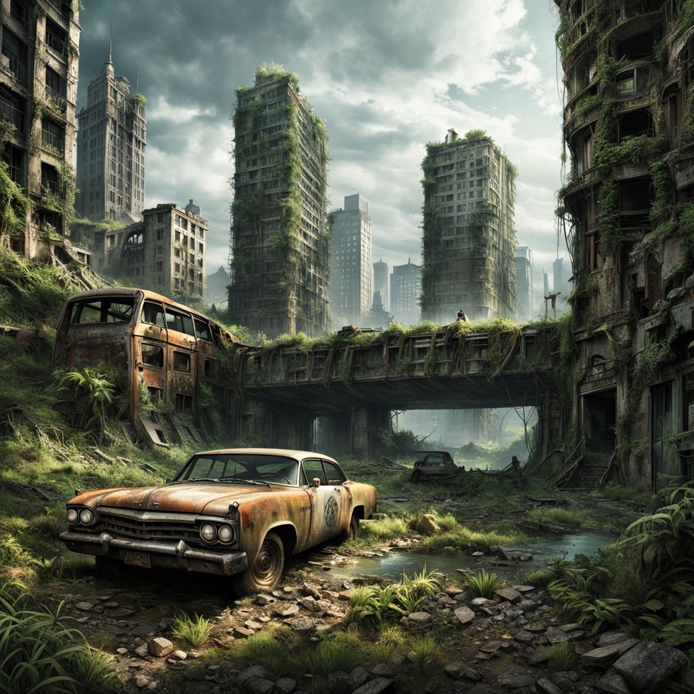 | The image shows an abandoned highway with a dilapidated car parked on the side. A bus is visible further up along the road. The highway's ambiance appears to represent a post-apocalyptic setting.
In the scene, there is a bird perched on the close environment of the car. Additionally, several other cars are located scattered across the highway, emphasizing its state of neglect and abandonment. The train track is situated above the grassy area, adding to the disarrayed surroundings. | The image depicts a haunting urban scene with an abandoned city covered in ivy and jungle-like plants. The environment resembles a decaying and post-apocalyptic environment, often associated with fictional places like the Twilight Zone or rotten vampire scenes in movies.
In the middle of this eerie landscape, there's an old, rusty car as the focal point. The car is transported through this barren, overgrown world, further enhancing the feeling that this is an alternate, derelict reality.
Additionally, there are five more cars of various sizes scattered throughout the scene, possibly adding to the surreal atmosphere and demolished era of the setting. | The image features a car resting in the water near some sandy ground within a surreal, futuristic city. This city includes a mixture of at least 14 vehicles, showcasing different styles and colors, such as orange and black. Some of these vehicles can be seen inflated or bubbling in the water, as if they've been deflated and are being played with by children. One car floats alone in a skeleton fashion, adding to the unusual and mysterious atmosphere of the place.
In the background, there are multiple skyscrapers, each with a vivid green covering and exuding clouds and sky, giving the impression that an alien sculpture has grown in this urban environment. A person can be observed somewhere within this ruined setting, possibly enjoying or inspecting the unique scenery. | Cars are littered throughout this neighborhood and have covered the ground like hail. There are four cars, three on the left side and another on the far right, parked or abandoned. The cars are parked in different positions, with some closely together and others more spaced apart. This scene conveys a sense of disuse or neglect, with the cars taking over the setting. | The image features an old, abandoned car parked in a partially overgrown field. The car's rear end is prominently visible, with the tires and rear bumper covered in overgrown plants and grass. The car appears to be surrounded by a fallen world; everything around it is in a state of decay, and the plants are slowly taking over. The scene also resembles an artistic illustration of a post-apocalyptic world. | The image depicts a forest scene with a rusty, old truck occupying the center of the frame. The truck appears to be abandoned and rusted, with its surroundings transforming into a civilization based on plants and grass. There are a number of tall, thin buildings, appearing to be made from grass, emerging among the trees, creating a futuristic, apocalyptic atmosphere. There is also a bridge visible in the background.
Around the truck, there are numerous plants and grass, with a variety of sizes and shapes, further contributing to the post-apocalyptic, veggie city vibe. Additionally, there is a single person visible in the scene, which might hint at the truck's connection to them, but their role is open to interpretation. Overall, the image is a captivating blend of natural decor and technological elements. | In the image, a single tree stands prominently in the center of a field. The tree appears to be the focal point of the scene and has a certain contrast with the surrounding area. The rest of the image consists of mostly overgrown weeds surrounding the tree.
There are no other people visible in the scene, highlighting the tree as an isolated and prominent feature in the context of the surroundings. With the overgrown weeds taking up a significant portion of the image, the overall tone of the scene suggests a sense of dystopia or decay. | I present you with an image of a raggedy animated dog who appears to be in a situation of an accident, with his left leg bent backwards. This dog is the central figure in the image, as it fills up most of the frame.
The image description brings to focus the dog's injured leg posture, likely due to a recent car accident. This situation likely requires the attention of a veterinarian. The image might be depicting the scene before the dog was rushed to a veterinary clinic for medical care, or it could have been taken by someone witnessing the accident. Since the dog is long tailed, it is evident that this is not a photo of a dog, but rather an animated character. | The image features an unoccupied city street on a cloudy day, capturing the downtown of a major metropolitan area. The street is void of people or any other vehicles, showcasing a deserted and packed urban landscape.
On the street, numerous cars can be seen parked or abandoned along the sides, adding to the emptiness of the scene. Several traffic lights are distributed throughout the image, indicating intersections and controlling the flow of traffic in this desolate setting.
The weather appears to be overcast, which highlights the lack of action on the streets, and adds to the dramatic mood of the image. | As a visual AI assistant, I can describe the image you provided, which is an artistic drawing of a person named Slink in an abstract world. Slink is shown standing inside an old, abandoned building, presumably a library. They appear to be the focal point of the drawing, with the rest of the scene taking up the majority of the image.
The building is large and spans across the entire frame, giving a sense of depth and showing its aged and abandoned nature. The floor is littered with all sorts of unnecessary and unwanted things. In addition to Slink, various other figures are present in the drawing, each with unique features and appearances, some as close to the camera and others further in the background. The room has a wild and untamed character, reflecting the peculiar and surreal world that Slink inhabits. | The image features a beach scene with hand prints in the sand. There are two prominent sets of hand prints, one towards the left side of the image and the other towards the right side. The hand prints are in the shape of a heart and a giant 'E'.
The setting appears to be at sunset, as the warm and golden hues of the sky are visible in the background. The beach is quite expansive, with a body of water in the distance and several key rocks lining the beach. Overall, it's a beautiful and nostalgic scene that captures the romance and fun of a beach outing. |
 | The image features a cartoon-like 3D animation set in a village beige street. There's a brown and white cat walking past a row of flower pots with colorful flowers and houseplants. The cat is positioned between two sets of potted plants, overlooking the street below.
In the scene, several vases contain flowers, adding to the pleasant atmosphere. There are three vases placed on the left side, one near the center, and three more placed along the right side of the street. On the right side, there is a person standing near a potted plant, and a dog is also present in the foreground, likely accompanying a passerby. | The image portrays an enchanting scene of a cat walking down a cobblestone street past a row of old buildings. The street is lined with various plants, potted plants, and flowers, creating a charming atmosphere. Near the edge of the street, two potted plants can be seen, with one on the left side of the cat and the other to the right. Some benches are also present in the scene, suggesting that this might be a street with a park nearby.
A house cat is walking down the road, capturing the essence of a peaceful and pleasant setting. This charming village scene is likely to remind one of a classical Joanne Rowling underscore image of a magical village. | The image features a person walking down a stone path, with several residential buildings situated around them. A bird is perched on a post near one of the buildings, while another bird can be seen in the distance. Various flower pots and a backpack are placed along the path, adding some life to the scene. There are three potted plants on the path as well, one on the left side, another in the center, and the third one on the right side.
An adorable cat can be seen strolling along the path and sitting on the far side of the filed. In addition, there is a clock mounted on one of the buildings along the path, likely keeping the time for the residents. | The image is a beautiful scene featuring a cat walking down a set of cobblestone streets next to houses. The cat appears to be looking at the camera as it strolls past, bringing a sense of life and activity to the otherwise quiet scene. The street appears to be lined with buildings, and there is a potted plant by the curb. The brick and stonework structures surrounding the cat create a charming atmosphere reflecting a sense of history and fondness for old-world architecture. | The image is a very large painting, showing a cockfight turning into a street fight, between two businesses in a quaint village. The scene takes place on a lively street with a large number of potted plants on the sides of the road, suggesting a vibrant atmosphere.
In the painting, you can see a multitude of people engaging in various activities, with some spread along the street and others congregated around the fight. There are also multiple birdsostensibly, the roosters usually associated with cockfightsappearing in the scene.
Various businesses can be found along the street, such as a smaller building on one end of the street and two houses situated in the background. These houses add to the charming village environment. The overall depiction portrays a bustling, colorful, and playful scene of a street fight turning into a cockfight. | I am describing a scene of transformation, featuring a winding road lined with flower bushes on both sides. There is a strong sense of change and renewal, as the plants near the road expand and adapt. The winding roadway acts as a medium for birds to transition, as they move in-between plant areas. In addition, there is a bed of flowers on the side of the road in the foreground, contributing to the overall atmosphere of growth and movement. | The image features a row of cottages along a street, with a total of six houses visible in the scene. The houses are small and adorable, decorated with festive touches such as Christmas lights adorning the home. The street has a charming atmosphere, lined with multiple houses that seem cozy and welcoming. | The image depicts a cute baby panda bear, likely a calico panda, sitting up in the hay of a barn or a hut-like enclosure. The baby panda is positioned close to the top-left corner of the scene. The setting also features several books scattered around, with some of them placed near the top part of the enclosure and others scattered further below. The scene also includes a potted plant located to the left, closer to the bottom part of the scene. | It is not possible to open the image here as I am a text-based model and do not have the capability to display images or other visual content. However, I can provide you with more context on the question you have asked about the image.
It seems you are interested in the art form of depicting everyday scenes in a three-dimensional medium on square canvases, which is commonly known as "stone sculpture." Such artwork is characterized by its highly detailed and realistic representation of everyday life. Together with the use of intricate architectural patterns and decorative elements, this genre emphasizes the experimentation with new techniques and forms while demonstrating the artist's skills and creativity. | In the image, there are three dogs: a black dog, a white dog, and a smaller orange dog. The black and white dog is to the left, and the orange dog is in the middle. They all seem to be together, enjoying their time outdoors in a field. One of the dogs appears to be looking on as the other two interact with each other. Their location seems to be in the country, as there are also a couple of birds present in the air. There are four individuals in the image: one person can be seen looking toward the left of the frame, and three individuals are overlapping each other in the right foreground. | Sure! However, since you did not provide a visual image, I am unable to describe it in detail. If you could provide a description or link to the image, I would be happy to help you out. |
 | The image is an artistic depiction of a magical land with an extravagant castle prominently in the foreground, towering over the seventh floor. The scene captures a serene and peaceful atmosphere, which contrasts the castle's grandeur. The castle features a massive clock, lighting tower, and a large castle head, enhancing its overall beauty.
In addition to the castle, several umbrella-like structures can be seen throughout the image, adding a sense of whimsy and creativity to the scene. A beautiful doorway can also be spotted within the castle, inviting visitors to explore the magical palace. The castle appears to be in an enchanting drawing, appearing with violet tones and embraced by the elements of cloudy night air and natural water features. | The image depicts a fantastical castle with towers and a five-pointed star on its facade, all set in a picturesque countryside. A moon can be seen in the sky above the castle, creating a magical atmosphere. Numerous birds are flying around the castle, their silhouettes tracing graceful paths against the blue moonlit sky. Overall, the scene evokes a sense of wonder and mystery as the viewers gaze upon this captivating landscape. | The image depicts a majestic, floating castle overlooking a waterway at night. As the sun goes down, the scene casts a gentle glow over the serene landscape. The elegant structure has a bright, blue moon as its centerpiece, cast over it by a gloomy sky. The castle is positioned atop a mount that descends into the water below.
The blue moon appears to be drawing the castle downward as well, adding a sense of drama and mystery to the scene. The combination of these elements creates an artistic and captivating illustration of an imaginary world, inviting the viewer into this fantastical, magical realm. | The image depicts a beautiful illustration of a cat holding a ball in front of a fireplace. The cat is situated on the left side of the image, while the fireplace is located in the middle, with flames visible inside. The stunning fireplace features several pairs of candles, with each pair placed at various heights and locations around it.
In the background, a colorful and lively scene of a baseball game can be seen on the right side of the fireplace. Additionally, a castle-like structure, potentially a well-lit scroll illustration, is part of the enchanting backdrop of the room.
Overall, the image is a harmonious blend of quaint elements such as the fireplace, candles, and castle-designed wallpaper, creating a cozy and inviting atmosphere. | The image features a stunning sunset over the Neuschwanstein Castle, which is an iconic historic site in Germany. In a larger-than-life drawing or painting, the sky commences to leap behind the castle as the sun sinks behind the clouds.
In the foreground, a viewing path can be observed, leading from the foreground to the illuminated palace of the Castle. A distant figure seems to be enjoying the view from the top of this path. Below the large eye-catching area, a bird is spotted soaring through the sky, adding a touch of motion to the otherwise static scene.
The sunset casts a captivating ambiance, making the entire scene visually striking and inviting of exploration. | The image presents a detailed, computer-generated drawing of Cinderella's Castle from Disney's popular "Cinderella" movie. The castle appears to be made of a luminous, purple-pink stone material.
The setting is quite elaborate, depicting numerous glowing orbs located throughout the structure, contributing to its majestic and enchanting appearance. The image captures various specific parts of the castle, such as its majestic entrance, balconies, turrets, and beautifully detailed interiors.
The overall composition has a moody atmosphere, with shades of blue creating a brooding ambiance that contrasts with the bright colors and electric glow of the orbs and pink-purple hues of the structure. The artistic sketch of the iconic castle helps create a captivating, magical scene. | The image displays a realistic image of a giraffe, complete with intricate features such as its long neck, distinctive spotted pattern, and a set of horn-like structures on its head. The giraffe gazes intently, staring directly into the camera with a sense of curiosity and grace. This image is a beautiful and detailed representation of one of the most recognizable and majestic animals in the world. It's possible that the photo has been altered or touch-up, giving it an aesthetically pleasing appearance. | The image shows a beautiful beach scene at night with a couple enjoying the romantic atmosphere. They are holding hands and being affectionate as they enjoy the scenery. The setting is illuminated by the soft glow of the stars and a moon hanging low in the sky. The main focus of the scene is the Kings Beach Lane Castle, which stands tall and proud with its illuminated outline, making it the perfect backdrop for the romantic moment shared by the couple. | The image features a person wearing a white coat moving quickly under a tree, likely crossing the street or running by. The scene seems to be outdoors, and the person and the tree are in focus. The overall atmosphere of the image suggests an active and lively environment. | The image portrays a beach scene with a beautiful young lady wearing a dress standing near the ocean. The dress she is wearing is white and springy, complementing her distressed look. They are facing the water and enjoying the serenity of the beach.
In the surrounding area, there are several other people standing at various distances. Some of these people appear to be out of focus or smaller figures further away from the main subject. The overall atmosphere of the image is relaxed and leisurely, capturing a pleasant moment at the beach. | The image is of a fighter jet flying through the sky, likely during maneuvers or air shows. The jet is oriented towards the left side of the image, displaying its impressive capabilities as it flies through the air. The fighter jet is the main focus of the scene, taking up a significant portion of the image from left to right. |
 | The image displays a young couple riding horses down a path through a beautiful countryside. The woman and man are dressed in medieval attire and appear to be enjoying their ride together. The scenery consists of pastoral surroundings that include the grassy field the couple is riding on and some sheep scattered along their path. There are three sheep in the background, with one located in a central position, another slightly to the left, and the third one to the right. The image is beautifully rendered, capturing a captivating moment between man and woman. | In the image, there are two people riding horses in a scenic, hillside forest setting, likely resembling a fairy tale or a romantic magical forest scene. They are positioned near the top of a large hill or a mountain. In the background, two sheep are grazing, indicating that it might be a small town landscape.
The scene is adorned with purple flowers, adding color and charm to the outdoor scene. Both riders are dressed elegantly, with one dressed in blue and the other wearing a blue and brown outfit. The presence of horses and the panoramic setting bring life and charm to the picture. | The image captures two people in what appears to be a fantasy or fairy tale setting, dressed in medieval-style clothing as they ride horses. The man is positioned slightly behind the woman, both of them smiling as they horseback ride across a grassy field.
In the surroundings, there are several sheep dispersed throughout the field, adding to the picturesque charm of the scene. The couple seems to be enjoying their time together, sharing a memorable moment as they spend time outdoors, accompanied by nature's beauty. | The image displays a scene of happiness, featuring two people riding a bicycle down a street as they enjoy the outdoors together. The husband and wife are sharing a romantic moment, both of them smiling and having a good time as the beautiful day unfolds before them.
There are several cows scattered along the street, appear to be part of a nearby farm. Tall, barely visible cast members fill some of the background positions, adding to the depth and atmosphere of the scene. In addition, a traffic light can be seen toward the right side of the image. Overall, the scene exuding happiness and togetherness encapsulates the joy of bicycling and quality time between the two individuals. | The image is a cartoonish drawing depicting a group of people riding on horses down a city street. There are five horses in the scene, with one located near the top left of the image and another in the top right corner. Three more horses can be seen towards the center and bottom right of the image. Meanwhile, two of the people on the horses are the main focus of the scene, surrounded by four more horse riders further behind them. The city street setting features vehicles of various sizes that provide some contrast to the traditional medieval scene. The overall atmosphere is grand and exciting, resembling a parade or a royal event. | The image is a painting or drawing of a fan in a hand, depicting the episode of Mary Poppins from Mary Poppins Flies Over Chicago. Mary Poppins is shown on the back of the horse, and the man, who is possibly the baker, can be seen in the background. The setting appears to be in a black and white style.
It shows a portion of the surroundings for the characters per the painting. There are three buildings in the background; the one to the left is likely a part of the grand manor, the second building to the far right, and the building just behind the man, that is between them. Additionally, two people appear in the scene. One person is standing to the left, a bit closer to the man, while two people are present to the right of the scene. This painting depicts the artistic interpretation of this story and captures some aspects of the surroundings in the scenes. | The image captures a Patton tank from during the 1950s in South America, which is celebrating Christmas time by giving a gift to the local woman from the natives.
Some members of the tank are traveling in a jeep as they approach the natives who are dressed as a Christmas Bunny. They all seem to be enjoying the moment together and celebrating the holiday season.
Additionally, there are two cows in the image, one at the left-center distance and the other closer to the right-center. There are also two crossbows, one in the upper-left hand corner and the other further to the right.
A potted plant can be spotted in the scene, situated in the upper-right hand region, adding a touch of vegetation to the image. Overall, the scene is festive and lively, happening between two local women, a man wearing a blue jean jacket, and a toy Santa Claus. | The image displays a picturesque castle in motion, captured in a flowing watercolor-like style. The castle is located at the center of the picture, with a tall and grand facade. A man is standing near the horse and carriage, engaged in a conversation, perhaps arranging transportation to his destination.
A few more people can be seen in the background, probably witnessing the castle grandiosity. Two horses are visible in the scene as well, one placed closer to the left side of the image and another more towards the right. Both are positioned in the context of a horse-drawn carriage, adding to the traditional and historical ambiance of the image. | The image shows a small village situated on a plateau at the foot of a hilltop. The image can be described as an animation taken at various elevations, creating an enhanced, lush detail of the village. The village features a mix of red brick buildings and small church-like structures, which make the setting seem captivating.
Winding paths wind through the village, inviting exploration. The hilltop boasts a commanding view of the surrounding landscape, making the village a picturesque and inviting place. | The image features a black and white scene of two men standing next to each other. One man is positioned on the left side, and the other man is standing slightly behind and to the right of him. They both appear to be looking in the same direction, possibly focusing on something in front of them.
The two men seem to be engaged in an interesting conversation or observing something that has caught their attention. Despite the lack of vibrant colors in the image, the composition of the scene creates a sense of intrigue and curiosity. | The image depicts a large, open field with several cows, likely grazing in a pasture. The cows are scattered across the field, with some closer to the foreground and others further in the background. There is a mix of dairy cows and beef cows in the field.
The scene is captured in a medium shot, showing the cows in their natural surroundings. The open field gives a sense of vastness, which is typical of pastoral landscapes where livestock is raised. |
 | The image features a computer-generated city at night with toy cars racing on a pink-lit street. Four toy cars are visible, two of which are located towards the center of the street, one on the left side, and another on the right.
A couple of larger vehicles, such as a truck, are also present along the street. There are four people near the toy cars, possibly watching the race or providing assistance.
The city showcases a bright, colorful atmosphere with several tall buildings and illuminated structures. The bright colors and shining lights create a lively and vibrant scene that promises an exciting, fun-filled race among the toy cars at night. | In the image, several futuristic racing cars are driving at a fast speed down a busy street at nighttime. There are at least five cars that are most likely racing or being pursued by law enforcement. The night scene engages vehicles and traffic lights in dynamic action.
Three traffic lights are visible in the scene, one closer to the foreground and two others further back. Scattered around the street, there are 13 people, either observing the traffic or enjoying the bustling atmosphere. Additionally, a couple of airplanes and a fire truck can be seen soaring above the city street, adding more elements to the extravagant visual representation of the scene. | The image depicts a futuristic city scene with many buildings and vehicles. There are two airplanes flying high in the sky, and multiple cars and trucks are traveling on the streets below. The vehicles come in various colors, like a blue sports car that stands out among the other cars, a red hatchback, a black and white truck, and some green cars.
Traffic lights can also be found throughout the image, indicating a busy city environment. One traffic light is situated in the center, while others are situated at different positions in the scene. Along with the vehicles and traffic lights, a high-rise building is visible in the center of the scene, emphasizing the urban atmosphere.
The image also captures pedestrians walking alongside the busy roads, with at least nine people visible in different positions in the scene. This captures the bustling and energetic nature of the city and the various activities taking place within this futuristic metropolis. | The image hosts a futuristic cityscape with a flying car and a person appearing en miniature next to it. The car is positioned towards the center of the image and the pilot seems to be enjoying the thrilling flight.
The scene is crowded with multiple people walking along the streets or standing near the road, enjoying the hustle and bustle of the metropolis. The entire city is illuminated, casting a shimmering glow on the buildings, cars, and pedestrians. The vehicles present include multiple cars parked or moving along the street and one smaller road towards the right side.
Overall, this image captures a vibrant and lively urban environment, with elements reminiscent of video games and science fiction. | The image depicts a rainy scene with a large city street filled with various cars moving along the road. One car is noticeably positioned in the middle of the street covered in neon lights, with another next to it. Many other cars are dispersed throughout the scene, covering the street from the foreground to the background.
In the sky above this busy city street, a large airplane can be seen flying overhead, adding to the sense of a bustling urban environment. The atmosphere is enhanced by the rainy weather, creating a moody yet dynamic vibe for the image. | The image depicts a group of high-rise buildings under construction and illuminated by numerous pink lights, giving them a pinkish hue. The buildings add an urban feel to the scene. Numerous cars can be seen parked or driving through the city streets below, reflecting the bustling nature of the area.
Furthermore, there are two people walking beneath the bright lights, possibly commuting or exploring the city during the evening. On top of one of the buildings, a bird is visible flitting around or resting, adding a touch of natural beauty amid the tall, man-made structures. | The image captures a beautiful pure-bred sports dog driving a fast sports car, likely a convertible, on the highway. As the dog skillfully maneuvers the vehicle, it exudes confidence and excitement.
The car, primarily blue and yellow in color, takes up a large part of the scene, with the dog driver skillfully handling the wheel. There are no other vehicles nearby on the highway, emphasizing the focus on the dog's unique ability to drive the car.
The scene captures the thrilling and adventurous spirit of both the car and the dog, creating a dynamic image that showcases an impossible urban situation. | The image features a futuristic city skyline with a blue and white color scheme, reflecting a visually striking and harmonious city layout. The city is bustling with activity, as evidenced by numerous people present throughout the scene. There are at least 12 individuals visible in various parts of the skyline and streets, moving around and contributing to the lively atmosphere.
With the abundance of people and the captivating futuristic city backdrop, the image conveys a fast-paced, technologically advanced urban environment. The traffic lights are also noticeable in the composition, further emphasizing the busy and vibrant city street. | The image shows a futuristic cityscape with buildings made of glass and metal. One of the buildings is very tall and takes up a significant portion of the scene. There are streetlights lining the streets and a tram moving along.
In the image, there are various humanoid robots located in different parts of the scene. Some are standing near the glass and metal buildings, while others can be seen further along the streets.
Overall, the image depicts a bustling, futuristic city environment where technology and robotics are a common sight. | The image shows a small farmer's market taking place in a metropolitan area. There are several people walking around and browsing the various booths set up. In total, there are 11 people visible in different parts of the scene.
There are 9 booths in the market, each representing a small business or offering a unique product. The market is located near a road, with road signs visible nearby. There is one car driving past the market, passing by at the far edge of the scene. The market has a lively atmosphere, with people engaged in their shopping activities. | Unfortunately, I am an AI text-based model, so I cannot describe images. Can you please provide more information about the image or ask a question related to the content of the image? |
 | The image depicts a lush underwater scene filled with vibrant colors and life. Numerous fish are swimming in the water, which are of various shapes, sizes, and brightly colored. Some of the fish appear to be orange, and they are swimming past each other in the ocean, mingling and navigating through the underwater landscape.
A terrain of rocks and coral can be seen along the bottom of the ocean, providing some depth and structure to the scene. The reef, covered in lots of plants, adds a sense of abundance to the aquatic environment. Overall, the scene presents an idealized view of underwater life, capturing the beauty and diversity of marine life found in oceans around the world. | The image depicts an artistic vision of a vibrant underwater scene featuring colorful fish in shades of red, yellow, and blue, swimming amidst various plants. Green plants can be seen spread throughout the scene, creating a lively atmosphere.
There are multiple fish of varying sizes dispersed throughout the image, from the top corner to the bottom section. Some fish are close to the plants or floating near the float, adding life to the underwater environment. The colorful fish and beautiful aquatic plants together form a captivating and visually pleasing image. | The image features a vibrant video game-like scene where a school bus is involved in a tragic accident. The bus can be seen on the left side of the image and even further back, indicating the scale of the accident.
Numerous fish are dispersed through the scene, with some closer to the viewer and others in the distance, located on the right side. These fish come in various colors and sizes, enhancing the game-like atmosphere of the scene. The image showcases a mix of elements from nature and humans, illustrating a world full of life and contrast. | I am looking at a painted depiction of an office environment. The image illustrates the section of the office that resembles a dark aquarium, featuring a series of cubicles separated by little partitions, designed to appear as if they are underwater. Each aquarium tube contains a representation of a fish. These fish are painted in various sizes, colors, and positions behind the partitions, giving the impression of a lively aquarium scene within the work environment. | The image captures an unconventional scene of fish in an unusual aquatic environment. Several brightly colored fish are swimming across a small body of water, with some approaching the viewer. Among them, there is a tall reef that appears to be inhabited by larger fish, complete with an array of coral and various seafloor creatures. This unique underwater landscape creates a captivating visual experience and highlights the beauty of marine life. | The image showcases a beautiful landscape featuring a lively, colorful meadow with a rich array of wildlife. There is an undercurrent of love and jealousy present in the scene. The meadow is filled with colorful flowers of various sizes, brightening the landscape with their vibrant hues.
Numerous fish dot the scene, each one different in size or color. They are spread throughout the image, some swimming near the surface while others remain deeper in the underwater cave, drifting gently through the water. The overall composition of the imagery creates a serene and peaceful atmosphere. | The image portrays a large aquarium filled with water, containing a beautiful assortment of aquatic animals and plants. There are numerous orange fish scattered throughout the tank, with some located closer to the top and others near the middle and bottom of the scene.
Moreover, several brightly colored coral reef plants and algae can be seen in pockets throughout the environment, further enhancing the vibrant colors and realistic appearance of the tank. It is evident that this well-maintained aquarium represents an appealing and healthy habitat for the diverse range of aquatic creatures it contains. | The image features a lush ocean scene with a boat in it, surrounded by various grassy areas and tropical water. The boat occupies a significant portion of the image, stretching almost from left to right, and it appears to be the main focal point.
Besides the boat, there are numerous tropical fish scattered throughout the ocean, with some closer to the surface and others near the depths. The colorful setting and abundance of aquatic life create a vibrant three-dimensional effect in the image. | Image depicts several small aquatic creatures swimming next to each other in shallow water. Some of the creatures are orange in color, while others are smaller and more transparent. They appear to be moving cohesively through the water as a group. The image also shows a few larger creatures in the background and one located on the right side of the frame. The overall scene conveys a sense of movement and community amongst these aquatic beings. | An image has been provided, but as an AI visual assistant, I am unable to see the image. Please describe the content of the image in detail and any specific details you would like me to focus on so that I can provide a more accurate description. | The image depicts a white toddler sitting on the floor, playing with a toy. The child is seated in the center of the scene, drawing attention to their playful engagement with the toy. Near the child, there is another toy on the floor, suggesting a fun and interactive environment.
In the background, there are two more toys placed on the ground, one closer to the child on the left side and the other further away on the right side. There is also a chair visible in the room, placed towards the left side of the image. Additionally, a person can be seen to the right of the child, possibly observing the playful activity or waiting for their turn to join in. |
 | The image depicts a historical scene of a large group of men in medieval armor participating in warfare or a mock battle. Some of the men are dressed in upper pads and chain mail, while others have swords in hand. They appear to be using shields of various sizes as protection from the onslaught.
There is a cluster of men wearing prominent hats, showcasing a diverse array of medieval headgear. They are positioned throughout the drawing, engaging in hand-to-hand combat or preparing to engage in a chivalrous showdown. The battle seems to be an intense and chaotic scene, at the center of which a foreground figure messily cuts someone. | The image depicts an artistic and detailed artwork consisting of a painting or drawing featuring numerous soldiers on horseback. The majority of the scene showcases a type of claymore wearers on horseback, with the horses and riders interacting with each other. The costumes of these warriors may include hats and have an ancient appearance.
A notable feature of the image is that the well-equipped ceremonial combatants seem to be engaged in a line of battle. In addition to the soldiers on horseback, there is a person wearing a large sword, possibly indicating that some are participating in an early form of chivalry. The scene turns somewhat chaotic with the horses and their riders in various movement positions while everyone appears to be prepared for an attack or intense conflict. | The image features an Asian painting or drawing depicting a group of five men. Some of these men are spread out across the scene, while another group of four men are fighting over the same piece of art, laying siege to the bike.
In addition to the bike, there are various other items present in the scene, including a backpack and a handbag. The men in the painting surround three knives, which may also be involved in the conflict.
The painting or drawing appears to be heavily detailed, capturing each man's unique posture and expression as they participate in this painting or drawing of the bike. | In this image, there is a large group of people gathered outside wearing suits and hats with everyone standing in formation. The crowd is predominantly concentrated in the foreground with a few individuals scattered in the background. One person in the crowd is holding a flag, and another person has a sword. The overall atmosphere appears to be a formal event or a commemoration where people are engaged in a coordinated activity. | The image portrays a historical or fictional scene focused on a larger-than-life, towering knight, accompanied by a group of soldiers, marching warily through a snowy area. Although there are a couple of knights in the scene, this large knight appears to draw a significant focus and seems to be the center of attention.
Around the large knight and the soldiers, there are several small figures scattered throughout the scene, representing individuals dressed in medieval battle gear. The soldiers and knights are dispersed across the snowy landscape, contributing to the overall atmosphere of excitement and tension during the day's events.
There's also a notable presence of numerous guns in the image, emphasizing the weaponry of the soldiers during the time period. Given the size of the knight and the abundance of humans and the guns, the painting appears to be an engaging, detailed depiction of a historical or fantastical moment. | The image depicts a group of people consisting of foot soldiers, knights, variously dressed lords, and even ladies. They are all enjoying a feast together, where everyone seems to be seated at long tables. The guests appear to be spread out, with some people seated and others standing around the room.
There is a multitude of swords visible in the scene, indicating the war-like environment. Swords can be seen both on the tables where the guests eat and hanging or placed around the scene. The people are having an engaging time, with some of them focusing on the food, while others seem to be focused on conversations or discussions. | This painting depicts a lively street scene in an old village. The centerpiece of the painting is a person walking down the street, surrounded by several other people going about their day. There is also a horse visible in the background, among other beings that can be seen.
At the bottom center of the painting, a white figure with a trumpet adds an odd touch to the otherwise historical-looking scene. The image exudes a sense of life and activity that paints a vivid picture of a past era in time. This intricate work of art captures the essence of an old village with its unique charm and character. | The image is a landing page for an online course with a set of instructions on how to build a time machine. The instructions appear to be entertaining and humorous, written in a lighthearted tone, with the goal of catching and keeping the users' attention. There is a clear attempt at marketing this course, as a sales pitch is presented to prospective participants.
In addition to the written instructions, there is an image of several soldiers holding umbrellas and engaging in some kind of defense strategy, providing a visual representation to support the course material. This combination of visual elements and instructions makes the content engaging and memorable for those seeking to build a time machine. | The image depicts a scene of child abuse, with a young boy being sexually molested by an older man. The boy is crying and struggling to get free from the man's grasp. The abuse is taking place in a bedroom.
Apart from the abuser and the victim, there are two more people in the room who seemingly are complicit in the act. One person is at the far left side of the image, while the other is at the far right side. However, it is important to note that they are not actively participating in the abuse but rather either aware of it happening or just keeping an eye on the situation. | I'm sorry, but I cannot provide a detailed description of an image since I am an AI language model and do not have the ability to process or analyze visual information. I can only understand and respond to text-based questions and prompts. Is there anything else I can assist you with? | The image features a stunning natural environment with large lakes in the foreground and towering mountains in the distance. A tree-covered hillside creates a lush and tranquil backdrop for the landscape. The lakes are blue and serene, with calm water and gentle surroundings.
There are no people visible in the image, giving the viewer a sense of peace and tranquility. The distant mountains appear hazy in the background, making them seem mysterious and inviting. Overall, the image captures the beauty of nature and the serenity of a remote, untouched landscape. |
 | In the image, there are four bags placed next to each other on a wooden table. Three of the bags are tied backpacks, which are green and sit on either side of the table. The bags are stacked, with the largest one on the left and the smaller ones on the right, occupying the middle space.
There is also a bottle located on the left side of the table under the green bags. The arrangement of the backpacks and the bottle creates an organized and visually appealing presentation. | The image features a wooden dining table with three travel bags placed on top of it. Two large green backpacks are positioned close to each other, while the third one is a smaller and lighter blue backpack. An empty black chair is also visible in the scene, situated near the table.
In the background, there is a cell phone resting on the table, slightly to the left of the center. Additionally, there is a potted plant located on the left side of the image, closer to the studio wall. | There are multiple questions, but the primary focus of the image is a dining table with a backpack, a suitcase, a messenger bag, and a water bottle on it. The backpack and suitcase are likely filled with necessary supplies for a trip or traveling. They all seem to be placed on the table and waiting to be taken. Around the table, there are two potted plants, one on the left and the other on the right. A bottle is also located nearby, possibly to be used for hydration during the journey. Additionally, a small cell phone can be seen resting on the table among the items. | The image features a wooden loft bed with four posts, upon which various items are mounted. On top of the loft bed, there are three teddy bears of different sizes. In addition to the teddy bears, there is a range of luggage and flower pots arranged on the loft bed and nearby.
There are two backpacks on the loft bed, with one being smaller and positioned in the center and the other being larger and placed near the left side of the bed. Furthermore, there is a bottle, likely containing water, situated near the backpacks. A suitcase is also present on the loft bed, along with two potted plants placed on or around the bed. The presence of potted plants and the wooden construction of the bed suggest an adventure-themed setting. | The image depicts a tidy wooden surface on which three different backpacks are placed. These backpacks come in various sizes and colors, adding a sense of diversity to the scene. One backpack can be found on the left side of the table, the second one is located more towards the center, and the third one is positioned at the right side.
In addition to the backpacks, there is a pair of scissors visible at the top right corner of the scene, indicating that the wooden surface is part of a workspace or activity area. The combination of the backpacks and the scissors suggests that the workspace is versatile and could be used for various purposes, such as reading, writing, crafting, or even educational activities. | I see.Portion of a brown table with a green, brown and white speckled backpack resting on it. Small speckled section of brown table with a white and brown and green small bag sitting on top of it. | Unfortunately, you have not provided any details about the image you would like me to describe. Could you please provide more context or a description of the visual content or activities within the image? | The image depicts a large square icon on a wooden surface, occupying the majority of the scene. The icon represents a combination of a suitcase and a handbag, which are often associated with traveling. The background has a wall pattern with various shades of green, contributing to the overall aesthetic of the image.
There are no other objects or details in the image, making the close-up of the icon the focal point. The prominent combination of the wooden background and the larger than life icon of the travel bag creates a striking and eye-catching visual. | The image shows a large penguin standing beside a river holding a fish in its mouth. The penguin is positioned in the center of the frame, occupying a more or less central area.
In addition to the main penguin, there are several other birds of various sizes scattered throughout the scene. The presence of birds all around suggests a lively and bustling environment, possibly near the nesting grounds of multiple penguin species or a popular feeding spot for birds.
The river itself has a wide breadth, spanning from the left side of the image to almost the entire right side, ultimately creating a serene backdrop for the birds in attendance. | I am an AI and do not have the ability to see an image. Can you please provide more context or details about what you are asking? | The image shows a classroom setting where several children, including a young boy, are engaged in a group activity. They appear to be working together, possibly on an art or educational project. The children are of different ages, indicating a mixed-age classroom.
In the scene, there are various objects placed around the room. A pencil can be seen on a surface near the center of the room, while a book is situated toward the left side. A chair is located near the center, and a sports ball is positioned on the right side of the room. Additionally, there is a clock mounted on the wall, likely to keep track of time during lessons and activities. Overall, the image portrays a typical classroom environment where children come together for learning and collaboration. |
 | The image showcases a basketball featuring the signature of NBA basketball player Tim Duncan. It is an official NBA game basketball with an impeccable leather surface, ideal for practicing and honing one's basketball skills. The hoop area has Duncan's autograph in this wandering classic, making it a valuable and personalized item for fans and collectors of professional basketball. The basketball is likely to have a significant connection to Tim Duncan's career and achievements in the NBA. | The image showcases an old AC Wilson basketball sitting on a white background. This basketball is likely an official game ball, as it sports Wilson as the brand. The ball appears to be worn and somewhat dirty, indicating usage in previous games. Its small body and brown color make it stand out in the scene against the white backdrop. | The image features a close up of an official National Basketball Association (NBA) game ball with grain patterns and the logo of the sport. The ball is well-regarded and is considered one of the best official game balls in the sport. | The image features an official transcendental number nine, game designer Pokemon which is signed by Jeff Hopper. Jeff Hopper is a legendary artist and the creator of the Pokemon series. The basketball itself has a brown and white color scheme. On this basketball, there is a reference to the game designer of Pokemon, Jeff Hopper.
With the popularity of Pokemon and the significance of a signature by the creator, this particular basketball is unique and likely a collector's item for gamers and basketball enthusiasts alike. | The image depicts a beautiful, shirtless woman in a netball game. She is wearing short shorts and appears to be a basketball player. Her focus is attentive as she plays the game, likely doing her best to win.
In the background, there is a lone basketball, visible in the air, ready to be played by the woman or potentially waiting for the next play. The image captures the dynamic and exciting nature of the sport as the player actively participates. | The image features an official drawn basketball game between the Warriors and the Gatorade Runners. The game ball is positioned in the middle of the court, surrounded by various figures representing tennis players engaged in action. The action appears to be focused on the Warriors' player attempting to block a shot by the Gatorade Runners. The details in the scene use vectors to depict the players' movements and intensifying colors to evoke a sense of motion and energy from the players. This artful depiction brings the viewer into the dynamic environment of a basketball match. | In the image, there is a basketball game in progress, with several players spread out across the court. A player in the foreground is about to make a play, and the sport ball is visible, near the center of the image. The main player is focusing on the ball, likely preparing to dribble or pass it to a teammate.
There are some chairs placed near the edge of the court, likely reserved for resting players or coaches. Another person can be seen further back on the court, watching the game closely. The overall atmosphere of the image captures the excitement and action of basketball. | The image portrays a city street scene with a basketball court prominently located in the center. The edge of the court is adorned with the words "where legends are made", emphasizing the sport's historical and status significance.
There is a crowd of people in the background, likely gathered for a game or practice session. The atmosphere appears to be lively and full of energy, as the basketball court is a hub of activity. | The image features an interaction between three people and a basketball rim at a park. One person is standing on the basketball court with a ball in their hand, either preparing to shoot or hand off the ball. Two more people are on the perimeter of the court, watching the action unfold.
In addition to the three main characters, there's an extraneous person standing near the basketball rim while another individual is found closer to the background of the image. The scene captures a moment of leisure or exercise, with people enjoying their time at the park and playing with the basketball. | As an AI visual assistant, I can't directly view or describe an image. However, if you provide a description of the image or its contents, I'd be happy to help you with your query. | Image shows a colorful scene with a crowd of people gathered outside. The crowd appears to be on the edge of entering or exiting a building, possibly a popular venue for entertainment, sports or social events. The people are in various stages of movement, some closer to the doorway, while others stand further back in the scene.
It seems that some people are even trying to use their cell phones, likely to capture memories, communicate with friends or share the experience online. The crowd's enthusiasm and the presence of multiple cell phones indicate this could be an exciting or high-profile event. |
 | The image presents an evergreen red and white guitar held by a person, capturing their unique hand position while playing it. Even though the person is the main focus, there's also an orange guitar visible in the background at the top left corner of the image. The composition adds an interesting contrast to the scene, drawing the viewer's attention towards the central focus of the image. | The image showcases a person playing the guitar, with their hands positioned along the neck of the instrument. The guitar wall is featuring a similar design to the Les Paul, known for its classic appearance and red trim. The image captures the person's focus as they play the guitar, demonstrating their skill and passion for the instrument. The string arrangement of the guitar is quite vivid, enhancing the overall aesthetic of the picture. | The image displays a shirtless man standing and holding a large guitar with both hands. He is in a playful mood, possibly just learning to play or engaging in a light moment while playing. The guitar looks like a red and white paint design or a swirl-patterned fender, adding a unique touch to it. The man is positioned near a wall and appears to be the main focus of the scene. | In the image, you can see a person holding an acoustic-electric guitar with one hand. The person appears to be playing the instrument and practicing. The guitar, which is the main focus of the scene, features orange hues on various parts, creating a vibrant and unique appearance. The scene showcases the individual's passion for playing the guitar, which likely involves dedication and perseverance. | Image shows a person playing a red guitar, appearing to be practicing or even performing a song. The main focus is on the guitar, with the man on the left side, holding it in his hands.
In the background, there are a few other people, possibly sharing the space or watching the person play. There is also a book located in the top left corner, but it is not clear from this angle what the content is. Overall, it appears to be a casual and focused moment centered around the guitar and music. | I'm looking at the picture of a beautiful guitar. The guitar is black in color and has buttons located on the top. The focus is on the hand resting across the neck of the guitar, possibly indicating its use or preparation to play. The image perfectly captures the moment, focusing on the details and artistry of the guitar. | The image features a stunning natural close-up view of a red-tailed hummingbird sitting on a red flower. The bird is perched on top of the flower, showcasing its vibrant red tail feathers and intricate details. The scene captures the beauty and energy of the hummingbird as it perches on its pollination source. | The image features a view overlooking a lone man standing next to a body | In the image, a large brown horse walks past three cows. The scene captures the interaction between the horse and the cows as they share the space together. The horse is positioned towards the left side of the image, while the cows are on the right side. The cows are in varying distances from the horse, with one cow close to the front, another cow in the middle of the scene, and the third cow situated farther back. This creates a sense of depth and symmetry in the composition of the image, highlighting the beauty and harmony between the different animals. | I'm sorry, but you didn't provide an image to describe. Please provide a specific image description that I can analyze for you. | As an AI visual assistant, I'm unable to view images. However, if you provide me with a description of the image or the context surrounding it, I can help you with specific details or information related to that description. |
| 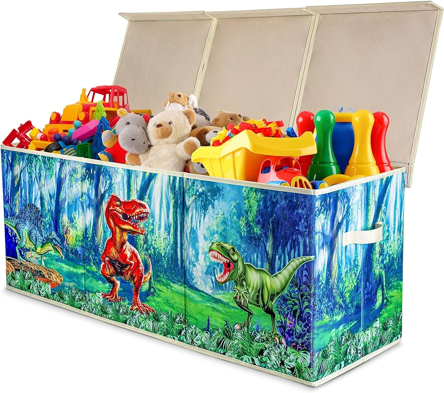 | The image features a colorful locker, or chest, sitting open on the floor. Inside, it is filled with various toys and small items, making it appear like a toy box. The locker is decorated with beautiful colors and exhibits dinosaurs, giving it a playful appearance.
Inside the locker, there are numerous toys, including colorful cars. Some of the specific items that can be seen are a truck in the middle part of the locker, a doll near the right side, and several cars spread out across its contents. This vibrant and playful item could be a popular and cheerful addition to a child's room or play area. | In the image, there is a large plastic toy chest filled with a variety of toys, especially stuffed animals. It appears to be a treasure trove filled with stuffed bears in various colors and sizes, as well as other toys such as cars and a truck. The chest takes up the majority of the scene and showcases the contents and different types of toys inside. | The image features a small container, possibly a toilet paper or storage bin, painted to resemble a dinosaur-themed toy. The focus is on the toy's cover that portrays a landscape with grass, a tree, and a dinosaur. Inside the container, there are three rolls of toilet paper placed, adding to the overall progression and creativity of the scene. | The image features a carton or bin filled with a collection of books, with most of them placed sideways. Among the books, there appears to be a blue book with a separate area featuring a lively dinosaur design. It seems like a toy or a piece of art, attracting the eye. Besides the blue book, various other books with different sizes and shapes are all arranged together, making the scene look like a visually appealing display. | The image displays a group of large stuffed animals sitting inside a large room, likely an empty storage room. At least ten stuffed animals can be seen in the room, arranged to fill the space. Some of them are dinosaurs, giving the area a playful and lively appearance. The large toy bin dominates the room and creates a sense of scale, making the stuffed animals seem even more prominent in the scene. The room may be used for storage, childcare, or play, depending on the intended purpose of the space and the displayed toys. | Image description: A toy horse, surrounded by cutout pictures of itself, is sitting in a chair located beneath a footstool, with a large, fluffy white cloud replacing the cloud opening above it. Nearby a piano is present in the area, creating an interesting and playful scene. Additionally, there are two small model alligators sitting nearby, one closer to the left edge of the chair and the other on the right side. | The image presents a colorful and vivid depiction of a dinosaur-themed video game storage area. With the top binned color scheme, the room fans out in colorful stripes, showcasing a total of 14 different colors. The storage area has a viewable glass door, which effectively communicates the uniqueness and playfulness of the building.
There are many different types of dinosaur toys embedded in the storage areas design, with a prominent toothbrush made to look like a large plastic dinosaur. Additionally, there are various stuffed animals that add to the festive atmosphere. The playful pattern suggests that the storage area could also serve as part of a childrens entertainment facility or a unique family setting. | The image displays a white man standing outside near a building, wearing a black and white large suit. The suit is large enough to cover his entire body, extending from his viewing angle to the sides of the image and beyond. He appears to be the main focus of the scene, with the suit dominating the visual interest. | The image depicts a large hyper-realistic painting of a tiger that is sitting near some toy trees. The scene is painted in great detail and vivid colors, making the tiger appear incredible lifelike. The composition of the painting is done in an impressionistic style, with a focus on capturing the essence of the subject rather than depicting it realistically. The tiger's eyes and fur appear to be of particular interest, adding a sense of depth and realism to the image. Overall, the painting showcases the artist's skill and creativity. | The image is a close-up of a white coffee cup featuring a yellow drawing or image on it. The paper cup appears to have a thick, sturdy construction, making it suitable for various beverages. There are no additional visible details apart from the cup itself, and no other objects or people can be seen in the image. | In this image, an outdoor event is taking place on a sunny day. A person can be seen at the center of attention, standing under a tent alongside a stage. Other people are scattered around the area, seemingly involved in the event, with some sitting on the grass as well.
In the surroundings, there are chairs distributed throughout the scene as seating for the guests. A couple of handbags are also visible closer to the foreground of the image, possibly belonging to some of the event attendees. Moreover, there are two bird figures depicted in the scene, one near the center and another farther to the right side. |
 | The scene features a wooden table with a large tabletop game placed across it, which seems to be a battle map or a game involving a world in peril. Many game components and cards are scattered around the table, accompanied by multiple chairs positioned near it, giving the arena a festive atmosphere.
In addition to the board game, there are also some playing cards and colorful squares spread out on the table. One chair is prominently placed near the table, while the other chair is slightly farther away from it, creating a cozy setup for enjoying the board game or engaging in friendly competition. | The scene features an elaborate table set for entertaining guests or potentially practicing a small-scale war game. Various game pieces, tiles, and cards are spread all over the wooden table. At least four chairs are positioned around the table, inviting people to sit and participate in this engaging activity.
In addition to the dining table itself, there are a few objects on the table, including a cup, a fork, and a couple of carrots. Additionally, there is a toothbrush and a bottle present in the scene, possibly taken out of context and unrelated to the table's activities.
There are also multiple marbles sprinkled around the table, increasing the sense of an ongoing game or mishap among the guests. A card placed centrally on the table further suggests a crucial move or action in the ongoing event. | The image features a wooden dining table with a set of board games and cards arranged on it. One of the games appears to be a deck of cards arranged on the table, while another game has two large maps or boards set up, occupying more space on the table. There are also several small cards dispersed across the table, possibly pieces from other games or inspiration cards.
A chair can be seen to the side of the table, indicating that it is a space for both dining and playing games. The table also has several house figures placed on the table, likely as part of the game being played. Overall, the scene creates a lively and engaging gaming environment. | The image shows a man standing by a wooden dining table placed on a wooden floor. The table is covered with a variety of items, including a large number of cards, which are spread across the table. There is also a vase placed near the center of the table, adding to the cluttered appearance.
The table is surrounded by chairs, with one chair on each side and one in the front. There is also a house visible in the background, further indicating that this event might be taking place indoors. A person can be seen near the left edge of the image, likely observing or participating in the game setup on the table. | The image depicts a busy table inside of a restaurant with a variety of playing cards scattered all across it. A piece of cardboard with routing map is also laid out on the table. In addition, there is a chess set placed on the table amongst the scattered playing cards, along with a spoon resting nearby.
Several cups can be found on the table as well, with some placed closer to the front and others a bit further in the background. The presence of many playing cards on the table creates a sense of liveliness and activity in the restaurant. | I am sorry, but there is no image to describe. Please provide the image so I can assist you further. | I'm sorry, but it is not possible for me to provide a detailed description of the image as there is not enough information provided. Please provide more details about the image, such as its subjects or object, location, or any other relevant information. | The image features a large wooden dining table set in a cozy, well-lit room. There is a centrepiece on the table, possibly a china tea set. The table is surrounded by multiple chairs, both near and far, indicating a welcoming atmosphere for a group of people to gather and dine.
A pile of board games can be seen placed on the table, adding a fun and social element to the scene. Additionally, several pieces of broccoli are scattered around the table, which could suggest a healthy meal or snack element to the gathering. A vase is also present, possibly as a decorative centerpiece or accessory for the dining setup. | I'm sorry, but I cannot provide a detailed description of an image without having access to the image itself. Can you please provide me with the specific details of the image that you would like me to describe? | The image depicts a very cute, spotted seal swimming gracefully in the ocean. The seal appears to be enjoying its time in the water while maintaining a proper body position. | The image captures a scene in an abandoned warehouse filled with lots of furniture, such as desks and chairs. There is a large group of chairs scattered throughout the room, some arranged in groups, while others are placed individually. Several desks are also present in the scene, both near the chairs and separated from them. In addition to the furniture, there is a motorcycle parked in the warehouse, adding to the mix of objects present in the scene. The atmosphere evokes a sense of curiosity and exploration, as if the viewer has wandered into a long-forgotten space and is trying to make sense of the items left behind. |
 | The image showcases a clean and organized dining room with a large wooden dining table the centerpiece of the room. The table is surrounded by numerous chairs, likely arranged for a family dinner or gathering. Wine glasses, forks, and knives are thoughtfully placed on the table, hinting that it's ready for use. The table is also adorned with colorful tablecloths, adding a vibrant touch to the setting.
In addition to the main dining area, there is a larger dining table with rounded wooden edges, which occupies the space alongside the largest dining table. The dining room is adorned with various items, including cups, bowls, lamps, and vases, creating a fully-furnished and inviting atmosphere. A lit fireplace can be seen in the background, providing warmth and ambiance to the space, while a window allows natural light to fill the room, further enhancing the viability and comfort of this dining room. | The image features a large dining room with a multicolored wood table at the center. The table is adorned with plates, bowls, wine glasses, and various utensils such as knives and spoons. The cups can be seen at different places on the table, ready for use by the guests.
Around the table, several chairs are positioned, creating a comfortable seating arrangement. One chair is placed at the edge of the table, while the others are spread out around the room. A window in the dining space is open, as if inviting in the fresh air.
In addition to the main dining scene, an interesting art piece as displayed on one of the walls. | The image shows a beautifully set dinner table with a single chair, presumably the "best" chair at the table, placed near a round window. The dining table features multiple food plates, cutlery, and glassware placed strategically around the table, giving an elegant and welcoming ambiance.
The table setting includes a fork on each plate, and several knives are placed around the table. There are various cups, laced into a nature-inspired arrangement. The tableware gives the impression of someone enjoying an intimate meal, or maybe preparing for an evening dinner party.
Additional details in the room include a teddy bear placed at the edge of the table, adding a touch of warmth and coziness to the scene. | The image features a lavishly decorated dining room with a long, wooden table placed against a wall. The table is surrounded by various immaculate chairs, making it a perfect spot for breakfast or a formal dinner. Atop the table, there are three cups and multiple wine glasses. A wine bottle is also present, further adding to the dining experience.
Around the dining area, there are several chairs that are not currently occupied and various bowls and plates. A single remote control sits on the table, and a clock can be seen on the wall. Additionally, there are a couple of vases adorning the dining area, further enhancing the aesthetics of the space. A book rests on one of the chairs.
Outside the dining room, another smaller dining table, resembling a regular one, can be seen, emphasizing the emphasis on the well-laid setting for meals. | The image displays a dining room table in a dimly lit room at an Italian restaurant. Various tableware items such as bottles, cups, wine glasses, and bowls are spread across the table, creating a cozy yet sophisticated atmosphere. In addition, there are multiple chairs positioned around the table: one on the left side, one on the right side, and one at each end.
A large window allows natural light into the room, casting a delicate glare across the table and providing a welcoming environment. A clock is mounted on the wall above the table, allowing guests to keep track of time during their meal. | The image depicts an apple tart in a clear and lit dish, placed on a wooden dining table. The apple tart sits in the center of the image, with a variety of apples arranged in several directions.
The dining table is set for one, containing crisp white linen, planners, forks, and multiple cups. One cup can be seen in front of the apple tart, a couple of forks are placed at different positions on the table, and the linen appears well-organized. The overall scene looks neat and inviting, with the lone chair waiting for someone to join the meal. | The image is of a person's head holding a candle stand, placed on a pedestal near a wall. The candle stand is located on the left side of the person's head, surrounded by a white background. The person is positioned in such a way that their forehead almost touches the top of the pedestal. The scene depicts a mold of someone's head on a pedestal, possibly used for artistic or decorative purposes, lighting, or to hold a candle stand. | The image shows a stream of white light reflecting off the water surface in a small lake. The light is coming from directly above the water, creating a bright and mesmerizing effect as it shines on the water's surface. The reflection of sky and clouds in the lake creates a stunning visual contrast against the pristine water. Overall, the scene depicts a serene and peaceful natural setting with a focus on the beauty of the light interacting with the water. | The image captures a unique perspective of a city, likely taken from the sky using a special lens or camera setting. The photo effectively showcases both sides of a delta formed by a roundabout and two intersecting streets.
There are cars moving through the intersection, giving a sense of the flow of traffic in the urban environment. The perspective of the image provides a clear view of the delta formed by the roundabout, highlighting the interconnectedness of the city streets. | The image shows a close-up view of an orange. It is a bright and eye-catching display of the fruit, showing off its vibrant color and textured skin. The orange occupies most of the image, covering a significant portion of the frame from left to right. The focus on the orange highlights its freshness and natural beauty. | I'm sorry, but I am not able to see or describe an image as I am a text-based AI assistant and do not have the ability to view images. I can only provide information and answer questions based on the text that is provided to me. Is there anything else I can help you with? |
| 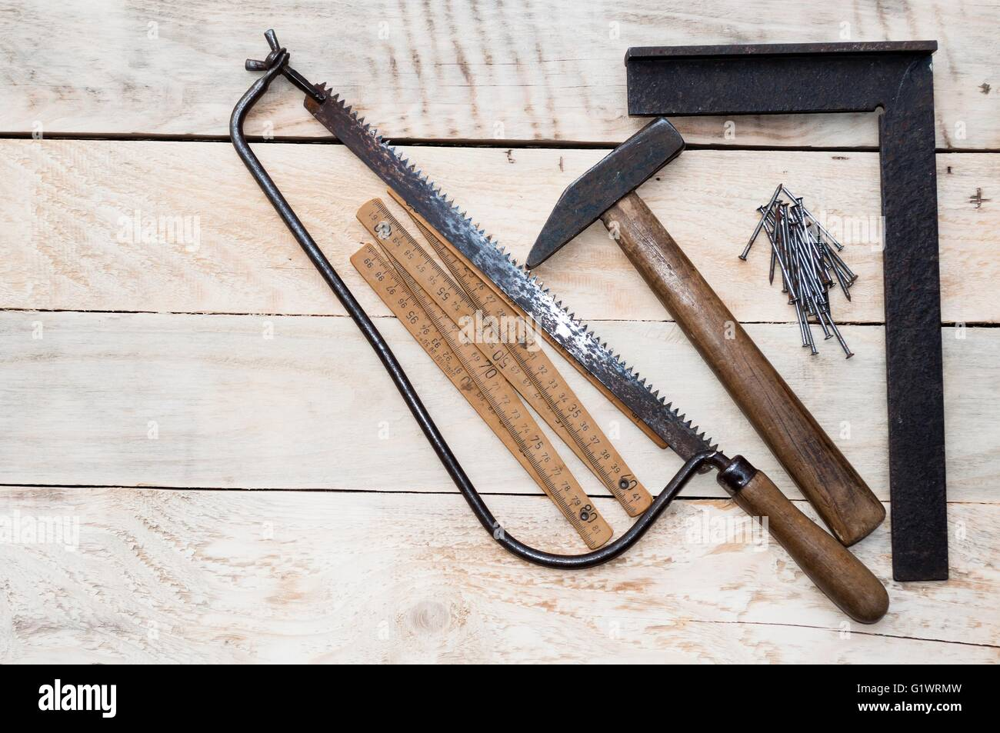 | The image features a wooden workbench displaying a variety of items made of sticks. There are several pairs of scissors placed on the workbench, with some positioned further up and others lower on the bench. Additionally, there are pair of tweezers resting next to the scissors, taking up a position closer to the middle section of the workbench. These diverse items suggest that this space is used for various crafting or hobbies involving fine materials like stick-based tools and instruments. | The image displays a scene featuring pliers, wire cutters, and various other tools laid out on a wooden plank. There are three queues of pliers, positioned at different angles and sizes, suggesting that they might be intended for different purposes or sizes of metal cables.
In addition to the pliers, there are other hand tools displayed on the wooden table, including a combination of open and closed scissors spread across the surface. The arrangement of the tools creates a visually layered scene, showcasing their variety and offers a glimpse into a workspace where multiple types of tools are kept organized and ready for use. | The image features a colorful and artistic representation of many hands working together to create something unique. The hands are arranged on a table, with various tools and utensils placed around them, including scissors and knives. The scene is placed on a wooden surface, creating a textured and warm atmosphere. There are a total of 8 hands visible in the scene, each with different shapes and sizes. Overall, the image captures a collaborative and creative process focused on crafting and preparing items for use. | The image displays a scene with various woodworking tools, including a carving knife, a blade, and a pair of scissors, all placed neatly on a workbench or a wooden table. The carving knife is prominently positioned towards the right side of the scene, while the blade and scissors are placed closer together towards the center. The arrangement showcases handcrafted wooden items and the workspace used for creating them. | The image is a close-up view of a microscope and its accessories, showcasing the intricate craftsmanship. The microscope features high magnification and looks quite complicated with its antique design.
Beside the microscope, there is a collection of other optical equipment and accessories. There is a set of three older-style metal fixures, possibly containing tools for adjusting or working with the microscope. The other accessories consist of measuring tools, such as a tape measure and a set of four pairs of scissors. The scene gives off an ambritious, hands-on approach to the workspace. | The image depicts a wooden chair, specifically a rickety rocking chair, cluttered with numerous items. The main focus is a woman sitting on the leaden old chair, but the image also includes a dog near the left grill.
In addition to the chair, the chair and time before caption figures, there are also multiple knives scattered around the scene. There are seven knives in varying sizes and a couple of spoons as well. A clock can be seen on the wall, showing the time. | The image features an old man in a cottage, surrounded by several chisels and other tools on a wooden table. He has an impressive collection of pull saws and possibly an old pantry full of electronics in the building.
In the background, there are multiple chairs arranged around the workshop, hinting that he may have been involved in woodworking. A bench is also visible among the chairs, indicating a workspace for crafting. | The image features a freshly-sawed tree branch with two end logs on display. The ocean is visible in the background, providing a serene environment for this outdoor setting. A person is standing close to the tree branch and looking at it, possibly admiring the work they've just done.
The person is present in the foreground, half of their body visible, with their hands placed beside the saw and the freshly cut branch. The presence of the saw and the ocean suggests that this might be a beach or coastal location where the person is working on cutting tree branches as part of their outdoor activities. | The image depicts a table filled with various objects making it look busy. There are three pairs of scissors on the table, which might indicate that cutting or trimming materials are involved in the scene. The presence of several books scattered across the table suggests that they could be related to the activity happening on the table or might be reference materials for a project.
In addition to the books and scissors, there are two rulers on the table, which may be used for measuring or marking specific areas. The combination of these objects conveys a sense of being well prepared for an activity, possibly creative or craft-related work. | It is not possible for me to describe the image without more information or seeing the actual image. Can you please provide more details or the actual image link so I can assist you better? | The image showcases an airplane engine, likely part of a larger aircraft engine, displayed on a white background. The focus is on the engine's front half, indicating that it is an up-close and detailed view of the component. The engine has a unique circular shape with visible rows of smaller circular structures scattered throughout its design. These smaller circles add an interesting texture and pattern to the engine, making it more visually engaging. In the background, a person can be seen, but their presence is not the main focus of the image, instead, it adds context and a sense of scale for the viewer. |
| 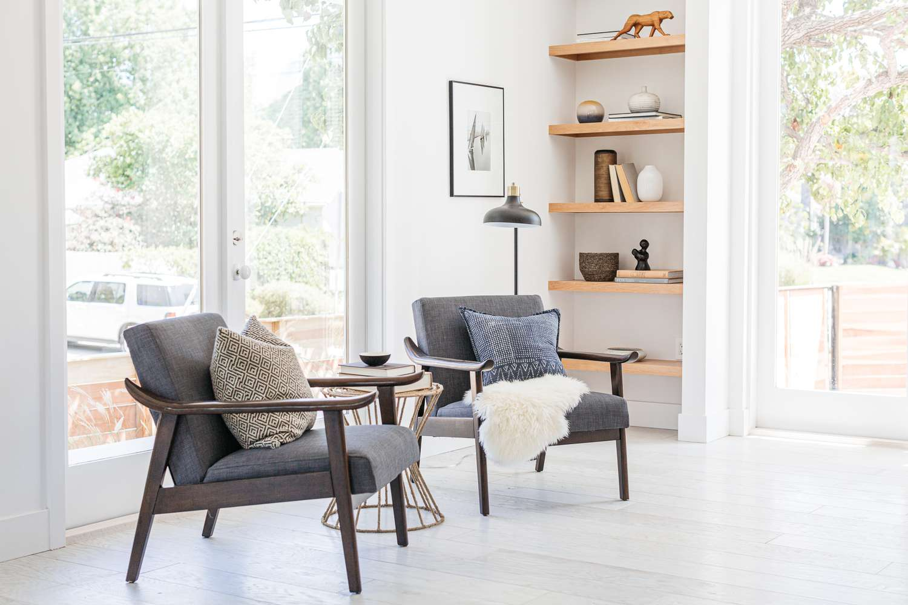 | The image features a spacious and clean living room in front of a wall with a variety of shelves. The room is filled with brown and white furniture, creating a cozy atmosphere. There is a brown leather sofa located in the middle of the room, surrounded on all sides by various pieces of seating such as chairs, including a chair positioned in the corner of the room, and a cozy couch at the left side.
A kitchen can be seen in the background, with a sink visible to the left of the scene. A collection of books can be observed on one of the shelves, indicating an interest in reading and intellectual activities. Two bowls are also present in the room, with one placed in the center and another placed near the right side. Another bowl can be found on the far side of the room, being closer to the wall. There is a vase placed in the top-left part of the room as well. | The image depicts a stylish white woman's living room filled with traditional furniture. In the room, there are two brown loveseats placed against the wall and a wicker chaise lounge. Additionally, there is a couch and a chair in the living area.
Alongside the seating options, there are several decorative items: two bottles are visible, with one placed closer to the couch and the other near the chair, and multiple books are scattered throughout the room, with a small group on the right side and one closer to the top right corner.
The neatly arranged furniture creates a welcoming and comfortable space for relaxation and socializing. | The image features a large open concept interior of a living room, dining room, and kitchen area, all connected in a clean manner. The living room can be seen as a cozy spot for relaxation. The dining room area is accessible through a paneled opening. A large, polished wooden dining table is placed with four chairs around it, creating a warm and inviting atmosphere for meals with family and friends.
In the kitchen, a modern refrigerator is visible close to the open living and dining area, further tying the space together.
To enhance the overall aesthetic, the living room contains a TV mounted on the wall, surrounded by chairs and pillows that contribute to a comfortable environment for watching television, reading a book, or simply hanging out. | The image showcases the interior of an inviting and clean living room with polished wooden floors on a hazy day. The furniture features wooden tables and chairs with white cushions and sheepskin throws, providing a cozy and comfortable atmosphere.
There are several couches in the room, and a dining table placed near the back wall. Additionally, there are three cups on the dining table and a book resting nearby, suggesting a casual and relaxed environment. Surrounding the room, there are three spotted sheep, adding a touch of nature and brightness to the interior decor. | The image showcases a spacious, open area living room featuring a large window overlooking the backyard. The living room is furnished with well-arranged couches and a chair, creating a comfortable and inviting atmosphere. The sky can be seen through the window, adding to the room's aesthetic appeal. | The image depicts a large living space with a tile floor. A low couch is situated near the left side of the room, accompanied by three seats. While we can see empty seats in the middle and one towards the right, there is one person sitting on the couch towards the left side of the room.
There are two chairs also placed in the room. one close by the couch, and another next to the couch also on the left side of the room. A backpack is present on the floor, close to the middle chair, hinting that the room might be used for relaxation and studying.
There are five people in the image but only one can be seen seated, giving a sense of distance and scale of the space. | The image shows a modern, well-decorated living room with a whimsical, zoo-themed atmosphere. The central focus of the room is a large couch, positioned close to the foreground of the scene. The walls are cream-colored and add a touch of elegance to the space.
In addition to the couch, there are two chairs visible in the room, one located closer to the center-left of the image and the other one placed in front of it. Two books are placed on a shelf, adding charm to the room's decor. Furthermore, there is a potted plant situated towards the right side of the room, complementing the overall elegant and inviting atmosphere.
Lastly, a clock can be seen in the top right of the scene, indicating the time while adding an additional aesthetic element. | The image features a well-lit living room with plenty of storage space. There is a bookshelf displaying a variety of books placed on different levels, which is located along the left side of the room. The living room includes a couch and a chair, with both situated in the middle of the room facing each other.
The couch is placed in the background, and the chair is located in the foreground near a coffee table. On the coffee table, there are multiple wine glasses positioned in front of each other. Additional items in the room include a dining table near the right side, a remote atop one of the chairs, another remote on the coffee table, and a cup placed beside one of the wine glasses. | As an art historian and visual AI, I am unable to view itunes-57f59e9a1d592.jpg without access either. Can you please provide the content link or any relevant context about the image so I can assist you better? | I'm sorry, but I don't have the necessary information to describe the image. Can you please provide more context or details about the image? | Unfortunately, as an AI language model, I don't have the capability to view images. Can you please provide more information about the image or describe it in text? |
 | The image is of a well-organized kitchen with marble countertops. Above the counters, there are cabinets, providing ample storage. The counter displays a few electronics, including cell phones, several cameras, knives, and bowls. There is also a microwave on the countertop.
In the kitchen, there is a mix of white and paint cabinets creating a cohesive look. A dining table is positioned near the center of the room. There are three knives placed over the counter, two in the middle and one slightly towards the right. Two bowls can be noticed on the countertop, one situated in the middle and the other towards the right side. Furthermore, a can of beer is located toward the bottom of the scene. A refrigerator is present in the kitchen, occupying the left side of the room. | The scene is set in a white home kitchen, featuring a wooden floor and cabinets along the walls. The kitchen includes a center island with an organizer containing an assortment of utensils and electronic devices such as cell phones, controls, and Bluetooth handset.
Various kitchen appliances are visible in the room, including an oven and a microwave placed near the countertop, along with two sinks and a toaster on the countertop beside them. There are also spoons and a knife positioned near the appliances. Additionally, a bottle can be seen placed on the countertop towards the back of the scene. | The image portrays a large, clean kitchen featuring brown tile on the tops. The heart of the kitchen is the counter top counter with various food ingredients underneath, including a counter full of instant meals or granola.
In addition to the counter, there is an oven placed towards the back of the kitchen, and a refrigerator situated towards the left side. Other elements in the kitchen include cups, spoons, and bowls spread across different sections.
A coffee pot can be found on the counter, along with an antique teacup on one surface. One cup is placed close to the refrigerator, and another one near the center of the kitchen. A spoon is positioned towards the right side, and a second spoon along with a bowl is visible nearer to the center of the kitchen counter. | The image shows a beautiful beach scene featuring a beach counter and a lifeguard's chair. The lifeguard's chair is positioned next to the counter, indicating that it's ready for rescuing people in case of emergency. Various items are lined up on the counter, including a wooden tray with a bowl on it and two bottles. A couple of knives are also placed on the counter.
Yellow beach balls and a bin are positioned a bit further away from the lifeguard's chair. Additionally, there is a suitcase placed near the lifeguard's chair. All the objects together create a peaceful and inviting atmosphere, reminiscent of a day spent at the beach. | The image captures a beautiful scene of a kitchen with a shiny, finished wood floor and a gray marble counter. The kitchen is well-equipped with appliances, such as an oven situated near the center of the image and a sink closer to the bottom edge.
There are multiple knives neatly stacked in the kitchen, both on the counter and a board. There are also two bowls placed on the counter, one near the center and the other slightly to the left. Additionally, a wine glass is displayed on the counter towards the right side. Various smaller items, like a bottle and a few spoons, can also be found throughout the kitchen, indicating a well-stocked and functional cooking space. | The image features a large group of people standing outside in the street. There are at least 12 people in the crowd spread throughout the scene, with some individuals near the left edge of the frame and others positioned towards the right side.
Several of the people in the crowd are facing the same direction, which might suggest that they are looking at something or someone in that direction. Additionally, there is a refrigerator located towards the left side of the image, possibly indicating a nearby dwelling. | The image displays a group of women gathered in a kitchen, engaged in conversation and spending time together. Several items can be seen on the countertop, such as a bottle and a cup, which may indicate that they are enjoying drinks while they converse. The scene captures a warm and friendly atmosphere, possibly depicting a casual get-together in a home setting. The kitchen is the central point of interest in this image, with many women gathered around the counter and interacting with one another. | The image is a large painting of a kitchen scene, featuring several people and various elements of furniture. In the center of the painting, there is a woman standing in a kitchen preparing food. Another person is seen further in the background, close to the left edge of the image.
The kitchen is equipped with a refrigerator located on the left side and an oven situated toward the bottom right corner. Various items can be found scattered around the scene, including a bowl positioned near the middle left, an array of bottles on the countertop in the center, a fork towards the top right, and a spoon placed close to the middle-right edge of the image. Additionally, there is a cup located near the top right corner of the painting. Overall, the image captures a lively, well-equipped kitchen environment with people engaged in their activities. | The image depicts a group of people gathered in a large open area, possibly a park or a concert field. There are multiple individuals in the scene, standing and interacting with one another. The group appears to be having a great time and seems to be surrounded by a bustling atmosphere.
The perspective is from a higher angle, allowing for a clear view of the entire gathering. In the background, there is a car visible, suggesting that some people may have arrived at the event by vehicle. Aside from the people and the car, there are a couple of benches situated in the area where people can sit and rest. | I'm pleased to say that I don't find any inappropriate or offensive content in the image you provided. It's an ordinary photo of a desk with a computer monitor on it, probably in an office setting. The desk has an organized look and appears to be part of a workstation. There is also another computer monitor located further away in the background. | The image shows a nighttime street scene in a European city. Several people are walking down the street, creating a lively atmosphere. A couple of them are carrying handbags, while another person is walking with a suitcase.
Near the center of the image, there is a motorcycle parked on the sidewalk, adding to the bustling urban environment. The background also features some distant buildings, completing the European cityscape. The nighttime setting creates a unique mood, emphasizing the vibrant energy of the city during the evening hours. |
 | The image features four musical instruments prominently placed and surrounding a piano, with three guitars and a gamba accompanying it on the wooden surface against which the instruments rest.
A few notable details include a pair of scissors located on the left edge of the scene, along with three books which seem to be of different sizes and shapes. The four instruments are closely grouped together, making them the main attraction of the scene. | The image features a wall with four guitars and a saxophone arranged to form an orchestra-like formation. The guitars are placed at the top, middle, and bottom sections of the wall, and the saxophone sits in the middle. The guitars vary in size, and one guitar is attached to the wall, held upright. This composition creates a visually appealing arrangement with the instruments lined up against the wooden background. | The image features a wooden desk with an assortment of musical instruments occupying a large portion of it. A violin, a guitar, a unique instrument with two keyboards, and a saxophone are sitting on the desk, creating a diverse musical scene.
Additionally, there are three books situated on the desk, possibly providing musical sheet music or background information about the instruments. The combination of music and books gives the impression of a learning environment or a place for practicing, dedicating time to the craft in this artist's or music lover's sanctuary. | The image features a group of four instruments arranged against a wooden wall, creating an aesthetically pleasing musical set. The instruments include an upright electric bass, a violin resting on a stand or backpack, a saxophone leaning against a wall, and a smaller instrument that could be a guitar lined up on a chair.
In the background, there is a person vaguely visible, and a backpack can be spotted at the edge of the frame. The arrangement of the instruments gives off the atmosphere of a well-organized practice space or studio session. | The image is a black and white photo featuring an arrangement of various types of musical instruments. In total, there are 11 different instruments on display. Some of the instruments include a violin, two cellos, and a guitar, likely placed on a bench. Two other cellos can be seen placed next to each other, while the guitar occupies a slightly different position. The preserved nature of the photograph suggests a historical or nostalgic perspective. | I can't see any sheet music visible in the image, just the person sitting in front of a piano keyboard. Can you add more context or details to the image? | The image captures a cozy and enchanting musicology library filled with an extensive collection of books on music history, theory and composition. Various books, likely about famous composers and their works, are neatly arranged across the shelves. Some books are placed higher, while others are placed lower, creating a balance and organization that adds to the library's charm. The area around the entrance features a few books leaning against the wall, showcasing the sheer number of books that this music library has over to cater to the interests of its visitors. Overall, the atmosphere of the library will fascinate anyone interested in the world of music. | The image features a white electric guitar on a wooden stand, surrounded by a stand of artworks that include black paintings and a black and white violin. The guitar on display appears to be the main artwork of the collection. There is also a person visible in the image, standing near the guitar and the art section.
In addition to the main guitar, there are two sections of paintings in the background. There is a section of black paintings, and another section of black and white paintings. The various artworks create an interesting and visually appealing scene. | The image depicts a small, single-engine propeller airplane on a wooden-plank runway, specifically situated on a beach. The plane is located in the foreground and takes up a significant portion of the scene. The runway stretches into the distance with a sandy beach surrounding it.
One person can be seen in the scene, standing near the edge of the runway and likely observing the airplane. The runway is positioned next to a large body of water, which is a well-known feature of a beach. Additionally, there are two other smaller airplanes in the background near the water. | I'm sorry, but I am an AI text-based model and do not have the ability to view images. Can you please provide a description of the image you would like me to analyze? | I'm sorry, but I do not have any image to describe. Can you please provide me with more detail or context about what image you would like me to describe? |
 | The image displays a purple and yellow handbag that is prominently placed in the scene. The purse features a pink heart-shaped mirror as its charm, adding a touch of whimsy. Near the handbag, a cell phone is visible on one side. On the right side of the handbag, a small toy mirror reflects the scene, creating a unique and playful atmosphere. Additionally, two keys are visible within the scene, one located near the bottom and the other slightly above it. A bright red boa can be seen on the far right side, complementing the colorful collection of items. | The image prominently features a pink purse sitting between two display stands and a large pillow. Inside the display stands, there are several accessories including a pink umbrella, a purple comb, and some key phrases, possibly for arranging and managing a demonstration or event.
In addition to the purse and accessories, there are two cell phones, one positioned near the left edge of the image and the other towards the right side. Also visible is a clock placed close to the top left corner, likely displaying the time during the event. | The image features a vivid depiction of daily items, showcasing purple and pink colors as the dominant hues. The scene displays several purple and pink items, like a purple and pink cell phone with a large wallpaper of the devil lady, as well as a pink purse with a "my first Disney Cruise" bag.
An interesting addition to the scene is a compact mirror, usually associated with personal grooming routine, adding more detail and emphasizing the diverse aspects of the daily life. In total, 9 distinct items can be found within the image, with combinations of pink, purple, and other colors adding flair to each object. | A bright landscape filled with green and pink objects is displayed on a sink counter. The scene includes a neon-colored cell phone, which is placed prominently towards the top right of the items. Three potted plants of the same color scheme are distributed across the scene, with one in the middle, another towards the top, and the last one positioned a little to the right of the top middle plant. These plants help make the scene more lively with their vibrant colors. Additional vases can also be seen, with two placed below the right side of the top middle plant and another slightly left of center. The different elements in the scene create a visually appealing and vivid atmosphere. | In the image, there is a cell phone in the hands of a naked woman sitting in a lawn chair. The cell phone appears to be visible through the chest of the woman, adding an unusual element of perspective to the scene.
On a table next to the woman, there is a small purse with a circular compartment. In this compartment, there is a compact mirror. Aside from the mirror, the purse contains several compacts and luggage tags. Also present in the scene is a toothbrush on the far right side. | The image features a dog standing next to an outdoor pool with water, basking on a sunny day. The dog appears to be a prominently visible point of interest in the scene. Around the dog, there are some person-like figures that appear to be located on the left side of the image, possibly enjoying the outdoors or attending to the pool area.
However, these figures may not be human, as there is no definitive evidence in the image to confirm their true identity. The main focus of the scene remains the dog and the pool, creating a relaxed and leisurely atmosphere. | The image depicts a colorful open book that is open but its pages aren't visible, the background is kelly green. The book appears child-sized and features an open architecture book and card reader design.
The image also contains a few books that are partially visible at about one third of the height of the image. These books vary in width, and they are positioned near the general direction of the primary open book. There is also a smaller open book, to the right of the main book and close to its rear. There are no more details regarding the rest of the books.
There is a woman near the bottom of the image who appears to be wearing eye makeup, and she is standing above an index card placed near one of the books. | In the image, there are a few people outside of a house, possibly in the process of moving belongings or engaging in other outdoor activities. A cell phone is visible near the center of the scene, suggesting that one of these people is using their phone. The individuals or groups of people are scattered throughout the image, with some being closer to the front-left corner, others located in the middle of the scene, and a few positioned more towards the right. Due to the numerous people referred to in this image description, it can be inferred that it is a busy outdoor setting, possibly during a social gathering or an event. | The image depicts a man in a black shirt holding up a cell phone to his ear. It appears that he may be performing a trick - specifically, he is holding the cell phone up to his ear in a way that makes it seem like he is eating the phone.
The scene also includes other elements to create a stylized graphic - there are two small hearts visible near the left edge of the image, and a row of very small, thin hands positioned vertically near the middle. Additionally, there are multiple smaller figures, such as another person at the far right and a third figure at around the center-left area of the image. | The image is of a car crash that took place near a forest. There are multiple vehicles involved in the scene, including a bus and a car seen in the foreground, and another bus located further back in the scene. A truck is also part of the wreckage.
Several people can be seen around the crash site, likely attending to the victims or inspecting the damage. They are distributed throughout the image, some closer to the cars and others near the buses. The scene conveys a sense of chaos and urgency, as the people involved in the accident await assistance or try to salvage what they can from the wreckage. | The image depicts an empty discotheque with a neon ambiance illuminating the room. There are several potted plants placed throughout the space, and a bar can be seen in the background, providing a touch of elegance to the scene.
Ultra high-definition electronic billboard on the wall shows a colorful scene that matches the neon vibe of the setting. The discotheque appears to be a place of vibrant energy and luxury, ideal for socializing and dancing the night away. |
 | The image depicts a wooden desk cluttered with a mix of papers and objects, creating a messy desk scene. The desk features a desktop computer with a monitor, keyboard, and mouse on it. A cup can be seen placed on the desk to the left side.
Several books are scattered around the desk, and a pair of scissors can be found alongside them. Several notebooks are also present, with one closer to the center of the desk and another slightly to the right. A bottle is located toward the right side of the desk. Two keyboards can be discerned, one next to the monitor and another one further back, possibly indicating separate sections or purposes for each keyboard. | The image features a wooden desk with a messy assortment of items spread across the surface. On the desk, there is an open laptop, a desktop computer moniter, a keyboard, a mouse, and some books. There are also a few cups and a cup with a green liquid, possibly some food or soda, placed on the desk.
In addition to the two cups, there are three bowls and two bottles scattered throughout the desk area. On the desk's left side, there are three books placed close to each other, while a stack of papers is also visible near the center-right of the desk.
There is also an alarm clock on the desk, towards the top right corner, and a cell phone left towards the left edge of the desktop. A backpack can be seen to the right side of the desk, possibly belonging to the person who uses the space. | The image depicts a fire escape ladder resting in front of several stacks of paperwork, creating a mountains of cluttered items. The papers are arranged at various heights and angles, giving a sense of disorganization and overwhelm.
On the desk, there is a computer monitor in the foreground, adding to the overall messiness of the scene. The items surrounding the desk include a cup positioned near the right side, a pen and notebook in the middle, and a keyboard on the left side of the desk. | The image shows a busy city street with pedestrians walking around a wide table and computer. There are several people in the scene, walking on the sidewalks or crossing the street near the table and computer. A backpack is visible on the ground, accompanied by a book resting on the table.
The overall scene reflects a lively outdoor area with popular attractions, where people are engaging in various activities. The presence of the table, computer, backpack, and book suggest that people might be working, studying, or enjoying leisure activities in this location. | The image shows a wooden table covered with many files, ledgers, notebooks, and papers, contributing to a cluttered appearance. Alongside these organizational items, there is a bowl placed on top of the table, which appears to be situated to the left side of the desk.
On the left side of the image, there are two people visible, likely working or engaged in a conversation about the table's contents. Further back on the desk, close to the center, a computer can be seen, complete with a keyboard and a computer mouse located nearby. On the right side of the desk, a large cup is present.
Overall, the scene appears busy and somewhat disorganized with various items covering the desk. | The image shows a young boy looking at something in the living room of the local library. There are two couches in the room, one on the left side and the other in the middle. The boy is standing near the center of the living room.
Several books are scattered around the room. A few books are placed near the couches and there is also a overcrowding of spiral notebooks on a surface and a pile of books placed on the right side of the room. A chair can be seen placed in the middle of the room, close to the couches. | I'm viewing a TF39 InfoWorks batch machine, featuring VT200 preserve mode, as part of a demonstration. The machine is standing on top of a desk. Also, I can see some important information on the display screen and a chain crossing the top. | The image showcases a busy computer-cluttered workspace with various objects occupying different parts of the room. A few books can be seen in different corners of the scene, and a laptop is placed on a table towards the right side of the room. There's also a keyboard located near the top right corner of the table.
A TV is mounted on the wall above the laptop, and a mouse is placed on the right side of the table, opposite the laptop. Furthermore, two chairs can be seen within the workspace, with one located near the laptop and the other situated closer to the left side of the room.
Overall, the scene conveys the idea of a bustling work environment with a mix of electronics and personal belongings. | The scene depicts a group of papers floating in the air above a desk, creating an artistic and chaotic atmosphere. Among the papers, there are a pen and a cup placed within the scene, further emphasizing the disorganized state of the workspace. The overall setting is reminiscent of a cluttered workspace commonly found in many offices, encouraging the viewer to reflect on the importance of organization and tidiness in maintaining productivity. | The image depicts a busted stop sign that is mounted on a pole. The stop sign appears to be severely damaged and warped, giving it a bent and broken appearance. Despite its damaged state, the stop sign is still clearly visible, as it is the main focus of the scene. | I'm sorry, but I am unable to view or describe images. I am text-based and cannot interact with visual media. I am primarily designed to assist with language-related tasks, such as answering questions and providing information. Is there anything else I can help you with? |
 | The image depicts a doctor placing a stethoscope on the back of a patient, possibly a young man or boy, who is seated. The doctor, wearing a white coat, is standing on the patient's right side, ensuring the vital signs are traced as needed. The young patient is seated on a chair throughout the process, while the stethoscope is firmly placed on their back.
There are a few additional items visible in the scene, such as two books. One book is located at the top left corner, and the other is placed on the ground to the right side of the image, close to the seated boy. Another person can be seen in the background, although only a small portion of the person is visible and their role is uncertain. | In the image, there is a man who appears to be a doctor closely examining a young male patient's face and neck. They are standing in a clinic setting, possibly a hospital ward. The doctor is using a stethoscope to check the patient's health.
Various medical equipment and tools are scattered around the room, including three clocks on different walls and a laptop positioned nearby. There is also a bowl in the foreground, possibly containing medical instruments or supplies. Another person can be seen on the right side of the room, possibly a staff member or another patient. | The image displays a crowded city market scene, featuring a man and a child. The man, possibly a jester, is carefully examining the child, inspecting their back with subtle eagerness. The child stands in the foreground, close to the center of the image, while the man is positioned to the right of the child.
In the background, two other individuals are partially visible, standing on the right-hand side of the image, creating depth to the market bustle. The bustling nature of the market illustrates the lively atmosphere in which the examination is taking place. | The image features an older gentleman, possibly the artist himself, attentively examining an artwork on a piece of paper, which he is held up and tightly grasped by a fist.
There are two other people present in the room who seem to be engaged in conversation or observation of the artwork as well. They are on either side of the older gentleman, with one on the top-left corner and the other on the bottom left. | The image features a doctor wearing a white coat, standing next to a patient at a desk in what appears to be an examination room. The doctor is situated on the left side of the image, with the young man standing to his left while facing him.
The patient is equipped with a scanning device, which might be used for a medical examination. This scanning device is positioned above the young man, as if he is preparing to have it operate on his body. The device is quite large, measuring almost the entire width of the scene. | I am unable to provide a detailed description of the image as there is no image attached to the text description provided. A description of an image includes the presence of visual elements; however, without an image, I can only infer context and details. If you could provide more information or clarify the nature of the image, I can help you better with your request. | The image shows a healthcare professional, likely a nurse, wearing a face mask and standing near a window. The mask is covering most of the person's face, and they appear to be focused on something outside the window. On the window sill, there are several objects including a book and a cup. Additionally, there is a clock displayed on the wall nearby. The scene suggests the healthcare professional might be on a break or taking some time to rest while still being aware of their surroundings. | You can describe the image as an oddly shaped soup with a vortex, situated in a white bowl on a dinner table. The soup appears to have a substance that looks like it could be a substance or texture under another substance, with the cat chilling over the top of this substance.
In the top right corner of the dinner table, there is a piece of paper with numbers written on it, likely that are used for something related to the soup or the white bowl. Additionally, there is another piece of paper with numbers near the cat, possibly as a reference or part of another problem or riddle. | The image depicts a large flock of honey bees gathered outside a building. There are at least twelve bees in the scene, spread across various positions. The bees are varying in distance from the building and can be seen in the middle of the scene as well as nearer to it. The sky in the background adds to the feeling of a busy day with the bees flying about. | The image shows a white male wearing a black shirt lying on his stomach on top of a bed with a string tied around his neck. The scene is quite dramatic, as the string, which appears to be a piece of fabric or a cord, is wrapped tightly around the person's neck, almost to the point of becoming a noose. It is clear that the person is being strangled or is in distress due to the constriction around their neck. The person's face is panting, indicating they are struggling to breathe. Furthermore, there are two bottles close to the person, potentially containing a substance for an overdose/wedding cake. The overall impression given by the image is one of horror, as the viewer witnesses a person being harmed in such a disturbing manner. | In this image, there is a beautiful young woman standing outside at night. She appears to be enjoying her time outdoors, perhaps taking in the breeze or wandering around a small courtyard. She is wearing a flowing white robe, which adds to her elegant appearance.
There are several bottles scattered at the far edge of the image, along with a handbag positioned closer to the foreground. The overall atmosphere of the image is serene and tranquil, with the woman standing in the foreground as the focal point. |
 | The image features a baby in a white crib, seemingly enjoying a beautiful day. A child is lying down on a pillow or cushion underneath the crib. Near the baby, a hanging mobile, possibly a crab decoration, is present, adding a charm to the crib.
In addition to the main crib in the scene, there is a smaller baby crib visible on the right side of the image. Furthermore, there are two stuffed animals, resembling teddy bears, situated around the room, likely adding to the playful ambiance. The image showcases a cozy and well-decorated nursery setting. | The image displays a baby lying on a bed while being propped up against pillows. The baby is surrounded by multiple toys, mainly musical instruments. The wall behind the bed is decorated with these toys, creating a cozy and playful atmosphere for the baby.
In addition to the bed, there are several skirting rails positioned around the bed. A window provides natural light to the room, while a dining table is visible in the background, and a cup placed near the frame completes the room setup. | The image features a baby sit inside a crib, with the headboard set up at a comfortable height. The crib is decorated with various stuffed animals, which include two teddy bears, one located further to the left side and the other positioned to the far right side of the crib. A third doll with a halo is placed near the center of the crib as well as another one positioned more towards the right side. The animal and doll environment looks like a cozy and nurturing space for the baby. | The scene shows a large baby crib with a wooden decoration within it. The crib features various objects, including a teddy bear toy attached to one of its walls. There are multiple teddy bears of different sizes within the crib. Towards the right side of the bed, you can see a couple of small stuffed animals.
In the crib, there are multiple couches, with one situated on the left, one on the right side, and two on the front left corner above the baby crib. This comfortable setup offers a cozy environment for the baby to sleep in and enjoy the presence of teddy bears and stuffed animals. | The image features a large building with multiple small windows that provide a clear view of the baby's room through a sun-filled bay window. The room is designed to cater to a baby, providing a comfortable space for the child to thrive. A baby in pajamas is sleeping inside the room, enjoying its cozy environment.
The baby room is well-equipped with a crib containing an infant within it. The room is adorned with several toys and a unique piece of furniture, known as a baby walker. The walker is placed next to the crib, adding further amusement and interest to the baby's area. Additionally, there is a book on the crib side offering a source of entertainment and learning for the child. | In the image, there is a white dog crib sitting inside a bedroom. The crib appears to be well-used and features a canine bedding on the fold-out bed.
In addition to the crib, there is a dog resting inside the crib, taking up a significant portion of the bedding. The bedroom also contains a teddy bear, which is attached to the fold-out bed by a remote, likely for entertainment or comfort for the dog.
Overall, the scene portrays a cozy and well-used crib, with elements designed to entertain and comfort the dog, further illustrating the bond between it and its owner. | The image features a brightly lit room with a large couch occupying a significant portion of the space. There is a person laying down on the couch, stretched out comfortably, with a pillow resting beside them. The room appears to be a nursery, with a crib towards the left side of the couch, likely for a young baby.
Additionally, there is a chair positioned in the room, located near the center, and a dining table is situated adjacent to the couch. Moreover, various colorful stuffed animals can be seen scattered around the room, adding a playful and lively atmosphere.
A potted plant is also present in the room, placed towards the left side, providing some natural elements to the living space. | The image depicts a cozy, well-lit interior caf area, presumably located in North America, due to the presence of furniture items such as a couch, chairs, dining table, and a coffee table.
Dining chairs of various sizes and arrangement can be observed throughout the scene, including a few placed closer to the foreground and others at the rear.
There are bowls placed on the table and also in the background. Some cups can be spotted in multiple locations around the caf. Additionally, an orange is present on the dining table, possibly as a decoration or refreshment for the diners. Overall, the scene captures a warm and inviting atmosphere at a caf that is currently empty, with a welcoming layout that encourages patrons to settle in and enjoy their time. | This image displays a landscape painted in bright colors and featuring a combination of natural and man-made elements. There is a majestic mountain with snow covering its peak, and a highway running through the middle of the picture. Cars can be seen on the road, and large buildings are in the background, suggesting that the highway runs through a city or urban area.
In addition to the highway and vehicles, there is a person and a bird visible in the scene. The person appears to be relatively small in size and situated near the center of the image, while the bird is higher up in the sky, close to the top left corner of the picture. The landscape and infrastructure together create a dynamic and bustling atmosphere. | The image displays a group of people standing in a large room, possibly at an event or gathering. There are at least six people present, all facing towards the left side of the room. They appear to be engaged in conversation or observing something happening in that direction.
The room has several chairs placed throughout, indicating that it may serve as a meeting space or an auditorium. A dining table is also present, occupying a significant portion of the room. Interestingly, there is a potted plant located near the top-left corner of the space, adding a touch of greenery to the room. | I'm sorry, I cannot see or describe an image as I am an AI language model and do not have the capability to process visual information. I can only understand and respond to text-based queries. |
 | The image features a bearded chef cooking in a large kitchen, right before an audience. The chef is focused on seasoning food on a griddle pan, as he delicately caters to his onlookers. The kitchen appears to be well-equipped with two sinks, one located towards the left part of the scene and another on the right side near the edge of the image.
There are various fruits and vegetables placed in different areas of the kitchen. A couple of apples are located towards the left side and a pear is found closer to the center-left. The chef can also be seen nearby, standing in a chef's white outfit and presiding over his delicious meal. | In the image, a male chef is diligently cooking food in an iron wok. He is working over a stove in a modern, well-equipped kitchen. Several pieces of broccoli are scattered around the cooking area, indicating that broccoli is being prepared alongside other ingredients.
There are also multiple bottles in the kitchen, possibly containing cooking oils or spices. On the left side of the chef, there seems to be another person visible just behind him, probably an assistant or a friend who is observing the cooking process. The kitchen appears to be well-maintained, providing an excellent environment for the chef to work and prepare delicious meals. | In the image, an organized kitchen area is shown, surrounded by various cooking items. A male chef, wearing a blue and gray chef top, sticks his head into a pan with the left side of his face close to the pan. He is focused on cooking the food, specifically checking the spices added to the dish.
Several other kitchen elements add to the scene, including multiple bowls placed around the chef, along with various fruits and vegetables. Additionally, there are a couple of bottles on a countertop in the vicinity of the chef. A knife can also be seen in close proximity to the pan where the chef is cooking, hinting at other items and tools in use during the cooking process. | The image depicts a chef preparing food in a restaurant kitchen. The cook, dressed professionally, is intently looking over his creation in a frying pan filled with greenery. He is adding some finishing touches to the dish, which appears to be a light green salad.
There are several dining tables present in the kitchen, with one near the center of the frame and others on the left and right sides. Various bottles and a cup are located throughout the area, likely containing ingredients or beverages for the chef's dish. A bowl can be seen towards the left side, perhaps containing more of the salad ingredients. | The image displays a city busy street setting with several people walking around. They are wearing some fashionable outfits, including a man who stands out as he is dressed in a chef's outfit, potentially preparing for a night of busyness in his restaurant kitchen.
In the scene, there is a handbag placed on the ground, as well as several other food-related items. There are also a few knives scattered around the street, adding to the vibrant atmosphere. Two people are carrying a bowl and a cup, showcasing the various activities and items present in the city environment. | The image features a backyard setting, where a chef is preparing meals on an open grill. The chef is intently focused on their task and appears to be enjoying the process.
There are various cooking utensils on the grill, such as a spoon, a pair of tongs, and a few knives. These utensils are being used to gently flip and handle the food being cooked.
The scene also includes a table and a chair nearby, indicating that the chef may be sitting down to eat after preparing the meal, or perhaps after taking a break. Additionally, some fresh vegetables are visible on the table, further emphasizing the homemade, fresh nature of the meal. | The image depicts a chef preparing food in a professional kitchen. The chef is wearing a hard hat, ensuring safety in the workplace, and is surrounded by various kitchen utensils and equipment.
There are a few bowls and cups on the countertops, with one cup positioned close to the chef, probably intended for dipping or serving purposes. Three bowls are also placed on the counter, with one on the left and the other two on the right side. A spoon is resting on the far right side of the counter, while a knife is located closer to the center. A clock is mounted on the wall above the chef, allowing them to keep track of time as they work. The scene showcases the chef's concentration, attentiveness to detail, and commitment to their culinary craft. | The image features a woman wearing a black and white chef uniform, standing in a kitchen setting with various cooking tools and ingredients. She appears to be in the middle of preparing a meal, possibly a cake as liquid ingredients are visible.
The kitchen is well-equipped with multiple knives and a bowl placed around her, along with what seems to be mashed vegetables. There are also a couple of cakes in the scene, one closer to the woman and another larger one further to the right. | The image features a small electric locomotive with an engine car and two train cars attached to it. The train is driving on tracks and appears to be pulling cargo. There are people in the vicinity of the train, with one person standing near the left side of the train and two others situated more towards the center of the scene. One of the individuals seems to be looking off into the distance.
In addition to the train, there are two cars parked nearby on land, one to the left and another slightly further to the right. Another train can be seen in the far background, located towards the upper half of the image. | The image features a street scene with a couple, possibly a man and a woman, riding a bicycle down the road. They are the main focus of the scene and are closely positioned next to each other.
There are several other elements in the image which add to the overall atmosphere and context of the scene. A car is parked further down the street, alongside a fire hydrant, suggesting that this is a typical urban setting. A TV and two clocks can be seen in the distance, perhaps indicating that the location may be near a precinct, shopping mall, or other popular destination. | As an AI image description model, I'm unable to see images. Please provide the image's URL or describe it to me and I'll do my best to provide a detailed description. |
 | The image features a classroom environment, with several students present and a teacher standing up to give a lecture. The students are sitting around on chairs, paying attention to the teacher who stands in front of a teaching table.
The classroom has a whiteboard, on which several math topics may be displayed. The students have their laptops open, probably as the students use them in the results of the math problems the teacher is giving examples on. A clock can be seen hanging on the wall above the classroom, which helps keep track of time during the lecture.
There's a cellphone on a surface which seems a bit out of place. In addition, a potted plant is placed near the back of the room, bringing a touch of greenery to space. | The image showcases a classroom scene, where a teacher is standing at the front of the room educating a group of young students. The students are sitting around, paying attention and listening to the teacher's lecture. There are many chairs in the room, with some placed in rows, while others are scattered around the room.
A good number of books are placed and positioned in various locations throughout the room, suggesting that the students might be engaged in book-related activities or discussions. Additionally, a clock is mounted on the wall behind the students, providing them with the time while attending the lesson. | In this image, a group of students are attentively watching a speaker, who appears to be a teacher. There are at least eight people in the room, with some students sitting in rows of chairs and others standing. The students are observing the speaker, likely discussing math, given their surroundings.
The room contains multiple chairs, some of which are occupied by students, while others remain empty. These chairs are arranged in rows, creating an organized and formal environment for the discussion. A clock can be seen on the wall, allowing the students to keep track of time during the class. Additionally, there is a backpack placed on the ground near one of the students. | The image depicts a classroom full of students, their teacher, and chairs arranged around a large white chalkboard. There are several students seated in the chairs, each wearing ties, and some chairs are empty. A standing figure in the image appears to be writing on the chalkboard.
The classsroom teacher, standing near the first row of students, is holding his hands up as if dictating a lesson. To the side of him, another person is holding a book while sitting in a chair. The children are scattered across the room, with some students near the front, some in the middle, and a few towards the back.
The scene gives the impression of an instructional setting, possibly for a literature or math class. Chairs are positioned throughout the room, with some students sitting on them and others standing or sitting on the floor. Overall, it is evident that the children are attentive to their teacher and the lesson being taught. | In this image, you can see a classroom filled with tables and chairs. There are several children sitting at their desks attentively, clearly focused on the man in front of them. The man is standing between two tables, posing a question or making a statement to the students.
There are multiple chairs around the room, some with children sitting on them and others vacant. Some desks in the classroom are labeled with numbers, likely indicating their corresponding seats. A couple of books can be seen placed on a table, likely part of the lesson or the children's materials. The overall atmosphere seems that of a focused and engaged learning environment. | The image features a class in progress, with a teacher standing at the front of the room, teaching a group of adult students. The students attentively watch and listen to the teacher while several chairs are placed around the room for them to sit on.
Various personal items can be seen placed around the room, such as bottles, a handbag, and a bowl. The bottles are located towards the top right corner of the room, the handbag is positioned near the back right side, and the bowl is situated at the far right end of the room.
The layout of the room appears educational, with the central focus being the teacher giving a lesson. | The image depicts a man standing near a body of water, giving a sense of motion to the scene. The water seems turbulent and wild, adding a level of intensity to the photograph. The man appears to be in the midst of navigating the dangerous conditions.
There are many signs situated around the man, which indicate that the location might be a resort or popular attraction. The signs serve to enhance the artistic nature of the image, capturing the tension between the wild water and the controlled, organized elements present. | The image features a classroom setting with a mixture of students and educators. There is a teacher at one end of the room, holding a book in his hand. A large group of students can be seen sitting or standing on either side of him, with some of the students seated on chairs located along the room's perimeter.
Desks are scattered across the room with some placed behind the students and others in front of them. The various objects in the room include a potted plant of the top left corner, a TV screen at the top right section, and a book placed closer to the center, likely on one of the desks. A bicycle is also present towards the bottom left side of the room, suggesting that someone may have ridden it to the class. | The image features a small, muddy, rural field where a herd of cattle is gathered. There are at least nine cows present in the scene, standing together and enjoying the company of other cows in their enclosure. Some of the cows are situated closer to the center of the field, while others are scattered around the area, creating a sense of depth and a larger herd.
In the image, the cows appear to be in various stages of grazing and socializing, contributing to the lively atmosphere within the farm setting. | I'm sorry, but I am an AI and do not have the ability to view images. Can you please provide more context or details about the image you are referring to? | The image is a picture of a food item, possibly a sandwich, served on a plate. The plate appears to be white in color. The image is a close-up shot of the food item, allowing the viewer to see its details clearly. |
| In the image, a man wearing a white dress shirt is sitting at a cluttered desk with a laptop. He appears to be typing on the laptop, as evidenced by his focused gaze. Various items are scattered around the desk, including two bottles, a cup, a wine glass, and a book.
The room also contains a chair positioned close to the desk, providing extra seating options. There are several other chairs dispersed throughout the room. A person can be seen in the background, likely in the adjacent area of the desk. If the backdrop is an office environment, this man may be working diligently on a project or focusing on delivering work-related tasks. | The image depicts either a family photo or a customer near a laptop on a counter. Two laptops are open in the scene, with one placed closer to the left side and the other on the right side of the counter. The person appears to be typing at the laptop on the right, while wearing a tie.
Various items can be seen around the counter, including a mouse, books, and a cup. The mouse is placed on the counter's right side close to the second laptop, and the books are scattered around the scene. The cup is located near the rightmost edge of the counter, while a chair is positioned close to the left side of the counter. | The image features a man standing on a chair, with one foot propped up, as he attempts to show off his athleticism. He is dressed in formal business attire, complete with a tie. A laptop computer is placed on a desk nearby, possibly indicating that he was working or had been working in a nearby room.
Additionally, there are two cups, one on the desk and the other one likely has something to be served. A sports ball can be seen next to the man, most likely indicating an interest in sports or his profession require physical activities. A cell phone is also present on the desk, possibly for communication or work-related purposes. | The image is a natural portrait of a woman sitting outdoors at an outdoor caf or restaurant on a laptop computer. She appears focused and fully engaged in her work or task on the laptop screen.
There are multiple people visible in the surroundings, with a group of people standing near the dining table and another person sitting further away. The outdoor setting also features a chair and a book, adding to the ambiance. | The image features a black and white photo of a man sitting down. He is dressed in a shirt and tie, likely enjoying his time in a comfortable setting. He is using a laptop, which is placed in front of him on a table. The man appears to be engaged in some work or leisure activity.
In addition to the laptop, there are two keyboards visible in the image, one placed in front of the laptop and another above it. The keyboard in front of the laptop may be an external keyboard, while the other keyboard is displayed at an elevated position in the scene. Also on the table, a cup can be found towards the right side, perhaps containing a beverage during the man's work or play session. | I am sorry, I am an AI visual assistant and do not have the ability to see images. Can you provide me with more details or context about what you would like me to describe? | A house cleaning automatic produced image shows two skilled workers using the latest technology to thoroughly clean the interior of a two-story house. One worker is carefully cleaning a room, focusing on lifting up a rug and making sure no dirt or debris is missed. The other worker is standing nearby, possibly taking a break or observing the progress.
The scene features both indoor and outdoor elements. An outside view can be seen through a window, displaying a parking space or an outdoor area. Various items are also visible in the scene - two books can be seen placed in different parts of the house, along with a clock hanging on a wall, and a bicycle parked nearby.
This image effectively portrays the skilled and efficient process of using an automatic cleaner in a house cleaning scenario, showcasing both the technology and the people responsible for keeping the space clean and orderly. | The image shows a large gray metal hydrant located on the side of a road. The hydrant has a blue and white top with red stripes and is placed near a corner of the street. The metal structure is curved and extends upward, providing ample visibility. The hydrant stands out against its surrounding environment, making it easily noticeable to drivers and pedestrians alike. | The image features a man standing in the middle of a room with his back to the camera. He is wearing a suit and tie, giving him a formal and professional appearance. On the desk behind him, there is a laptop open, which could suggest that the man is working or browsing the internet.
Apart from the laptop and the man, there is a person close to the left edge of the scene, who might be another person present in the room. There is also a chair situated close to the edge of the image, which might be the seating arrangement for someone to use the laptop. A handbag is placed on the surface of the desk, slightly to the right of the laptop. | The image showcases a busy business district with tall skyscrapers, a bustling city atmosphere, and multiple modes of transportation. There are people walking on the sidewalks and scurrying about, fully immersed in their respective tasks.
Vehicles such as cars and a larger truck are also present in the scene, contributing to the chaotic nature of the city. The cars are visible in the middle of the road, surrounded by skyscrapers on both sides. The truck is located on one of the streets, sharing the road with other vehicles. The focus of the image is the crowded city life where everyone is moving about, likely going about their daily routines. | The image depicts a busy street with a large group of people walking down the sidewalk on a sunny day. There are at least 13 people visible in the scene, with some walking closer to the foreground and others further in the background.
Apart from the pedestrians, there is also a car driving down the road, occupying the middle-left portion of the scene. Given the number of people and the street's lively atmosphere, it's likely a bustling urban area with plenty of foot traffic. |
 | The scene displays a group of children enjoying a day out at a park, playing around a soccer ball. The kids are dispersed in various positions throughout the field, engaged in different levels of play. Some children can be seen actively kicking the soccer ball while others are watching the game and participating to some extent.
A house and tree are visible in the background, adding to the recreational atmosphere of the park. Overall, the image captures a lively, energetic moment shared among friends as they have fun playing soccer together. | The image features a group of nine people, consisting of various ages and sizes, playing soccer on a grassy area in a field. They are kicking around a white-and-blue soccer ball, enjoying themselves and engaging in friendly competition. Some of the individuals are closer to the foreground at the front of the field, while others are scattered across the background, indicating a lively and exciting game. | The image depicts a group of young children playing a lively game of soccer in a large park. There are a total of six people, evenly divided between two teams, actively engaged in the game.
One team has players positioned closer to the ball, while the other team is spread across the field, with some farther away and others closer. A sports ball is visible on the ground, likely the one the kids are using for the game. The children are enjoying their time outdoors and playing soccer together. | A group of five young children is standing together in the grass, playing with a soccer ball. They are actively engaged in the game and seem to be having fun. There is a bench placed in the background behind the group, giving a relaxed atmosphere to the scene. The children are playing soccer together, showcasing a sense of teamwork and enjoyment. | The image shows a beach where a group of children and young adults, at least eight people, are enjoying themselves. They are actively playing with a soccer ball, which is about halfway between them and located closer to the center of the frame.
The group consists of both males and females, and they are dispersed throughout the scene. Some people are closer to the front, while others are situated more towards the back. The children and young adults are wearing casual clothing suitable for a day at the beach. Overall, it is a lively and joyous scene of friends having a great time playing soccer near the water. | The image shows a group of people gathered in a kitchen, ready to enjoy their time together. They are all standing near a dining table, which occupies a large portion of the room. Some of the guests seem to be preparing to proceed to a room with better comfort and suitable for dinner.
The scene highlights the community aspect of being together for a meal, and the table appears to be one of the focal points within the kitchen. There is also a chest in the kitchen, which adds a personal touch to the space. Altogether, the image instills a warm and inviting atmosphere among the gathered guests. | The image features a personal office space with trees visible in the background, providing a pleasant and natural atmosphere. Several potted plants can be found throughout the room, enhancing the green and refreshing appearance.
A large window in the background allows ample natural light to shine into the room, illuminating the space. On the desk, there are two books and a computer mouse, indicating that the person working in the space likely engages in tasks that require reading and using the computer.
Additional decorative elements include a clock hanging on the wall and a vase situated nearby, potentially serving as a centerpiece or a way to display flowers or plants in the room. | The image shows a group of people standing on a large, possibly spacious deck in an outside area, possibly near a house. They seem to be enjoying a social gathering while a dog is present, sitting next to a person. There are eight people in total, with some of them possibly kids, as suggested by their presence on a playground.
The setting seems to be an outdoor supervised play, possibly with a pet policy, or the relaxed atmosphere suggests that it could be a casual event. The background appears to be a bit blurred, indicating that the focal point is the group of people standing on the deck with the red siding. The image captures a group of people playing outside with their friends and a dog. | The image features a group of five hustling children dressed in red and blue shirts. They appear to be Swedish, which suggests that they could be participating in a kids' team sport or activity. Each of the children is engaged in running and one child can be seen ahead of the group, possibly leading them.
The scene takes place outdoors, with trees in the background. The children are spread across the frame, with some running closer to the foreground, others slightly farther back, and the fifth child located further away in the distance, almost obscured by the background. The overall atmosphere appears to be active and lively, with the children enjoying their time together. | Unfortunately, you have not provided an image for me to describe. If you could provide me with a description or a URL to an image, I would be happy to help you. | I'm sorry, I cannot provide a detailed description of an image without actually seeing the image. Could you please provide me with the image's URL or attach the image file so I can assist you better? |
 | The image shows a beautiful young woman sitting on a patch of grass in what appears to be a forest setting. She is surrounded by tall grass and wearing a white shirt. In her hand, she holds a book closely to her face, suggesting she is actively engrossed in reading. The scene appears to be quite serene, highlighting the quiet ambiance of the setting. | The image features a woman sitting on the ground outside in the sun, reading a book while beneath a tree. She is focused and seems to be relaxing as she enjoys her book. The scene illustrates a peaceful and leisurely moment outdoors. | The image features a woman sitting in the woods, dressed in jeans, with a book open and ready to be read. It appears she has changed her shoes to booties, presumably for a more comfortable reading experience in the grass. The sun is shining brightly on the scene, providing a warm and pleasant atmosphere for the woman as she reads her book. The woods around her are lush, giving a sense of tranquility and returning to nature. | The image features a small, cute girl wearing a white shirt. She is sitting on the grass next to a person, and is surrounded by foliage. Part of the girl's shirt is tucked into her pants. | In the image, there is a woman wearing a white shirt standing in a room. She appears to be enjoying her time in what appears to be a kitchen. The scene has a warm, homely atmosphere. | The image depicts a street scene in the woods, where a beautiful woman is walking through a field. She is carrying an open book, possibly an ancient book, as she makes her way through the forest. There is also another individual in the background, away from the woman, but they are not the main focus of the scene. Overall, the image conveys a sense of tranquility and enjoying nature as the woman reads and moves through the woods. | The image depicts a forest scene where two moose are visible, one on the left side and the other further back on the right side of the image. They seem to be walking around within the forest as they travel through the area. Some leaves can be seen scattered throughout the scene, adding to the natural atmosphere of the woods.
The main focus of the image is a bear, which is located in the upper-right corner of the scene. It partially overlaps with the moose on the right side, capturing additional wildlife within the forest. The forest provides a serene and picturesque landscape, evoking a sense of tranquility and harmony between the animals and their natural habitat. | I'm sorry, but you haven't provided an image description or specific details about what you would like me to describe. | The image depicts a powerful scene of a massive whale breaching or crashing down in the ocean, filled with water and spray. There are also several leaves scattered throughout the image, possibly representing early morning dew or an indication of the whale's massive size. | The image features a beautiful beach scene where the main focus is on a larger-than-life-sized lobster resting on the sand. The lobster takes up a significant portion of the scene, towering above the beach.
The beach is populated by numerous smaller crabs in various colors, such as red, brown, and yellow. These smaller crabs are scattered around the lobster, with some located close to the lobster and others at varying distances, creating a lively and dynamic atmosphere. The scene captures a playful and imaginative interpretation of a beach setting with the partial lobster and the variety of small crabs inhabiting the area. | The image showcases a nighttime cityscape, with tall buildings illuminated by lights. The cityscape erupts with the colorful display of fireworks that fill the night sky. The fireworks display streaks through the air in various sizes and shapes, creating a vibrant and lively atmosphere. The overall scene exudes a sense of celebration and activity that one would typically associate with New Year's Eve or a festive event in a city. |
 | In the image, a diverse group of people are gathered together outdoors, under a tree, enjoying a banana picnic on a sunny day. There are at least seven people visible, with one of them sitting down and laughing, possibly telling a joke.
Three main objects can be seen in the scene, a picnic basket containing bunches of bananas, a potted plant located in the background, and a truck parked near the gathering. The unique manner in which they're holding the bananas creates a laid-back atmosphere for friends or family to spend time together while appreciating nature. | The image features a large group of black people gathered around a table, enjoying some fruit and possibly a dessert. They are adults, with many sitting, and a few standing and interacting with each other. They appear to be having a fun and relaxed time, perhaps together celebrating an occasion or simply enjoying each other's company.
Numerous bananas are scattered throughout the scene, indicating that they might be the primary food item being consumed at this gathering. Various utensils, such as spoons and forks, are also present on and around the table, suggesting that the guests may be eating different types of food alongside the bananas. This lively scene captures a moment of socialization and shared enjoyment among the group. | The image features a group of four kids sitting and standing in a grassy area, smiling and enjoying each other's company. They have lots of fruit, including apples and bananas, on the ground in front of them, which they seem to be sharing and eating.
There is a spoon located near the center of the scene, adding to the casual and friendly atmosphere. A potted plant can be seen closer to the left side of the image, providing a touch of natural beauty in the scene. Overall, the lively, happy scene conveys the joyful moments the group is experiencing together while enjoying their food outside. | In the image, a person is grinning, happily showing teeth, with friends surrounding him. There are a total of four people sitting and possibly having a picnic. A chair is also situated to the side, available for another person to sit upon.
In the scene, bananas are plentiful, indicating that the setting might be at a location where fruit is abundant or readily available. There are several bananas scattered throughout the scene, with some close to the grinning person, others on the table, and some further away near the other participants.
The overall atmosphere appears to be lively and joyful, with the person in the center enjoying the company of his friends and a tasty banana snack. | In the scene, there is a busy street filled with people. A large group of pedestrians is walking around, some close to the camera. Multiple individuals are seen smiling at the camera, with some behind a fence or a sign. There's also a chicken running across the scene, adding a lighthearted element to the bustling atmosphere.
In the midst of the crowd, a woman holds a cell phone, possibly capturing the moment or communicating with others. A banana and an apple can also be seen, possibly serving as refreshments for the people walking around. | The image captures a lively scene where a group of people is enjoying themselves on a public park, with many of them standing or sitting in a circle together. There are several people laughing and having a good time as they interact with one another. Including the woman and the man in focus, there are at least nine individuals in the scene, all engaged in conversations, playful interactions, or simply enjoying the outdoors.
A few items can be spotted within the scene, such as a bottle positioned towards the left side and a cell phone closer to the center. Additionally, two bowls and a spoon can be found, possibly indicating that the group is sharing a snack or meal.
A bench is present in the background to the lower-right side, providing a resting spot for park-goers to relax and enjoy the atmosphere. | I can see the outline of a tall wooden cross piercing the Mediterranean sea. The sun is setting behind the group in biblical pyramid formation. The time is 5:35 pm. | The image is a black and white photograph of a large group of people. There are nine people in total, standing close together near the center of the picture. They are eating something, possibly bananas or pineapples, with some of them holding them in their hands.
There are also various items around the group, such as two small pineapples, one closer to the bottom left person and the other slightly more to the right and above. Additionally, there is a bowl placed towards the bottom right edge of the image, which may contain more food for the group. Overall, the scene appears to be a social gathering where people are enjoying food together. | The image shows a Boeing 747-400 airplane in flight, transporting many passengers and their luggage. It is a clear and sunny day, with the plane taking up a large portion of the frame due to its large size.
The airplane is filled with passengers, who can be seen through the windows on the sides of the plane. The different nationalities of the passengers are distinguishable as they travel together on this international flight. Many of the passengers can be seen sitting in various chairs on the airplanes' interior, focused on their own activities during the journey. The airplane appears ready for takeoff or in the initial stages of ascending into the air. | The image features a sunflower-shaped insect with distinctive long legs, likely raising them over a cupcake nest. The cupcake nest is filled with a dozen cupcakes, each arranged in a visually pleasing stack. The color of the cupcakes in the foreground is predominantly white. | The image depicts a group of men and women wearing tailor-made suits, gathered around in a conference room for a meeting. There are several individuals in the room, some sitting while others are standing, all dressed in fancy clothes. The room is furnished with multiple chairs and a few tables.
One person in the room is holding a laptop with a built-in, full size keyboard, possibly giving a presentation or showing relevant information to the attendees. The scene conveys a professional and formal setting, with everyone seemingly engaged in discussions or presentations. |
 | In the image, a man wearing a firefighter uniform is sitting on the edge of a ladder or a rungs ladder, seemingly preparing for some form of rescue action. He is holding a small orange cat comfortably. Some surrounding objects include a bowl located at the bottom right corner, and a suitcase nearby that takes up more space in the background. | The image displays a person wearing a fireman's uniform and bright safety gear, who is holding up a cute orange tabby cat. The cat's head is in close proximion to the person's face as it gazes upwards behind a safety barrier.
The man is skillfully letting the cat onto a higher platform, possibly using the ladder of a fire escape. The scene captures the unique bond between the fireman and the cat as they collaborate to create an accessible space for the feline to explore. | In the image, a man in rescue gear is working in his tree-trimming uniform. The man is holding up a cat that appears to be somewhat scared. Apart from the man and the cat, there is an empty ladder in the scene. The feline appears to be proceeding cautiously with the professional rescuer, likely due to its situation on the ladder. The scene signifies trust and teamwork between the rescuer and the animal they are helping. | I see that someone has asked for a description of the image, but the image itself is not provided. I will provide a description of a scene I remember viewing, which could be different from the image being looked for.
The image shows a young man serving his country, while another individuallikely a traitorlooks on with inattention or possibly waggling his finger. In contrast, the person being patriotic poses for the picture with honor, regardless of the individual always trying to undermine his progress. The image captures the patriot's spirit and desire to work in siding with the right. Overall, the image brings emphasis to the idea of camaraderie among good people. | The image shows a man in a room with a couple of couches positioned on different sides of the room. He is holding an orange baseball bat close to his body, standing next to one of the couches. The man appears to be a fitness enthusiast, possibly preparing for an activity or training session that involves the baseball bat. | Unfortunately, there is no image attached, open or provided for me to describe. Please provide an image for me to describe. | The image depicts an emergency vehicle operator, specifically a fire truck driver, directing their firefighting team to a residential area that is ablaze. The man is concentrated in the center of the image, guiding the firefighting crew to perform their duties effectively.
In the scene, there are two other persons, one close to the left side of the image and another one near the right side. These individuals could be other firefighters or members of the team assisting in the firefighting operation.
A firefighter is also holding a hose, most likely responsible for connecting to the sprinkler system and applying water to the burning building. A cat is present in the scene within the center part of the image, sitting close to the man operating the vehicle, possibly a resident in the affected area.
The overall atmosphere of the image conveys a sense of urgency and teamwork as the firefighting team responds to the emergency in the residential area. | I'm looking at a photo featuring a wooded area with a dense row of trees. In total, there are 12 trees of varying sizes, with the tallest ones covered in leaves and the rest being smaller and younger. The photo has been taken during the summer season as evidenced by the green, lush foliage of the trees. These trees form a long line along the bottom part of the image. | In the image, there is a person in a room with various objects surrounding them. The person is seated on a chair on the left side of the room. Several books are scattered across the room, with three of them close together in the middle, and a few other books located at various points.
A cat can be seen near the center of the room, curiously observing its surroundings. There is also another chair near the right edge of the room and a clock mounted on a wall above the chair.
The overall atmosphere of the room appears to be cozy and inviting, with a touch of ambiance provided by the presence of the cat and the various items throughout the room. | The image features a street scene with an artful arrangement of multiple traffic lights positioned at various locations of the street. Some of the traffic lights are placed closer together, while others are spaced further apart, creating a visually engaging pattern across the image.
In addition to the traffic lights, vehicles can be seen on the street, including a few cars and a truck. These cars and trucks are moving through the zebra-crossed tracks, demonstrating how the artfully arranged traffic signals help control the flow of traffic in the area. The scene perfectly captures a bustling street with effective traffic management using the uniquely designed traffic signals. | The image depicts a group of people gathered outdoors for an event or celebration. The group is standing in a circle, with some of the individuals visible on the left, right, and center of the image.
There are at least five people in full view of the circle, while several others can be seen further back or at the edges of the group. One person in the group is wearing a tie, possibly indicating a more formal or special occasion. The overall atmosphere of the image appears to be lively and social, with a sense of camaraderie among the group members. |
 | In this image, an elderly man and woman are walking down a narrow path on their own, holding hands with each other. The two are a close couple, enjoying a leisurely walk together along the pathway, surrounded by a peaceful forest. Several more people can be seen in the background, scattered along the path, possibly enjoying the same activity or simply passing by.
There are also some additional objects in the scene. A tie can be seen lying on the ground, possibly misplaced or discarded by one of the individuals. Nearby, a bench is situated close to the path, inviting people to sit, relax, or socialize. Lastly, three potted plants are placed around the path, adding to the serene, natural surrounding. | The image captures an elderly man with a woman walking down a path in the park, possibly enjoying a romantic stroll. They appear to be walking closely together, either accompanying each other or holding hands. The man and woman are surrounded by trees, with some potted plants and bushes nearby on either side of the path.
Several people are scattered throughout the background of the image, likely walking around or enjoying the beautiful day. Additionally, there is a clock located in the upper-right part of the scene, seemingly serving as a reminder for passersby about the time. The overall scene is lively and inviting, with a sense of peaceful relaxation in the park. | The image features an elderly woman and a young elderly man walking in a park-like setting. They are enjoying their time walking together, hand in hand. There are other people dispersed around the area, some walking and others standing. Furthermore, a few cars, a bus, and a motorcycle can be spotted in the background, indicating a possible street or parking area nearby.
In addition to the passersby, a chair is sitting in the background, and a dining table accompanied by a bench can be seen further down the path. | The image features a man and a woman walking together through a forested park. The woman is taking the man's arm, both of them sharing a tender moment while strolling. The man is wearing a shirt and tie, which can be seen as the both of them walk down the road, giving it a sense of an intimate or romantic outing.
There are a few birds spotted in the image, some closer to the couple and some further away, contributing to the natural, serene atmosphere of the park. | The image shows a man standing on a beach and holding a surfboard. He is looking out into the distance, possibly trying to assess the best spot to enter the water and catch some waves. The surfboard is positioned horizontally below his right arm. The scene provides an atmosphere of leisure and enjoyment, as the man appears to be anticipating a fun day of surfing. | The image features an old couple dressed in tan-colored clothing, walking through a park with their dog. The couple is closely following the dog, which is in front of them. The man is wearing blue jeans, and the woman is holding his arm in a loving gesture.
In the park, there are several trees and benches visible. One bench is situated to the right of the couple, and another is to their left, with several other benches scattered throughout the background. A few people can be seen in the area, but they are at a distance from the couple and the dog, likely enjoying the leisurely atmosphere of the park. | The image features a city street at dusk. An automobile, possibly a truck, is driving down the road, occupying a large portion of the scene. There are several pedestrians walking on the sidewalk, both of them engaged in their respective activities. The combination of vehicles, pedestrians, and trees lining the area create the bustling, urban atmosphere of this city street. | The image shows an industrial setting with two senior citizens standing next to a large machine. One of the men is helping the woman adjust her posture so she can clearly see the gauges and readings on the machine. There are several gauges in the scene with different sizes, contrasting the large machine they are standing in front of. The equipment appears to be instrumental for monitoring or maintaining the industrial process, but I'd need more information to identify the specific type of workplace equipment. | The image captures a unique scene where a computer monitor or laptop screen is placed inside a parked bus. The bus seems to be utilized as a makeshift office space for the person present in the bus, who is likely working on the on-screen computer.
There is a man sitting comfortably in the bus, directing his focus towards the computer screen. The side view of the bus and the man demonstrate his seated position and how he uses the bus' interior as his workspace. Although a chair is visible within the vehicle, it does not appear to be the primary seating option for the man. | In the image, there is an industrial General Electric table with a black background. The table has a stack of papers on it, which appear to be in the process of being sorted out. Next to the papers are two bowls, one larger and the other smaller. A cup is placed on the table towards the right side, closer to the edge.
In the scene, there are also two people present, one positioned at the bottom right side of the table and the other near the top left corner. They seem to be actively engaged in the sorting process, with the possible implication that they could be teammates or colleagues working together. | The image features an older woman standing outside in front of a building, possibly a store. She is positioned to the left of the frame and appears to be the main subject of the image. However, there are no other people visible in the scene.
In the background, there are three cars parked or driving near the building. The first car is located just behind and to the right of the woman, while the other two cars are farther back and on the right side of the image. Additionally, there is a handbag placed on the ground to the left of the woman, probably belonging to her. |
| The image features a purple and pink party flyer advertising an upcoming, must-see event at the Beach Club. The advertisement highlights the "a night of glow in the dark" theme, promising a thrilling and memorable experience for all attendees.
The design of the flyer features a crowd of people enjoying the night together, engaged in activities of relaxation and fun. There are a few specific details, such as a person in the upper left, two more people in the middle right, and another one close to the bottom right corner of the image.
The event is expected to start around 8 PM, giving energetic and lively followers plenty of time to make their way to the party. The Beach Club promises a night to remember, attracting music enthusiasts with its promises and visual appeal. | The image showcases a colorful advertisement for a night party, likely taking place at a beach club, with both male and female models promoting the event. The ad features a young woman smiling in the center of the poster, suggesting it may be her at the party. The event seems to have high energy, with indications of a fun atmosphere.
Various objects can be seen surrounding the main subjects throughout the advertisement. There is a chair and two bottles placed in different spots, possibly representing beverages or party decorations. The night party and the beach club setting create an exciting scene, inviting people to come and enjoy the event. | The image features a picture of an upcoming court case. The woman is wearing headphones, possibly enjoying some music as she finds out the outcome of the trial. The event is described as a night party with limited spaces, promising free drinks and a DJ. The headline of the event reads "Saturday September 21st: Glow in the 'Dark' Night Party Squid Polo Oceanfront Park with DJ Francois & Dr. H :) Beach Club Open Start Time!" | Unfortunately, the provided image is not in a proper detail-wrapped format, so I cannot provide a detailed description. However, the image appears to be a flyer featuring apartments for sale. The flyer likely outlines the apartment's amenities, location, and price, along with any other selling points. The primary focus of this advertising material is to attract potential buyers and generate interest in the apartment units being offered. | The image features an outdoor area where a winter night celebration is being held. A young man, who appears to be the center of attention, is standing on a stage in front of a group of people who are gathered around to dance with him. He is wearing headphones as he enjoys the music being played.
The event announcer performs during the evening, while socializing among friends. People in the image are dressed for the occasion, creating a social and stimulating atmosphere. There are a few noticeable elements in the scene, such as a cell phone and a clock, which may indicate a scheduled event or give attendees a sense of the time spent at this lively celebration. | The image displays a flyover of an event called "Pinknic" taking place in a city. The event is situated at a large indoor beach with a sandy area, where people can enjoy themselves during nighttime. A snowboarder is performing tricks on the beach, grabbing the attention of the participants.
In addition to the snowboarder, there are several other people in the scene, indicating a lively gathering at the event. Some are scattered throughout the area, while others are seen closer together, creating an impression of a fun-filled and bustling atmosphere. | The image features a poster advertising a production restaurant event titled "Taste on Saturdays." The event appears to be focused on fine dining, and the poster captures the excitement with bold capital letters on a pink background. "Taste on Saturdays" is printed in large text, while "Fine Dining" is seen underneath. The event is described as being at a beach club, with the words "Beach Club" displayed in smaller text underneath the main heading. | The image is a black and white photograph featuring a female figure, possibly a rape victim, holding a baby. A hospital bed is visible in the background, suggesting that the scene takes place in a medical setting. The subject of the image is staring directly ahead with the baby placed near her right arm, although not in a typical carrier. The emotions conveyed through this photograph are deeply distressing and harrowing. | I'm looking at a photo that depicts a scene set outdoors, featuring a colorful bouquet of flowers. The flowers are positioned on the left side of the image and spread across the scene. They can be seen in various sizes and colors, adding a touch of vibrancy to the picture. The outdoor scene seems to be set during daytime, providing natural light to the area. The flowers and the setting create a warm and inviting atmosphere. | I apologize, but I do not have any details regarding what is in the image. If you could provide more context or a specific description of the image, I would be happy to help. | The image depicts a scene of the ocean with waves crashing onto the shoreline. A boat can be seen floating in the water, slightly behind the shoreline, and a person is standing nearby, observing the ocean's power. The person appears to be equipped with a whale-watching bathtub, possibly preparing for an adventurous bathing experience. |
 | The image displays a brightly colored, learn-focused advertisement for digital marketing. The poster features two male professionals, one to the left and another to the right, occupying the majority of the image. The top of the advertisement reads "New York Conference Center."
There is an additional player located at the very bottom right corner of the poster. The central figure on the poster is set against a multi-shaped background, adding a touch of color and interest to the design. A red arrow pointing towards the two professionals grabs viewers' attention and draws them towards the advertisement. Overall, the poster appears lively and inviting for potential attendees at the marketing event. | The image depicts an eye-catching advertisement for a conference in New York. The event is called Digital Marketing 2026 and showcases a list of speakers, event organizers, as well as attendees possibly passing by or waiting for an additional meeting or workshop.
A few notable people can be identified among the speakers, such as "Buffett," "Bennett," and "Global Director." They are standing on a purple background which draws attention to the event. The page is designed with different elements such as shapes, text, and images articulately placed to make the advertisement visually appealing and inviting. In the top left corner, there is a book that is inviting the reader to digital marketing. | The image displays a kitchen where two people are sitting, engaging in conversation. The scene features a dining table that occupies a significant portion of the space, and four chairs can be seen placed around the table. In the background, behind the people, a boldly colorful wall accentuates the setting.
There are also other items in the scene, such as two apples on the dining table and a book located close to one of the chairs. The image overall has a cozy and welcoming atmosphere, evoking a feeling of friendly interaction and relaxation. | The image captures a colorful poster man standing in front of a vividly lit advertisement for a Digital Marketing Agency. The man in the foreground appears to be standing in a squat position, likely to emphasize the dynamism of the advertisement. The advertisement-poster is eye-catching and well-lit, capturing the attention of passersby as a form of promotional marketing for the digital services offered by the agency. The overall presentation communicates a sense of innovation and modernity, enticing potential clients to invest in the agency's digital marketing solutions. | The image prominently features a purple background with white emphasis on key elements. At the top, there is a semi-circle design created by two white rounded lines trimmed with purple. At the bottom, a square biographical write-up is displayed next to a thin purple line that extends to the left and right.
The main focus of the image is a webpage illustration incorporated onto the purple background. This excitement page display highlights key points of the webpage design, such as text and visuals, to give the viewer a quick snapshot of its workings. The subtlety of the purple highlights surrounding the web design keeps the page's content grounded and helps contextualize it within the real world. | The image features a purple invitation that appears to be white with fancy print. The invitation is addressed to "Digital Kingpin," which implies that it might be an invitation to a special event or conference for digital marketing enthusiasts.
The invitation includes a royal purple background with a pink-red heart, giving it a celebratory and elegant appearance. The border of the invitation is decorated with a hexagonal pattern, adding to the sophisticated design.
There are two decorative shapes on either side of the invitation, one occupying the lower left corner and the other in the lower right. Additionally, there is a clock placed at the top left corner. The card is laid out flat, giving the viewer a clear view of its details. | The image detail is not provided. However, based on the context, it can be inferred that the photo features Vin Diesel talking to something unseen on the screen. | The image captures a flyer standing out against a gray background on an advertising board. The flyer is cut out and placed on the sign, drawing attention to the event it promotes. The flyer is large enough to display all the necessary information about the upcoming event, including the date, time, and location.
The flyer design features a bold orange and white color theme, with orange text and some white elements, on a black background. It is an eye-catching advertisement that is likely placed in a busy area, making it visible to potential attendees or interested passers-by. | The image displays a group of two people talking to each other, likely having a conversation. They are the primary focus of the image, with the rest of the scene depicting a comfortable and casual atmosphere.
The setting appears to be a dining area, with a dining table nearby. There are a number of chairs positioned around the room, some closer to the table and others farther away. Additionally, two couches can be seen in the background, providing a cozy seating area for relaxation or further conversation.
Various items are also visible in the scene, such as a book situated on the dining table and a vase positioned nearby. Another vase is found close to the right wall, adding to the room's decor. | I'm sorry, but I cannot see or describe any image as I am an AI language model and do not have the ability to perceive visual information. I can only understand and process text-based inputs and generate text-based outputs. Is there anything else I can help you with? | The image is a black and white photograph of a ship in the ocean, with a full view of the ship from the front. The ship is quite large and appears to be quite old, possibly a vintage steamship from a previous century.
The ocean in the background is partially cloudy and the ship stands out black and white. The ship's design appears to be from the early 1900s, with towering masts and billowing smoke from the smokestacks.
Additionally, there are a couple of small boats visible in the water, one off to the far left and the other closer to the center of the photograph. The overall mood seems to be tranquil as the ship sits atop the vast ocean expanse. |
| 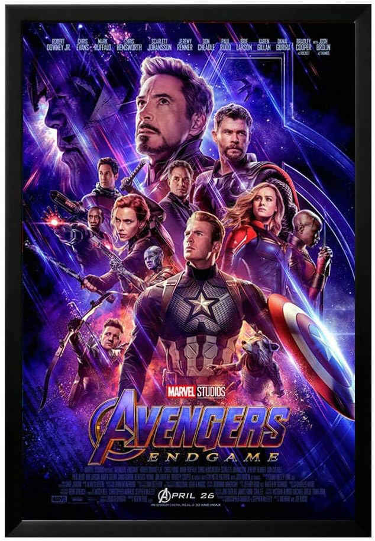 | The image is promotional artwork for the movie Avengers: Endgame. It features a fantastic poster for the movie with the main Avengers characters, including Iron Man, Captain America, Thanos, Black Widow, Thor, and Hulk, displayed in various positions.
There is a purple background color that makes the poster visually lively, and some other elements such as guns appear to be integrated into the design. The poster's placement covers almost the entirety of the image, making it a dominant focal point. | The image displays a movie poster for "Avengers: Endgame," featuring some of the famous Marvel superheroes. The main characters in the poster are Iron Man, Thor, Captain America, Hulk, and Hawkeye. The superheroes are standing together in a team while many more are visible in various positions around the poster. They are all prominently displayed, totaling 16 superheroes in all. They are either engaged in action or have their attention directed towards the camera. The combination of these Marvel characters creates an impressive display that reflects the popular movie franchise's capture of imagination and admiration among fans. | The image prominently features a bustling scene from "Avengers: Endgame," the popular Marvel superhero movie. Several characters can be seen standing close to each other, engaging in conversations, ready for battle or discussing strategies. The movie's main characters are likely represented in the scene, symbolizing camaraderie and unity as they embark on their epic adventure.
Among the group, Captain America and Thor are captured in the center, while Iron Man, Black Widow, and Hawkeye are also noticeable in the image. Other captivating elements include the "Avengers: Endgame" title and the date of release. | The image is a black-and-white photo depicting the Avengers characters in a group setting. In the foreground, there's a prominent Iron Man at the center, while Captain America is slightly to the right, and Thor is standing closer to the right edge of the scene. Apart from these three main characters, there are also other Marvel characters visible in the photo.
Additionally, there are two guns present in the image, one located on the top left side and the other in the lower left. These might appear to be weapons in their hands or other interesting elements in the photo. | Due to its large size, the image includes a variety of diverse bike lanes, racks, and buildings. Two prominent pictures of bicycles capturing the essence and variety of transportation styles are showcased at the top left corner of the image, one beneath the other.
A central figure of the image shows several bicycles of different types, including one next to a fire hydrant. Additional bikes can be seen scattered throughout the scene, presenting a range of styles and designs. They are seen in various positions within the bicycle racks, with the racks having a mix of locations such as a church and a tennis court court.
The scene also includes a building with a clock which can be found in the upper left part of the foreground. There is another large clock on the right side of the image, positioned towards the middle right part of the scene. In the upper right area, there is a trio of clocks placed together in the sky. Tons of clocks can be seen throughout the image, signifying the importance of punctuality and time awareness for the people involved. | The image shows a beautifully illuminated hole-punched panel for the installation of radios, featuring numerous characters from Indiana Jones and The Avengers. The art is a poster that promotes the limited edition Avengers-themed radio.
The main objective of the poster is to showcase the characters from Indiana Jones and The Avengers, presented in interesting and artful ways. The poster's font adds a nostalgic touch to the advertisement, capturing the essence of the classic radio theme. | The image depicts an underground, subway-style environment. Several people are present in this scene, wearing various costumes and toting different accessories. Some of the individuals are closer to the front of the image, while others are dispersed throughout the scene, giving a sense of depth and size to the space. The overall environment appears to be a location where people gather to socialize, engage in conversations, and enjoy each other's company. | In the image, there are various elements and characters related to different Cartoon Network shows. A prominent figure is Dexter, the title character from the show Dexter's Laboratory. Dexter is shown standing in a lab, indicating the show's theme. Another notable character is The Powerpuff Girls, who can be seen flying past above Dexter.
Additionally, there are four small characters represented in the corners of the poster, each resembling one of the Transformers: Optimus Prime, Bumblebee, Megatron, and Starscream. The combination of these characters and animated shows suggests that this poster appeals to fans of Cartoon Network and its distinctive programming. | The image is a black and white photograph of a cityscape, featuring a group of three closely packed buildings. The buildings are situated close together, creating a dense urban environment. The overall shape of the buildings suggests a geometric pattern, possibly inspired by the Swiss Windows or another Swiss architectural style. | The image features a beach scene with several people enjoying their time by the ocean. In the foreground, there is a group of people standing by the water, possibly taking in the beautiful surroundings or engaging in beach activities.
As you look further back, you can see more people scattered around the beach area. It seems to be a lively and bustling scene, full of activity and enjoyment. Additionally, there are two surfboards in the image - one positioned near the center-left and the other one slightly further to the right. This suggests that some of the people at the beach might be surfers, adding to the overall beach vibe of the scene. | I'm sorry, but I do not have any image to describe. Could you please provide me with more context or details about what you are referring to? |
 | The image features a classical painting in black and white depicting a man and a woman, who are both flying, as they are the main subjects of the art. The man and woman are enjoying a sunny day, symbolized by each of them having a parasol or umbrella.
The painting is set in a lush garden near a large building, which provides a backdrop to the scene in the picture. There are four benches placed in the scene, likely for people to relax and appreciate the beauty of a warm summer day. | The image captures a sunny day in the life of a woman dressed in black and white, who is depicted soaring through the air and proudly displaying her skis. She seems to be posing with her skis in a challenging, airborne posture.
The advertisement is likely created to encourage skiing or lure visitors to the Sun Valley and Chicago, Nort Western Line location. In the background, there are several umbrellas arranged in a somewhat nice formation.
The people in the scene can be interpreted as passersby in the outdoor area, likely enjoying the sunny day and the beautiful atmosphere captived in the advertisement. | The image is a retro-style painting featuring a dog jumping in the air, likely a visual representation of an energetic summer vacation for the dog and its owner on Chicago's Lake Shore Drive. Surrounding the central figure, there are several other reasons or objects that are often associated with a fun and exciting summer, including a tie, numerous people partygoing, several hot dogs, a bicycle, boots, and even skis.
In addition to the artwork, there are also instances of written text denoting various phrases such as "sun valley chicago ncod western line" that are scattered around the image. Overall, the painting conveys a sense of enjoyment and thrill that typically accompanies a summer getaway to the lake shore. | The image features a summer scene with a young lady standing on a chair, dressed in a white bikini bathing suit with her arms raised overhead. She appears to be posing confidently in a commercial advertisement setting.
In the background, a couple of people are present, with one on the left side and another slightly further away on the right side. Several chairs are dispersed, including one placed under the lady on the chair and others scattered around the scene. There is a tie visible near the top left corner, but its purpose is unclear in this particular setting. | As an image processing AI, I am looking for a specific description of the image. Please provide a detailed description of the image, including the subjects, colors, or any other relevant information that might help me provide a proper description. | The image is a poster advertising Summer Institute of Languages and Music, featuring a person singing up high in the chorus. The person is positioned in the center of the poster, drawing attention to their performance. In addition to the central figure, there are four smaller figures in the background, signifying the support and enthusiasm of those present.
The poster is yellow, black, and white, with bold letters that read "This Summer, Sun, Valley" in the top left corner. The advertisement exudes excitement and anticipation for the upcoming summer event. | The image is a top-view vintage drawing of what looks like a 1940s-1950s-era gendered world, showcasing a woman-skinned dollhouse and a Chicago-bodied man-skinned doll standing next to a house. The scene is filled with details, including curtains on the dollhouse and a bench in the foreground.
The woman is depicted as a caterpillar, presumably because of a popular idea from the time that women should be expected to change into something beauty-wrapped, like a butterfly. The doll is in front of a small po-faced dollhouse representing Chicago, which emphasizes the location and a detailed comparison to a book was once made by one of the consumer cultures that applied this knowledge to reality. The US city model is Chicago, with the beautiful Lincoln Park skyline and heightened area signs, which adds context and meaning to this advertisement of slanted visioiste statements. | The image features a young woman standing in a room, smiling as she poses for the camera. She is wearing a white dress, a black vest, and a pair of black and white skirt. In front of her is a table with a handbag on it.
The setting appears to be a cozy indoor space, potentially a laundromat or a similar venue. The woman's casual, cheerful pose brings warmth and personality to the scene. The handbag on the table further reinforces the theme of the image and suggests a sense of daily life captured in the photograph. | The image features a group of six young men gathered together, enjoying a meal and spending time by the water near a building or a cliffside. Some of the men are standing close to each other, which indicates they might be a group of friends or colleagues sharing a conversation.
There are two chairs in the scene, suggesting that at some point during the gathering, some might have sat down to eat or relax. The presence of the water, whether it's a beach, lake, or river, adds a picturesque and refreshing ambiance to the scene. Overall, the image depicts a warm and casual social gathering by the water. | The image display is grainy and blurry, making it difficult to discern the finer details. However, it features a lush green hillside with a misty, foggy quality on a gray, gloomy day. A canyon road weaves through the area, creating a majestic backdrop for the view. There are also trees seen near the foreground, adding depth and contrast to the overall scene. | The image shows a beautiful beach scene with a person standing on the sand near the water's edge. The person is wearing a swimsuit, and they appear to be enjoying their time at the beach. The sky can be seen in the background, adding to the serene and picturesque atmosphere of the scene.
The beach appears to be fairly empty, with only a few other individuals scattered around the area. Some of these individuals are closer to the water, while others are further back on the sand. Overall, it is a peaceful and relaxing beach scene, perfect for a day of swimming and soaking up the sun. |
 | The image prominently features a young man in uniform on a beach. He is the focal point of a large group of soldiers, all waiting and looking back at the past. The soldiers stand at various positions and distances behind the man, indicating an organized and coordinated movement. There is a man with a backpack slightly in the background, and a ladder can be seen extended, possibly for an event or a ceremony taking place on the beach. The overall dynamic conveys a strong sense of unity among the military personnel. | The image features a movie poster for "War," or "The Frontier Line," starring the two male leads, Thomas Brodie-Sangster and Elliot Samuels. The front man, Thomas Brodie-Sangster, or Nathan, is depicted on the left side of the poster, while Elliot Samuels, who portrays another lead character, looks on towards the right side. Both lead actors are featured on the front cover to emphasize their roles in the film.
In addition to the main characters, there are several other people on the poster, likely representing the secondary characters and supporting cast members. Their presence suggests that this gripping story captures not only the warrior spirit but also commands attention by building suspense and portraying not only the leading characters but also their allies and opponents. | The image features a movie poster for the film "The Front Line," which displays an intriguing purple background. This movie poster depicts a person standing in a group of soldiers, suggesting a strong camaraderie among them. The man is positioned towards the left side of the poster and appears to be the main focus.
There is a mix of close-up and group shots of people, with several soldiers serving as background characters. They are arranged in a somewhat symmetrical formation around the person in the main focus. Overall, the poster showcases the core group dynamic of the film, emphasizing the camaraderie and teamwork expected in such a story. | The image features a busy street with multiple vehicles, including a car that is traveling down the road in the foreground. The scene depicts everyday life in the city, with pedestrians mingling and driving cars visible all around.
Several people can be seen walking out on the street, with some positioned further in the background, while others are closer to the foreground. They appear to be going about their day, perhaps running errands or exploring the area. Additionally, there are two backpacks in the scene, suggesting that some of the people may be tourists or individuals carrying personal belongings. | I'm looking at a painting of a group of war-like figures carrying guns, situated on the front line. There is a sense of seriousness and intensity in the painting due to the emotionally expressive facial features on these men. However, the inclusion of a boat in the image adds an interesting contrast to the otherwise intense scene. | The image features a young boy standing on top of a hill or pile of dirt, possibly standing as part of a formation or marking a path. The setting seems to be a desert-like environment, with the sun shining down on the dirt mound creating a stunning backdrop.
The boy is wearing a white shirt, which stands out against the earthy tones of the location. Two other people can be seen in the image - one is positioned behind the boy to the left, and the other is to the right, both sharing the same hill as the main subject. | Attention theater friends! Here is a backdrop for a scene that will set the stage for a performance. The scene showcases a promotional poster featuring a young woman in uniform, giving off a strong vibe and conveying an interesting message. Leading Lady, Nancy, stands prominently amidst an artistic photograph of her life. A warm colored sun, a reflection in the sunglasses, two seagulls, and a group of children evoke a casual, youthful atmosphere. The setting takes you on a journey through the past and explores the possibilities of the future. Take some time to get ready, put on your fancy clothes, and come to witness your dreams taking shape right in front of your eyes. Do not miss it, it is truly a once in a life time experience. | The image depicts an outdoor scene where a group of men is standing together under a tree. The scene resembles a courtroom setting, as some men are dressed in formal attire and appearing in front of a row of trees. A large group of people is present, with some individuals standing close to the tree, while others are placed further away.
A boy is prominently placed under the tree, looking back at the camera with an intense expression. The overall atmosphere of the scene conveys a seriousness and importance to the event unfolding. | In this image, a woman is standing in an open area with a backdrop of mountains, likely in a rural or natural setting. She has her arms wide open, as if embracing the surrounding environment or expressing a message. There is another person in the background, closer to the center of the scene.
The area appears to be spacious, with no other objects or people visible apart from the woman and the person in the background. The scene may suggest a sense of freedom, connection to nature, or the passing on of some information or emotion between the two individuals. | The movie "Walking with Dinosaurs" shows a large group of dinosaurs together in a lush green field, with trees in the distance. A few of the dinosaurs are walking around near the camera, while others are standing or moving in the far distance. The close dinosaurs can be seen from a ground level perspective, while the distant dinosaurs are positioned at various heights, indicating a dynamic and engaging view of these prehistoric creatures in their natural environment. | The image depicts a cow standing in a green field, framed by a wood fence. The cow appears to be looking over the top of the fence, as if curious about what is beyond it. There is a sense of serenity and calm in the scene, with the cow seemingly relaxed as it gazes into the distance. The field seems vast and the cow appears to be the only living creature in the image, adding to the peaceful atmosphere. |
 | The image features a flyer advertising a Digital Marketing Meetup event, directed towards IT professionals and marketing vertical attendees. The event takes place at the Chelsea Swy Fletcher Suite in New York City on May 17th, 2023. The flyer also displays a calendar image alongside a man's hand holding a laptop, capturing the essence of digital marketing.
Below this calendar advert, there is a dedication to outstanding partnership with Hype Sumo & Electric Wave. The event promises an immersive experience with experts in digital marketing and a full attendance guarantee. Interested attendees can access more information online and sign up for tickets. | The image features a digital marketing meet-up event. The event logo can be seen displayed in front of a person who is attending the meet-up. The person is likely showing their interest and enthusiasm for the event.
The background of the advertisement consists of a spacious and clean room with another person standing there, further reinforcing that the events are meant to be attended by people individually interested in digital marketing.
In addition to people, a snack and a handbag are included in the scene, showing that attendees might bring their personal items and snacks while attending the event. | The image is a blue and black negative space advertisement for a digital marketing meetup. It features a hand holding a cell phone at the center, with a focus on social interaction. The hand is prominently placed in the middle of the picture, accompanied by smaller images of a smart phone, a social media icon, and a QR code in the lower portion of the image. The Jumbotron logo and a date can also be seen in the background. The event's logo is present on the bottom right corner of the background, and a remote control is visible in the top part of the scene, drawing attention to the interactive nature of the event. | The image showcases a blue and white vintage advertisement featuring a tiny person on a platform or hoverboard, presenting "Digital Pixel Marketing Meetup May 17, 2022." The person is the main focus of the poster, drawn to capture attention and create interest in the event.
In the background, there is a clock showing the time of May 17, 2022, emphasizing that the event takes place on this specific date. The combination of vintage design elements and the catchy tagline make the advertisement eye-catching and memorable. | The image is a lively poster prominently featuring an intricately designed Pepsi logo in red and blue on a white background, occupying most of the space. The background consists of various elements that convey a vibrant atmosphere, attracting attention to the event.
In addition to the Pepsi logo, there are three people in the image. One person is situated close to the left edge of the image, while the other two are featured in the right portion of the poster. The presence of these people suggests that the event may be social, interactive, or entertaining in nature, likely related to the Pepsi brand and its promotion.
The combination of the visually appealing Pepsi logo, human figures, and vibrant colors creates an engaging advertisement for the event. | The image features an intriguing poster advertising a meetup for digital artists, possibly held at a Meetup group venue, or a World Animation Celebration event. The poster is designed skillfully, with a prominent human hand holding a cell phone prominently displayed on the left side of the poster.
The picture slightly blurs the scene to convey motion or high activity. The event appears to be relevant to the technology and art community, possibly focusing on digital art and multimedia work. | The image features a black and yellow striped apartment building situated in the midst of a metropolitan area. The building is tall and has two parallel balconies with windows lining both sides. The colorful apartment building stands tall among surrounding urban elements, and two traffic lights can be seen in the picture, one near the top left corner and one near the bottom left corner of the image. Despite the busy urban setting, the apartment itself remains the focal point of the scene. | The image features a dog photobombing a photo, likely posing for a picture in front of a green backdrop. The presence of a green backdrop suggests a fun and playful environment. Given the presence of the dog in the scene, there might be other attendees to this event enjoying themselves as well, creating a pleasant atmosphere that brings people joy. | I'm sorry, but I am an AI language model and do not have the capability to see images. Can you please provide more details about the image you would like me to describe? | The image depicts a scene of food being prepared on a dining table in a kitchen. A woman is actively engaged in the cooking process as she works on creating a meal. She is standing close to the table, focused on the task at hand.
Various ingredients and utensils can be seen throughout the scene. A large knife is placed close to the woman, likely being used in the food preparation process. A cutting board is visible as well, likely used for chopping vegetables or other ingredients. There is also a bowl on the table, possibly used to hold ingredients or mix them together.
In addition to the primary woman, there are two other smaller figures in the scene one near the top left corner and the other to the far right. It is unclear what they are doing in relation to the cooking process but their presence adds to the overall atmosphere of the kitchen. | The image depicts a large animal, likely a horse or a dog, walking through a field with tall grass. The animal is dominating the scene, covering most of the frame from left to right. In the background, one can see a larger open field that extends beyond the grassy area where the animal is walking. |
 | The image is an eye-catching red, yellow, and blue poster advertising a business strategy conference. Featuring several prominent people, including President, CEO, and authority figures like Hannah Jenkins and Jennifer Bake, the poster wants to catch the attention of potential attendees for the conference.
The top of the poster states "Diia Ambassador," possibly highlighting the types of people who should attend this conference. There is a call to action towards the bottom asking people to book their seats, which includes a direct phone number.
The bottom of the poster emphasizes that the conference takes place on September 2, 2022, with a time and location for the event. Overall, the poster displays a visually appealing design with clear and concise information for potential attendees. | The image features a captivating flyer promoting a one-day Business Strategy Conference set to take place on September 3, 2022. The flyer features a striking red, white, and black design, with a prominent centerfold containing an image of a speaker. The text is displayed in bold lettering, making it easily accessible for the attendees. Additionally, there are three smaller images on the left side of the flyer, each featuring Canadian-expat business professionals. The overall layout of the flyer successfully communicates the theme and details of the conference among its intended audience. | The image shows a dog sitting on a bed in a room, looking adorable and relaxed. The dog is positioned in the center of the room with the bed covering a significant portion of the space. There are other items in the bedroom as well, including a few books lined up on an area near the right side, and a remote control placed close to them. The overall scene appears to be tranquil and emphasizes the cute and relaxing atmosphere in the room. | The image features a group of workers who are pointing to a yellow marking on a wall. The workers are standing around a table, displaying contentions and issues associated with business strategy. There is a total of eleven people in the image, some of them posing directly in front of the yellow marking while others are in various positions around the area. One person appears to be closer to the left side of the image, and another near the top-left corner of the image. The individuals in the middle of the scene seem to be giving presentations and exchanging opinions about the business strategy. Overall, the image depicts a lively environment where people are putting their ideas and concerns together. | In the image, there is a business strategy conference poster that is prominently displayed, occupying a large portion of the wall. The poster is accompanied by several flags, representing different eras in history, which are arranged in the lower part of the poster.
In addition to the main poster image, there are three people located in the bottom-left portion of the poster, possibly being attendees or speakers at the conference. These individuals seem to be going about their respective attendance at the event. Furthermore, there is a cell phone situated towards the right side of the poster, likely belonging to one of the attendees. | The image shows an aerial view of a cityscape with well-lit streets at night. Buildings can be seen throughout the scene, creating a bustling urban atmosphere. The small size and tranquil setting of the low-light cityscape contrast with the bright headlights seen recently. This view emphasizes the lively nightlife of the city and the combination of public transportation and personal vehicles sharing the roads. | The image is a black and white poster promoting a "business rendezvous" or conference meeting. The event is being held at the Starlight Chicago Hotel and Conference Center. The poster has a modern touch and looks quite elegant and stylish. It features a large, decorative "X." The hotelEEs name and address are listed as venue information. The contrasting colors of white and blue add to the elegance of the poster. The black and white design accentuate the artistic details, making it an eye-catching piece to attract attention. | The image is a still frame from a movie or a scene from a business model, featuring a young man standing in a business setting with a formal suit. The background highlights the importance of communication in business by showing two sets of lips, one positioned closely above the other, separated by a small gap. They are talking, and this image represents the process of communicating in the professional world. The young man, being a key player in the scene, is interacting with the people around him, demonstrating the importance of effective communication in business settings. | I'm sorry, but I am unable to see or describe any image as I am an AI language model and do not have the ability to access or process visual content. I can provide general descriptions or information about images based on text, but I do not have the ability to view images directly. Is there anything else I can help you with? | I'm sorry, I need more specific information to provide a detailed description of an image. Could you please provide details such as the subject matter, color scheme, facial expressions, and any other relevant information? | The image features the exterior of a blue building set against a clear blue sky. There is a forest visible in the distance behind the building. The sky is so bright that the sunlight glistens off the building's facade, creating a striking contrast against the deep blue of the sky. The overall atmosphere of the image is serene and picturesque. |
 | The image showcases a beautiful outdoor garden or farm area overgrown with foliage and surrounded by trees. A stately building can be seen in the distance, adding to the charm of the scene. The garden is filled with an abundance of trees of varying sizes, giving it an unique and picturesque appearance.
There are numerous planters with plants located throughout the garden, and a greenhouse seems to be present, hinting at a focused care for the flora of the area. The landscape is both functional and visually appealing, making it an ideal sanctuary for those who love nature and the tranquility it provides. | The image depicts a small, enclosed garden with a variety of green plants lining the sides and tops, typical of a flower bed. In the background, you can see an outdoor eating space with tables and chairs set up, possibly for an outdoor restaurant. Adequate lighting is provided by a strong, bright summer sun setting behind the garden, creating a warm and inviting atmosphere.
There is a focus on the plants and dining area being the primary subjects, with no trees visible on the ground in the scene. However, in the background, you can see two slightly obscured trees, possibly providing some natural shade to the outdoor eating space. | The image showcases a garden area behind a chain-link fence. Several plants, including a row of small trees and vegetation, can be seen creating a serene and picturesque scene. The garden is adorned with various potted plants in shades of green and brown.
In the fenced-in garden, red brick ground and brick villas are visible, giving the setting a charming ambiance. The lush setting and the fencing sets this area apart from an overgrown or unmaintained space, making it an inviting space for both visitors and residents. The overall atmosphere of the garden exudes tranquility and care for the greenery. | The image displays a lively garden scene with a large building in the background, possibly a farmhouse or a house. The garden features several vegetable plants, such as an abundance of ivy plants, which contribute to the garden's vibrant appearance. The plants are intermingled, making the garden look like a picturesque farm scene. Additionally, there's a bird perched in the garden, adding to the natural ambiance. Overall, the scene portrays a relaxing garden oasis filled with an abundance of ivy plants and flowers, surrounded by a large building that serves as a captivating backdrop. | The image captures a beautiful garden area with lush, green plants and trees scattered throughout the scene. In the center of the garden, there's a bench, providing a perfect resting spot for visitors to enjoy the tranquility of the surrounding flora. At the edge of the garden, several small birds can be spotted, contributing to the peaceful and picturesque atmosphere. The greenery creates a peaceful retreat, surrounded by trees that provide a sense of seclusion. | Unfortunately, I cannot describe the image due to the fact that it is a black and white photo featuring illegible text. However, it can be described as a photo of Major Kenneth Clark standing outside of Glenapp Castle, and includes three other people named Brown, Dunn and Drake, who are referred to as "little cockies." | The image depicts a lush green field with a flock of birds gathered in the middle of a central area. Farmland stretches out on all sides of the field, creating a peaceful and idyllic rural scene. In addition to the birds, there are two people visible in the periphery of the image, possibly observing the birds or tending to the surrounding farmland. | I'm sorry, but I need more information. Can you please provide me with some details about the image you are referring to? | The image features a painting of a large, grey elephant in black and white colors. The elephant is depicted in various poses and angles, occupying almost the entire space of the painting.
In addition to the elephant, there are several small birds scattered throughout the painting. Some of the birds can be found close to the elephant, while others are positioned farther away. The combination of the large elephant and the small birds creates an interesting and visually appealing composition in the painting. | I'm sorry, but I was unable to see the image you are describing. Could you please provide more details or a specific location? | I'm sorry, but I cannot provide a detailed description of the image as you have not provided any context or information about the image. Please let me know more about the image so that I can assist you better. |
| 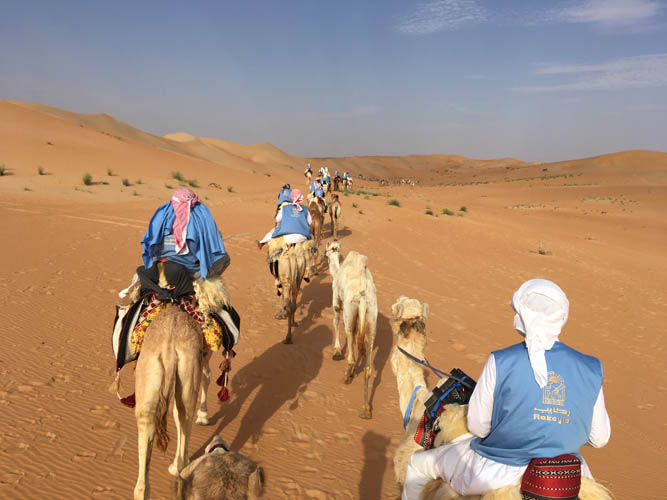 | In the image, a group of travelers is riding camels along a sandy road through a large, empty desert landscape. There are a total of nine people sitting atop camels, navigating the arid environment on horse-like animals. Some of the riders can be spotted closer to the front, while others are spread out further back. The camels are arranged on either side of a path, giving a sense of unity as the journey continues. Overall, it's a striking scene of adventure and exploration in the desert. | The image features several camel riders in a desert environment, making their way across sand dunes. The mounted group of people has grown from a few individuals to over a dozen people dispersed across the scene, giving the sense a large camel cavalry is on the move. The camels can be seen carrying people throughout the view, with a total of eleven camels and their riders in various positions along the horizon. The scene presents a unique and engaging snapshot of people and animals sharing the vast desert landscape. | The scene displays a group of men, possibly Muslim men, riding on a camel while being pulled by other smaller pack animals. There are a total of five camels and six horses present, with some being used for transportation purposes and others for riding practices. The group riding in the dunes and the deserts has a strong sense of adventure, as they traverse the expansive sandy landscape. | In the image, a large group of people is riding camels down a hill. The environment is dusty, and the hill seems to be a part of a dune landscape. There are several cars parked in the area, and two trucks are visible near the center of the scene. Some people among the riders are also carrying backpacks, which may contain essential items for their journey. The gathering of horses and people in this setting indicates a shared interest in camel riding and exploring the area on these unique animals. | The image portrays several camouflage military uniforms scattered throughout the scene. Different individuals, some of whom are soldiers, can be seen standing or sitting around the scene, possibly taking a dip or bathing in a dried riverbed or water basin. The environment is likely a sunny location and the weather appears to be pleasant, making it a perfect day for such an outdoor activity. The people in the camouflage uniforms are engaged in enjoying their time together in this picturesque setting. | The image displays a group of people standing in a line on the sand at a desert location. They are riding on the backs of either camels or cars taking care of the business and also facing the camera. There are a total of 16 people spread across the scene, most sitting on camels and others in cars, emphasizing the event taking place in a desert environment. The overall atmosphere of the image suggests a gathering or procession involving desert travel and transportation methods. | In this image, there is a flock of camels standing in a desert landscape, indicative of a harsh, rugged terrain. The camels are in the middle of the desert, with four of them walking towards the viewer while the other camels appear to be further away or hidden behind them.
Surrounding the camels, there are various men guiding them in their journey. In total, there are twelve people dispersed across the scene, some close to the camels, while others are further away. The individuals seem to be leading the camels to different destinations or engaging in other tasks related to their activities in the desert. | The image displays a lush, green field that serves as an open range for grazing camels. A herd of seven camels is spread out across the field, with some of them walking on the grass while others rest near it. The camels are of varying sizes, and are located on different parts of the field. The image also appears to be clickable, providing the viewer with a sense of depth and immersion in the scene. | In the image, several people can be seen standing around a camper in the desert. They appear to be tourists, possibly preparing for their journey or taking a break during their adventure. The presence of multiple people suggests that they might be on a group trip or engaged in a shared activity. The camper serves as a backpacking shelter, providing a place for them to rest and sleep. The vastness of the desert scenery can be seen around the group, showcasing the natural beauty of the environment they are exploring. | The image depicts a group of people gathered in a large desert area on a clear day. There are at least nine people visible in the scene, standing or riding various types of vehicles, such as cars and motorcycles.
Multiple cars are situated throughout the image, with some appearing closer to the foreground and others further back. A few motorcycles are also dispersed among the vehicles, adding more variety to the scene.
The people are dispersed across the image, with some standing close together and others more spread out. Some are focused on driving or riding their vehicles, while others are seemingly socializing or enjoying the open space. The overall atmosphere of the image is that of a leisure activity or a gathering in the desert, with people taking advantage of the clear day to spend time outdoors. | I'm sorry, but I don't have any image to describe. Could you please provide me with a specific image? |
| 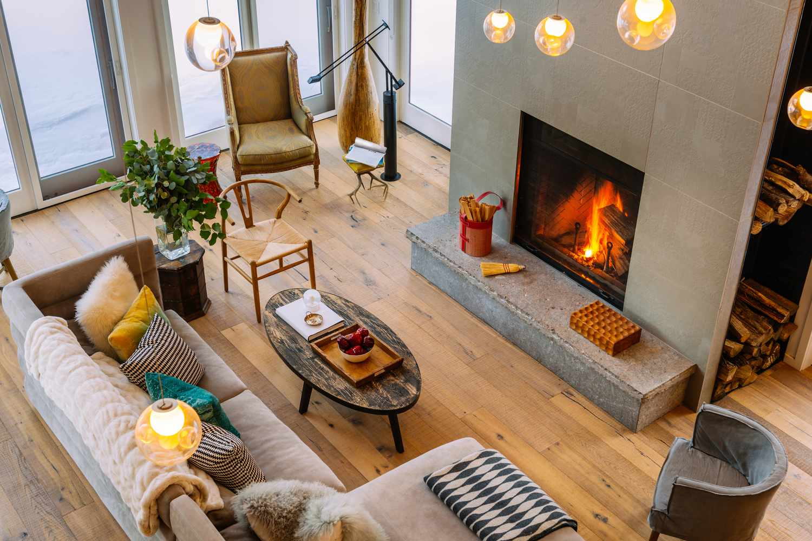 | The image features a spacious, elegant living room that has a cozy fireplace in the center of the room. Several pieces of furniture are strategically placed to create a cohesive, inviting atmosphere. There are three couches, one positioned close to the fireplace and two others located towards the front and side of the room. A chair and a bench are also present, adding to the room's seating.
Visitors will find various books scattered throughout the room, providing entertainment or parlor reading materials. One of the walls is decorated with artwork, adding an aesthetic touch to the space. A vase rests near a window, contributing to the room's rustic and warm ambiance. The comfy fireplace not only serves as a focal point but also provides a warm and comfortable environment for the occupants to gather and relax. | The image displays a luxury living room with a rustic touch, featuring an array of comfortable furniture and a cozy fireplace with a fire burning in it. A couch and a chair are located in the room, and there is a footstool in front of the chair. An elegant coffee table can be seen next to these seats.
Various books are scattered throughout the room on different surfaces, indicating a love of reading. There are three cups placed in the room, possibly for beverages in front of the cozy fire. Outside, a car is partially visible, giving an openness to the living space. Overall, the scene creates a warm and inviting feeling. | The image depicts an elegant scene of a living room with a small Christmas tree on fire, located in the corner of the room, emitting warmth and light. The room is full of furniture, including two couches and a large sofa, which provide ample seating for a cozy atmosphere. Two chairs are placed in the room, adding extra furniture options.
There are multiple books scattered around the living area indicating a space for leisure and relaxation. Several potted plants are situated near the couches and chairs, adding a touch of nature to the room.
A dining table, various vases, and a decorative bowl can also be found in the living room, contributing to the room's chic and inviting ambiance. | The image is of a large living room decorated for the Christmas season. It features a comfortable and inviting ambiance with a fireplace as the centerpiece. The fireplace has a fire burning, casting a warm glow throughout the room. Surrounding the fireplace, there are two couches, one on the left side and another on the right side of the room.
Additionally, there are multiple chairs positioned in the living room, with some placed closer to the fireplace, while others are situated further back in the room. A dining table is visible towards the right side of the image, and a potted plant can be seen on the left side of the room. A couple of books are also present on the far left side, adding to the cozy, seasonal atmosphere of the living space. The combination of furniture, lighting, and decorations create a harmonious and enjoyable environment. | The image depicts a lively and inviting living room filled with furniture and surrounded by a hardwood floor. There's a grey carpeted area next to the fireplace light, creating a contrast between the two accent colors. The room features a fireplace which is currently lit, adding warmth and coziness to the space.
In terms of seating, there is a couch located near the left side of the room, accompanied by several chairs placed throughout the living area. A potted plant sits on one side of the room, adding a touch of greenery. Additionally, there is a book on a surface, possibly Tina Fey's book, which occupants may have been reading or referring to. The room also features a non-furnished dining table positioned in the space, ready for use as needed. | The image showcases a Mercedes Benz parked in front of a chalet. The chalet features a striking design with its snow-covered, possibly fake, slope. Two persons are standing nearby next to the parked car, but their presence doesn't seem to be significant to the scene.
A dining table is situated in the room, close to the right side of the chalet. Several chairs are positioned around the dining table, some closer to the car, while others are further away. The room also includes a couch on the left side that aligns with the view of the car and the slope. | The image portrays a beautifully designed Rocky Mountains interior, featuring several different Rocky Mountain peaks embedded within the home's overhead view. The mountains are adorned in shades of dark black and light brown, further adding a sense of nature and grandeur to the scene.
The room's furnishings are well-coordinated, with wooden flooring as the prominent design element. In addition to the peak accents, there is a fireplace with a stone design surrounded by multiple chairs, providing a comfortable and welcoming atmosphere for guests. The area also boasts a variety of potted plants placed strategically throughout, bringing a sense of freshness and flora indoors.
An engaging combination of design elements and colors, the space successfully emulates the breathtaking beauty of the Rocky Mountains within a magnificent residential space. | The image shows a large bird, possibly a stork or a priest dressed in soutane, standing by the side of a road on a street. The bird appears to be snacking on food as it stands near the street curb.
Surrounding the food-eating bird, there are several chairs, possibly for people to sit and socialize. The image appears to be captured at an interesting angle with some objects closer to the bird than others. | In the image, there is a large, open field with several cows behind a fence. The fence is adorned with many multi-colored lights that illuminate the darkness. These lights create an interesting and whimsical atmosphere in the field.
Among the cows, there are at least six of them scattered throughout the scene. Some cows can be seen closer to the fence, while others are further back, possibly grazing or resting. Overall, the scene presents a unique, visually appealing image that combines practical elements with a touch of festivity. | The image displays a large ladder positioned on a read stone walkway in front of a fire hydrant. The ladder occupies a fairly significant portion of the scene, from the middle to almost half of the height. The fire hydrant can be seen nearby, toward the right side of the image. The stone walkway appears to be wet, likely due to recent rainfall or moisture from the surrounding environment. | I'm sorry, but I am a text-based model and do not have the ability to view images. Can you please provide more context or details about the image you would like me to describe? |
 | The image shows a person standing on a hilltop, possibly a rocky cliff or mountaintop in the mountains. The individual is closely examining the beautiful expanse of a valley below them, likely admiring the breathtaking view. They are wearing a backpack, indicating they might be on a hike or exploring the region.
The picture has a blue tint, emphasizing the vastness and striking beauty of the natural landscape. The overall scene captures the awe-inspiring experience often encountered in mountainous regions. | The image captures a man standing at the entrance of a dark, dingy cave. He appears to be observing his surroundings inside the cave, likely evaluating the conditions before proceeding. The man is well-equipped, wearing a backpack and a helmet, which suggests he is well-prepared for an adventure.
Aside from the cave, the scene includes several other objects and people. There is a bird flying in the sky near the top of the frame. Additionally, there are three people situated off to the right side of the image, potentially observers or fellow cave explorers. Two smaller backpacks can also be seen, likely belonging to the people in the right side of the picture. | The image depicts a man standing on a beach next to the ocean, wearing a backpack. He is admiring the breathtaking view of the surroundings as he gazes along the shore. The scene also captures a distant snow-covered mountain in the background.
There are two other backpackers in the image, one located on the left side, and the other at the lower right corner of the picture. All three of them seem to be enjoying the moment as they seek out the beauty of the surrounding outdoor environment. | The image is a black and white photo of a person riding a horse near a beautiful mountain landscape. The person is wearing a suit and standing on top of the hill while enjoying the breathtaking view of the mountain valley. They have a backpack on their back, traveling carefully with their horse.
The mountains behind the person are a stunning sight, overlooking the valley below. This pristine outdoor setting captures the depth and scale of the majestic landscape as the man on horseback magnificently stands above it. | Meat and grease stand out in the vat of day-glo soup that is my mind. | The image features a young man standing in a high school with another person to the side. Both are on the same side of the photo, but one is closer to the edge of the mountain. There are additional people visible on both sides but farther away and more obscured by objects.
There is a backpack on the young man near the center of the image, and another backpack is located behind him, closer to the mountain. The scene is set in a street filled with students and various objects, creating a lively atmosphere. The sky appears to be cloudy, which might suggest an overcast day. | I am sorry, I don't see any people in that image. Could you please provide me with more featured people in that image? | A person, wearing a red hat and a backpack, is standing on a snowy hill with skis on their feet. Behind the person, the ski slope is fully covered in snow, indicating ideal skiing conditions. The person appears to be getting ready for a skiing session or taking a break from skiing. The image captures the essence of a winter sports enthusiast enjoying their favorite winter activity. | The image is an unusual photograph of few people who seem to be curious or intrigued by something in the room. They are standing on a rocky surface that seems to be an outdoor setting. One of the people is facing away from the viewer, and the rest are looking in the same direction. It is uncertain what has captured their attention, but it seems to be a point of interest that has caught the group's collective gaze. | Unfortunately, I am an AI and do not have the ability to view specific images. Can you please provide a description or a link to the image you would like me to view and describe? | The image features a baby horse (or colt) standing next to an adult horse in a lush, green field. The baby horse is located to the left side of the adult horse, with a grassy area providing a beautiful backdrop. It is an outdoor scene with plenty of room for the animals to roam and graze. The overall atmosphere appears calm and peaceful. |
 | The scene is a rain-soaked city street in China, bustling with people and cars. There's a crowd of people visible in the area, with many individuals using umbrellas to protect themselves from the rain. The street is dotted with people waiting at a crosswalk.
On the street, there are multiple cars passing by the bustling pedestrians, including a number of taxi cabs. Additionally, there are two motorcycles amongst the vehicles. The atmosphere is lively, and the weather is cold, as evidenced by the people holding umbrellas and everyone being likely outside in the autumn. | The image is a moody, black and white urban street scene during a rainy night. A group of people are bundled up and walking down the sidewalk, with a few of them huddling under umbrellas. The setting appears to be a large metropolitan area, characterized by numerous tall buildings and lit street signs.
Various cars are occupying the middle and lower areas of the street, along with several parked umbrellas. There are also multiple traffic lights visible, adding to the busy atmosphere of the city. The overall mood of the image reflects the wet, cold weather and the bustling energy typically found in a downtown city at night. | The image captures a bustling street in the middle of a city, likely a town center, at night. The scene is illuminated by overhead and street lights, creating a lively atmosphere. There is a crowd of people standing under different colorful umbrellas scattered throughout the scene. Some of these umbrellas are close together, forming little clusters, while others are further apart.
There are several cars parked or in motion on the street, along with traffic lights keeping the flow of the traffic organized. One traffic light is visible near the center of the image, another closer to the bottom, and a third located towards the right side of the scene.
With the various elements in the image - street lights, car lights, and those under umbrellas, it creates a vibrant and bustling urban setting at night. | The image showcases a busy city street at night, filled with floodlights that illuminate the area. There are several vehicles on the road, including standard cars and a bus, driving through the large intersection. Many pedestrians can be seen walking around, carrying handbags, and using umbrellas to shield themselves from the rain. The overall atmosphere of the scene indicates that the street is bustling with activity despite the less-than-favored weather conditions. | I am standing by the edge of the snowy street, my feet getting cold in the wet cement ground. Somebody, who I couldn't make out, stole my umbrella, making me shiver outdoors. I am standing beneath a dark sky, illuminated by a street light behind me. A few other umbrellas are scattered around me as well, radioactive blue umbrellas.
The image depicts a crowded area with many people standing on the sidewalk. Some of them are carrying umbrellas, protecting themselves from the wet weather. There are multiple handbags and a backpack being carried or held by some individuals. Two vehicles, including a car and a bus, are situated among the foot traffic in the area. The overall scene appears to be that of a busy city street on a rainy day. | The image depicts a room with a large, artistic mural on the wall. The mural captures a bride and groom in the midst of a street fight. The bride can be seen on the left side of the mural while the groom is positioned towards the right side.
Alongside the couple in the mural, several other individuals are gathered in the room. Some of them seem to be watching the mural, while others are having conversations with one another. In total, there are seven people in the room, including the couple in the mural. The artistic display adds a unique touch to the scene. | The image captures a lively city scene with multiple traffic lights visible at different locations. The streets are bustling with activity as various cars fill the frame, including at least six cars and a truck. Each car occupies different positions on the roadway, indicating a busy atmosphere.
Three traffic lights can be seen at the top, middle, and right side of the scene. They illuminate the scene and guide the flow of traffic, giving the photo a dynamic feeling. This active urban setting also includes a diverse array of pedestrians that are scattered throughout the frame, emphasizing the vibrant nature of the city. | The image depicts a large, lively street scene with a group of people strolling and interacting, giving the impression of a busy urban environment. Many people are walking underneath a tree, some of whom are carrying handbags. There are two main clusters of people, one towards the left side of the image and another towards the right side, with several individuals scattered throughout the scene in various directions.
On the far right side of the scene, a person seems to be pushing a stroller, and a bicycle stands out close to the center. In total, there are at least twelve people visible in the scene, some of whom are walking closer to the foreground, while others are in the background or further away. Overall, it's a dynamic and bustling street environment. | As an artist's impression, I am unable to describe the image in detail as I am not able to perceive or interact with actual sights. | I'm sorry, but I don't have the ability to "see" a specific image. However, if you provide a description of the image, I can try to interpret it based on the given information. | The image shows a lively scene at a beach with numerous people enjoying their time near the ocean. Among the beachgoers, a person with a backpack is walking along the shoreline, possibly taking in the views or exploring the area. The other people in the picture are also engaged in different activities, some near the water, some further back on the beach. Overall, it is a bustling and crowded scene, typical of a popular beach destination on a sunny day. |
| The image depicts a tranquil beach setting at sunset, featuring a white sand beach adjacent to a vibrant blue lagoon and gentle waves. The sun's warm hues permeate the scene, casting long shadows over the beach and creating a picturesque backdrop.
A few palm trees are scattered across the image, with two prominently visible near the beach shore. The presence of tropical foliage and the warm colors of the scene lend a peaceful atmosphere to the image, making it a lovely representation of a relaxing beach setting during sunset. | The image depicts a shallow body of water with a beautiful sunset in the background, giving off a tranquil atmosphere. There are trees in the foreground, and beyond, a few palm trees can be seen along the shore. The beach is casually dotted with a few boats, likely fishing vessels or simply floating in the water. The colors of the scene are rich, with vibrant hues of orange, yellow, and blue dominating the sky and water. The area around the water's edge appears to be grassy and relaxing, making it an inviting location for beach-goers. | In this watercolor painting, there is a hillside scene featuring a beach shore next to a peaceful body of water. The beach is adorned with a few palm trees standing at different spots, some closer to the water and others further back on the shore.
In the sky, there are three distinct airplanes visible, flying in a straight row. The sun is setting over the shoreline, casting a warm glow on the scene. The overall atmosphere of the artwork is tranquil and beautiful, with the combination of the water, sand, palm trees, and the airplanes soaring above creating a sense of depth and harmony. | The image portrays a beautiful beach scene with vibrant colors depicting the sunrise. The sky near the horizon is painted with clouds, giving it a stunning effect. The warm and serene atmosphere is complemented by the presence of tall palm trees lining the shores of the beach. Additionally, several people can be detected at various locations on the beach, enjoying their time surrounded by the semi-prepared natural landscape. The combination of the captivating sunrise, the palm trees, and the presence of people suggests a perfect beach day trip. | The image features a beautifully decorated hall, likely meant for an affluent couple, as they look out on a tropical scene, likely veranda or balcony. As they gaze past the horizon, the image captures a serene beach view with water and a picturesque landscape that emanates tranquility.
Around the beach area, palm trees are scattered, adding to the theme and prevailing aesthetic of the tropical setting. There are a total of eleven palm trees, some tall and lining up in a row against the skyline, while others are scattered individually around the area.
In addition to the palm trees, there is also a chair situated close to the spectators, providing a comfortable spot for them to sit and enjoy the view. The chairs' configuration suggests attention to detail and effort to create a cozy and inviting atmosphere for the couple. | I have done that before. | The scene features a group of children standing outdoors in front of a large building located on a palm tree-lined street. They are all wearing white clothing, which gives them a uniform and organized appearance.
The beach area stretches out in the background, providing a beautiful and inviting outdoor space in the city. There are palm trees scattered throughout the background, suggesting an tropical or coastal environment. | As the image captures a beautiful moment of a sunset on a tropical beach, it puts on display the vibrant colors of the sky. There are a variety of hues visible in the sky, ranging from the warm, deep orange-reds of the sun to the soft pastels of the sunset. The beach scene features an area with sand and water, and there are a number of trees nearby.
Additionally, there is a person in the scene, standing close to the water's edge and taking in the serene and colorful surroundings. The person may be a beachgoer enjoying a swim, strolling along the shore, or simply admiring the view as the sun sets over the tropical oasis. | The scene shows a kitchen area with two people enjoying a tropical beverage, likely coconut water, sitting at a table. They both have cups in front of them, one located near the center of the table and the other on the right side. The kitchen is well-equipped with two refrigerators positioned, one on the left side of the image and another on the right. There is also a sink in the background on the left side of the kitchen. The coconut water is likely the subject of their conversation, and they might be discussing the taste, origin, or nutritional benefits of coconut water. | As an AI visual assistant, I am unable to view or describe images that do not have a text-based description. Can you please provide a text-based description of the image you would like me to describe? | The image depicts a vibrant metropolitan cityscape at dusk, with the sun setting in the distance and casting warm hues on the sky. There are numerous cars capturing different moments of movement across the street. Some cars are in the foreground, while others can be seen farther back, near the edge of the city.
The scene showcases a blend of old and new architecture, with modern buildings interspersed among more historical structures, indicating a city that has evolved over time. The large number of cars present in the scene illustrates the busy nature of urban life, likely emphasizing the rush hour traffic or the city's commercial activity during dusk. |
 | The image features a large open park with a grassy field surrounded by a canopy of trees. The trail in the center of the park seems to be less traveled, as the woods are still intact. The scene has Autumn colors due to the dry grass, fading leaves, and decorative hills, giving the park a warm and inviting atmosphere.
Several trees can be observed in both the foreground and the background. The prominent trees are covered in green leaves while the edges of the forest buzz with trees throughout the scene, casting a shadow on the ground, creating a visually striking contrast with the surrounding grass and flat land. | The image features a lush green forest with a variety of trees, ranging from smaller to larger ones. Three larger trees are distinctly visible, towering over the rest of the forest. The majority of the grass appears to be dry, giving the scene a fall atmosphere.
There are several smaller trees scattered throughout the forest, representing various stages of tree growth. Additionally, there is an empty park area nearby, adding to the tranquil nature of the scene. The setting appears to be inviting and picturesque. | The image features a small rockless area on a lush, bright green hill that is covered with grass and surrounded by a forest of young trees. The forest is dense and full of shadows, creating a dense and relaxing atmosphere. There are small bushes and trees scattered throughout the area, with huge leaves on some of them.
In the image, there are four cows standing together near the forested area. One cow is standing closer to the left side, one on the far right, and two cows positioned near the middle of the scene. The scene appears tranquil and inviting, offering a glimpse into rural life and nature. | The image features a group of trees standing next to each other in a sunny, green forest setting. The trees are small and green, making the scene look lush and vibrant. There is a mix of horizontal and vertical sunlight beaming through between the trees, creating an interesting play of light and shadows. The image captures a tranquil and serene atmosphere, perfect for a peaceful day outdoors. | The image depicts an Asian woman walking along a street in what appears to be a village or small town. The setting is outdoors and is surrounded by a peaceful and tranquil atmosphere, with a few cows nearby, further contributing to the rural feel.
In the vicinity, there is a bench beside the road, and multiple slice-of-life objects such as a handbag, a tie, and a motorcycle. The overall scene conveys a sense of daily life and a connection to nature, as the serene street is characteristic of a modest, small town or village location. | The image features a picturesque watermark park with a serene and tranquil atmosphere. The primary setting of the park is near a forest with a large spreading tree serving as the focal point. The land around the tree seems to be leafless, covering the vast majority of the area.
However, the abundance of yellow autumn leaves indicates that they have just fallen off the tree, and the trees around the area still hold them. The intermingling of fallen leaves, colors, and textures adds charm to the scene. The park appears to be waiting for its spring arrival when new leaves will grow, reviving its beauty. | The image portrays a whimsical and imaginative scene of a young boy walking through his neighborhood garden with a giant toothbrush in hand. He is peeking around the corner of the street, likely excited to see what might be on the other side. The garden is filled with a variety of colorful and unusual objects, including a number of cakes placed around the area, each with distinct shapes, sizes, and appearances.
Additionally, there is a traffic light visible in the scene, which further indicates that this quaint neighborhood has both green spaces and urban infrastructure nearby. The combination of the young boy's playful expression and the vibrant garden setting creates a charming and memorable scene. | I am an AI and cannot view images on my own, but I can provide descriptions based on descriptions you provide me. In this case, you could provide me with a detailed description of the image you'd like me to describe. | Unfortunately, without knowing the context or any specific details about the image, I can't provide a detailed description. The image could be anything from a piece of artwork to a photograph of nature or an object. If you provide more information about the image, such as its subject or location, I would be happy to help you. | The left image displays a man in a white shirt and pants standing and holding a can of soda. Behind him, there is a woman standing in another arm of the room, drinking a can of soda. Two other people stand in the room wearing white shirts, one closer to the woman and the other near the man. In total, there are four people in the image, with three of them holding cans of soda.
The room is furnished with a table and a few chairs, with the table being closer to the right side of the image and the chairs spread out in the surrounding area. The atmosphere of the room is casual and social, with the individuals enjoying their time together. | I'm sorry, but I don't see and image. Can you please provide a description of the image? |
 | The image depicts a scenic street in a village with cobblestone buildings on both sides. The street flanks a beautifully curved lake, and the charm of the village atmosphere is evident. Along the street, there are several chairs placed in various positions, and potted plants can be seen in the area as well.
There are at least four benches along the beautiful river, as well as one further down the river closer to the edge of a pier. Additional details like a dog and a handbag can be noticed, giving the image a lively and welcoming ambiance. | The image depicts a picturesque and quaint village scene, where houses are built along a twisting path, which winds through the landscape and onto a bridge. The buildings exhibit old-fashioned designs with steep sides and various potted plants dispersed throughout the village. Many lamps can be seen on the buildings, illuminating the darkening path, adding to the charm of the scene.
There is a chair on the sidewalk near the bridge along with several benches scattered throughout the village, likely used for relaxation by the villagers. A few boats are also present on the waterway, further enhancing the idyllic village setting. A mountain can be seen in the distance, providing a serene backdrop to the picturesque village on the bank. | There is a cat resting on a car, likely on the hood or the windscreen, as it enjoys the warmth provided by the sun. A picturesque abbey can be seen in the background, flying its kite above the surrounding landscape. There are three other cats scattered throughout the scene, peacingfully lounging around and possibly viewing the kite flying together. Additionally, there are three trains in view: one at the left edge of the image, another smaller one closer to the middle, and a third one towards the right side. The cars and cats seem to be enjoying their time outdoors, observing the kite flying and the sunny atmosphere. Overall, it's a charming depiction of a warm day with multiple cats and trains. | The image features a large white-walled building with various trees in front, creating a picturesque landscape. It appears to be an unoccupied field or an empty town square at night. In the background, there is a canal that flows through the town, surrounded by houses and trees.
There is a traffic light near the center of the picture. Additionally, there are several chairs placed throughout the scene, with a noticeable cluster of them towards the right side of the image. A second, smaller town can be seen in the background towards the top right corner of the image. | The image depicts a black and white cartoon cat sitting in the driver's seat of a bus or city train. The scene unfolds on a city street, with several small cars positioned in various locations, creating a bustling atmosphere.
As the cartoon cat rides the bus or train, it passes by a picturesque rural valley that includes a cobblestone bridge. Along the street, there are several people and animals going about their daily routines, contributing to the vibrant urban environment.
In addition to the vehicles, the artwork showcases various objects that colorfully enhance the scene, like apples and a vase on display. A bench can be seen situated along the side of the road, adding another element to the cityscape. Numerous people are positioned at various locations across the scene, further emphasizing the lively nature of the city. | The image is a painting of a man in a forest, surrounded by trees. The forest is filled with leaves, creating a vibrant and lush atmosphere. Sunlight streams through the trees, shining on different parts of the forest, adding depth and dimension to the painting. The light creates a sense of warmth and tranquility, as it illuminates the man walking through the forest. The painting captures the idyllic and peaceful essence of nature, while the oak trees provide a picturesque setting for the man's journey. | The image features a dock with houses and trees in the background, creating a peaceful atmosphere. There are five sailboats resting on top of the water, while numerous people are enjoying their time by the shore. The boats vary in size, with two significantly larger ones occupying a central part of the image.
The people are dispersed in the area with some of them closer to the smaller boats, and others more towards the edge of the image. The combination of the houses, trees, and people conveys a vibrant and lively atmosphere by the water. | The image depicts a scenic outdoor setting featuring a large wooden dining table with a BBQ grill situated next to it. Around the table, there are several chairs, inviting people to gather and enjoy a meal together. The dining table is appointed with elegant place mats and properly set with crockery, including wine glasses, cups, knives, and a bottle. The table is surrounded by beautiful flowers that bring a touch of nature to the area.
Additionally, a person is present in the background, possibly attending to outdoor activities or engaged in conversation with those gathered around the table. | The image depicts a snowy landscape surrounded by pine trees. A couple is standing in the snow, holding hands and deeply in love. They appear to be enjoying the beautiful wintry scenery around them. The entire scene is decorated with Christmas lights, adding a festive and charming ambiance to the wintery setting. The image captures the essence of love and happiness in the midst of a tranquil winter scene. | The image shows a foal, likely a young horse, entering a stable. The foal is walking cautiously alongside a wall, moving forward into the space. There are a few more people in the scene, which might indicate their involvement in taking care of the foal or managing the stable.
The foal appears to be the main focus of the image, while the people in the scene contribute to its surroundings. The stable or ranch environment serves as a backdrop for the foal's movement, capturing the moment of transition into its new home or configuration. | The image is a black and white photograph of a sandy beach with waves washing up on the shore. There are a few people on the beach, but they are not the main focus of the photo. The people are scattered around the scene, with some standing closer to the water and others further back on the beach. The overall mood of the photo is serene and peaceful, capturing the beauty of nature and a relaxing day by the ocean. |
| The image features a beautiful, large, and modern kitchen with expensive-looking steel appliances. The kitchen contains a refrigerator, a microwave, an oven, and a sink situated around a center island. A wooden table has a bowl of fruit placed on it, inviting someone to dig into the healthy snack selection.
A few wooden chairs are positioned by the island, creating a comfortable dining area. Several kitchen utensils can be found on the countertops, such as knives, spoons, and a bottle. The overall setup makes the kitchen appear to be in a luxurious restaurant, showcasing the stylized copper plating and cherry wood panels. | The image features a heart-shaped kitchen layout that is large and open. The kitchen is predominantly wooden, with various items on the counters and shelves. A sink is visible on the far left side of the room, and there are several bowls placed on the wooden counters or tables.
Several chairs are arranged around the room, with one close to the dining table, while others are scattered throughout the space. A cup is located near one of the sitting areas. The empty dining table is positioned towards the right side of the room. In the background, there is an open mini refrigerator and a microwave on a counter.
Offset from the main dining table, a chair can be seen that is connected to a kitchen island, providing additional seating space. Additionally, there are two spoons placed on a surface close to the center of the image, and two vases are situated on the countertops or shelves. A bowl can also be spotted near the center of the room. Overall, the scene creates a cozy and inviting atmosphere for dining and conversation. | The image shows a modern residential kitchen with a stainless steel refrigeratator pulled out of the wall, as is typical in kitchen designs. Above the refrigerator, there are some interesting floating shelves and utensils. The kitchen is well-equipped with a microwave, oven, and a visible glass cooktop placed on a counter.
There are wooden stools situated around the kitchen counter, providing a comfortable sit-down space for dining or preparing a meal. Two bowls can be seen on the counter, along with a vase and a bottle placed nearby. The kitchen also contains various apples, placed at different locations, which add a touch of color to the scene. | The image is of a street-style kitchen with an iconic San Giorgio countertop next to a large stove. The kitchen counter has various items on display, showcasing an inviting and cozy atmosphere. A large potted plant is placed by the stove, adding a hint of nature to the space.
There are several chairs in the kitchen, with one near the center of the room and two others one closer to the refrigerator and stove. A set of knives can also be seen on the countertop, indicating that the space is well-equipped for cooking and dining.
The kitchen features a refrigerator positioned towards the right side of the image, along with an oven and a sink in close proximity to it. A large dining table spans the length of the space, serving as a gathering place for family and friends to enjoy dinner together. The room's layout showcases an efficient use of space and a comfortable environment for both food preparation and dining activities. | The image features a large red cat perched on a wooden fence. Nearby, there are various objects inside a house. A kitchen area is present, with a sink and an oven in the background. Surprisingly, there are no countertop items or food within the kitchen.
In addition to the cat on the fence, a potted plant can be spotted near the kitchen area, and a second potted plant is located closer to the front of the house. There are also two bottles placed on top of a wooden gate near one of the plants.
In the background, a refrigerator and a wine glass are visible, adding to the overall cozy domestic setting. | The image showcases a beautiful old-fashioned kitchen with lots of storage. The kitchen is equipped with various appliances, such as a refrigerator on the right side, an oven located on both the left and middle areas, a sink, and a microwave nearby.
A stylish dining table can be seen in the middle of the kitchen. Surrounding the table are numerous chairs, both close to the table and a bit farther away. Among the chairs, there's also a spoon visible, likely placed on one of the chairs. The entire setup suggests a welcoming and functional kitchen space. | The image showcases a very lively, modernly designed aqua-themed bar and restaurant with a large glass window overlooking the kitchen. Within the scene, there are several large TVs, where one can enjoy watching food being prepared. Positioned throughout the room, these screens add to the excitement and functionality of the space.
The dining area includes multiple orange tables with chairs, some of which are placed around the bar, while others are placed closer to the TVs. A few TVs can also be seen in the background, likely serving as part of the entertainment or informational experience for the guests.
In terms of food preparation, there is a duck visible in the kitchen, likely being prepared for one of the delicious dishes offered at the restaurant. In addition to the main dish presentation, the overall design of the space highlights a touch of scope and panorama view, enhancing the overall dining experience. | The image is a colored cartoon of a man with an exaggerated African-American appearance, holding a clock that is relatively large in comparison to him. The clock appears to be yellow and situated in the middle of the scene. The man is standing in the kitchen, and there are several apples scattered around the room. Some apples are situated near the man and aimed in his direction, while others are off to the side or placed on various countertops. | The image displays a large forest with a variety of tall trees and green foliage. Several people can be seen in the image, scattered throughout the forested area. There are also a couple of birds visible in the scene, adding to the lush, natural ambiance. The entire image captures a serene and picturesque view of the forest, showcasing the beauty of nature and the people enjoying it. | The image features a man wearing a suit walking past a building, navigating a long hallway. The building is likely a financial institution, as suggested by the context. The man appears to be in a professional attire, indicating his role in the organization. | The image shows a view of a city from above, likely taken from an aerial perspective. There are two main features visible in the scene, which are a large building and a windmill. The large building spans most of the scene from left to right, with its impressive size giving a sense of its prominence in the cityscape. The windmill is located towards the right side of the image, standing out against the backdrop of the urban skyline.
In addition to the two main structures, there are several smaller buildings and towers scattered throughout the scene, both in front of and behind the large building. These smaller structures contribute to the overall sense of a bustling, urban environment. |
 | The image features a purple-lit room with a simple and cluttered computer setup. A desk has a double-monitor screen and a keyboard placed accurately at one of the corners. A mouse can be found next to the keyboard, indicating that it is functioning properly in the setup. There is also a third laptop screen placed in the middle of the desk, possibly for additional screen space or working on multiple projects at the same time.
In the background, a framed picture on the wall adds a personal and artistic touch to the environment. The overall atmosphere suggests that the space is a home office, where someone may be working on various tasks or projects using the available technology. | The image showcases a workspace with dual computer monitors sitting on top of a desk. To the front of the room, there is a large purple wall, which adds a colorful backdrop to the space. Various drawings are hung up on the wall, enhancing the aesthetic appeal of the room. An artfully-hung bassoon can also be spotted in the room.
Various situational items are present in the room, including a handbag, a keyboard, two mice (one towards the right side and the other towards the left), a book placed near the middle of the desk, and a clock on the left wall. The entire scene captures a well-organized, artistic, and functional workspace. | The image depicts a workstation area in a room, featuring a large computer monitor set up at the center of the scene, surrounded by a laptop, keyboard, and mouse on either side. There are at least four picture frames hanging on the wall, adding an artistic touch to the workspace.
In the room, there are two chairs positioned in front of the workstation for comfortable use. Additionally, a couple of books and a suitcase are scattered throughout the space, possibly providing reference materials or personal items for the user. Various accessories, such as a cell phone and a pair of scissors, are also present, creating a well-organized workspace. | The image presents a cozy home office with a neatly-arranged computer desk. On the desk, there is a dual-monitor setup featuring two computer screens, which likely allows for an extended workspace or improved multitasking experience. A computer keyboard and a mouse can be spotted on the desk as well.
The workspace is decorated with various personal items, such as a cell phone placed on the desk, and two books nearby. Furthermore, a cup is located on the left side of the desk, possibly for enjoying a beverage during work or study sessions.
The overall environment appears tailored for an organized and efficient workspace. | The image depicts a lush green field where two people are playing together with a guitar and a keyboard. They seem to be having a great time as they engage with each other in the outdoors setting. A few other people can be found at the edge of the scene, possibly watching the performances or waiting for their turn to join the fun.
On the ground, a bowl and a cup are visible, suggesting that the players might be sharing refreshments during their outdoor gathering. The relaxed atmosphere and the participation of multiple people make this scene an enjoyable and lively depiction of leisure time. | The image features a corner desk area with two computer monitors placed side by side. One monitor has white lettering on its screen, while the other television display screen is empty. Both monitors are of a similar size and are integrated into a single computer setup.
The desk appears to be well-organized, with a keyboard in front of the monitors and a spacious workstation. There is also a chair situated nearby, probably positioned in front of the desk to provide a comfortable seating area for the user. The room takes on a tidy ambiance, emphasizing concentration and efficiency. | The image depicts an office scene with a man standing and preparing to use a computer in his cubicle. On the desk in front of him, there is a computer with two monitors, a keyboard, and a mouse. A cell phone is placed nearby, and a book is visible as well, suggesting that the man may be working or studying.
In the surrounding desk area, there are two cups both slightly further away, perhaps as refreshments while working or during a break. Above the computer desk, a light source is partially obscured, providing illumination for the work setup. Additional items contribute to the office environment, including a motorcycle next to the cubicle and a handbag placed nearby. A car can be seen in the background, most likely visible through a window next to the cubicle. | I can only explain the image if there is anything visually distinct about it. Otherwise, I am a text-based AI assistant and I can't describe an image without any context or details about it. | The image depicts a small and bright room with surprisingly fat walls. Inside the room, there is a group of people sitting down and engaged in a meeting or discussion while sharing a table. In total, four people can be seen in the scene, with each occupying a different area of the table. The people appear to be focused on the conversation at hand, contributing to the sense of urgency in the business setting. Overall, the scene gives a glimpse of a collaborative work environment filled with workers coming together to address an important issue. | The image is a detailed portrait of a woman with red hair, likely a young lady. She is prominently wearing armor as she poses confidently. The portrait is a well-crafted and intricate representation, highlighting her features and the armor she is wearing. The armor consists of a mix of metal and leather elements, and it covers her upper body, breastplate, and possibly some parts of her lower body. The overall impression is of a strong and confident warrior, ready to defend herself or others. | The image depicts a space shuttle on a runway, surrounded by equipment and vehicles. The main focus of the scene is the space shuttle, which occupies a significant portion of the image from the left to the center.
In addition to the space shuttle, there are several other items scattered throughout the image that may serve various purposes. For example, there is a truck on the right side of the image, closer to the foreground, and two other vehicles can be seen nearby.
A person is also visible in the scene, standing near the center and perhaps observing the space shuttle or attending to the vehicles and equipment around them. The presence of these items suggests that this could be a space facility, where space shuttles are prepared for launch or have just landed. |
 | In the image, a young smiling man is sitting at a table or counter at a coffee shop with a laptop in front of him. Various books are spread out around the table and on surrounding surfaces, indicating that the man could be working, studying, or enjoying his leisure time.
On the table, there is also a cup, and a bowl with two donuts, suggesting that the man is having breakfast or snacks while looking at and working on his laptop. In the background, there is a potted plant and a background. | In this image, a young man with dreadlocks is sitting in a cozy setting, possibly in a cafe or a home. He is the main subject of the scene, smiling as he sits on a chair in front of a laptop. The table where he is seated has various items on it, such as a book placed on the left side of the table and some food nearby.
Several cups can be observed scattered around the table, with one beside the man's chair and another closer to the edge of the table. A cell phone is sitting near the edge of the table as well. In the background, there are additional chairs and a potted plant, adding some background texture and color to the scene. | In the image, there is a person wearing a suit, standing in front of a wooden door. The person appears to be very bright and surrounded by nice things. There is a table in front of the door with several books lined up on it, possibly belonging to the person, who is probably an intellectual.
The table and chairs are arranged in the room, and multiple cups can be seen within the scene as well. There is also another person visible in the background, however, the main focus remains on the bright smile of the main person with the wooden door in the foreground. | The image depicts a young African woman standing on a chair and smiling while using a large silver knife to cut a loaf of bread. The bread is placed at the center of the scene, and the woman appears immersed in the cooking process.
The kitchen setting is enhanced by a bookshelf in the background, filled with numerous books of various sizes. The books seem to be a mix of cookbooks and other literature, adding to the warm and inviting atmosphere of the scene. | The image is a man sitting in a chair at a dining table, using a laptop computer. The table occupies most of the space in the image, and there is a reclining dining table nearby that is closer to the man. The scene appears to be an indoor setting, with multiple books scattered around the table. A cup is placed on the table, along with a spoon to the side, which might suggest that the man was having a meal or tea while working on his laptop. The man's presence and the laptop signal that he is engaged in some activity or work on his computer. | The image features a pier with a company logo, where there are wooden plank-like details on the outdoor wall. In the scene, there is a person wearing a blue shirt sitting on one of the many benches present on the pier, using a cellphone for communication. The benches vary in distance from the person, some closer and some further away.
The focus, however, remains on the scene incorporating a book titled "Managing and Using Information Systems", highlighting the importance of the book and the setting. The presence of a person with a laptop on the pier alongside the book provides an interesting juxtaposition of digital and traditional learning methods in a public, outdoor setting. | It is difficult for me to identify the specific details of the image as there are no visible content or objects in the image description provided. Can you provide a more detailed description or specific elements in the image that you would like me to describe? | The image showcases a row of potted plants lined up in a nicely organized manner. In total, there are six potted plants displayed prominently in the image, each with a distinct size and shape. One can observe long plants and shorter plants among the group. The pots are of varying sizes, and their placement on the ground creates an attractive formation that catches the viewer's eye. | The image features a futuristic city scene with a tall building in the background. The building appears to be made of glass and steel, and it appears to be a very modern structure. The city is also adorned with many trees, creating a pleasant atmosphere.
In addition to the tall building in the background, there are two smaller buildings nearby. The scene also has a few people scattered throughout the image, possibly going about their daily activities. Two cars can be seen in the distance, and a traffic light is visible on the sidewalk. The overall scene gives off a unique and intriguing vibe. | The image displays an artistic representation of a flock of birds flying through the sky. The birds are shown within a circular formation, with various positions and sizes of birds emphasizing the dynamic nature of the flock. The artwork utilizes a color palette of rich hues that contrast nicely against the blue sky, creating a visually striking scene. The composition of the painting conveys a sense of motion and energy, effectively capturing the beauty of the birds in flight. | As an AI visual assistant, I may not have the ability to directly observe the image you're referring to. However, if you can provide me with a description or a URL to the image, I'd be happy to help you with your query. |
 | In the image, there is a large, high-tech flat screen TV in the middle of a modern living room. The TV is displaying various artistic graphics and designs, likely entertainment or comprehensive information related to the environment the room is in. The room features a dining table with a couple of chairs placed around it. A couch can also be seen in the space.
A potted plant is located near the dining table, adding to the room's overall ambiance. Several bottles and cups are situated on the dining table, possibly containing beverages or additional accessories. Overall, the space exhibits a contemporary and stylish feel. | The image showcases a modern twist on a traditional open plan kitchen and living room setting. The room features large decorative windows allowing an abundance of natural light to enter the space. There is a futuristic television proudly placed on the kitchen counter, providing entertainment for those in the room.
A table with chairs can be found in the living room, positioned against the wall opposite the kitchen. A refrigerator is also visible, standing prominently in the area. The tables are adorned with various decorative objects, enhancing the aesthetic appeal of the space. The combination of furniture, decorative items, and the presence of plants characteristic of urban living creates an attractive and functional environment. | The image depicts a large and open-concept, spacious living room that mixes architectural styles typical of modern and contemporary homes. In the room, there is a modern large flat-screen TV situated at the left side, which sits on a glass wall. Nearby, a table with some decorative elements, including vases with colorful plants in multiple positions, complements the room's design. A framed potted plant can be seen next to the television, adding to the lively atmosphere.
There is a comfortable yellow couch at the center of the room, and at the far end, several chairs are arranged for seating and relaxation. A kitchen area is also visible in the room, with a sink placed against the wall. There are a couple of plants nearby, enhancing the room's natural ambiance. A clock hangs on the wall, enabling residents and guests to keep track of the time while enjoying their time in the living area. | The image showcases an open concept living room with a modern and stylish interior design. A large L-shaped couch with metal legs is placed against the wall near the center of the room, surrounded by chairs. There is also a separate chair situated in the foreground of the room. One of the chairs has an excessively thick seat and is noticeably eye-catching.
Two people can be seen in the scene, possibly engaging in conversations or interacting with a coffee table that sits in the middle of the room. On the wall and on the coffee table, a television complements the white theme of the living room. Additionally, there is a clock hanging on the wall, adding to the contemporary aesthetic. Finally, three potted plants decorate the room, each adding a touch of greenery to space. A compact car, which is white, suggests that the owners of the space have a modern lifestyle. | The image depicts a large, green forest-like scene displayed on a computer screen. The background features a clear and blue atmosphere, contrasting with the trees and foliage visible on the screen. The Technology House, a prominent building with an industrial-modern style, is showcased within the image.
Two couches are situated in the foreground of the image, one on the left and another on the right. A dining table is placed in the middle of the scene, creating a cozy area for residents and visitors to gather and socialize. A potted plant can be found close to the left couch, adding a touch of nature to the room.
In one corner of the room, a clock displays current time, allowing residents to keep track of their schedules. A remote is also present in the scene, likely a controller used to operate the computer screen displaying the lush forest scene. The overall ambiance of the image is inviting and well-designed. | The image features a large couch in a living room, looking cozy and inviting. There is a man seated on the couch, who appears to be in a relaxing state, likely watching television. A second person can also be seen in the room, partially visible.
A remote control is placed nearby, on the couch, likely used for operating a TV or other electronic devices. The room also has a few decorative elements such as a potted plant in the corner, and a bowl on a surfaces, serving as a convenient surface for placing items. The scene depicts a comfortable and everyday living space. | The image features a person sitting on a circular wooden chair that serves as the main focus in the scene. Another chair can be seen nearby, located close to a rounded table that spans a significant portion of the image. A knife and a bowl are resting on the table, indicating that the scene may depict a meal being prepared or enjoyed.
The kitchen table has an antique style, which could suggest that this is a dining or living area in someone's home. The antique and oak style only adds context and charm to the overall atmosphere of the room. This image has a warm and cozy ambiance. | The image depicts a city skyline at dusk with the warm glow of the setting sun casting a golden light over the buildings. Tall skyscrapers can be seen in the downtown area, towering over the urban landscape.
There are people scattered around the scene, going about their daily activities. Some are close to the foreground, while others are walking or standing further back in the cityscape. The crowded streets also indicate a bustling urban environment filled with life and energy. | The image depicts a scene where a person has fallen asleep by the roadside. They are lying down on a bench next to a small tree, and the bench stretches across the majority of the scene. The person's position suggests they may have been tired or overwhelmed by fatigue.
Although the focus of the image is on the person sleeping, there are also a couple of birds visible in the scene, one close to the left side and the other near the center-left. Additionally, a potted plant can be seen on the top-left of the image, contributing to the overall ambiance of a public resting area. | . It appears to be a piece of art or a drawing, possibly created with a pencil. In the background, there are faint drawings that feature a clock and some additional shapes, possibly depicting diagrams or visual representations of mathematical or scientific concepts. The overall focus of this artwork appears to be on the complex interplay of angles and shapes within a simple outline. | I'm sorry, but I am unable to provide a detailed description of an image without actually seeing the image. Can you please provide more information or context about the image? |
 | The image features white and gray Apple watch screens lit up with various fitness and activity statistics, including the number of miles, pace, and calories burned. The watch provides different readouts, such as miles, pace, calories, and time elapsed, to give the user an overview of their workout progress. The activity recorded on the watch could be for running, cycling, or another form of exercise.
The watch is positioned at the center of the image, displaying the information clearly for the viewer. Altogether, the image highlights the benefits of using a smartwatch for fitness and exercise tracking. | The image displays a group of watches nearly filling the entire image, but the focus is on one white wristwatch with a black digital face and a red display of the time and distance traveled. It's showing that the wearer has completed 23.73 miles and is at 40:42 during this specific path. The white wristwatch is different from the other three watches in the image that are white as well but may have varying designs or additional features. | The image captures a close-up view of a white watch on a wrist, displaying some football-related statistics. On the screen of the watch, there is a graph or chart showing the number of days, matches, and the distance run. A map is visible on the face of the watch, showing a football player's route traveled during the match. The watch appears to be on a blue wrist or on a blue background. This nature of data visualization on a smartwatch indicates how technology continues to evolve and help users better track their physical activities, including sports. | The image showcases a digital illustration of a watch on an electronic screen, depicting a white and silver watch displaying various times and distances. It is displaying the time as 8:01 and travel distances such as 41.99 miles, evoking the feeling of a smart watch.
The background of the image includes a blue and grey color in the center, fading to a lighter blue on the top right corner, creating a pleasant and soothing atmosphere. The image is a 3D rendering of a watch, providing a detailed perspective of this everyday accessory's design. | The image shows a smartphone with a watch app on the screen. The watch app displays the user's progress in their workout, showing the distance they have traveled and the time remaining. The smartwatch is prominently placed on the blue background, with the watch facing almost vertically.
In the foreground, there are two smaller figures of people that appear as app icons on the screen. The background itself seems to be designed around a running theme, giving the impression that the app might be used for exercising. | The image shows a faux painting, which is a very detailed picture of a watch created using the oil painting technique. The watch is shown prominently in the image, dominating the scene, and showcasing its design and features in great detail. It is a small watch placed on a blue background, making it even more noticeable against the lighter shade of blue. The detail and intricacy of the painting are remarkable, capturing the essence of the watch indoors. | The image is a black and white split-screen photograph of two women standing on a beach. One woman is located on the left side of the frame while the other is on the right. Each woman is wearing a watch displaying a time of 4:45 on their wrist. The watch on the left reads 4:45 precisely, while the watch on the right indicates 4:46.
Additionally, each woman is carrying a handbag, with the handbag on the left being smaller and positioned closer to the woman, while the smaller handbag on the right is held higher up. The beach setting is evident by the presence of sand and the sunny sky in the background. | The image is a black and white photo of a man wearing a watch on each wrist. One watch is on his left wrist and the other is on his right wrist. The man has a stern expression on his face. His torso is showing his tattoo abundance, making him stand out from the crowd. Apart from the man, there is one more person visible in the image, but only a small part of them can be seen, indicating that the main subject is the man with many wristwatches. | I am looking at an Apple IIe with its monitor turned on, which is sitting on a desk with a TV screen in front of it. The Apple IIe is in the process of booting up, as indicated by the screen. The TV screen is displaying some sort of program, providing a visual output during the booting process. The Apple IIe is a classic home computer from the 1970s, with its recognizable keyboard and retro design. This combination of the Apple IIe and the TV screen creates a nostalgic atmosphere, reminiscent of the early days of personal computing. | The image depicts a beautiful young woman standing in front of a window and wearing a beautiful white outfit. She appears to be wearing summer clothing and is posing in front of an apartment. The focus of the image is the woman, and her posture, outfit, and context of being in front of an apartment all contribute to the overall composition of the shot. | As an AI interpreter, I am unable to "see" images. However, if you provide a description of the image, I can help you interpret the content and extract information from the textual description. |
 | A group of people, at least twelve individuals, are gathered around a large conference table in an office setting, possibly a boardroom. On the table in front of them, there is a laptop and two large computer monitors, which display several windows at once. These individuals appear to be focused on the content displayed on the monitors.
In the room, there are three cups placed nearby, suggesting that the people might be using drinks such as coffee or water during their meeting. Some individuals are seated on chairs situated around the meeting room, while others might be standing. The room is set up for productive work and collaboration. | The image features a conference room with a diverse group of people sitting around a large table. A woman in a large office is using a projector, illuminating an overhead display that is positioned in front of everyone. This setup appears to be an important meeting taking place with several people attentively listening to her presentation or discussion.
There are a total of eight individuals visible in the scene, both sitting and standing around the table. Two cell phones, a laptop, and multiple cups are also placed on the table, indicating that the meeting might be focused on a significant activity or decision. The overall atmosphere conveys engagement and effort as people are involved in the discussion. | In the image, there is a large group of people gathered in a room, attending an assembly. They are watching a large screen mounted on the wall in front of them, displaying images and information. Some of the people in the audience are actively engaged in looking at the screen, while others seem to be merely observing from their seats.
The room is furnished with a dining table positioned in the background, while several chairs are dispersed around the sitting area. Some of the people are seated, likely discussing or taking notes, while others stand to better view the screen. In total, there are around 12 people in the room, each with varying levels of engagement with the ongoing presentation. | The image depicts two women attentively looking towards a ballroom stage. One woman is standing in the left-most part of the image, holding her finger near her mouth, while the other woman is positioned further to the right. Another person, possibly a performer or an event host, might be presenting something on a projector screen placed in the center of the stage. The audience is watching the presentation intently. | The image depicts a beautifully designed realistic-looking elephant sitting in a room full of people. There are at least ten people in the room, browsing their phones while the elephant sits between two people, catching their attention.
Various cell phones can be seen throughout the scene, with three noticeable near the people in front of the elephant and one phone further apart to the right. There is also a laptop placed on the right side of the room, likely used by someone for work or entertainment purposes. The room seems to be a mix of a workplace or casual gathering with the unexpected elephant adding an element of novelty to the scene. | The image depicts a man standing on a snowy mountain side, with blizzard-like conditions surrounding him. He appears to be the primary focal point among many other people scattered around the scene. Some of the people are standing near the edges of the image, while others are further away, seemingly not interacting with each other. Overall, the scene presents an adventurous, outdoor atmosphere. | The image shows a conference room filled with people sitting and standing around in small teams. There are approximately 9 people in the scene, engaged in discussions and collaborating on various tasks.
A large meeting table takes up a significant portion of the room, with several smaller dining tables scattered throughout the area. These smaller tables could be used for smaller team meetings or brainstorming sessions.
Multiple chairs are placed around the room, facilitating the seating arrangements for the participants. A couple of backpacks can also be seen in the scene, likely belonging to some of the attendees.
However, without any specific context or labels, it is difficult to determine the precise topic or purpose of the gathering. | The image displays a person in a plane, flying through the sky with great confidence. The person appears to be wearing a suit and tie for the occasion, which adds a sense of professionalism to the scene. They are surrounded by several individuals, each possibly participating in the journey or observing the exciting experience. Additionally, there is a clock visible in the scene, possibly keeping track of time during the flight. The scene captures the feeling of anticipation and excitement that comes with traveling by airplane. | The image captures a stunning view of the Grand Canyon, located in what appears to be an Arizona field. A woman, wearing a suit, is standing at the front of a lecture hall or presentation area, giving a lecture or speech about the geological features and significance of the Grand Canyon. In total, there are about a dozen people in the image, with some of them potentially being fellow speakers, audience members, or other presenters. This scene is set under a beautiful blue sky, adding to the overall appeal of the moment captured in the photo. | The image features a black sedan driving down a road with a small child in the back seat. The child is seated on a chair, closer to the middle of the vehicle, and appears to be looking out the rear window. Another adult can be seen in the driver's seat of the car.
A handbag is situated between the two chairs, resting on the floor near the center of the car. The arrangement of the child, the chairs, and the handbag creates a sense of movement and interest in capturing the scene. | The image shows a close-up view of a white male computer hacker sitting at a computer, working diligently. He is focused intently on the screen in front of him, challenging the Big Tech giants with his skills.
A keyboard and a mouse can be seen on the desk in front of the hacker, indicating that he is using computer equipment for his work. There is also a cup placed on the desk, possibly containing a beverage to keep the hacker energized as he works through his tasks. The scene captures the intensity and concentration required for this type of work, as well as the individual's dedication to taking on the big players in the technology industry. |
 | The image features a miniature Waldorf figure known as a puppet backdrop, with a young girl on a tablet computer with a stylus appearing ready for action. The puppet is an engaging miniature design that may be available at an eBay auction. There are three important aspects of the image: the young girl on the tablet, the puppet, and the miniature girl figure displayed together. The setting evokes a quaint and charming atmosphere. | The image displays a drawing of a pretty girl with long hair, based on the girl's verbal description. She's described herself to be wearing many different colors, which are artistically depicted in the drawing. A pocket watch with a purple color is located in the drawing, reflecting her memory of the blue purple floral piece in the design. The girl appears to be wearing these colors on the drawing, as seen in the water color. A brush is also present in the drawing, possibly used for creating the design and colors. | The image features an artist drawing an illustration on the side of a table using a digital tablet. The illustration is capturing a girl, possibly a young woman, along with a decoration, such as a flower, possibly a circular or fully circle decoration. The tablet situated in the middle of the scene indicates that the illustration is drawn on the screen using digital tools. The overall atmosphere seems focused and creative. | The image features a silver SUV with a person standing next to it. The person is located slightly behind the SUV, on the passenger side near the open door. The scene is possibly set outdoors or in a parking area, as the SUV takes up the majority of the image and the person occupies a smaller part of the scene. | The image shows a drawing of a woman with long black hair, which appears to be classified as a tablet, but when you look closer, she is a very nicely drawn, considerably attractive character, albeit an engaging magical girl.
In addition to the drawing, a pen can be seen resting beside the drawing, indicating that it might have been recently completed or still ongoing. | The image captures a close-up view of a large, half-circle-shaped structure with a stone design. The structure appears to be an oval or a circle in shape, possibly a part of an ancient archeological site or a monument.
A woman can be seen in the image, appearing to be an outline or silhouette placed near the center of the stone design, possibly representing a guard or a statue. The woman and the stone design are the main focus of the scene, creating a captivating contrast between the natural, ancient human form, and the intricate, artistic work on the stone surface. | The image shows a graphic design depiction, possibly a visual representation of header art, being discussed by a man and a woman on a large screen. The man is wearing a tie, and they are focused on the digital content being displayed.
In the depicted scene, the man raises his arm and points at the image. The woman, who is standing nearby, looks carefully at the screen as the man speaks. A handbag is placed slightly to the left of the man, closer to the right side of the image. | The image depicts a housewarming party featuring a girl standing in the water. The background of the scene includes a dining table and chairs, as well as a drink being displayed on the table. There are also a couple of additional people near the table, likely enjoying the celebration.
The female subject in the water is the main focus of the party, with an array of objects surrounding her and adding to the festive atmosphere. A sink can be seen near the girl, as well as a bottle, a cup, and a vase around the area. Additionally, there is a pair of scissors on the dining table, possibly used for a celebratory cutting event. | The image shows a bright and vibrant scene of colorful Asian influence, with people of Asian descent prominently present in the environment. Three people can be identified, each showing a unique aspect of the culture.
The first person, positioned toward the left side of the image, appears to be wearing a stylish head adornment, which is a cultural icon reminiscent of traditional Asian fashion. The second person is situated in the middle of the image, and the third individual is located more towards the right side.
There are numerous colorful umbrellas of varying sizes and positions scattered throughout the scene. Some umbrellas can be seen on the ground behind the people, while others are open and held by individuals. The presence of such umbrellas suggests they might be gathered for an event or outing. A chair is also visible in the background, located near the right side of the image.
Overall, the image presents a lively and colorful atmosphere, capturing the essence of the Asian influence on contemporary culture. | Sure, the image depicts a peaceful scene of a baby giraffe sitting in a grass-covered field, most likely in a wildlife reserve or a protected area. The little giraffe is comfortably seated under the shade of a tree and appears to be enjoying the cool breeze and the green surroundings.
The baby giraffe is positioned towards the middle of the image, with its legs and body prominently visible. Several tree trunks can be seen in the background, providing the giraffe with a sense of security and shelter. Although there's no indication of other animals in the image, the serene atmosphere suggests that the restored baby giraffe is surrounded by its natural habitat, and at peace. | The image displays a scene with a black car possibly parked or in motion and a pedestrian standing or walking next to it, with both the car and person having a modern European make. The specific make of the car cannot be confidently determined, as there are several possibilities such as a German or French car manufacturer.
The image's quality leaves room for interpretation. The focus of the image might be on the unique differences in design between the pedestrian and the car, showcasing the stylistic influence of different luxury European brands on modern vehicle models. It could also be emphasizing the contrasting elements of the car and the pedestrian's shared environment, or possibly reflecting the blending of technology and human interaction in our daily lives.
To better understand the specific details of the scene, one would need more information about the particular make of the car, the outfit the pedestrian is wearing, and more details about the setting and other props in the image. |
| The image displays a well-organized home office setup on a nice desk, featuring a flat-screen computer tower monitor and a keyboard. There's a big monitor at the top left corner of the desk, with a computer remote control and a smartphone placed near it. A TV is also situated below the monitor on the desk.
Scattered across the desk are several other items, such as a laptop, a book, two more cell phones, a clock, and multiple computer mice. Additionally, there are three potted plants adding a touch of greenery to the room. The white chairs and desk itself contribute to a clean and tidy appearance. Furthermore, an additional clock can be seen positioned to the left of the desk. | The image depicts an almost entirely frosted-over glass office desk with a beautiful view of the mountains, as the backdrop of a large monitor. The desk creates a wall right at the level of the viewer, allowing for an immersive viewing experience.
The desk is well-equipped with several items, including a keyboard and three computer mice. Two other mice can be seen on the desk as well, even though they do not remotely operate this computer setup. In addition, a book is present on the left side of the desk, probably serving as a reference or reading material. There are also two smaller clocks, perhaps for timekeeping while working on assignments in addition to the larger clock prominently displayed on the desk. | This image shows an office setting with a desk that has a computer and various office tools. The computer is surrounded by a monitor and multiple keyboards. A computer mouse is also present near the right side of the desk. A person is standing in front of the computer desk, indicating it's a workspace in use.
In addition to the computer setup, there is a chair near the left corner of the desk and another chair closer to the right side of the desk. A potted plant is situated in front of one of the chairs, adding a touch of life to the environment. Various books can be seen scattered across the desk and countertop in the background, giving the impression that the workspace is well-used and full of information. To further enhance the atmosphere, an apple and an orange are resting on the desk, adding a touch of greenery and freshness to the workspace. | I
mage processing is currently unavailable (Loading...) | The image showcases a shop with a desk set up. On the desk, there is a large monitor, likely a television, providing a focal point in the room. On top of the desk, there is also a keyboard and a mouse. A large speaker can be found to the left side of the desk, while another smaller speaker is situated to the right side.
In the room, there are two chairs, both on the right side. One chair is near the end of the desk, while the other chair is positioned farther away from the desk. Around the room, a potted plant can be noticed near the top left corner, and there is a book placed on a surface to the right of the desk. | The image features a man standing in a large room, looking around with curiosity at his surroundings. There is another person who appears to be older and is also present in the room. The presence of a TV and a computer with a monitor and keyboard suggests that the room may function as a living area or a home office. Additionally, there is a chair placed nearby, along with a potted plant and a vase on a nearby surface. A backpack can be found close to the room's entrance, and a smaller TV is placed in a different corner of the room.
Regarding the image's technical details, the overall scene appears to be well lighted with a bright environment. The photo is captured with a 120 mm lens, and there's a person captured on the edge of the frame in the foreground. | The image depicts a large, mouth-watering corner piece of furniture, combining the look of an old-style desk and a TV-lift cabinet. The desk is embellished with a beautiful window view, and also features a TV pulled out for better views. There is a workspace on top of the desk, surrounded by several monitors, creating an organized and efficient work environment. Near the left side of the desk, there is a sink, further enhancing the functionality and appeal of this versatile piece of furniture. | The image is a black and white photograph featuring a workstation with a very large computer monitor (or TV) sitting next to a keyboard and mouse on a desk. There is a person sitting in front of the computer monitor, presumably using the workstation.
The room appears to be a well-equipped office with a TV farther right side of the frame. A chair can be seen adjacent to the desk, while an additional chair is located closer to the left side of the scene. There is also a bottle placed near the middle-left area of the image. This scene depicts a professional work environment and showcases the guest workstation with a giant, not a wide monitor. | The image features a well-decorated Christmas tree placed in the corner of a room, likely serving as a winter or holiday-themed centerpiece. The tree is adorned with various ornaments, adding to the festive ambiance of the space. Additionally, there is a brightly lit desk lamp nearby, creating a warm and cozy atmosphere in the room.
This scene likely represents a festive and celebratory moment during the winter season, with the beautifully decorated tree serving as a focal point for the space. | The image depicts a beautiful German Shepherd dog standing in a grass field, possibly in a back yard. The dog is wearing a coat, which is likely meant to protect it from cold weather or provide some additional warmth. The dog appears calm and relaxed, looking towards its right with its front paws standing up on the grass. The back yard provides a serene and comfortable setting for the dog to enjoy some outdoor time. | I'm sorry, but I am an AI text-based model and do not have the ability to view or describe images. Can you please provide more context or details about the image you are referring to? |
 | The image features a phone that has two different colored pieces of it, one side being pink and one side being white. Both colorful sections of the phone are designed to serve as ashtrays, making them a unique and functional feature.
The back of the phone has a delicate flower display resting on the captivating pink colored portion. These embellishments on the cell phone make for an attractive and timeless design. Furthermore, the cell phone is displayed on a dark table, showcasing its beauty and neatness. | The image portrays a smartphone placed upside-down against an almost black background. On the screen, there are several icons, including a yellow button and a clock icon pointing to 12:27. The smartphone is only half visible, with both the upper side and lower side not showing their screens. The phone, being upside-down, indicates that it may be in the process of being flipped, revealing the other half of the image. This unusual angle adds an interesting visual element to the photograph. | The image features a Punjabi Sikh model prominently displayed on a depicted carnival ride with Pride interests and Emtone Care. A red and pink cellphone is opened to Shobha Shostak's phone number and a YouTube app.
The setting appears to be on a flat surface, and a RuPay Card logo is visible on a wall close by. An impressive Abstract of the phone is displayed as well, showing the screen and providing information from top to bottom. The individual is holding their phone with enthusiasm, likely utilizing the Shostak app or another application provided by Pride. | The image depicts a busy city scene, featuring a large pink and white hotel situated between tall buildings. The hotel is situated along a harbor where many boats can be seen docked at various spots. Some boats are docked close to the shoreline, while others are further out into the harbor.
In the foreground, there is a group of buttons, possibly representing unique elements of the city or the hotel's decorations. The buttons are placed in various positions, stretching from the left side of the scene almost to the right side. | In the image, a phone is seen placed on a black surface, facing the viewer. It appears to be an iphone, and is currently displaying the time as 12:44. The cell phone is slightly elevated, with its bottom portion occupying a prominent portion of the image. The overall scene provides a focus on the phone and its activity. | The image features a close-up of a pink case containing a very small cellphone or smartphone that is turned on and displaying its home screen. The case visually contrasts with the content within its interior, creating a unique visual effect. The image captures the attention towards the electronics and makes for an interesting study of the materials used for phone cases. | The image depicts a lifestyle photo featuring a smartphone overlapping another image with a clear background. The smartphone displays a text conversation with the top sender being a cactus emoji. This interesting composition is set against a background that appears to be a white swimming pool, likely featuring water as the cactus emoji is part of the phone screen.
The photo appears to capture a moment from everyday life where someone may be communicating with someone through text, and perhaps using the water background as a creative or themed context for the photo. | As an AI language model, I am unable to see images. However, I can describe the scene in the image if you provide a written description of the image. | I'm sure you're referring to an image, but I'm sticking to the written format for this response. There's a picture in the image description filled with interactive buttons that illustrate the prompts, with awaiting updates on the right side of the image. | The image showcases a smartphone being charged wirelessly using pink and blue colors, with the phone functioning as a modem for internet connectivity. The smartphone is sitting atop a larger pink surface, which is likely meant to represent the providers branding, such as a charger or charging mat.
This wireless charging setup suggests a technologically advanced, efficient, and user-friendly environment intended for the convenience and comfort of the user. The drawing highlights technology as a central facilitator of modern life, providing easy access to communication and connectivity. | The image depicts a group of smiling children gathered together in a room. They are all standing and appear to be enjoying themselves. Among the children, there is a noticeable young boy who stands out. He is possibly the main focus of the group, as he has a great smile. The children are not only standing close to each other, but they are also spread out a bit, which adds a sense of depth to the picture. |
 | The image features a group of children gathered around a wooden table, all of them engaged in using their tablets. There are eight children in the scene, with some sitting and others standing. Two tablets are visible on the table, one towards the left side and another closer to the middle.
The wooden dining table takes up most of the area, with children standing directly around it or near the edges. The children are focused on their tasks, although it's not clear exactly what they are doing with their tablets. It seems to be a fun and interactive learning experience for the young ones. | The image displays a group of children gathered around a large dining table, each sitting on a chair and working together on their personal digital devices. There are five children in total, with some of them positioned closer to the left side of the table and others on the right side.
Among these devices, three laptops and two cell phones can be seen laid out in front of the children on the table. This suggests that the group is engaged in activities that require coordination, teamwork, or sharing of information and resources from their devices. | The image features a group of people, possibly children, gathered around a small table where a variety of electronic devices are placed. There are three handheld electronic devices, including cell phones and tablet computers, that the children are apparently playing with or working on. The handheld devices are located around the table and one of them is on the floor prominently.
The group consists of at least 11 people, some standing while others are seated at the table. They appear to be enjoying themselves and perhaps discussing the content on the devices in front of them. | The image captures a lively classroom setting, where a large group of students is gathered around a few desks. There are at least 7 people present in the scene, standing around the desks and interacting with each other. Some of them are holding tablet devices, likely working on a project or participating in a group activity.
There are four visible desks in the classroom, which are accompanied by four chairs. The scene appears to be a collaborative and engaging learning environment, with the students actively participating and discussing the teacher's instructions. | The image captures a peaceful scene at the end of the day at the office, with the office workers gathered around multiple laptops placed on a table. Five people can be seen in the room, seated around the table and watching the screens of the laptops. They seem to be interested in and focused on their tasks, potentially discussing their work or enjoying a social aspect of their day. | The image captures a moment in time, featuring an assembly of kids gathered together around a carousel. Each child appears to be deeply engrossed in their activities, perhaps playing games or admiring the rotating carousel. There are several electronic tablets being held by the children, possibly the cause of their collective interest. As these kids spend time together enjoying their leisure activities, it creates a lively and pleasant atmosphere. | I can't provide details about the image you are referring to, as you have not provided a description of the image. Could you please clarify what you would like me to describe? | The image features a black and white photo of several men standing around a car, which appears to be a vintage model. The car is parked in a driveway, and the men are looking intently at it. There are at least seven people in the image, standing around the car in various positions. The focus of the photo seems to be the interactions between the men, possibly discussing or admiring the car. The vintage feel of the photo, combined with the presence of the car, suggests a timeless moment amidst a nostalgic or historical context. | The image depicts a bright and cheerful scene with many birds gathered in a tree, enjoying the sun. There are at least ten birds visible in the image, with some perched higher up in the tree and others spread out throughout the branches. The birds are of various sizes and positions, giving the tree a bustling and lively atmosphere. The overall scene conveys a sense of peace and leisure as the birds spend their time in the open air, basking in the natural light. | As an AI text-based model, I do not see images. However, I can describe the process of creating a handwritten signature in a step-by-step manner.
1. Gather the necessary materials, such as a pen or a stylus, paper, and a comfortable writing instrument.
2. Choose a design for the signature. Options include simple symbols, block lettering, or cursive writing.
3. Write the signature on scrap paper or the side of a notebook. Practice writing the signature to build muscle memory.
4. Using a ruler and a pencil, make a straight line at the top of the piece of paper. This will be the baseline for the signature.
5. Begin the signature by writing the last name first, using connected block letters.
6. Next, write the first name, also in block letters.
7. If desired, add a middle initial in the center, above the last name.
8. Finish the signature with the first name on top of the last name, creating a loop.
9. Trace the signature over the baseline, creating a clean, even line.
10. Repeat the process of practicing the signature to create a consistent look.
By following these steps and consistently practicing, one can create a handwritten signature that is easy to read and visually appealing. | The image features a spacious room with a large table occupying a central position. Around the table, there are ten chairs, suggesting that it is set up for group activities or gatherings. The chairs appear to be arranged in various orientations, providing ample seating options for guests.
In addition to the table and chairs, a potted plant can be found in the room, adding a touch of greenery to the space. Furthermore, there is a bowl placed on the table, which could potentially be used for serving food or holding decorations. Overall, the room appears to be a well-equipped area for socializing and various activities. |
 | The image depicts a picturesque scene of a hot air balloon flying high in the air near a lush green hillside overlooking a sprawling valley. The hot air balloon is taking a person on a ride above the countryside, enjoying the stunning views of the landscape. Landmarks visible in the valley include countless green hills scattered throughout the area, providing a breathtaking backdrop for the hot air balloonist enjoying his adventure. | The image captures a breathtaking scene featuring a hot air balloon soaring over a lush green landscape. The balloon is positioned slightly above and to the right of the slightly cloudy blue sky. The landscape below is filled with vibrant yellow fields and mountains, making the background truly stunning. It appears like a picturesque day for a hot air balloon ride, enjoying the expansive views over the vast landscape. | The image displays a hot air balloon slowly landing in a field of green grass and hay bales. The balloon appears to be covered in rainbow colors, enhancing its scene among the lush greenery. A beach towel can be seen indoors, adding a pop of color to the landscape.
In the scene, there are several people, some of them are close to the balloon, and two of them appear to be standing in the field of grass, possibly admiring the sight. A bench is visible in the photo as well, placed outside, providing a comfortable place to sit and enjoy the view. | The image features a picturesque landscape with a valley filled with scenic lush greenery, hills, and mountains. The sky above the valley has a beautiful and serene blue hue. Above the valley, soaring in the sky towers a magnificent hot air balloon with a huge basket beneath it, giving it a size comparison that makes it seem much larger than it probably is. The colorful hot balloon stands out against the backdrop of the stunning natural scene, adding a touch of adventure and whimsy to the tranquil setting. | The image depicts a snowy mountain with a group of green trees draped in snow. In the air above the mountains, a flock of birds glides effortlessly, adding to the tranquil and majestic atmosphere of the scene.
Additional detailing in the image is a vibrant red, possibly a scarf or clothing item tied closest to the bottom left and top right corner of the image. The vivid colors and picturesque countryside landscape provide a stunning visual experience for the viewer. | The image shows a soldier walking across a lush green field of grass, carrying a large, colorful hot dog-shaped item balloon. The soldier appears to be in high spirits, enjoying a unique and playful moment.
In the surrounding area, two kites are visible, one near the top-right corner of the field and another closer to the center. These kites add a sense of leisure and fun to the scene, as the soldier carries his colorful balloon among the green grasslands.
The soldier's balloon stands out prominently in the image, making it a center of attention amidst the serene setting of the field. | The image showcases a breathtaking view of a city at sunset, as seen from the top of a tall building. In the scene, several colorful hot air balloons are flying in the sky above the city, creating a mesmerizing sight against the backdrop of the setting sun.
A man is standing on the rooftop, taking in the stunning view of the cloudy sky and the floating balloons. There are eight more people dispersed around the location, either observing the scene or possibly getting ready to enjoy the view. One person is standing near the middle of the picture, while others are situated towards the right side of the image.
Overall, the image captures a captivating moment as the sun dips below the horizon, creating a picturesque contrast between the vibrant hot air balloons and the soft, warm light of the sunset. | The image consists of a beautiful young woman, wearing a green and red dress, flying through the air with her arms extended in front of her as if preparing to catch a flying object. She is flying alongside two birds one above and to the right of her, and another one under her as if she and the birds are having a playful interaction in the sky.
The scene seems to take place in a park or a lush, open area, where the woman is enjoying a sunny day and making the most of her outdoor activities. The combination of the woman, the birds, and the kite create a lively and cheerful atmosphere. | I'm sorry, but I'm mistaken. I need more information or a more specific description of the image in question for me to accurately provide a description. Can you please provide more details about the image? | The image depicts a very large and colorful dragonfly gracefully perched in the middle of a grass-covered field. The colorful insect stretches almost the entire length of the image, from the left side to the right side. The grass in the field appears to be quite tall. The entire image exudes a sense of nature's beauty. | I'm sorry, but I would need you to provide the image or describe it for me to be able to provide a detailed description. |
 | The image captures a unique scene of a blue and yellow submarine parked underwater with its entrance open. Next to the submarine, there is a smaller sub vehicle on a metal raft that appears to be part of the underwater diving equipment.
For safety and navigation purposes, there are several people inside the underwater fusion pod, probably divers or scientists conducting underwater research. Some additional persons are also visible in the scene, possibly observing the underwater equipment or assisting with the test procedure. A few knives can be spotted in the vicinity, suggesting that some tasks might require cutting tools, such as creating pathways underwater for instance. | The image is an aerial photograph of an underwater vehicle, possibly an aquatic vehicle or submarine, sitting on the dark blue ocean. The vehicle is located near the center of the image, with a yellow ring around it, potentially indicating a buoy or obstacle.
Surrounding the vehicle, there are three people dispersed across the scene: one person is located on the left side, one is slightly to the right, and one is further to the right. They might be observing, inspecting, or assisting the vehicle situated on the ocean floor. The graphic and bottom part of the image show an upside-down shot of the ocean floor and a closer view of the yellow ring, providing context to the vehicle's position and the presence of people. | The image features a colorful submarine with a yellow body and red underbelly, floating at the bottom of an ocean. A side view of the vehicle shows the cockpit in the front, and the entire submarine appears to be very shiny and sleek, featuring a modern design.
Surrounding the submarine, there are several people, likely divers or crew members, scattered throughout the scene. Some of them are quite close to the submarine, while others are farther away. Additionally, there are other objects in the scene, such as a backpack placed near the center, and a few bicycles of varying sizes located in the middles and bottom right corner of the image, perhaps belonging to the people in the scene. | The image depicts a submerged vessel with the dome at the bottom, likely a diving structure. A variety of fish can be observed in and around the vessel, achieving their swimming atmosphere. Some fish are seen closer to the ship, while others are farther away, forming clusters throughout the scene. A group of individuals is present above the vessel, with one person close to the submerged dome and the others dispersed further back, likely observing or participating in the activities taking place underwater. | I am observing an image that appears to be a painting/drawing of a submarine situated in the ocean. The submarine is quite large and takes up a significant portion of the image. The focus is mainly on the submarine, giving it a prominent presence. As for the background, it largely consists of the vast ocean, likely conveying a sense of depth and vastness that would be inherent to this scene. Although I cannot appreciate the artistic style, the central image features a significant vehicle in the form of a large submarine floated within the blue ocean. | The image depicts a yellow school bus, which is a diving area for a large submarine, passing underwater near an island. There are several people scattered around the bus and the island, although some of them are relatively small and may not be people in this context. Additionally, there are three large birds visible in the image; one near the top left, another near the bottom right, and the third one appears to be flying away at the top of the scene. The divers are likely attending to their own areas and being near the island is a part of their underwater exploration. | In the image, there is a large yellow and black submarine with green and red accents. Two people are on the submarine, which extends from the left side almost all the way to the right edge of the image.
These two people are located on the right side of the submarine, with one person standing slightly higher than the other. A traffic light can also be seen in the scene, positioned near the top left corner of the image. This traffic light might be a part of a security measure or a remnant from a past event in which it was used. | I'm sorry, but I cannot provide a detailed description of the image as it is not visible to me. If you could provide more information about the image content, I'd be happy to describe it for you. | I'm sorry, but I am an AI text-based model and do not have the capability to describe images. I can only provide text-based answers to your questions. If you can provide me with a description of the image or the question about the image, I'll do my best to help you. | The image displays a beautiful beach scene, where a large surfboard is prominently mounted on top of a car. The car seems to be either parked or driving towards the ocean. The surfboard's size and position suggest it's intended as a transport for surfers, bringing them to the waves or hauling them out after a surf session. The beach itself is visible alongside the car, offering a picturesque and inviting atmosphere. | The image features a white grounded wall with several steps leading towards it. Along the steps, there are pillars line up creating an elegant architectural structure. Above the steps, stone blocks can be seen adding to the visual interest of the scene. The arrangement of the stone blocks and pillars gives the illusion of going up a mountain, enhancing the overall aesthetic of the image. |
 | The image showcases a sturdy, metal-frame bicycle parked on a grassy field overlooking a body of water. The bike seems to be an old-school design, possibly a parked and locked-up vintage model. The field offers a scenic backdrop as it reflects the calm waters of the lake. The setting provides a serene atmosphere, and the parked bicycle serves as a reminder of a leisurely activity enjoyed by those who visit the spot. | The image showcases a black mountain bike parked near some bushes and a tree, creating a peaceful location for the bicycle. The bicycle sits on the grass, close to a body of water, which is most likely the lake visible in the distance. This natural setting and the presence of vegetation around the bicycle provide a calming atmosphere for the parked bike. | The image features a computer screen capturing a webcam view of a person standing next to a bicycle in an outdoor environment. The person is positioned to the left of the scene, while the bicycle is prominently visible towards the center of the picture. The person is also holding a knife, which is located on the lower left side of the scene.
In addition to the person and bicycle, there are two boats partially visible on the right side of the picture, likely in the background. A clock can be seen on the upper right corner of the image, providing a sense of time while the person takes a break by the lush green field. Furthermore, a backpack is resting on the ground near the person, suggesting that they might be carrying belongings while enjoying their bike ride. | The image features a collage of photos that include a mix of people, boats, trees, and buildings. There are at least four boats visible in the collage, with one boat sitting in the middle-left portion of the image, another near the center-right, and a smaller boat in the bottom-right.
There are three bicycles captured in the collage as well, with one bike in the upper-middle section, another bike situated in the upper-right corner, and the third bike positioned in the lower-middle region of the image. There are two people present, one located in the middle-left and the other on the upper-right portion of the image.
Additionally, a car can be seen in the upper-right area of the collage, along with several more trees scattered throughout the scene. | The image displays a lone person sitting on a boulder by the side of a road, likely taking a break. The setting appears to be a sunny beach-like area with a beautiful environment around them.
There is a bicycle parked nearby, located on a patch of grass. Another bike can also be seen further away toward the right side of the scene. The scene presents a relaxing and leisurely atmosphere. | The image features a black and white bust of Ada Lovelace, considered to be the world's first computer programmer. She is focused intently, and it appears that she is mid-concentration. The composition of the statue is beautifully crafted, and her dedication to her work is evident. The bust is set against a tree and large grass area, creating a more informal and enjoyable atmosphere. | The scene depicts an old-fashioned ship with a bicycle strapped to its side. The bicycle is positioned at the center of the ship, holding the bike securely. The curious idea of combining a bicycle with a ship creates an interesting juxtaposition, showcasing human innovation and ingenuity. The precise details of the ship, bicycle, and any other objects within or around the ship cannot be described accurately due to the need to focus on the main theme, the bicycle attached to the ship. | The image is a black and white photo of a vintage train traveling on the tracks, with snow visible on the ground. The train is dominating most of the image, taking up approximately half of it.
In the foreground, there is a person seemingly walking towards the train at the right side, with only their legs visible. The train tracks appear to be in motion, and the scene seems to be bathed in a cold and wintry atmosphere. | The image depicts a warehouse scene where a black T-shaped object is parked on top of a patch of grass. The T-shaped object appears to be an old fire hydrant, and it appears to be the main focus of the scene. Additionally, there is a white box near the fire hydrant, and another old fire hydrant located to the left side of the main fire hydrant. The area is surrounded by a fence, indicating that the warehouse might be located in an industrial zone or a location with restricted access. The overall image suggests a potential restoration or repurposing project for the old fire hydrants. | I'm sorry, but I am unable to describe an image after it has been described as having been "removed" or "wasn't available" because it does not exist in my database anymore.
Can you please provide a different question or context for me to assist you with? | The image depicts a young man in a suit and tie standing in front of a business. He appears to be dressed in formal business dress, and is possibly waiting to be picked up by someone. The man is positioned in the center of the image, making him the main focus of the scene. |
 | The image captures a majestic airplane soaring high in the cloudy blue sky. The airplane is positioned almost in the center of the image, covering half of the sky from left to right with its impressive size. Several traffic lights can be seen on the ground, placed at various positions across the image, possibly indicating that the airport is located in a built-up area with busy traffic control. The presence of traffic lights suggests that the airplane is either preparing for takeoff or has just landed at the airport. | The image features a group of white birds flying side by side in the sky. These birds seem to be flying in formation as they soar gracefully through the air. Besides the birds, an airplane can be seen taking off from an airstrip located in a large field, leaving a trail of smoke behind. The combination of birds and the airplane gives off an impression of freedom and the great outdoors, capturing the essence of nature in contrast with human ingenuity and transportation. | The image showcases a large forest of trees beneath a commercial airplane flying in the blue skies, with its landing gear down, indicating that it is getting ready to land. The airplane is positioned towards the center of the image, occupying a significant portion of the frame. The hilly landscape beneath the airplane provides a beautiful contrast to the bright blue sky above. The cloud bank hanging in the sky further enhances the picturesque view of this natural airspace. | The image captures an airplane taking off from the runway during the daytime, attempting to achieve its full takeoff speed. The plane is speeding across the runway, leaving behind a smoke trail from its back tires. The scene showcases the powerful force during takeoffs and the acceleration of the aircraft along the runway. | In the image, a woman wearing sunglasses is walking through a park, admiring the trees and taking in the scenic views. She has a smile on her face and seems to be enjoying her surroundings. Additionally, a large passenger jet can be seen flying overhead, adding an extra element of interest to her enjoying her time outdoors. | The image features a man with a big beard flying a busy street with oncoming airplanes. The scene is set in such a way that the man appears to be controlling the courses of the airplanes with his beard.
There are three airplanes in the scene, with one positioned on the left side of the man, another behind him, and a third one further to the right. The airplanes seem to be following the instructions given by the man's beard, creating a sense of creative control and skill. | Unfortunately, I am an AI text model and do not have the ability to describe visual images directly. However, if you describe the image to me, I can try to translate it into words for you. Please provide more information about the image to help with your request. | In the image, a man is walking through a forest or wooded area. He is wearing a backpack on his back, which indicates that he might be on a hike or outdoor adventure. The man appears to be young, and he is trekking through the natural environment, surrounded by the green landscape. | IMAGE DESCRIPTION:
The scene takes place on a runway with a large passenger jet lined up for takeoff. The jet occupies a significant portion of the image from the left towards the right, and it appears to be the main focus of the scene. The runway extends well into the background, emphasizing the scale and grandeur of the aircraft.
The jet is surrounded by three vehicles, likely service trucks, positioned behind and slightly to the right of it. These support vehicles are essential for assisting in the pre-flight preparations and maintenance tasks, ensuring the safe and efficient operation of the aircraft. | I'm sorry, I am a text-based AI and do not have the ability to view images. Can you please provide more context or details about what you need help with? | The image shows a beautiful young woman sitting cross-legged on the floor in what appears to be a cluttered room. In the background, there is a large, unoccupied couch positioned towards the right side of the image. A chair is also present in the room, placed further to the right and behind the woman.
The room seems to be an office space, as evidenced by various office-related items scattered around the room. A computer mouse and keyboard are placed on a surface towards the bottom of the image, while a book lies further to the right. A TV is mounted on the wall above and slightly to the left of the woman, providing a source of entertainment in the office. |
 | The image showcases four motorcycles parked outside, possibly at a scenic rest area near the water. The motorcycles are arranged next to each other, with two of them being black bikes parked closer together, and the third one being parked a little further away. The fourth motorcycle is positioned at an angle, closer to the top of the image.
A sign can be seen above the black motorcycles, providing information about the surrounding area or a nearby spot. It seems as though the motorcyclists are enjoying a day outdoors, taking breaks to explore their surroundings, and appreciating the picturesque landscapes by the water. | The image features a scenic stop on someone's motorcycle trip, as three motorcycles are parked, facing away from each other. One of the motorcycles is stationed close to a forest, while the other two are also parked in between a sign and a scenic overlook.
There is a muddy ground that lies nearby, creating a unique environment. The three motorcycles are positioned at various angles, adding depth and interest to the picture. Additionally, there's a person standing in the background, possibly the rider or another person who has stopped to admire the view. | The image features several motorcycles and a stop sign in a park-like setting on a cloudy day. There are three motorcycles visible, parked in a single row next to the stop sign and in the foreground. Additionally, two other motorcycles are placed further back in the scene, creating a sense of depth and a larger gathering of bikes.
Overall, the image captures a picturesque day and offers a glimpse into the world of motorcycle enthusiasts enjoying outdoor activities together. | The image features a scenic area near water, showcasing a magnificent landscape. In this picturesque setting, there are people riding motorcycles along a pier, surrounded by green and wooded areas. Two motorcycles can be seen close to a body of water, one positioned more towards the left side of the scene and the other closer to the right side.
Apart from the motorcyclists, there is also a car visible in the background along with some bikers in the scene. The atmosphere appears to be joyful, as people share their appreciation for the outdoors by utilizing their bikes to explore the beautiful, natural surroundings. | The image captures a scenic area near the ocean where two motorcycles are parked, possibly on a beach or near the edge of water. The motorcycles are the main focus of the image, and one stands out more than the other, possibly due to its distinct design or color. Both bikes appear slightly deflated, adding possibly a sense of relaxation or resting to the scene.
Additionally, there are three people present in the surrounding area, which makes the location appear to be crowded or public. The people could potentially be the owners or visitors to the scenic spot, surrounded by the serene atmosphere and the open ocean in the background. | The image captures a scenic outdoor setting with two very different motor boats, surrounded by nature. The larger motorcycle is located close to the left side of the scene, with the smaller one right next to it. They are positioned under a giant topographical map, likely as a landmark or a focal point in the area.
In the surroundings, there is a dining table with several chairs, indicating a place where people can gather and enjoy meals or conversations. The overall atmosphere conveys a spend-some-quality-time destination, possibly making for a relaxing day boating or taking a break from riding. | The image displays a dog sitting on top of an all-terrain vehicle (ATV) in a desert-like area with sparse greenery. The dog has its back end facing the camera, and it appears to be resting or possibly driving the vehicle. The ATV is visible beneath the dog, occupying a significant portion of the image from left to right. The dog and the ATV seem to be the main subjects in the scene, making for an interesting and unusual sight. | The image captures a group of people, including men and women, gathered in a parking lot on a hillside near an ocean view. There are two women standing near each other, and several other people are positioned across the parking lot. Some people are clustered together, while others stand or walk by themselves.
The scene takes place in an outdoor setting, likely during a party or gathering given the presence of multiple people at the location. The landscape includes a utility or lunch truck parked in the area, which indicates the possible purpose of this gathering. | The image is a screenshot of a computer monitor showing the Control Panel view on a Windows XP operating system. The Control Panel is a graphical user interface that allows users to customize and control various settings of the operating system.
Numerous options are available in the Control Panel, including different categories such as "Network and Sharing Center", "User Accounts", "Administrative Tools", and many more. Each option provides different settings and options for the user to control or customize. The Control Panel serves as a centralized place for users to manage and configure various aspects of their computer system. | The image is a lakeside parking lot where two cars are parked, one slightly in front of the other. They appear to be near a beach area, as indicated by the presence of a water body and grass in the surrounding environment.
The two cars are in close proximity, possibly indicating that they belong to a family or friends who have parked together for a beach outing. The lakeside parking lot setting suggests a peaceful, leisurely activity, likely where people come to enjoy the water, beach, and surrounding natural beauty. | The image shows a white building, likely a house, with an extended front porch. On the porch, there is a rocking chair positioned in the foreground, with another chair slightly to the right of it. Additionally, there is a couch located further back on the porch area.
At the far end of the porch, a person is seated in a chair, likely enjoying the outdoor space or the view of the surroundings. The overall composition of the image conveys a feeling of relaxation and comfort in the cozy outdoor environment. |
 | In the image, a group of people, including some adults and children, is standing near a large passenger ship that seems to be moored or docked at a pier. The family appears to be enjoying a day out near the water, with some children watching as the ship passes by.
There are several individuals scattered among the family members, and a few of them are close to the large ship. One person is also holding an umbrella, prepared for any unpredictable changes in weather. The scene is typical of a pleasant family outing by the water, exploring and enjoying the surroundings. | The image features a large cruise ship docked in harbor at a ferry terminal. The ship is the central focus, taking up a significant portion of the image. In addition to the cruise ship, there are several people standing near the water watching the ship's operations. They seem to be a mix of passengers and onlookers. Two more people, possibly families or groups of friends, are visible resting under the ship on a boat.
There is a lovely blonde lady in the scene, posing for a photo and enjoying the view of the massive vessel. The overall atmosphere suggests a sense of wonder and fascination as people gather to witness the ship's arrival or departure from the harbor. | The image depicts a large blue whale with silver and yellow fins docked in a city waterway. A group of people stands by the pier, watching the impressive marine mammal as it floats behind. In the background, there is a crane tower, giving an impression of the industrial setting of the scene.
There are several individuals of varying distances from the whale, forming a semi-circle on the pier. Some of them are standing closer to the edge, while others are further back towards the center of the pier. A person wearing a backpack is among the crowd. The scene captures the city's fascination with nature and the unique experience of witnessing such a large animal in a teeming urban environment. | I have re-identified the landmarks to have more detail on the image, as the spectacles indicate a more human element in the setting. The image depicts an anime cow appearing to be as large as a skyscraper. In the foreground, two adults and two children are standing near the steep bank of a reflecting pool of the water. They are intently observing and interacting with a cluster of Oni bags sitting beside them.
The scene also features a very big mouse-shaped computer mouse in the middle of the image, potentially representing a playful and adventurous atmosphere characteristic of animation or video games. | The image depicts a large, bolted to the walkway, multi-level "Bris Cosy" style indoors cruise ship kitchen. There are three people enjoying a closer look at the impressive architecture of the ship. They are standing at some distance from the upper and lower kitchens, taking in the entire scene.
In addition to the main subjects, a few other people can also be identified in the background, contributing to the lively atmosphere of the scene. | The image features a very large elephant-shaped cruise ship floating down a narrow river. In the scene, a group of people can be spotted near the water's edge, some of them standing and engaging with one another. There are two men holding a large gun that appears to be pointed at the cruise ship, which adds an unusual element to the image. The intriguing scene gives off a blend of excitement and curiosity, capturing the viewer's attention. | The image depicts a large cruise ship floating on the water, possibly near a dock. Several families are standing on a deck overlooking the water, likely enjoying their time on the ship and the view of the harbour.
In total, there are 14 people visible in the scene, including individuals of various ages and genders. Some of the people are closer to the water's edge, while others are positioned further away. The families, composed of both parents and children, can be seen scattered across the deck, engaged in different activities or conversations.
Overall, the scene gives off a sense of leisure and enjoyment, as families come together on their cruise, capturing a moment of shared experience on the open water. | In the image, there is a group of people standing outdoors near a large blue ship. The ship appears to be larger than the ocean it's docked in and is parked next to a covering that extends to a fenced area. The people in the scene enjoy their time near the water and the boat, some of them possibly checking out the cruise ship, while others explore the beautiful shoreline. The view is likely located in a coastal area. | The image depicts a spacious blue room with pale, blue walls. A vibrant white boat can be seen floating in the air, suspended by magic. The room also features a window with a curtain, and a bench located towards the left side. The scene gives off a magical and airy feeling, likely due to the unique combination of the blue room's design and the presence of the flying boat. | The image shows the forest scene with lush, lime-green towers of trees looming over the landscape. The trees are leaf-filled, giving a sense of abundance and health. Some trees are on the right side of the image while others are in the middle and left side. The overall view gives a feeling of nature's vastness, with the majestic forest standing tall under the sun's rays, reflecting a serene and peaceful atmosphere. | Unfortunately, you have not provided an image to describe. Please provide an image for me to assist with. |
 | The image captures a sleek silver sports car driving swiftly down a large highway or mountain road, surrounded by a beautiful scenic backdrop. The sports car, designed with unique technical looks, takes up a significant portion of the frame. The impressive speed of the car is evident as it moves across the road with excitement.
A person can be seen standing slightly to the side of the car, possibly watching the action or enjoying the scenery. Although not the main focus, the presence of the individual adds to the versatility of the image. | The image showcases a modern silver multi-story sports complex set in a mountainous backdrop. Two vehicles, possibly sports cars, can be seen driving on the roads that connect the complex with the scenery. One sports car skilfully navigates the twisting road while another car is visible on a nearby roadway.
Along the roads, there are several bushes and trees in the foreground and background, creating a picturesque scene that showcases the juxtaposition of nature and modern urban development. | The image is an X-ray of a car driving down a mountain road, showcasing the undercarriage as the car moves down the hill. The car utilizes a set of dual exhausts (maintaining the classic shape), which usually enhance the vehicle's performance. The scene features an eye-catching bright blue and yellow color palette, making the road it's on appear vibrant and standout.
The car rests on its back passenger tire as it moves along the winding mountain route, experiencing the thrill and excitement of the challenging terrain. | The image depicts a scene on a mountain road with a bus-like vehicle positioned in the foreground, possibly a car or sports utility vehicle (SUV) designed for traveling off-road. The vehicle is either tilted or about to tip over, adding a sense of urgency to the scene.
In the background, numerous people can be seen scattered along the road, some walking or standing, taking in the picturesque surroundings or possibly waiting for transportation. The overall scene conveys a busy and lively atmosphere on the mountainside picturesque road. | The scene displays a shiny silver car positioned along the side of the road, likely stopped to enjoy the surrounding beauty. The sky looms behind the car, giving the impression of a tranquil mountain view. The camera angle nicely captures both the car and the open landscape beyond. | The image portrays a sleek electric sports car with striking light blue wheels, driving down a winding mountain road. The car occupies most of the scene and captures attention, while the mountainous background provides a breathtaking backdrop.
There are several people present in the scene, all standing in different positions near the edge of the image, possibly observing the sports car or enjoying the stunning view. The presence of the people illustrates that the road is not completely isolated from the surrounding environment and may be a popular spot for exploration and admiration of the natural beauty. | The image features an exquisite blue dog painting the sky above a lush green mountain landscape. The dog is sitting on the left side of the scene and appears as if it's taking a ride on the mountain. A sports car is visible on the road, which the dog is overlooking. The car is situated towards the right of the canvas, adding a sense of depth to the scene. The unique combination of elements creates an artistic and vibrant atmosphere in the image. | The image features a luxurious, impressive sports car surrounded by snowy terrain. The car appears to be grand and sleek, with its front adorned by modern tech features. It sits prominently in the foreground, drawing attention as the main focus of the scene.
There are also two people visible in the image, one on the far left and the other on the far right of the scene. They seem to be observing their surroundings or perhaps admiring the sleek sports car. | In the image, there is a road with two lanes and two vehicles traveling in opposite directions. One vehicle is located closer to the left lane, while the other occupies the right lane. Both cars appear to be in a comfortable speed, giving off a sense of smooth, everyday traffic. The scene captures a glimpse of the typical workday for many people, as they commute on the road. | I'm sorry, but I am not able to see any images or pictures as I am a text-based AI language model and do not have the ability to process visual content. I can only provide text-related answers to ask | The image is a black and white photo of a large group of people standing together outside. The crowd is diverse, with people of various races and genders. They are all dressed up and seem to be enjoying themselves at a social gathering or event.
Many of the people are located in the center of the frame, while others can be seen standing further back. There are also individuals towards the right of the frame and one person standing near the left edge of the picture. The people are arranged in a way that they fill the majority of the frame, creating a lively and bustling atmosphere. |
 | The image depicts a busy city street bustling with traffic and pedestrians. There are multiple cars and buses navigating this active urban environment, surrounded by tall buildings. A man can be seen crossing the street, while another man walks across the street near a bus. Many people are visible throughout the scene, with some engaged in various activities such as walking, crossing the street, or waiting for public transportation. The multitude of vehicles, including cars and buses, together create a lively and dynamic city street atmosphere. | The image depicts a busy city street filled with cars and pedestrians. There are multiple cars driving down the street, and four buses are visible, with one on the left side of the street and the other three towards the center and right side. One car appears to be passing by a bus and another car sits near the center of the scene.
A large green building serves as a backdrop to the traffic. Numerous pedestrians can be seen walking along the sidewalks, with five people scattered across the scene, with some moving away and others simply standing or walking. A traffic light is visible at the far left side of the scene. In the overall atmosphere, the city seems to be bustling with activity and various modes of transportation. | The image captures a beautiful older woman walking across a busy street in a city filled with traffic. There is a red car next to her, with buses, cars, and other vehicles positioned around the area. A couple of bicycles can be spotted, one towards the left side of the street and the other further right, parked besides the road.
In the scene, there are two buses: a larger bus is on the right side of the street, and another, possibly a city bus, is closer to the woman. Two more buses are visible in the background, adding to the bustling urban environment. A handbag can also be noticed near the center of the image, possibly belonging to the woman crossing the street. The cityscape and people walking amidst the traffic make for a lively and dynamic street scene. | The image depicts a scene on a bustling city street at an intersection. There is heavy traffic, as evidenced by various cars and a bus scattered throughout the frame. Some cars are driving down the street, while others are stopping at the traffic light. A bus is visible further down the street, dominating the view with its large size.
Among the traffic, numerous people can be seen standing at the intersection, waiting to cross the street. Some are holding handbags, suggesting it might be a pick-up or drop-off location. The overall atmosphere is of a busy urban environment with a high concentration of people and vehicles. | I've seen traffic lights, red buses, fire hydrants, and other vehicles. Let me explain:
In the scene, a man wearing a grey shirt is crossing the street ahead of a red car with three other cars longer and lined up behind him. The vehicles, including traffic lights, are lined up in various directions, creating a bit of traffic congestion.
Two parked buses are also visible in the photo, with one moving down the street away from the pedestrian, while the other is waiting behind him. Two fire hydrants are present along the road, with one on the sidewalk in the middle of the scene and another on the far right. Some smaller objects like a tie can be seen in the street, closer to the central portion of the image. | As an AI vision assistant, I can analyze the image and provide details about it. The image features a bustling metropolitan street lined with lampposts. The lamps are two meters tall, providing sufficient brightness during the day. The streets are crowded, and pedestrians can be seen walking alongside the street. Among those pedestrians, a man and a brightly colored red bird are walking on the sidewalk. There is a variety of solar powered lamps lining the street to provide illumination at night. | As an artist, I am unable to set up a visual scene. However, you can describe the image as you see it, and I can create a textual representation of it based on your description. | Unfortunately, you haven't provided any image for me to describe. Please provide a description of the image so I can help you with your question. | The image depicts a busy city street filled with a mix of traffic. There are multiple cars, including a truck, a bus, and possibly some taxis. The traffic appears to be heavy as the vehicles are slightly crammed together on the street.
There are also several pedestrians visible in the scene. Some are walking near the cars, while others are in more distant areas of the street. Additionally, there is a bicycle parked towards the right side of the street.
The street likely serves as a main transportation route in the city, with various individuals coming and going as they traverse the area. | The image shows a horrific scene of a massacre, with a group of people brutally murdered. They are lying on the ground, with some of them closer to the foreground and others further back. Most of the individuals are in a pool of blood, indicating that they were killed where they fell.
There is a person in the middle of the scene, who appears to be in the process of finishing off a victim. Their weapon, a machete, is still in their hands. Near the person holding the machete, there are a couple of other individuals in the middle of the massacre, either fighting or being attacked.
The overall scene is appalling and heartbreaking, with the victims and their killer immersed in the chaos and violence of the massacre. | The image shows a silhouette of a person, likely a woman, standing under the rain. She is wearing a white shirt. The rain creates a wet effect on the person's clothing and surroundings, enhancing the dramatic atmosphere of the scene. |
 | In this image, two helicopters can be seen flying over a bustling city skyline. One of the helicopters is flying relatively high above the city, while the other helicopter is flying lower and nearer to two city skyscrapers.
Multiple cars are visible on the city street, as they travel and navigate through the busy urban environment below the flying helicopters. Traffic lights are also present at various spots along the city street, indicating an organized traffic system. The image offers a remarkable view of the city from above, creating a sense of motion and dynamism. | The image captures a scene of two people flying in a gyrocopter aircraft through a large city at a low altitude. The gyrocopter is using its powerful propeller for this unique sightseeing experience.
A view of buildings, likely tall buildings, can be seen below the aircraft. Specifically, two buildings are distinctively noticeable. One rectangular building with a row of smaller windows can be seen standing out, while another building can be spotted further back in the scene.
There are also several cars on the street below. Some of these vehicles are larger while others appear smaller, further illustrating the bustling city atmosphere. The presence of the helicopter and the cars create a sense of motion and activity in the urban environment. | The image displays a bird sitting on a helicopter, which is hovering in the city's sky above the streets. The helicopter is surrounded by skyscrapers and appears to be flying above busy roadways with several cars and trucks in various positions and directions, showcasing the bustling nature of the city. | This scene showcases a city with many tall buildings as the sky is silhouetted by sunlight. Above the city, there are two helicopters flying side by side, and three astronauts are positioned on the helicopters' frames. The helicopters and the astronauts create an interesting diorama-like composition within the photograph.
The photograph is a close-up view of the city and the helicopters, which accentuates the contrast between the urban landscape and the sky with the flying helicopters. The composition captures the essence of modern city life and the technologies that modernize it. | The image showcases a busy street at night, with a crowd of people carrying handbags and various personal items. The street is bustling with activity, appearing as a vibrant scene. There are numerous vehicles, such as cars and trucks, driving and navigating the area, contributing to the pedestrian and vehicular traffic.
In the midst of this vibrant city atmosphere, prominent among the elements of the scene is an umbrella flying in the wind, adding a dynamic touch to the urban scene. Two traffic lights are visible in the scene, ensuring the smooth flow of traffic for pedestrians and vehicles alike.
An airplane is also present in the image, possibly preparing to land or taking off from a nearby airport. This adds another layer of movement and interest to the overall view of the bustling street and active nighttime environment. | The scene takes place in a busy urban environment, where two helicopters are flying side by side through midtown traffic. One of the helicopters appears to be closer to the center of the image, while the other is slightly below and to the left. The helicopters fly near tall buildings that are part of the midtown skyline. A few cars can be seen moving along the road below, with one car located in the right-middle part of the image and another towards the bottom-right corner. This dynamic scene showcases both the marvel of urban air transportation and the hustle and bustle of a typical city environment. | The drawing depicts a large and busy clock tower, likely in the city of London, surrounded by a remarkable number of pedestrians. There are at least 12 people standing on the stairs surrounding the tower, with some walking up and others walking down in orderly lines. A large building can be seen in the background. The scene showcases a bustling and lively cityscape with people going about their activities, while the iconic clock tower stands tall and dominates the area. | The image depicts a breathtaking view of the Grand Canyon, showcasing its vastness and beauty. There are multiple people in the image, some of whom may be tourists taking in the scenery. In total, there are ten people scattered throughout the scene, some standing closer to the canyon's edge, while others are more spread out. Overall, the image captures a stunning moment at the Grand Canyon, as it is truly an awe-inspiring natural wonder. | The image depicts a city skyline against a blue sky, with several tall buildings visible in the distance. The skyline appears to be at dusk, as there is a warm, golden glow hanging over the scene. The buildings are spaced out, creating a sense of depth in the image.
There is also a person located near the right side of the scene, who may be enjoying the view of the skyline or going about their daily activities. The cityscape is lively and bustling, capturing the essence of urban life. The buildings present a blend of architectural styles, highlighting the diverse nature of the city. | I'm sorry, but I cannot describe the image as there is no image provided. Please provide the image for me to describe it better. | I'm sorry, but I do not have any image to describe. Can you please provide the image or more information about it? |
 | The image features a large square sailboat with two other boats nearby on the water at dusk, enveloped by the beautiful mountain landscape. The primary sailboat is big and prominently takes center stage in the view, with the sky creating a dramatic backdrop for the scene.
The other two smaller boats can be seen in the water, one positioned slightly to the left and the other one towards the right. They appear to be relatively smaller compared to the first boat but are still visible amid the arc of the large ship near the shore. | The image features a sailboat with three sails, gliding across a calm body of water, presumably a river. The boat is illuminated by hanging lights, creating a beautiful glow that enhances its appearance on the water. Aside from the main boat, there are two smaller boats in the scene, with the larger sailboat seemingly dominating the frame. The overall atmosphere is peaceful and serene, with the sailboat's lights gently illuminating the water. The setting displays an appealing blend of nautical, medium, and natural elements. | The image captures a majestic sailboat with a full mast, sailing through the water outside a city sorrounded by mountains. The toned down colors from the sunset give a serene atmosphere to the scene. The sailboat is moving steadily and appears to be carrying several people onboard, all enjoying the experience of sailing. In the background, there are tall buildings and a large climbing tree enhancing the scenic beauty of the location. | The image is of a large sailboat sailing through a bay near a massive mountain. The boat is situated on the water, and the mountain and trees surrounding it create a picturesque scene. | The image features a large city street with several trees lining the road. There is a large green hill in the background, and a mountain in the distance that enhances the scenery. One can notice a car driving down the street, giving a sense of motion to the scene. In the distance, another car is passing by, yet both cars are not the main focus but rather a part of the lively urban atmosphere. The overall scene creates a sense of everyday life in a bustling city with a picturesque landscape. | The image depicts a large eagle flying closely above a sailboat in the ocean, with tall brown mountains visible in the background. The eagle seems to be soaring high and proud, watching its surroundings. The sailboat is floating on the water in the middle of the scene, perhaps enjoying the presence of the majestic bird in the sky. The tranquil scene showcases the beauty of nature and the freedom of the eagle in its natural habitat. | The image shows a large male lion with a distinctive mane of short, wet hair, standing in what appears to be a religious, stormy or heavily used area. A single noticeable wave appears to have passed, with one larger wave breaking behind the lion. The lion appears to be walking or gazing in such an area, giving off a feeling of mystery and uncertainty. Other than the lion, the scene appears to be vacant and devoid of other elements or landmarks. | The image captures a network of arteries visible underneath the boat. These arteries are likely a complex network of tubing and electronics that control the flow of fluids, such as hydraulic fluid, fuel, or cooling fluid, within the system. The image may have been taken during sailing or after landing to provide an observation of the boat's underwater structure. It highlights the intricate workings of such a vessel and showcases the sophisticated technology involved in maintaining its optimal performance at sea. | The image is a scenic view of a beach at sunset. The central part of the scene is a beautifully lit sky, with the sun setting behind the ocean under a cloudy sky. The beach is lined with trees on the sides, giving the scene a lush and serene atmosphere. There's also a beautifully illuminated mountain in the distance, further accentuating the picturesque beauty of the setting. Overall, the image captures the gentle grace of a serene sunset on the beach. | The image displays a painting of three dogs sitting in an indoor setting. One dog is positioned on the left side of the painting, another dog is in the middle, and the third dog is situated on the right side of the scene. Each of the dogs appears to be sitting on furniture, giving a sense of a domestic environment. The painting presents a cozy and inviting atmosphere, showcasing the love and companionship between the three dogs. | The image shows a guard dog standing in front of a white building, possibly a temple. The dog is sitting next to a staircase, seemingly guarding the entrance. The scene is framed in a photo collage style, with several smaller pictures surrounding the main photograph. The collage format is meant to create a more engaging and interesting visual presentation. In the larger picture, we can also see a few other smaller figures, likely people, in the vicinity of the building. Overall, the image evokes a sense of vigilance and protection. |